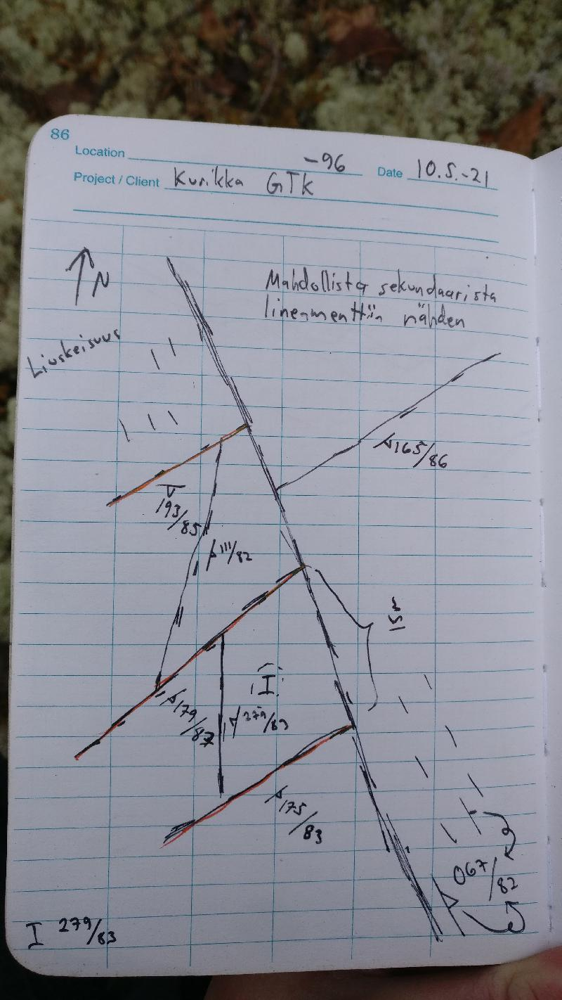

<!DOCTYPE html>
<head>    
    <meta http-equiv="content-type" content="text/html; charset=UTF-8" />
    
        <script>
            L_NO_TOUCH = false;
            L_DISABLE_3D = false;
        </script>
    
    <style>html, body {width: 100%;height: 100%;margin: 0;padding: 0;}</style>
    <style>#map {position:absolute;top:0;bottom:0;right:0;left:0;}</style>
    <script src="https://cdn.jsdelivr.net/npm/leaflet@1.6.0/dist/leaflet.js"></script>
    <script src="https://code.jquery.com/jquery-1.12.4.min.js"></script>
    <script src="https://maxcdn.bootstrapcdn.com/bootstrap/3.2.0/js/bootstrap.min.js"></script>
    <script src="https://cdnjs.cloudflare.com/ajax/libs/Leaflet.awesome-markers/2.0.2/leaflet.awesome-markers.js"></script>
    <link rel="stylesheet" href="https://cdn.jsdelivr.net/npm/leaflet@1.6.0/dist/leaflet.css"/>
    <link rel="stylesheet" href="https://maxcdn.bootstrapcdn.com/bootstrap/3.2.0/css/bootstrap.min.css"/>
    <link rel="stylesheet" href="https://maxcdn.bootstrapcdn.com/bootstrap/3.2.0/css/bootstrap-theme.min.css"/>
    <link rel="stylesheet" href="https://maxcdn.bootstrapcdn.com/font-awesome/4.6.3/css/font-awesome.min.css"/>
    <link rel="stylesheet" href="https://cdnjs.cloudflare.com/ajax/libs/Leaflet.awesome-markers/2.0.2/leaflet.awesome-markers.css"/>
    <link rel="stylesheet" href="https://cdn.jsdelivr.net/gh/python-visualization/folium/folium/templates/leaflet.awesome.rotate.min.css"/>
    <link rel="stylesheet" href="styles.css"/>
    
            <meta name="viewport" content="width=device-width,
                initial-scale=1.0, maximum-scale=1.0, user-scalable=no" />
            <style>
                #map_d22996d93b6640acb69f6f03e44fae02 {
                    position: relative;
                    width: 100.0%;
                    height: 100.0%;
                    left: 0.0%;
                    top: 0.0%;
                }
            </style>
        
</head>
<body>    
    
            <div class="folium-map" id="map_d22996d93b6640acb69f6f03e44fae02" ></div>
        
</body>
<script>    
    
            var map_d22996d93b6640acb69f6f03e44fae02 = L.map(
                "map_d22996d93b6640acb69f6f03e44fae02",
                {
                    center: [62.68172665, 22.28418883],
                    crs: L.CRS.EPSG3857,
                    zoom: 10,
                    zoomControl: true,
                    preferCanvas: false,
                }
            );

            

        
    
            var tile_layer_dcd2671219d8455abefc5b474e5db86a = L.tileLayer(
                "https://{s}.tile.openstreetmap.org/{z}/{x}/{y}.png",
                {"attribution": "Data by \u0026copy; \u003ca href=\"http://openstreetmap.org\"\u003eOpenStreetMap\u003c/a\u003e, under \u003ca href=\"http://www.openstreetmap.org/copyright\"\u003eODbL\u003c/a\u003e.", "detectRetina": false, "maxNativeZoom": 18, "maxZoom": 18, "minZoom": 0, "noWrap": false, "opacity": 1, "subdomains": "abc", "tms": false}
            ).addTo(map_d22996d93b6640acb69f6f03e44fae02);
        
    
            var marker_4226c7700f5f4d58bcb1ff49a774aab6 = L.marker(
                [62.6502261, 22.24487724],
                {}
            ).addTo(map_d22996d93b6640acb69f6f03e44fae02);
        
    
            var icon_8d2b2f3b13794fb9a73a62b4b6bfa814 = L.AwesomeMarkers.icon(
                {"extraClasses": "fa-rotate-0", "icon": "glyphicon-stop", "iconColor": "white", "markerColor": "lightgray", "prefix": "glyphicon"}
            );
            marker_4226c7700f5f4d58bcb1ff49a774aab6.setIcon(icon_8d2b2f3b13794fb9a73a62b4b6bfa814);
        
    
        var popup_7f17c50061a54872af17a0dd90162c16 = L.popup({"maxWidth": "100%"});

        
            var html_f94683b11bc441d49680e425c559b3ca = $(`<div id="html_f94683b11bc441d49680e425c559b3ca" style="width: 100.0%; height: 100.0%;"><h3>NO-2021-120</h3> <h4></h4> <h4></h4> <h4></h4> <h4>Observation remarks</h4> <h4>Images</h4></div>`)[0];
            popup_7f17c50061a54872af17a0dd90162c16.setContent(html_f94683b11bc441d49680e425c559b3ca);
        

        marker_4226c7700f5f4d58bcb1ff49a774aab6.bindPopup(popup_7f17c50061a54872af17a0dd90162c16)
        ;

        
    
    
            marker_4226c7700f5f4d58bcb1ff49a774aab6.bindTooltip(
                `<div>
                     NO-2021-120
                 </div>`,
                {"sticky": true}
            );
        
    
            var marker_2760b34e2744416c9f7f6c0352a91bb2 = L.marker(
                [62.64958984, 22.24507106],
                {}
            ).addTo(map_d22996d93b6640acb69f6f03e44fae02);
        
    
            var icon_6bc725b92d9b48289161b56104b8415c = L.AwesomeMarkers.icon(
                {"extraClasses": "fa-rotate-0", "icon": "glyphicon-stop", "iconColor": "white", "markerColor": "lightgray", "prefix": "glyphicon"}
            );
            marker_2760b34e2744416c9f7f6c0352a91bb2.setIcon(icon_6bc725b92d9b48289161b56104b8415c);
        
    
        var popup_c5a0a9f470104d9e95b90709fff0cb0c = L.popup({"maxWidth": "100%"});

        
            var html_3d55603fd3244e6899b542ea3bcb3459 = $(`<div id="html_3d55603fd3244e6899b542ea3bcb3459" style="width: 100.0%; height: 100.0%;"><h3>NO-2021-121</h3> <h4>Planar Structures</h4> <table> <thead> <tr> <th align="right">DIP</th> <th align="right">DIRECTION_OF_DIP</th> <th align="left">STYPE_TEXT</th> <th align="left">FOL_TYPE_TEXT</th> </tr> </thead> <tbody> <tr> <td align="right">78</td> <td align="right">37</td> <td align="left">Foliation</td> <td align="left">Penetrative foliation</td> </tr> <tr> <td align="right">56</td> <td align="right">296</td> <td align="left">Fault</td> <td align="left"></td> </tr> <tr> <td align="right">75</td> <td align="right">351</td> <td align="left">Fault</td> <td align="left"></td> </tr> <tr> <td align="right">82</td> <td align="right">242</td> <td align="left">Fault</td> <td align="left"></td> </tr> <tr> <td align="right">29</td> <td align="right">76</td> <td align="left">Fault</td> <td align="left"></td> </tr> </tbody> </table> <h4></h4> <h4>Rock Observations</h4> <table> <thead> <tr> <th align="left">REMARKS</th> <th align="left">FIELD_NAME</th> </tr> </thead> <tbody> <tr> <td align="left"></td> <td align="left">Granodiorite</td> </tr> </tbody> </table> <h4>Observation remarks</h4> <p>Hydrotermistä fluidia raoissa kalimaasälpää (322/44), kvartsia ja epidoottia ja ehkä jopa karbonaattia (295/56), heikosti suuntautunut granodioriitti, päärakosuunta (296/56), paljon rakoilua, L-tektoniitti lineaatio (162/54) hyvin epävarma</p> <h4>Images</h4> <p><a href="kapalo_imgs/NO-2021-121.k1@8923370035630306331.jpg"></a>Epidoottia raossa (063/86) <a href="kapalo_imgs/NO-2021-121.k2@2536619394793919973.jpg"></a>Punaista rakotäytettä kalimaasälpää raossa (322/44) <a href="kapalo_imgs/NO-2021-121.k3@4834227976921686441.jpg">('Raossa tuskin ollut liikettä kun katsoo "klastia" (296/56), klasti pystyssä rakopinnasta', 'NO-2021-121.k3')</a> <a href="kapalo_imgs/NO-2021-121.k4@3798868176195117756.jpg">('Eemin piirros, poikkileikkaus, rakosuuntia', 'NO-2021-121.k4')</a></p></div>`)[0];
            popup_c5a0a9f470104d9e95b90709fff0cb0c.setContent(html_3d55603fd3244e6899b542ea3bcb3459);
        

        marker_2760b34e2744416c9f7f6c0352a91bb2.bindPopup(popup_c5a0a9f470104d9e95b90709fff0cb0c)
        ;

        
    
    
            marker_2760b34e2744416c9f7f6c0352a91bb2.bindTooltip(
                `<div>
                     NO-2021-121
                 </div>`,
                {"sticky": true}
            );
        
    
            var marker_b51c551796ed49d4913c728b13d6f224 = L.marker(
                [62.6489966, 22.24552787],
                {}
            ).addTo(map_d22996d93b6640acb69f6f03e44fae02);
        
    
            var icon_be4509656ef442eb9e0ea81ef64343df = L.AwesomeMarkers.icon(
                {"extraClasses": "fa-rotate-92", "icon": "glyphicon-arrow-up", "iconColor": "white", "markerColor": "blue", "prefix": "glyphicon"}
            );
            marker_b51c551796ed49d4913c728b13d6f224.setIcon(icon_be4509656ef442eb9e0ea81ef64343df);
        
    
        var popup_00953b9adde647f1a8ec435076fda26b = L.popup({"maxWidth": "100%"});

        
            var html_d159ec4e44094b30a580cc2626450390 = $(`<div id="html_d159ec4e44094b30a580cc2626450390" style="width: 100.0%; height: 100.0%;"><h3>NO-2021-122</h3> <h4>Planar Structures</h4> <table> <thead> <tr> <th align="right">DIP</th> <th align="right">DIRECTION_OF_DIP</th> <th align="left">STYPE_TEXT</th> <th align="left">FOL_TYPE_TEXT</th> </tr> </thead> <tbody> <tr> <td align="right">68</td> <td align="right">197</td> <td align="left">Foliation</td> <td align="left">Penetrative foliation</td> </tr> <tr> <td align="right">60</td> <td align="right">323</td> <td align="left">Fault</td> <td align="left"></td> </tr> <tr> <td align="right">84</td> <td align="right">201</td> <td align="left">Fault</td> <td align="left"></td> </tr> <tr> <td align="right">20</td> <td align="right">87</td> <td align="left">Fault</td> <td align="left"></td> </tr> </tbody> </table> <h4>Linear Structures</h4> <table> <thead> <tr> <th align="right">DIRECTION</th> <th align="right">PLUNGE</th> <th align="left">STYPE_TEXT</th> </tr> </thead> <tbody> <tr> <td align="right">92</td> <td align="right">61</td> <td align="left">Lineation</td> </tr> </tbody> </table> <h4>Rock Observations</h4> <table> <thead> <tr> <th align="left">REMARKS</th> <th align="left">FIELD_NAME</th> </tr> </thead> <tbody> <tr> <td align="left"></td> <td align="left">Granodiorite</td> </tr> </tbody> </table> <h4>Observation remarks</h4> <p>Vahva lineaatio heikko liuskeisuus granodioriitissa, päärakosuunta, hydrotermistä fluidia mahdollisesti kaikissa rakosuunnissaa, päärakosuunta (323/60)</p> <h4>Images</h4> <p><a href="kapalo_imgs/NO-2021-122.k1@5617358163811979863.jpg"></a>Vahva lineaatio (092/61) liuskeisuuspinnassa (197/68) <a href="kapalo_imgs/NO-2021-122.k2@5780095224077011552.jpg"></a>Nikolaksen piirros, rakojen topologiaa <a href="kapalo_imgs/NO-2021-122.k3@7591171526182596366.jpg">('Eemin piirros, poikkileikkaus E-W, raon hyppyjä lineaation suuntaan', 'NO-2021-122.k3')</a></p></div>`)[0];
            popup_00953b9adde647f1a8ec435076fda26b.setContent(html_d159ec4e44094b30a580cc2626450390);
        

        marker_b51c551796ed49d4913c728b13d6f224.bindPopup(popup_00953b9adde647f1a8ec435076fda26b)
        ;

        
    
    
            marker_b51c551796ed49d4913c728b13d6f224.bindTooltip(
                `<div>
                     NO-2021-122
                 </div>`,
                {"sticky": true}
            );
        
    
            var marker_6ecf408557034c68887e7204f65ff60b = L.marker(
                [62.64799984, 22.24524319],
                {}
            ).addTo(map_d22996d93b6640acb69f6f03e44fae02);
        
    
            var icon_88c746d90f0448ba9fb91b35433a11a6 = L.AwesomeMarkers.icon(
                {"extraClasses": "fa-rotate-82", "icon": "glyphicon-arrow-up", "iconColor": "white", "markerColor": "blue", "prefix": "glyphicon"}
            );
            marker_6ecf408557034c68887e7204f65ff60b.setIcon(icon_88c746d90f0448ba9fb91b35433a11a6);
        
    
        var popup_8a1a5591560949cb901440106817ccea = L.popup({"maxWidth": "100%"});

        
            var html_e87c9c0c66904f0aabe8a5eb539a82af = $(`<div id="html_e87c9c0c66904f0aabe8a5eb539a82af" style="width: 100.0%; height: 100.0%;"><h3>NO-2021-123</h3> <h4>Planar Structures</h4> <table> <thead> <tr> <th align="right">DIP</th> <th align="right">DIRECTION_OF_DIP</th> <th align="left">STYPE_TEXT</th> <th align="left">FOL_TYPE_TEXT</th> </tr> </thead> <tbody> <tr> <td align="right">64</td> <td align="right">184</td> <td align="left">Foliation</td> <td align="left">Penetrative foliation</td> </tr> <tr> <td align="right">22</td> <td align="right">107</td> <td align="left">Fault</td> <td align="left"></td> </tr> <tr> <td align="right">86</td> <td align="right">78</td> <td align="left">Fault</td> <td align="left"></td> </tr> <tr> <td align="right">81</td> <td align="right">181</td> <td align="left">Fault</td> <td align="left"></td> </tr> </tbody> </table> <h4>Linear Structures</h4> <table> <thead> <tr> <th align="right">DIRECTION</th> <th align="right">PLUNGE</th> <th align="left">STYPE_TEXT</th> </tr> </thead> <tbody> <tr> <td align="right">82</td> <td align="right">40</td> <td align="left">Lineation</td> </tr> </tbody> </table> <h4>Rock Observations</h4> <table> <thead> <tr> <th align="left">REMARKS</th> <th align="left">FIELD_NAME</th> </tr> </thead> <tbody> <tr> <td align="left"></td> <td align="left">Granodiorite</td> </tr> </tbody> </table> <h4>Observation remarks</h4> <p>Pienirakeisempi granodioriitti/dioriitti</p> <h4>Images</h4> <p><a href="kapalo_imgs/NO-2021-123.k1@8548264451686763326.jpg"></a>Koostumusvaihtelua lokaalisti, hienorakeinen liuskeinen dioriitti</p></div>`)[0];
            popup_8a1a5591560949cb901440106817ccea.setContent(html_e87c9c0c66904f0aabe8a5eb539a82af);
        

        marker_6ecf408557034c68887e7204f65ff60b.bindPopup(popup_8a1a5591560949cb901440106817ccea)
        ;

        
    
    
            marker_6ecf408557034c68887e7204f65ff60b.bindTooltip(
                `<div>
                     NO-2021-123
                 </div>`,
                {"sticky": true}
            );
        
    
            var marker_9664fcc8f5a84dd69bfeb0fbef8f7b30 = L.marker(
                [62.64572403, 22.26150361],
                {}
            ).addTo(map_d22996d93b6640acb69f6f03e44fae02);
        
    
            var icon_120d86b99acb4dc9abccb201df6f9563 = L.AwesomeMarkers.icon(
                {"extraClasses": "fa-rotate-134", "icon": "glyphicon-arrow-up", "iconColor": "white", "markerColor": "blue", "prefix": "glyphicon"}
            );
            marker_9664fcc8f5a84dd69bfeb0fbef8f7b30.setIcon(icon_120d86b99acb4dc9abccb201df6f9563);
        
    
        var popup_adbcec1fb0d141ed89bf8b96bd8f5119 = L.popup({"maxWidth": "100%"});

        
            var html_696769ce6c19418f922e4fb2aafb4c01 = $(`<div id="html_696769ce6c19418f922e4fb2aafb4c01" style="width: 100.0%; height: 100.0%;"><h3>NO-2021-124</h3> <h4>Planar Structures</h4> <table> <thead> <tr> <th align="right">DIP</th> <th align="right">DIRECTION_OF_DIP</th> <th align="left">STYPE_TEXT</th> <th align="left">FOL_TYPE_TEXT</th> </tr> </thead> <tbody> <tr> <td align="right">83</td> <td align="right">264</td> <td align="left">Fault</td> <td align="left"></td> </tr> <tr> <td align="right">86</td> <td align="right">187</td> <td align="left">Fault</td> <td align="left"></td> </tr> <tr> <td align="right">85</td> <td align="right">76</td> <td align="left">Fault</td> <td align="left"></td> </tr> </tbody> </table> <h4>Linear Structures</h4> <table> <thead> <tr> <th align="right">DIRECTION</th> <th align="right">PLUNGE</th> <th align="left">STYPE_TEXT</th> </tr> </thead> <tbody> <tr> <td align="right">134</td> <td align="right">58</td> <td align="left">Lineation</td> </tr> </tbody> </table> <h4>Rock Observations</h4> <table> <thead> <tr> <th align="left">REMARKS</th> <th align="left">FIELD_NAME</th> </tr> </thead> <tbody> <tr> <td align="left"></td> <td align="left">Granodiorite</td> </tr> </tbody> </table> <h4>Observation remarks</h4> <p>Kvartsijuonia (058/68; 015/80; 125/65), mahdollinen L-tektoniitti</p> <h4>Images</h4> <p><a href="kapalo_imgs/NO-2021-124.k1@3218770996976864257.jpg"></a>Hyppy kvartsijuonessa (015/80) <a href="kapalo_imgs/NO-2021-124.k2@6226118352050024138.jpg"></a>Lineaatio näkyy myös kvartsijuonessa <a href="kapalo_imgs/NO-2021-124.k3@4800862070566764280.jpg">('Liuskeisuus vai lineaatio', 'NO-2021-124.k3')</a></p></div>`)[0];
            popup_adbcec1fb0d141ed89bf8b96bd8f5119.setContent(html_696769ce6c19418f922e4fb2aafb4c01);
        

        marker_9664fcc8f5a84dd69bfeb0fbef8f7b30.bindPopup(popup_adbcec1fb0d141ed89bf8b96bd8f5119)
        ;

        
    
    
            marker_9664fcc8f5a84dd69bfeb0fbef8f7b30.bindTooltip(
                `<div>
                     NO-2021-124
                 </div>`,
                {"sticky": true}
            );
        
    
            var marker_95c5d048c671445582b76d035b94d4b5 = L.marker(
                [62.6444608, 22.26643641],
                {}
            ).addTo(map_d22996d93b6640acb69f6f03e44fae02);
        
    
            var icon_20020a673c634fdd89916fd105e6f2f3 = L.AwesomeMarkers.icon(
                {"extraClasses": "fa-rotate-0", "icon": "glyphicon-stop", "iconColor": "white", "markerColor": "lightgray", "prefix": "glyphicon"}
            );
            marker_95c5d048c671445582b76d035b94d4b5.setIcon(icon_20020a673c634fdd89916fd105e6f2f3);
        
    
        var popup_31e949519715446fbe5bf26870e38a89 = L.popup({"maxWidth": "100%"});

        
            var html_c06c89ae82e849138d06356c5eab1999 = $(`<div id="html_c06c89ae82e849138d06356c5eab1999" style="width: 100.0%; height: 100.0%;"><h3>NO-2021-125</h3> <h4>Planar Structures</h4> <table> <thead> <tr> <th align="right">DIP</th> <th align="right">DIRECTION_OF_DIP</th> <th align="left">STYPE_TEXT</th> <th align="left">FOL_TYPE_TEXT</th> </tr> </thead> <tbody> <tr> <td align="right">88</td> <td align="right">322</td> <td align="left">Fault</td> <td align="left"></td> </tr> <tr> <td align="right">83</td> <td align="right">74</td> <td align="left">Fault</td> <td align="left"></td> </tr> </tbody> </table> <h4></h4> <h4>Rock Observations</h4> <table> <thead> <tr> <th align="left">REMARKS</th> <th align="left">FIELD_NAME</th> </tr> </thead> <tbody> <tr> <td align="left"></td> <td align="left">Granodiorite</td> </tr> </tbody> </table> <h4>Observation remarks</h4> <p>Vallitseva rakosuunta (322/88), hyvin heikosti suuntautunut granodioriitti tai ei ollenkaan, kvartsijuonia (074/83)</p> <h4>Images</h4></div>`)[0];
            popup_31e949519715446fbe5bf26870e38a89.setContent(html_c06c89ae82e849138d06356c5eab1999);
        

        marker_95c5d048c671445582b76d035b94d4b5.bindPopup(popup_31e949519715446fbe5bf26870e38a89)
        ;

        
    
    
            marker_95c5d048c671445582b76d035b94d4b5.bindTooltip(
                `<div>
                     NO-2021-125
                 </div>`,
                {"sticky": true}
            );
        
    
            var marker_9202b75a8b1749e7ba13ceeccb61ddc3 = L.marker(
                [62.64597139, 22.26551594],
                {}
            ).addTo(map_d22996d93b6640acb69f6f03e44fae02);
        
    
            var icon_06be1ed6f1fb43acb53fa279c23b21a0 = L.AwesomeMarkers.icon(
                {"extraClasses": "fa-rotate-120", "icon": "glyphicon-arrow-up", "iconColor": "white", "markerColor": "blue", "prefix": "glyphicon"}
            );
            marker_9202b75a8b1749e7ba13ceeccb61ddc3.setIcon(icon_06be1ed6f1fb43acb53fa279c23b21a0);
        
    
        var popup_72945b062aaa46ff9591ba2a3b96b3d4 = L.popup({"maxWidth": "100%"});

        
            var html_d0ce49def45c4f1abce580c68006493f = $(`<div id="html_d0ce49def45c4f1abce580c68006493f" style="width: 100.0%; height: 100.0%;"><h3>NO-2021-126</h3> <h4>Planar Structures</h4> <table> <thead> <tr> <th align="right">DIP</th> <th align="right">DIRECTION_OF_DIP</th> <th align="left">STYPE_TEXT</th> <th align="left">FOL_TYPE_TEXT</th> </tr> </thead> <tbody> <tr> <td align="right">84</td> <td align="right">156</td> <td align="left">Fault</td> <td align="left"></td> </tr> <tr> <td align="right">63</td> <td align="right">109</td> <td align="left">Fault</td> <td align="left"></td> </tr> </tbody> </table> <h4>Linear Structures</h4> <table> <thead> <tr> <th align="right">DIRECTION</th> <th align="right">PLUNGE</th> <th align="left">STYPE_TEXT</th> </tr> </thead> <tbody> <tr> <td align="right">120</td> <td align="right">37</td> <td align="left">Lineation</td> </tr> </tbody> </table> <h4>Rock Observations</h4> <table> <thead> <tr> <th align="left">REMARKS</th> <th align="left">FIELD_NAME</th> </tr> </thead> <tbody> <tr> <td align="left"></td> <td align="left">Granodiorite</td> </tr> </tbody> </table> <h4>Observation remarks</h4> <p>L-tektoniitti tai hyvin heikko liuskeisuus (131/45)</p> <h4>Images</h4> <p><a href="kapalo_imgs/NO-2021-126.k1@6982591858692456125.jpg"></a>Koostumusvaihtelua ja kvartsijuonia, kuvan taso (030/46)</p></div>`)[0];
            popup_72945b062aaa46ff9591ba2a3b96b3d4.setContent(html_d0ce49def45c4f1abce580c68006493f);
        

        marker_9202b75a8b1749e7ba13ceeccb61ddc3.bindPopup(popup_72945b062aaa46ff9591ba2a3b96b3d4)
        ;

        
    
    
            marker_9202b75a8b1749e7ba13ceeccb61ddc3.bindTooltip(
                `<div>
                     NO-2021-126
                 </div>`,
                {"sticky": true}
            );
        
    
            var marker_96a87674ff334b96aae4f7b5149e20c1 = L.marker(
                [62.64682437, 22.26251022],
                {}
            ).addTo(map_d22996d93b6640acb69f6f03e44fae02);
        
    
            var icon_893ca421bd8b42fb95365accb5ed7da3 = L.AwesomeMarkers.icon(
                {"extraClasses": "fa-rotate-110", "icon": "glyphicon-arrow-up", "iconColor": "white", "markerColor": "blue", "prefix": "glyphicon"}
            );
            marker_96a87674ff334b96aae4f7b5149e20c1.setIcon(icon_893ca421bd8b42fb95365accb5ed7da3);
        
    
        var popup_f1d18cdee87442298ef90f27da3e36f2 = L.popup({"maxWidth": "100%"});

        
            var html_179c9aec4d90466ea3025e48bdb3fe3b = $(`<div id="html_179c9aec4d90466ea3025e48bdb3fe3b" style="width: 100.0%; height: 100.0%;"><h3>NO-2021-127</h3> <h4>Planar Structures</h4> <table> <thead> <tr> <th align="right">DIP</th> <th align="right">DIRECTION_OF_DIP</th> <th align="left">STYPE_TEXT</th> <th align="left">FOL_TYPE_TEXT</th> </tr> </thead> <tbody> <tr> <td align="right">60</td> <td align="right">86</td> <td align="left">Fault</td> <td align="left"></td> </tr> <tr> <td align="right">78</td> <td align="right">156</td> <td align="left">Fault</td> <td align="left"></td> </tr> </tbody> </table> <h4>Linear Structures</h4> <table> <thead> <tr> <th align="right">DIRECTION</th> <th align="right">PLUNGE</th> <th align="left">STYPE_TEXT</th> </tr> </thead> <tbody> <tr> <td align="right">110</td> <td align="right">51</td> <td align="left">Lineation</td> </tr> </tbody> </table> <h4>Rock Observations</h4> <table> <thead> <tr> <th align="left">REMARKS</th> <th align="left">FIELD_NAME</th> </tr> </thead> <tbody> <tr> <td align="left"></td> <td align="left">Granodiorite</td> </tr> </tbody> </table> <h4>Observation remarks</h4> <p>Hyvin vahva lineaatio, L-tektoniitti, hyvin heikko tasomainen suuntaus (192/76)</p> <h4>Images</h4> <p><a href="kapalo_imgs/NO-2021-127.k1@4608074849448132282.jpg"></a>Kuvan pinta (087/62), kaatuu kuvaajaa päin</p></div>`)[0];
            popup_f1d18cdee87442298ef90f27da3e36f2.setContent(html_179c9aec4d90466ea3025e48bdb3fe3b);
        

        marker_96a87674ff334b96aae4f7b5149e20c1.bindPopup(popup_f1d18cdee87442298ef90f27da3e36f2)
        ;

        
    
    
            marker_96a87674ff334b96aae4f7b5149e20c1.bindTooltip(
                `<div>
                     NO-2021-127
                 </div>`,
                {"sticky": true}
            );
        
    
            var marker_92ef2b5b0dab4239a14687f34aadc542 = L.marker(
                [62.70746425, 22.34853267],
                {}
            ).addTo(map_d22996d93b6640acb69f6f03e44fae02);
        
    
            var icon_19b0d408609f4d979d3983292681f80a = L.AwesomeMarkers.icon(
                {"extraClasses": "fa-rotate-115", "icon": "glyphicon-arrow-up", "iconColor": "white", "markerColor": "blue", "prefix": "glyphicon"}
            );
            marker_92ef2b5b0dab4239a14687f34aadc542.setIcon(icon_19b0d408609f4d979d3983292681f80a);
        
    
        var popup_17449faf07c04f2fbc003d924b57e5f8 = L.popup({"maxWidth": "100%"});

        
            var html_ca5b274e9f634cf1b660b92de34595e0 = $(`<div id="html_ca5b274e9f634cf1b660b92de34595e0" style="width: 100.0%; height: 100.0%;"><h3>NO-2021-1</h3> <h4>Planar Structures</h4> <table> <thead> <tr> <th align="right">DIP</th> <th align="right">DIRECTION_OF_DIP</th> <th align="left">STYPE_TEXT</th> <th align="left">FOL_TYPE_TEXT</th> </tr> </thead> <tbody> <tr> <td align="right">74</td> <td align="right">74</td> <td align="left">Foliation</td> <td align="left">Penetrative foliation</td> </tr> <tr> <td align="right">81</td> <td align="right">302</td> <td align="left">Fault</td> <td align="left"></td> </tr> <tr> <td align="right">80</td> <td align="right">30</td> <td align="left">Fault</td> <td align="left"></td> </tr> </tbody> </table> <h4>Linear Structures</h4> <table> <thead> <tr> <th align="right">DIRECTION</th> <th align="right">PLUNGE</th> <th align="left">STYPE_TEXT</th> </tr> </thead> <tbody> <tr> <td align="right">115</td> <td align="right">59</td> <td align="left">Lineation</td> </tr> </tbody> </table> <h4>Rock Observations</h4> <table> <thead> <tr> <th align="left">REMARKS</th> <th align="left">FIELD_NAME</th> </tr> </thead> <tbody> <tr> <td align="left"></td> <td align="left">Paragneiss</td> </tr> </tbody> </table> <h4>Observation remarks</h4> <p>Lohkosuuntia</p> <h4>Images</h4></div>`)[0];
            popup_17449faf07c04f2fbc003d924b57e5f8.setContent(html_ca5b274e9f634cf1b660b92de34595e0);
        

        marker_92ef2b5b0dab4239a14687f34aadc542.bindPopup(popup_17449faf07c04f2fbc003d924b57e5f8)
        ;

        
    
    
            marker_92ef2b5b0dab4239a14687f34aadc542.bindTooltip(
                `<div>
                     NO-2021-1
                 </div>`,
                {"sticky": true}
            );
        
    
            var marker_4e3c10bb9ada4e5ab7d23a9316a39f1a = L.marker(
                [62.73067318, 22.37575849],
                {}
            ).addTo(map_d22996d93b6640acb69f6f03e44fae02);
        
    
            var icon_43df3cf936d24652b36a973bf96381ee = L.AwesomeMarkers.icon(
                {"extraClasses": "fa-rotate-0", "icon": "glyphicon-stop", "iconColor": "white", "markerColor": "lightgray", "prefix": "glyphicon"}
            );
            marker_4e3c10bb9ada4e5ab7d23a9316a39f1a.setIcon(icon_43df3cf936d24652b36a973bf96381ee);
        
    
        var popup_89df2429519a43f4b21a81c9a4a5ac4f = L.popup({"maxWidth": "100%"});

        
            var html_f7a3a018bfcf43b9b0f9416b164d8b60 = $(`<div id="html_f7a3a018bfcf43b9b0f9416b164d8b60" style="width: 100.0%; height: 100.0%;"><h3>NO-2021-4</h3> <h4>Planar Structures</h4> <table> <thead> <tr> <th align="right">DIP</th> <th align="right">DIRECTION_OF_DIP</th> <th align="left">STYPE_TEXT</th> <th align="left">FOL_TYPE_TEXT</th> </tr> </thead> <tbody> <tr> <td align="right">1</td> <td align="right">93</td> <td align="left">Fault</td> <td align="left"></td> </tr> <tr> <td align="right">81</td> <td align="right">354</td> <td align="left">Foliation</td> <td align="left">Not applicable</td> </tr> <tr> <td align="right">84</td> <td align="right">81</td> <td align="left">Fault</td> <td align="left"></td> </tr> <tr> <td align="right">77</td> <td align="right">168</td> <td align="left">Fault</td> <td align="left"></td> </tr> </tbody> </table> <h4></h4> <h4></h4> <h4>Observation remarks</h4> <p>Sahalaitainen hylly, killegneissi, pegmatiittia, liuskeisuus kaatuilee</p> <h4>Images</h4> <p><a href="kapalo_imgs/NO-2021-4.k1@5916234659612036702.jpg"></a>Sahalaidat</p></div>`)[0];
            popup_89df2429519a43f4b21a81c9a4a5ac4f.setContent(html_f7a3a018bfcf43b9b0f9416b164d8b60);
        

        marker_4e3c10bb9ada4e5ab7d23a9316a39f1a.bindPopup(popup_89df2429519a43f4b21a81c9a4a5ac4f)
        ;

        
    
    
            marker_4e3c10bb9ada4e5ab7d23a9316a39f1a.bindTooltip(
                `<div>
                     NO-2021-4
                 </div>`,
                {"sticky": true}
            );
        
    
            var marker_3270b800df1346c9bc7c6a382cfb45ea = L.marker(
                [62.73093098, 22.3763802],
                {}
            ).addTo(map_d22996d93b6640acb69f6f03e44fae02);
        
    
            var icon_f481e46ec4a74553a31088ad262ef717 = L.AwesomeMarkers.icon(
                {"extraClasses": "fa-rotate-97", "icon": "glyphicon-arrow-up", "iconColor": "white", "markerColor": "blue", "prefix": "glyphicon"}
            );
            marker_3270b800df1346c9bc7c6a382cfb45ea.setIcon(icon_f481e46ec4a74553a31088ad262ef717);
        
    
        var popup_f976d2a422ff4b1994e590015a9e9b0b = L.popup({"maxWidth": "100%"});

        
            var html_bca136cf9b4144d1935b4d94939bd910 = $(`<div id="html_bca136cf9b4144d1935b4d94939bd910" style="width: 100.0%; height: 100.0%;"><h3>NO-2021-5</h3> <h4>Planar Structures</h4> <table> <thead> <tr> <th align="right">DIP</th> <th align="right">DIRECTION_OF_DIP</th> <th align="left">STYPE_TEXT</th> <th align="left">FOL_TYPE_TEXT</th> </tr> </thead> <tbody> <tr> <td align="right">83</td> <td align="right">182</td> <td align="left">Foliation</td> <td align="left">Penetrative foliation</td> </tr> <tr> <td align="right">90</td> <td align="right">83</td> <td align="left">Fault</td> <td align="left"></td> </tr> <tr> <td align="right">83</td> <td align="right">182</td> <td align="left">Fault</td> <td align="left"></td> </tr> </tbody> </table> <h4>Linear Structures</h4> <table> <thead> <tr> <th align="right">DIRECTION</th> <th align="right">PLUNGE</th> <th align="left">STYPE_TEXT</th> </tr> </thead> <tbody> <tr> <td align="right">97</td> <td align="right">62</td> <td align="left">Lineation</td> </tr> </tbody> </table> <h4>Rock Observations</h4> <table> <thead> <tr> <th align="left">REMARKS</th> <th align="left">FIELD_NAME</th> </tr> </thead> <tbody> <tr> <td align="left">Granaattikiillegneissi, budinoitumista</td> <td align="left">Paragneiss</td> </tr> </tbody> </table> <h4>Observation remarks</h4> <h4>Images</h4> <p><a href="kapalo_imgs/NO-2021-5.k1@3137781352072277875.jpg"></a>Budinoitumista, lineaatio</p></div>`)[0];
            popup_f976d2a422ff4b1994e590015a9e9b0b.setContent(html_bca136cf9b4144d1935b4d94939bd910);
        

        marker_3270b800df1346c9bc7c6a382cfb45ea.bindPopup(popup_f976d2a422ff4b1994e590015a9e9b0b)
        ;

        
    
    
            marker_3270b800df1346c9bc7c6a382cfb45ea.bindTooltip(
                `<div>
                     NO-2021-5
                 </div>`,
                {"sticky": true}
            );
        
    
            var marker_3839392193534cc6ba99d726a914bf11 = L.marker(
                [62.7309836, 22.37820031],
                {}
            ).addTo(map_d22996d93b6640acb69f6f03e44fae02);
        
    
            var icon_5a7ecbe1b088409592f160c1efc3fb50 = L.AwesomeMarkers.icon(
                {"extraClasses": "fa-rotate-104", "icon": "glyphicon-arrow-up", "iconColor": "white", "markerColor": "blue", "prefix": "glyphicon"}
            );
            marker_3839392193534cc6ba99d726a914bf11.setIcon(icon_5a7ecbe1b088409592f160c1efc3fb50);
        
    
        var popup_23bbf681097b4ba592044e9cf7be30d6 = L.popup({"maxWidth": "100%"});

        
            var html_0445f4c0f5b44873b7c4369de7662933 = $(`<div id="html_0445f4c0f5b44873b7c4369de7662933" style="width: 100.0%; height: 100.0%;"><h3>NO-2021-6</h3> <h4>Planar Structures</h4> <table> <thead> <tr> <th align="right">DIP</th> <th align="right">DIRECTION_OF_DIP</th> <th align="left">STYPE_TEXT</th> <th align="left">FOL_TYPE_TEXT</th> </tr> </thead> <tbody> <tr> <td align="right">12</td> <td align="right">302</td> <td align="left">Fault</td> <td align="left"></td> </tr> </tbody> </table> <h4>Linear Structures</h4> <table> <thead> <tr> <th align="right">DIRECTION</th> <th align="right">PLUNGE</th> <th align="left">STYPE_TEXT</th> </tr> </thead> <tbody> <tr> <td align="right">104</td> <td align="right">50</td> <td align="left">Lineation</td> </tr> </tbody> </table> <h4>Rock Observations</h4> <table> <thead> <tr> <th align="left">REMARKS</th> <th align="left">FIELD_NAME</th> </tr> </thead> <tbody> <tr> <td align="left">Granaattikiillegneissi</td> <td align="left">Paragneiss</td> </tr> </tbody> </table> <h4>Observation remarks</h4> <p>Granaattikiillegneissi, hylly, raot päättyy hieman pegmatiittiin</p> <h4>Images</h4> <p><a href="kapalo_imgs/NO-2021-6.k1@7344405924075572820.jpg"></a>Pietu piirros, karttakuva</p></div>`)[0];
            popup_23bbf681097b4ba592044e9cf7be30d6.setContent(html_0445f4c0f5b44873b7c4369de7662933);
        

        marker_3839392193534cc6ba99d726a914bf11.bindPopup(popup_23bbf681097b4ba592044e9cf7be30d6)
        ;

        
    
    
            marker_3839392193534cc6ba99d726a914bf11.bindTooltip(
                `<div>
                     NO-2021-6
                 </div>`,
                {"sticky": true}
            );
        
    
            var marker_a2bc5250e07a49a0953c09b3c5c6bae9 = L.marker(
                [62.72968585, 22.37586387],
                {}
            ).addTo(map_d22996d93b6640acb69f6f03e44fae02);
        
    
            var icon_04acf0e592244aeca6eb4d5573a84625 = L.AwesomeMarkers.icon(
                {"extraClasses": "fa-rotate-0", "icon": "glyphicon-stop", "iconColor": "white", "markerColor": "lightgray", "prefix": "glyphicon"}
            );
            marker_a2bc5250e07a49a0953c09b3c5c6bae9.setIcon(icon_04acf0e592244aeca6eb4d5573a84625);
        
    
        var popup_53a0e3523c944a0abc7afe6a1a29d5bd = L.popup({"maxWidth": "100%"});

        
            var html_86bfeb4284c8480c9629268e9be01d35 = $(`<div id="html_86bfeb4284c8480c9629268e9be01d35" style="width: 100.0%; height: 100.0%;"><h3>NO-2021-7</h3> <h4>Planar Structures</h4> <table> <thead> <tr> <th align="right">DIP</th> <th align="right">DIRECTION_OF_DIP</th> <th align="left">STYPE_TEXT</th> <th align="left">FOL_TYPE_TEXT</th> </tr> </thead> <tbody> <tr> <td align="right">82</td> <td align="right">290</td> <td align="left">Fault</td> <td align="left"></td> </tr> <tr> <td align="right">84</td> <td align="right">348</td> <td align="left">Foliation</td> <td align="left">Penetrative foliation</td> </tr> </tbody> </table> <h4></h4> <h4>Rock Observations</h4> <table> <thead> <tr> <th align="left">REMARKS</th> <th align="left">FIELD_NAME</th> </tr> </thead> <tbody> <tr> <td align="left"></td> <td align="left">Paragneiss</td> </tr> </tbody> </table> <h4>Observation remarks</h4> <p>Rakoillut gneissi, mahd. en echelon rakoja</p> <h4>Images</h4> <p><a href="kapalo_imgs/NO-2021-7.k1@95815509244011798.jpg"></a>Rajoja <a href="kapalo_imgs/NO-2021-7.k2@6266797166284952915.jpg"></a>Eemin piirros</p></div>`)[0];
            popup_53a0e3523c944a0abc7afe6a1a29d5bd.setContent(html_86bfeb4284c8480c9629268e9be01d35);
        

        marker_a2bc5250e07a49a0953c09b3c5c6bae9.bindPopup(popup_53a0e3523c944a0abc7afe6a1a29d5bd)
        ;

        
    
    
            marker_a2bc5250e07a49a0953c09b3c5c6bae9.bindTooltip(
                `<div>
                     NO-2021-7
                 </div>`,
                {"sticky": true}
            );
        
    
            var marker_f859f89164d04b03b7840dbf01bb8e3f = L.marker(
                [62.72673837, 22.37202135],
                {}
            ).addTo(map_d22996d93b6640acb69f6f03e44fae02);
        
    
            var icon_e27a48ff7e13459c97bb676623b6bbcb = L.AwesomeMarkers.icon(
                {"extraClasses": "fa-rotate-0", "icon": "glyphicon-stop", "iconColor": "white", "markerColor": "lightgray", "prefix": "glyphicon"}
            );
            marker_f859f89164d04b03b7840dbf01bb8e3f.setIcon(icon_e27a48ff7e13459c97bb676623b6bbcb);
        
    
        var popup_4055c5cdeb6d4412b1283c0d515a7c0d = L.popup({"maxWidth": "100%"});

        
            var html_a1b8bdb5220d4dc3937034946850003f = $(`<div id="html_a1b8bdb5220d4dc3937034946850003f" style="width: 100.0%; height: 100.0%;"><h3>NO-2021-8</h3> <h4>Planar Structures</h4> <table> <thead> <tr> <th align="right">DIP</th> <th align="right">DIRECTION_OF_DIP</th> <th align="left">STYPE_TEXT</th> <th align="left">FOL_TYPE_TEXT</th> </tr> </thead> <tbody> <tr> <td align="right">68</td> <td align="right">105</td> <td align="left">Foliation</td> <td align="left">Penetrative foliation</td> </tr> <tr> <td align="right">81</td> <td align="right">301</td> <td align="left">Fault</td> <td align="left"></td> </tr> <tr> <td align="right">68</td> <td align="right">105</td> <td align="left">Fault</td> <td align="left"></td> </tr> </tbody> </table> <h4></h4> <h4></h4> <h4>Observation remarks</h4> <p>Seteittäistä rakoilua, rakoilu kaartuileva liuskeisuuden suunnassa</p> <h4>Images</h4> <p><a href="kapalo_imgs/NO-2021-8.k1@1890088495603657677.jpg"></a>Kaartuileva rakoilu liuskeisuuden kanssa <a href="kapalo_imgs/NO-2021-8.k2@6651023226741507108.jpg"></a>Rakoilu akselitason suunnassa <a href="kapalo_imgs/NO-2021-8.k3@7144496857566832860.jpg">('Hyllyrakoilu, vallitseva lokaalisti', 'NO-2021-8.k3')</a> <a href="kapalo_imgs/NO-2021-8.k4@2076901861952633935.jpg">('Eemin piirros, noin 5 m paljastumaleveys', 'NO-2021-8.k4')</a></p></div>`)[0];
            popup_4055c5cdeb6d4412b1283c0d515a7c0d.setContent(html_a1b8bdb5220d4dc3937034946850003f);
        

        marker_f859f89164d04b03b7840dbf01bb8e3f.bindPopup(popup_4055c5cdeb6d4412b1283c0d515a7c0d)
        ;

        
    
    
            marker_f859f89164d04b03b7840dbf01bb8e3f.bindTooltip(
                `<div>
                     NO-2021-8
                 </div>`,
                {"sticky": true}
            );
        
    
            var marker_ba25264c0f0b46709fd35a98491a4df9 = L.marker(
                [62.72496681, 22.37214781],
                {}
            ).addTo(map_d22996d93b6640acb69f6f03e44fae02);
        
    
            var icon_a65629554bc945cdb8cc544267ec0fe5 = L.AwesomeMarkers.icon(
                {"extraClasses": "fa-rotate-110", "icon": "glyphicon-arrow-up", "iconColor": "white", "markerColor": "blue", "prefix": "glyphicon"}
            );
            marker_ba25264c0f0b46709fd35a98491a4df9.setIcon(icon_a65629554bc945cdb8cc544267ec0fe5);
        
    
        var popup_de3c3f0a5d7548618466294d50999285 = L.popup({"maxWidth": "100%"});

        
            var html_d2ec015726f047f8b4951395026c8130 = $(`<div id="html_d2ec015726f047f8b4951395026c8130" style="width: 100.0%; height: 100.0%;"><h3>NO-2021-9</h3> <h4>Planar Structures</h4> <table> <thead> <tr> <th align="right">DIP</th> <th align="right">DIRECTION_OF_DIP</th> <th align="left">STYPE_TEXT</th> <th align="left">FOL_TYPE_TEXT</th> </tr> </thead> <tbody> <tr> <td align="right">78</td> <td align="right">57</td> <td align="left">Fault</td> <td align="left"></td> </tr> <tr> <td align="right">87</td> <td align="right">283</td> <td align="left">Fault</td> <td align="left"></td> </tr> <tr> <td align="right">62</td> <td align="right">81</td> <td align="left">Foliation</td> <td align="left">Penetrative foliation</td> </tr> </tbody> </table> <h4>Linear Structures</h4> <table> <thead> <tr> <th align="right">DIRECTION</th> <th align="right">PLUNGE</th> <th align="left">STYPE_TEXT</th> </tr> </thead> <tbody> <tr> <td align="right">110</td> <td align="right">59</td> <td align="left">Lineation</td> </tr> </tbody> </table> <h4></h4> <h4>Observation remarks</h4> <p>Granaattikiillegneissi</p> <h4>Images</h4></div>`)[0];
            popup_de3c3f0a5d7548618466294d50999285.setContent(html_d2ec015726f047f8b4951395026c8130);
        

        marker_ba25264c0f0b46709fd35a98491a4df9.bindPopup(popup_de3c3f0a5d7548618466294d50999285)
        ;

        
    
    
            marker_ba25264c0f0b46709fd35a98491a4df9.bindTooltip(
                `<div>
                     NO-2021-9
                 </div>`,
                {"sticky": true}
            );
        
    
            var marker_08068f8ccc0b40f8846db58a489ed028 = L.marker(
                [62.70508462, 22.38162386],
                {}
            ).addTo(map_d22996d93b6640acb69f6f03e44fae02);
        
    
            var icon_97c915c7bde84c1e88dee06ed712f5d6 = L.AwesomeMarkers.icon(
                {"extraClasses": "fa-rotate-0", "icon": "glyphicon-stop", "iconColor": "white", "markerColor": "lightgray", "prefix": "glyphicon"}
            );
            marker_08068f8ccc0b40f8846db58a489ed028.setIcon(icon_97c915c7bde84c1e88dee06ed712f5d6);
        
    
        var popup_e65ee41216a54eabb7cf3772e436ad8a = L.popup({"maxWidth": "100%"});

        
            var html_5f438e25ac2944018f22962b2a6624a9 = $(`<div id="html_5f438e25ac2944018f22962b2a6624a9" style="width: 100.0%; height: 100.0%;"><h3>NO-2021-10</h3> <h4>Planar Structures</h4> <table> <thead> <tr> <th align="right">DIP</th> <th align="right">DIRECTION_OF_DIP</th> <th align="left">STYPE_TEXT</th> <th align="left">FOL_TYPE_TEXT</th> </tr> </thead> <tbody> <tr> <td align="right">85</td> <td align="right">117</td> <td align="left">Fault</td> <td align="left"></td> </tr> <tr> <td align="right">79</td> <td align="right">179</td> <td align="left">Foliation</td> <td align="left">Not applicable</td> </tr> <tr> <td align="right">79</td> <td align="right">179</td> <td align="left">Fault</td> <td align="left"></td> </tr> <tr> <td align="right">81</td> <td align="right">130</td> <td align="left">Fault</td> <td align="left"></td> </tr> </tbody> </table> <h4></h4> <h4>Rock Observations</h4> <table> <thead> <tr> <th align="left">REMARKS</th> <th align="left">FIELD_NAME</th> </tr> </thead> <tbody> <tr> <td align="left">Migmatiittiutunut granaattikiillegneissi</td> <td align="left">Paragneiss</td> </tr> </tbody> </table> <h4>Observation remarks</h4> <p>Heikosti rakoillut</p> <h4>Images</h4> <p><a href="kapalo_imgs/NO-2021-10.k1@8390182995157057528.jpg"></a>Eemin piirros, abutting fractures</p></div>`)[0];
            popup_e65ee41216a54eabb7cf3772e436ad8a.setContent(html_5f438e25ac2944018f22962b2a6624a9);
        

        marker_08068f8ccc0b40f8846db58a489ed028.bindPopup(popup_e65ee41216a54eabb7cf3772e436ad8a)
        ;

        
    
    
            marker_08068f8ccc0b40f8846db58a489ed028.bindTooltip(
                `<div>
                     NO-2021-10
                 </div>`,
                {"sticky": true}
            );
        
    
            var marker_fdce204c8fe244889aaad4253a50b6e0 = L.marker(
                [62.70247176, 22.38961982],
                {}
            ).addTo(map_d22996d93b6640acb69f6f03e44fae02);
        
    
            var icon_714580e90a7d46888f48b32a0f223a03 = L.AwesomeMarkers.icon(
                {"extraClasses": "fa-rotate-0", "icon": "glyphicon-stop", "iconColor": "white", "markerColor": "lightgray", "prefix": "glyphicon"}
            );
            marker_fdce204c8fe244889aaad4253a50b6e0.setIcon(icon_714580e90a7d46888f48b32a0f223a03);
        
    
        var popup_22fa0baabbae467c89e6f8a250a19352 = L.popup({"maxWidth": "100%"});

        
            var html_a41b8e45c9fb45898c77ff7cac71e9d5 = $(`<div id="html_a41b8e45c9fb45898c77ff7cac71e9d5" style="width: 100.0%; height: 100.0%;"><h3>NO-2021-11</h3> <h4>Planar Structures</h4> <table> <thead> <tr> <th align="right">DIP</th> <th align="right">DIRECTION_OF_DIP</th> <th align="left">STYPE_TEXT</th> <th align="left">FOL_TYPE_TEXT</th> </tr> </thead> <tbody> <tr> <td align="right">78</td> <td align="right">112</td> <td align="left">Foliation</td> <td align="left">Not applicable</td> </tr> <tr> <td align="right">82</td> <td align="right">58</td> <td align="left">Fault</td> <td align="left"></td> </tr> </tbody> </table> <h4></h4> <h4></h4> <h4>Observation remarks</h4> <p>Same abutting relationships as 10</p> <h4>Images</h4> <p><a href="kapalo_imgs/NO-2021-11.k1@981634463500135283.jpg"></a>Abutting relationships, Nikolas</p></div>`)[0];
            popup_22fa0baabbae467c89e6f8a250a19352.setContent(html_a41b8e45c9fb45898c77ff7cac71e9d5);
        

        marker_fdce204c8fe244889aaad4253a50b6e0.bindPopup(popup_22fa0baabbae467c89e6f8a250a19352)
        ;

        
    
    
            marker_fdce204c8fe244889aaad4253a50b6e0.bindTooltip(
                `<div>
                     NO-2021-11
                 </div>`,
                {"sticky": true}
            );
        
    
            var marker_0833892ffe5f483f8bc022c05014ca64 = L.marker(
                [62.69900734, 22.36908579],
                {}
            ).addTo(map_d22996d93b6640acb69f6f03e44fae02);
        
    
            var icon_3e95b08c6f754fd88669aede73bd277d = L.AwesomeMarkers.icon(
                {"extraClasses": "fa-rotate-0", "icon": "glyphicon-stop", "iconColor": "white", "markerColor": "lightgray", "prefix": "glyphicon"}
            );
            marker_0833892ffe5f483f8bc022c05014ca64.setIcon(icon_3e95b08c6f754fd88669aede73bd277d);
        
    
        var popup_8a670e24084c46e29e5fcfd889366157 = L.popup({"maxWidth": "100%"});

        
            var html_69f3f7fad7a24489ab5d2a8887f16765 = $(`<div id="html_69f3f7fad7a24489ab5d2a8887f16765" style="width: 100.0%; height: 100.0%;"><h3>NO-2021-12</h3> <h4>Planar Structures</h4> <table> <thead> <tr> <th align="right">DIP</th> <th align="right">DIRECTION_OF_DIP</th> <th align="left">STYPE_TEXT</th> <th align="left">FOL_TYPE_TEXT</th> </tr> </thead> <tbody> <tr> <td align="right">71</td> <td align="right">70</td> <td align="left">Foliation</td> <td align="left">Penetrative foliation</td> </tr> <tr> <td align="right">67</td> <td align="right">68</td> <td align="left">Fault</td> <td align="left"></td> </tr> <tr> <td align="right">63</td> <td align="right">104</td> <td align="left">Layering</td> <td align="left"></td> </tr> </tbody> </table> <h4></h4> <h4>Rock Observations</h4> <table> <thead> <tr> <th align="left">REMARKS</th> <th align="left">FIELD_NAME</th> </tr> </thead> <tbody> <tr> <td align="left">Psammiittinen paragneissi</td> <td align="left">Paragneiss</td> </tr> </tbody> </table> <h4>Observation remarks</h4> <p>Psammiittinen granaattikiillegneissi tyyppipaljastuma</p> <h4>Images</h4> <p><a href="kapalo_imgs/NO-2021-12.k1@3416277646723284354.jpg"></a>Tyyppipaljastuma</p></div>`)[0];
            popup_8a670e24084c46e29e5fcfd889366157.setContent(html_69f3f7fad7a24489ab5d2a8887f16765);
        

        marker_0833892ffe5f483f8bc022c05014ca64.bindPopup(popup_8a670e24084c46e29e5fcfd889366157)
        ;

        
    
    
            marker_0833892ffe5f483f8bc022c05014ca64.bindTooltip(
                `<div>
                     NO-2021-12
                 </div>`,
                {"sticky": true}
            );
        
    
            var marker_e2f7a951422c471cb48474b8dec166fa = L.marker(
                [62.68172665, 22.35346898],
                {}
            ).addTo(map_d22996d93b6640acb69f6f03e44fae02);
        
    
            var icon_675c5b20a24b498dae69a020c93bcf39 = L.AwesomeMarkers.icon(
                {"extraClasses": "fa-rotate-0", "icon": "glyphicon-stop", "iconColor": "white", "markerColor": "lightgray", "prefix": "glyphicon"}
            );
            marker_e2f7a951422c471cb48474b8dec166fa.setIcon(icon_675c5b20a24b498dae69a020c93bcf39);
        
    
        var popup_c417be30235d439ca895ff7c8c3cbf99 = L.popup({"maxWidth": "100%"});

        
            var html_57b1166cb9374629b867fa7741b92acf = $(`<div id="html_57b1166cb9374629b867fa7741b92acf" style="width: 100.0%; height: 100.0%;"><h3>NO-2021-13</h3> <h4>Planar Structures</h4> <table> <thead> <tr> <th align="right">DIP</th> <th align="right">DIRECTION_OF_DIP</th> <th align="left">STYPE_TEXT</th> <th align="left">FOL_TYPE_TEXT</th> </tr> </thead> <tbody> <tr> <td align="right">36</td> <td align="right">155</td> <td align="left">Fault</td> <td align="left"></td> </tr> <tr> <td align="right">38</td> <td align="right">158</td> <td align="left">Fault</td> <td align="left"></td> </tr> <tr> <td align="right">84</td> <td align="right">138</td> <td align="left">Foliation</td> <td align="left">Not applicable</td> </tr> </tbody> </table> <h4></h4> <h4>Rock Observations</h4> <table> <thead> <tr> <th align="left">REMARKS</th> <th align="left">FIELD_NAME</th> </tr> </thead> <tbody> <tr> <td align="left">Granaattikiillegneissi</td> <td align="left">Paragneiss</td> </tr> </tbody> </table> <h4>Observation remarks</h4> <p>Lohkoinen kallio, granaattikiillegneissi, vallitseva lohkosuunta, migmatiitin takia massiivinen, liuskeisuus vaihtelee vahvasti</p> <h4>Images</h4></div>`)[0];
            popup_c417be30235d439ca895ff7c8c3cbf99.setContent(html_57b1166cb9374629b867fa7741b92acf);
        

        marker_e2f7a951422c471cb48474b8dec166fa.bindPopup(popup_c417be30235d439ca895ff7c8c3cbf99)
        ;

        
    
    
            marker_e2f7a951422c471cb48474b8dec166fa.bindTooltip(
                `<div>
                     NO-2021-13
                 </div>`,
                {"sticky": true}
            );
        
    
            var marker_d2938c6451624a27bf930a27e2819398 = L.marker(
                [62.68124027, 22.35494534],
                {}
            ).addTo(map_d22996d93b6640acb69f6f03e44fae02);
        
    
            var icon_ed7b8b52e535493eacce798d47f61aa4 = L.AwesomeMarkers.icon(
                {"extraClasses": "fa-rotate-59", "icon": "glyphicon-arrow-up", "iconColor": "white", "markerColor": "blue", "prefix": "glyphicon"}
            );
            marker_d2938c6451624a27bf930a27e2819398.setIcon(icon_ed7b8b52e535493eacce798d47f61aa4);
        
    
        var popup_2ce256d0fc85431bb16d5bb5ac219479 = L.popup({"maxWidth": "100%"});

        
            var html_71f4d680aac24983a5d22114019f02b4 = $(`<div id="html_71f4d680aac24983a5d22114019f02b4" style="width: 100.0%; height: 100.0%;"><h3>NO-2021-14</h3> <h4>Planar Structures</h4> <table> <thead> <tr> <th align="right">DIP</th> <th align="right">DIRECTION_OF_DIP</th> <th align="left">STYPE_TEXT</th> <th align="left">FOL_TYPE_TEXT</th> </tr> </thead> <tbody> <tr> <td align="right">52</td> <td align="right">2</td> <td align="left">Foliation</td> <td align="left">Not applicable</td> </tr> </tbody> </table> <h4>Linear Structures</h4> <table> <thead> <tr> <th align="right">DIRECTION</th> <th align="right">PLUNGE</th> <th align="left">STYPE_TEXT</th> </tr> </thead> <tbody> <tr> <td align="right">59</td> <td align="right">34</td> <td align="left">Fold axel</td> </tr> </tbody> </table> <h4>Rock Observations</h4> <table> <thead> <tr> <th align="left">REMARKS</th> <th align="left">FIELD_NAME</th> </tr> </thead> <tbody> <tr> <td align="left">Granaattikiillegneissi</td> <td align="left">Paragneiss</td> </tr> </tbody> </table> <h4>Observation remarks</h4> <p>Poimuttunut granaattikiillegneissi, migmatiittia paikoittain vaihdellen, poimuttunut liuskeisuus</p> <h4>Images</h4> <p><a href="kapalo_imgs/NO-2021-14.k1@4996106511946856627.jpg"></a>Sillimaniittipoimutus</p></div>`)[0];
            popup_2ce256d0fc85431bb16d5bb5ac219479.setContent(html_71f4d680aac24983a5d22114019f02b4);
        

        marker_d2938c6451624a27bf930a27e2819398.bindPopup(popup_2ce256d0fc85431bb16d5bb5ac219479)
        ;

        
    
    
            marker_d2938c6451624a27bf930a27e2819398.bindTooltip(
                `<div>
                     NO-2021-14
                 </div>`,
                {"sticky": true}
            );
        
    
            var marker_7a09e37ef087496aafdc214f371e4b65 = L.marker(
                [62.68261503, 22.35341122],
                {}
            ).addTo(map_d22996d93b6640acb69f6f03e44fae02);
        
    
            var icon_48d2b79b05404eb4a515905ff8594e60 = L.AwesomeMarkers.icon(
                {"extraClasses": "fa-rotate-0", "icon": "glyphicon-stop", "iconColor": "white", "markerColor": "lightgray", "prefix": "glyphicon"}
            );
            marker_7a09e37ef087496aafdc214f371e4b65.setIcon(icon_48d2b79b05404eb4a515905ff8594e60);
        
    
        var popup_d6fe7fcbfd974965a4ef90b99c6ec3d3 = L.popup({"maxWidth": "100%"});

        
            var html_87b95c9ecef047d49cd7aeac173cafa8 = $(`<div id="html_87b95c9ecef047d49cd7aeac173cafa8" style="width: 100.0%; height: 100.0%;"><h3>NO-2021-15</h3> <h4>Planar Structures</h4> <table> <thead> <tr> <th align="right">DIP</th> <th align="right">DIRECTION_OF_DIP</th> <th align="left">STYPE_TEXT</th> <th align="left">FOL_TYPE_TEXT</th> </tr> </thead> <tbody> <tr> <td align="right">86</td> <td align="right">208</td> <td align="left">Fault</td> <td align="left"></td> </tr> <tr> <td align="right">89</td> <td align="right">41</td> <td align="left">Fault</td> <td align="left"></td> </tr> <tr> <td align="right">79</td> <td align="right">21</td> <td align="left">Fault</td> <td align="left"></td> </tr> <tr> <td align="right">82</td> <td align="right">320</td> <td align="left">Foliation</td> <td align="left">Not applicable</td> </tr> </tbody> </table> <h4></h4> <h4>Rock Observations</h4> <table> <thead> <tr> <th align="left">REMARKS</th> <th align="left">FIELD_NAME</th> </tr> </thead> <tbody> <tr> <td align="left"></td> <td align="left">Paragneiss</td> </tr> </tbody> </table> <h4>Observation remarks</h4> <p>Hajanaisia lohkosuuntia, ei vallitsevaa, heikko foliaatio</p> <h4>Images</h4></div>`)[0];
            popup_d6fe7fcbfd974965a4ef90b99c6ec3d3.setContent(html_87b95c9ecef047d49cd7aeac173cafa8);
        

        marker_7a09e37ef087496aafdc214f371e4b65.bindPopup(popup_d6fe7fcbfd974965a4ef90b99c6ec3d3)
        ;

        
    
    
            marker_7a09e37ef087496aafdc214f371e4b65.bindTooltip(
                `<div>
                     NO-2021-15
                 </div>`,
                {"sticky": true}
            );
        
    
            var marker_94d7731690a14d1b9c67f0eeba2e0898 = L.marker(
                [62.69793499, 22.41906438],
                {}
            ).addTo(map_d22996d93b6640acb69f6f03e44fae02);
        
    
            var icon_1791853a83e749388f48e2b57575f62a = L.AwesomeMarkers.icon(
                {"extraClasses": "fa-rotate-138", "icon": "glyphicon-arrow-up", "iconColor": "white", "markerColor": "blue", "prefix": "glyphicon"}
            );
            marker_94d7731690a14d1b9c67f0eeba2e0898.setIcon(icon_1791853a83e749388f48e2b57575f62a);
        
    
        var popup_d1c58a84610c47eeaa13122e8f22ce67 = L.popup({"maxWidth": "100%"});

        
            var html_7a5668574c174c7f8a30606478f6eaef = $(`<div id="html_7a5668574c174c7f8a30606478f6eaef" style="width: 100.0%; height: 100.0%;"><h3>NO-2021-16</h3> <h4>Planar Structures</h4> <table> <thead> <tr> <th align="right">DIP</th> <th align="right">DIRECTION_OF_DIP</th> <th align="left">STYPE_TEXT</th> <th align="left">FOL_TYPE_TEXT</th> </tr> </thead> <tbody> <tr> <td align="right">89</td> <td align="right">60</td> <td align="left">Foliation</td> <td align="left">Penetrative foliation</td> </tr> <tr> <td align="right">81</td> <td align="right">196</td> <td align="left">Fault</td> <td align="left"></td> </tr> </tbody> </table> <h4>Linear Structures</h4> <table> <thead> <tr> <th align="right">DIRECTION</th> <th align="right">PLUNGE</th> <th align="left">STYPE_TEXT</th> </tr> </thead> <tbody> <tr> <td align="right">138</td> <td align="right">59</td> <td align="left">Lineation</td> </tr> </tbody> </table> <h4>Rock Observations</h4> <table> <thead> <tr> <th align="left">REMARKS</th> <th align="left">FIELD_NAME</th> </tr> </thead> <tbody> <tr> <td align="left">Granaattikiillegneissi</td> <td align="left">Paragneiss</td> </tr> </tbody> </table> <h4>Observation remarks</h4> <p>Stromaattinen migmatiitti, granaattikiillegneissi, liuskeisuus poimuttunut/häiriintynyt migmatiitista, P21=0</p> <h4>Images</h4></div>`)[0];
            popup_d1c58a84610c47eeaa13122e8f22ce67.setContent(html_7a5668574c174c7f8a30606478f6eaef);
        

        marker_94d7731690a14d1b9c67f0eeba2e0898.bindPopup(popup_d1c58a84610c47eeaa13122e8f22ce67)
        ;

        
    
    
            marker_94d7731690a14d1b9c67f0eeba2e0898.bindTooltip(
                `<div>
                     NO-2021-16
                 </div>`,
                {"sticky": true}
            );
        
    
            var marker_e76d1539a45048eb931d1b6c869da5fd = L.marker(
                [62.69465257, 22.41675793],
                {}
            ).addTo(map_d22996d93b6640acb69f6f03e44fae02);
        
    
            var icon_39bb8ee286a145a08c35823615c86e56 = L.AwesomeMarkers.icon(
                {"extraClasses": "fa-rotate-134", "icon": "glyphicon-arrow-up", "iconColor": "white", "markerColor": "blue", "prefix": "glyphicon"}
            );
            marker_e76d1539a45048eb931d1b6c869da5fd.setIcon(icon_39bb8ee286a145a08c35823615c86e56);
        
    
        var popup_336638c8d1a041db91db4d24da21dbc2 = L.popup({"maxWidth": "100%"});

        
            var html_574a368fa07e4912a6b5493ba8cd863f = $(`<div id="html_574a368fa07e4912a6b5493ba8cd863f" style="width: 100.0%; height: 100.0%;"><h3>NO-2021-17</h3> <h4>Planar Structures</h4> <table> <thead> <tr> <th align="right">DIP</th> <th align="right">DIRECTION_OF_DIP</th> <th align="left">STYPE_TEXT</th> <th align="left">FOL_TYPE_TEXT</th> </tr> </thead> <tbody> <tr> <td align="right">82</td> <td align="right">168</td> <td align="left">Fault</td> <td align="left"></td> </tr> <tr> <td align="right">80</td> <td align="right">80</td> <td align="left">Foliation</td> <td align="left">Penetrative foliation</td> </tr> <tr> <td align="right">80</td> <td align="right">80</td> <td align="left">Fault</td> <td align="left"></td> </tr> <tr> <td align="right">83</td> <td align="right">115</td> <td align="left">Fault</td> <td align="left"></td> </tr> </tbody> </table> <h4>Linear Structures</h4> <table> <thead> <tr> <th align="right">DIRECTION</th> <th align="right">PLUNGE</th> <th align="left">STYPE_TEXT</th> </tr> </thead> <tbody> <tr> <td align="right">134</td> <td align="right">66</td> <td align="left">Lineation</td> </tr> </tbody> </table> <h4>Rock Observations</h4> <table> <thead> <tr> <th align="left">REMARKS</th> <th align="left">FIELD_NAME</th> </tr> </thead> <tbody> <tr> <td align="left">Granaattikiillegneissi</td> <td align="left">Paragneiss</td> </tr> </tbody> </table> <h4>Observation remarks</h4> <p>Granaattikiillegneissi, metateksiitti, heikosti rakoillut</p> <h4>Images</h4></div>`)[0];
            popup_336638c8d1a041db91db4d24da21dbc2.setContent(html_574a368fa07e4912a6b5493ba8cd863f);
        

        marker_e76d1539a45048eb931d1b6c869da5fd.bindPopup(popup_336638c8d1a041db91db4d24da21dbc2)
        ;

        
    
    
            marker_e76d1539a45048eb931d1b6c869da5fd.bindTooltip(
                `<div>
                     NO-2021-17
                 </div>`,
                {"sticky": true}
            );
        
    
            var marker_70cd8d7114874e9a9873da2d53c45e7b = L.marker(
                [62.6869695, 22.40595872],
                {}
            ).addTo(map_d22996d93b6640acb69f6f03e44fae02);
        
    
            var icon_0ed3ec5225234b4e80811fc04845617e = L.AwesomeMarkers.icon(
                {"extraClasses": "fa-rotate-142", "icon": "glyphicon-arrow-up", "iconColor": "white", "markerColor": "blue", "prefix": "glyphicon"}
            );
            marker_70cd8d7114874e9a9873da2d53c45e7b.setIcon(icon_0ed3ec5225234b4e80811fc04845617e);
        
    
        var popup_282330d69cfb4bdaa8d3badf2b971ab0 = L.popup({"maxWidth": "100%"});

        
            var html_f27f8a6b584941659736dc1834edf7d7 = $(`<div id="html_f27f8a6b584941659736dc1834edf7d7" style="width: 100.0%; height: 100.0%;"><h3>NO-2021-18</h3> <h4>Planar Structures</h4> <table> <thead> <tr> <th align="right">DIP</th> <th align="right">DIRECTION_OF_DIP</th> <th align="left">STYPE_TEXT</th> <th align="left">FOL_TYPE_TEXT</th> </tr> </thead> <tbody> <tr> <td align="right">79</td> <td align="right">103</td> <td align="left">Foliation</td> <td align="left">Penetrative foliation</td> </tr> </tbody> </table> <h4>Linear Structures</h4> <table> <thead> <tr> <th align="right">DIRECTION</th> <th align="right">PLUNGE</th> <th align="left">STYPE_TEXT</th> </tr> </thead> <tbody> <tr> <td align="right">142</td> <td align="right">68</td> <td align="left">Lineation</td> </tr> </tbody> </table> <h4></h4> <h4>Observation remarks</h4> <p>Granaattikiillegneissi, </p> <h4>Images</h4></div>`)[0];
            popup_282330d69cfb4bdaa8d3badf2b971ab0.setContent(html_f27f8a6b584941659736dc1834edf7d7);
        

        marker_70cd8d7114874e9a9873da2d53c45e7b.bindPopup(popup_282330d69cfb4bdaa8d3badf2b971ab0)
        ;

        
    
    
            marker_70cd8d7114874e9a9873da2d53c45e7b.bindTooltip(
                `<div>
                     NO-2021-18
                 </div>`,
                {"sticky": true}
            );
        
    
            var marker_4a7be9992cf14790a8fe096b99a95ca1 = L.marker(
                [62.68832002, 22.41222207],
                {}
            ).addTo(map_d22996d93b6640acb69f6f03e44fae02);
        
    
            var icon_d24f3e943dc349549eb2e72737f1c540 = L.AwesomeMarkers.icon(
                {"extraClasses": "fa-rotate-0", "icon": "glyphicon-stop", "iconColor": "white", "markerColor": "lightgray", "prefix": "glyphicon"}
            );
            marker_4a7be9992cf14790a8fe096b99a95ca1.setIcon(icon_d24f3e943dc349549eb2e72737f1c540);
        
    
        var popup_8c9d456217e14f17ac184f6c31aa4578 = L.popup({"maxWidth": "100%"});

        
            var html_e3a1ab10fd26424ab063d0dbcb079f73 = $(`<div id="html_e3a1ab10fd26424ab063d0dbcb079f73" style="width: 100.0%; height: 100.0%;"><h3>NO-2021-19</h3> <h4></h4> <h4></h4> <h4></h4> <h4>Observation remarks</h4> <h4>Images</h4></div>`)[0];
            popup_8c9d456217e14f17ac184f6c31aa4578.setContent(html_e3a1ab10fd26424ab063d0dbcb079f73);
        

        marker_4a7be9992cf14790a8fe096b99a95ca1.bindPopup(popup_8c9d456217e14f17ac184f6c31aa4578)
        ;

        
    
    
            marker_4a7be9992cf14790a8fe096b99a95ca1.bindTooltip(
                `<div>
                     NO-2021-19
                 </div>`,
                {"sticky": true}
            );
        
    
            var marker_302a76f4c7de4ee7aa58a6423aefb5f5 = L.marker(
                [62.68109196, 22.42446626],
                {}
            ).addTo(map_d22996d93b6640acb69f6f03e44fae02);
        
    
            var icon_e364d7d0b3e54fe9b1fe7e7848673ae2 = L.AwesomeMarkers.icon(
                {"extraClasses": "fa-rotate-0", "icon": "glyphicon-stop", "iconColor": "white", "markerColor": "lightgray", "prefix": "glyphicon"}
            );
            marker_302a76f4c7de4ee7aa58a6423aefb5f5.setIcon(icon_e364d7d0b3e54fe9b1fe7e7848673ae2);
        
    
        var popup_26ac829171204b6fa5f31fbc7fce8456 = L.popup({"maxWidth": "100%"});

        
            var html_a589438cf69440468a8a9bda5a0794b6 = $(`<div id="html_a589438cf69440468a8a9bda5a0794b6" style="width: 100.0%; height: 100.0%;"><h3>NO-2021-20</h3> <h4>Planar Structures</h4> <table> <thead> <tr> <th align="right">DIP</th> <th align="right">DIRECTION_OF_DIP</th> <th align="left">STYPE_TEXT</th> <th align="left">FOL_TYPE_TEXT</th> </tr> </thead> <tbody> <tr> <td align="right">75</td> <td align="right">57</td> <td align="left">Foliation</td> <td align="left">Penetrative foliation</td> </tr> </tbody> </table> <h4></h4> <h4>Rock Observations</h4> <table> <thead> <tr> <th align="left">REMARKS</th> <th align="left">FIELD_NAME</th> </tr> </thead> <tbody> <tr> <td align="left">Granaattikiillegneissi</td> <td align="left">Paragneiss</td> </tr> </tbody> </table> <h4>Observation remarks</h4> <p>Granaattikiillegneissi, heikkoa rakoilua liuskeisuuden suunnassa</p> <h4>Images</h4></div>`)[0];
            popup_26ac829171204b6fa5f31fbc7fce8456.setContent(html_a589438cf69440468a8a9bda5a0794b6);
        

        marker_302a76f4c7de4ee7aa58a6423aefb5f5.bindPopup(popup_26ac829171204b6fa5f31fbc7fce8456)
        ;

        
    
    
            marker_302a76f4c7de4ee7aa58a6423aefb5f5.bindTooltip(
                `<div>
                     NO-2021-20
                 </div>`,
                {"sticky": true}
            );
        
    
            var marker_2533b28a949c404aa692fdc6bda00b6c = L.marker(
                [62.68096688, 22.42395889],
                {}
            ).addTo(map_d22996d93b6640acb69f6f03e44fae02);
        
    
            var icon_9bd5c3caed774da5af25a75c8daadeeb = L.AwesomeMarkers.icon(
                {"extraClasses": "fa-rotate-0", "icon": "glyphicon-stop", "iconColor": "white", "markerColor": "lightgray", "prefix": "glyphicon"}
            );
            marker_2533b28a949c404aa692fdc6bda00b6c.setIcon(icon_9bd5c3caed774da5af25a75c8daadeeb);
        
    
        var popup_7464cd8afef948c8af5c93a5e8fa6080 = L.popup({"maxWidth": "100%"});

        
            var html_6610f7d4710b4ac19c86e6427c616d01 = $(`<div id="html_6610f7d4710b4ac19c86e6427c616d01" style="width: 100.0%; height: 100.0%;"><h3>NO-2021-21</h3> <h4>Planar Structures</h4> <table> <thead> <tr> <th align="right">DIP</th> <th align="right">DIRECTION_OF_DIP</th> <th align="left">STYPE_TEXT</th> <th align="left">FOL_TYPE_TEXT</th> </tr> </thead> <tbody> <tr> <td align="right">77</td> <td align="right">118</td> <td align="left">Fault</td> <td align="left"></td> </tr> <tr> <td align="right">85</td> <td align="right">87</td> <td align="left">Fault</td> <td align="left"></td> </tr> <tr> <td align="right">81</td> <td align="right">104</td> <td align="left">Foliation</td> <td align="left">Not applicable</td> </tr> </tbody> </table> <h4></h4> <h4>Rock Observations</h4> <table> <thead> <tr> <th align="left">REMARKS</th> <th align="left">FIELD_NAME</th> </tr> </thead> <tbody> <tr> <td align="left">Migmatiittinen breksia, granaattikiillegneissi</td> <td align="left">Paragneiss</td> </tr> </tbody> </table> <h4>Observation remarks</h4> <p>Migmatiittinen breksia, granaattikiillegneissi</p> <h4>Images</h4></div>`)[0];
            popup_7464cd8afef948c8af5c93a5e8fa6080.setContent(html_6610f7d4710b4ac19c86e6427c616d01);
        

        marker_2533b28a949c404aa692fdc6bda00b6c.bindPopup(popup_7464cd8afef948c8af5c93a5e8fa6080)
        ;

        
    
    
            marker_2533b28a949c404aa692fdc6bda00b6c.bindTooltip(
                `<div>
                     NO-2021-21
                 </div>`,
                {"sticky": true}
            );
        
    
            var marker_adf79189330e43b196731262702a27d0 = L.marker(
                [62.66061935, 22.23958893],
                {}
            ).addTo(map_d22996d93b6640acb69f6f03e44fae02);
        
    
            var icon_7655bd73749b4dfa97bceaa119dbf127 = L.AwesomeMarkers.icon(
                {"extraClasses": "fa-rotate-0", "icon": "glyphicon-stop", "iconColor": "white", "markerColor": "lightgray", "prefix": "glyphicon"}
            );
            marker_adf79189330e43b196731262702a27d0.setIcon(icon_7655bd73749b4dfa97bceaa119dbf127);
        
    
        var popup_a6d383f41c574da288b01d3d71bca25e = L.popup({"maxWidth": "100%"});

        
            var html_689dfb6e553447408fc275f63940e713 = $(`<div id="html_689dfb6e553447408fc275f63940e713" style="width: 100.0%; height: 100.0%;"><h3>NO-2021-22</h3> <h4>Planar Structures</h4> <table> <thead> <tr> <th align="right">DIP</th> <th align="right">DIRECTION_OF_DIP</th> <th align="left">STYPE_TEXT</th> <th align="left">FOL_TYPE_TEXT</th> </tr> </thead> <tbody> <tr> <td align="right">90</td> <td align="right">17</td> <td align="left">Fault</td> <td align="left"></td> </tr> <tr> <td align="right">79</td> <td align="right">76</td> <td align="left">Fault</td> <td align="left"></td> </tr> <tr> <td align="right">80</td> <td align="right">136</td> <td align="left">Fault</td> <td align="left"></td> </tr> </tbody> </table> <h4></h4> <h4>Rock Observations</h4> <table> <thead> <tr> <th align="left">REMARKS</th> <th align="left">FIELD_NAME</th> </tr> </thead> <tbody> <tr> <td align="left"></td> <td align="left">Granodiorite</td> </tr> </tbody> </table> <h4>Observation remarks</h4> <p>Ei suuntausta/hyvin heikko</p> <h4>Images</h4></div>`)[0];
            popup_a6d383f41c574da288b01d3d71bca25e.setContent(html_689dfb6e553447408fc275f63940e713);
        

        marker_adf79189330e43b196731262702a27d0.bindPopup(popup_a6d383f41c574da288b01d3d71bca25e)
        ;

        
    
    
            marker_adf79189330e43b196731262702a27d0.bindTooltip(
                `<div>
                     NO-2021-22
                 </div>`,
                {"sticky": true}
            );
        
    
            var marker_92e9f41858c24176b21f8927a3c74156 = L.marker(
                [62.66182414, 22.24028092],
                {}
            ).addTo(map_d22996d93b6640acb69f6f03e44fae02);
        
    
            var icon_31d72f3ae50149ae97a177bff0ba0066 = L.AwesomeMarkers.icon(
                {"extraClasses": "fa-rotate-0", "icon": "glyphicon-stop", "iconColor": "white", "markerColor": "lightgray", "prefix": "glyphicon"}
            );
            marker_92e9f41858c24176b21f8927a3c74156.setIcon(icon_31d72f3ae50149ae97a177bff0ba0066);
        
    
        var popup_d10520fe097448fb9e4939ef5a678751 = L.popup({"maxWidth": "100%"});

        
            var html_4dfcd6ae4db747c694b14118fcffa32d = $(`<div id="html_4dfcd6ae4db747c694b14118fcffa32d" style="width: 100.0%; height: 100.0%;"><h3>NO-2021-23</h3> <h4>Planar Structures</h4> <table> <thead> <tr> <th align="right">DIP</th> <th align="right">DIRECTION_OF_DIP</th> <th align="left">STYPE_TEXT</th> <th align="left">FOL_TYPE_TEXT</th> </tr> </thead> <tbody> <tr> <td align="right">89</td> <td align="right">27</td> <td align="left">Foliation</td> <td align="left">Not applicable</td> </tr> <tr> <td align="right">12</td> <td align="right">348</td> <td align="left">Fault</td> <td align="left"></td> </tr> <tr> <td align="right">81</td> <td align="right">202</td> <td align="left">Fault</td> <td align="left"></td> </tr> <tr> <td align="right">86</td> <td align="right">290</td> <td align="left">Fault</td> <td align="left"></td> </tr> </tbody> </table> <h4></h4> <h4>Rock Observations</h4> <table> <thead> <tr> <th align="left">REMARKS</th> <th align="left">FIELD_NAME</th> </tr> </thead> <tbody> <tr> <td align="left"></td> <td align="left">Granodiorite</td> </tr> </tbody> </table> <h4>Observation remarks</h4> <p>Liuskeinen graniitti, hienorakeisempia xenoliitteja/migmatisoituneita, rakoilua liuskeisuuden suunnassa. Subhorisontaalit hyllyt. Ortogonaalia rakoilua</p> <h4>Images</h4> <p><a href="kapalo_imgs/NO-2021-23.k1@7092148505218391469.jpg"></a>Subhorisontaalit hyllyt</p></div>`)[0];
            popup_d10520fe097448fb9e4939ef5a678751.setContent(html_4dfcd6ae4db747c694b14118fcffa32d);
        

        marker_92e9f41858c24176b21f8927a3c74156.bindPopup(popup_d10520fe097448fb9e4939ef5a678751)
        ;

        
    
    
            marker_92e9f41858c24176b21f8927a3c74156.bindTooltip(
                `<div>
                     NO-2021-23
                 </div>`,
                {"sticky": true}
            );
        
    
            var marker_9223d44d6d7c4f998c808a970debc271 = L.marker(
                [62.66163789, 22.24216498],
                {}
            ).addTo(map_d22996d93b6640acb69f6f03e44fae02);
        
    
            var icon_523dfc9a8fab415183018b05efa98603 = L.AwesomeMarkers.icon(
                {"extraClasses": "fa-rotate-108", "icon": "glyphicon-arrow-up", "iconColor": "white", "markerColor": "blue", "prefix": "glyphicon"}
            );
            marker_9223d44d6d7c4f998c808a970debc271.setIcon(icon_523dfc9a8fab415183018b05efa98603);
        
    
        var popup_0c5f6f2f65b540f397764dca7dc8eb3c = L.popup({"maxWidth": "100%"});

        
            var html_a9aeb979f0394055ba104e15d3e408ee = $(`<div id="html_a9aeb979f0394055ba104e15d3e408ee" style="width: 100.0%; height: 100.0%;"><h3>NO-2021-24</h3> <h4>Planar Structures</h4> <table> <thead> <tr> <th align="right">DIP</th> <th align="right">DIRECTION_OF_DIP</th> <th align="left">STYPE_TEXT</th> <th align="left">FOL_TYPE_TEXT</th> </tr> </thead> <tbody> <tr> <td align="right">79</td> <td align="right">246</td> <td align="left">Fault</td> <td align="left"></td> </tr> <tr> <td align="right">6</td> <td align="right">251</td> <td align="left">Fault</td> <td align="left"></td> </tr> <tr> <td align="right">80</td> <td align="right">200</td> <td align="left">Foliation</td> <td align="left">Penetrative foliation</td> </tr> <tr> <td align="right">80</td> <td align="right">192</td> <td align="left">Foliation</td> <td align="left">Penetrative foliation</td> </tr> <tr> <td align="right">80</td> <td align="right">200</td> <td align="left">Fault</td> <td align="left"></td> </tr> </tbody> </table> <h4>Linear Structures</h4> <table> <thead> <tr> <th align="right">DIRECTION</th> <th align="right">PLUNGE</th> <th align="left">STYPE_TEXT</th> </tr> </thead> <tbody> <tr> <td align="right">108</td> <td align="right">36</td> <td align="left">Lineation</td> </tr> </tbody> </table> <h4>Rock Observations</h4> <table> <thead> <tr> <th align="left">REMARKS</th> <th align="left">FIELD_NAME</th> </tr> </thead> <tbody> <tr> <td align="left">Liuskeinen granodioriitti</td> <td align="left">Granodiorite</td> </tr> </tbody> </table> <h4>Observation remarks</h4> <p>Subhorisontaalit hyllyt/raot, vahva liuskeisuus ja lineaatio</p> <h4>Images</h4> <p><a href="kapalo_imgs/NO-2021-24.k1@2071576761672133062.jpg"></a>Lineaatio <a href="kapalo_imgs/NO-2021-24.k2@5621115836257456450.jpg"></a>Liuskeinen granodioriitti</p></div>`)[0];
            popup_0c5f6f2f65b540f397764dca7dc8eb3c.setContent(html_a9aeb979f0394055ba104e15d3e408ee);
        

        marker_9223d44d6d7c4f998c808a970debc271.bindPopup(popup_0c5f6f2f65b540f397764dca7dc8eb3c)
        ;

        
    
    
            marker_9223d44d6d7c4f998c808a970debc271.bindTooltip(
                `<div>
                     NO-2021-24
                 </div>`,
                {"sticky": true}
            );
        
    
            var marker_3173015a95e8427caafc1ef80fc9d526 = L.marker(
                [62.5738546, 22.28990041],
                {}
            ).addTo(map_d22996d93b6640acb69f6f03e44fae02);
        
    
            var icon_7af2e984da0342cf9edd1632dbbdd3de = L.AwesomeMarkers.icon(
                {"extraClasses": "fa-rotate-0", "icon": "glyphicon-stop", "iconColor": "white", "markerColor": "lightgray", "prefix": "glyphicon"}
            );
            marker_3173015a95e8427caafc1ef80fc9d526.setIcon(icon_7af2e984da0342cf9edd1632dbbdd3de);
        
    
        var popup_f9450c26ba1b4b228a51921e966061e9 = L.popup({"maxWidth": "100%"});

        
            var html_a955d58b6c2547fabd5d1af17e4f1f88 = $(`<div id="html_a955d58b6c2547fabd5d1af17e4f1f88" style="width: 100.0%; height: 100.0%;"><h3>NO-2021-25</h3> <h4>Planar Structures</h4> <table> <thead> <tr> <th align="right">DIP</th> <th align="right">DIRECTION_OF_DIP</th> <th align="left">STYPE_TEXT</th> <th align="left">FOL_TYPE_TEXT</th> </tr> </thead> <tbody> <tr> <td align="right">68</td> <td align="right">207</td> <td align="left">Foliation</td> <td align="left">Shear foliation</td> </tr> <tr> <td align="right">63</td> <td align="right">178</td> <td align="left">Fault</td> <td align="left"></td> </tr> <tr> <td align="right">89</td> <td align="right">81</td> <td align="left">Fault</td> <td align="left"></td> </tr> </tbody> </table> <h4></h4> <h4>Rock Observations</h4> <table> <thead> <tr> <th align="left">REMARKS</th> <th align="left">FIELD_NAME</th> </tr> </thead> <tbody> <tr> <td align="left">Hiertynyt graniitti</td> <td align="left">Granite</td> </tr> </tbody> </table> <h4>Observation remarks</h4> <p>Hiertynyt graniitti, hiertovyöhyke E-W suuntainen, paljastuma jätetty auki</p> <h4>Images</h4> <p><a href="kapalo_imgs/NO-2021-25.k1@3439250430124224931.jpg"></a>Paljastuma, yleiskuva <a href="kapalo_imgs/NO-2021-25.k2@3626994839603216486.jpg"></a>Eemin piirros <a href="kapalo_imgs/NO-2021-25.k3@4225048909532508201.jpg">('Vahva hiertymä', 'NO-2021-25.k3')</a> <a href="kapalo_imgs/NO-2021-25.k4@3409268708129690723.jpg">('Hierron kulun suunnassa, paikallisesti', 'NO-2021-25.k4')</a></p></div>`)[0];
            popup_f9450c26ba1b4b228a51921e966061e9.setContent(html_a955d58b6c2547fabd5d1af17e4f1f88);
        

        marker_3173015a95e8427caafc1ef80fc9d526.bindPopup(popup_f9450c26ba1b4b228a51921e966061e9)
        ;

        
    
    
            marker_3173015a95e8427caafc1ef80fc9d526.bindTooltip(
                `<div>
                     NO-2021-25
                 </div>`,
                {"sticky": true}
            );
        
    
            var marker_d6811f8b68c44ef1a3328958346df5f2 = L.marker(
                [62.57311518, 22.29065639],
                {}
            ).addTo(map_d22996d93b6640acb69f6f03e44fae02);
        
    
            var icon_8d4c3e153187443b9b9083b14d068f8d = L.AwesomeMarkers.icon(
                {"extraClasses": "fa-rotate-0", "icon": "glyphicon-stop", "iconColor": "white", "markerColor": "lightgray", "prefix": "glyphicon"}
            );
            marker_d6811f8b68c44ef1a3328958346df5f2.setIcon(icon_8d4c3e153187443b9b9083b14d068f8d);
        
    
        var popup_3bd55dc4b4414452b800e221c4717437 = L.popup({"maxWidth": "100%"});

        
            var html_ef577c84ac524f6cb1429ff6f4f650af = $(`<div id="html_ef577c84ac524f6cb1429ff6f4f650af" style="width: 100.0%; height: 100.0%;"><h3>NO-2021-26</h3> <h4>Planar Structures</h4> <table> <thead> <tr> <th align="right">DIP</th> <th align="right">DIRECTION_OF_DIP</th> <th align="left">STYPE_TEXT</th> <th align="left">FOL_TYPE_TEXT</th> </tr> </thead> <tbody> <tr> <td align="right">66</td> <td align="right">238</td> <td align="left">Foliation</td> <td align="left">Shear foliation</td> </tr> <tr> <td align="right">89</td> <td align="right">119</td> <td align="left">Fault</td> <td align="left"></td> </tr> </tbody> </table> <h4></h4> <h4>Rock Observations</h4> <table> <thead> <tr> <th align="left">REMARKS</th> <th align="left">FIELD_NAME</th> </tr> </thead> <tbody> <tr> <td align="left">Hiertynyt graniitti</td> <td align="left">Granite</td> </tr> </tbody> </table> <h4>Observation remarks</h4> <p>Hiertynyt graniitti, hierron ydin keskittynyt, ytimen lähistöllä graniitti jo suuntautumaton</p> <h4>Images</h4> <p><a href="kapalo_imgs/NO-2021-26.k1@3959956821355884925.jpg"></a>Hierron ydin ja damage zone <a href="kapalo_imgs/NO-2021-26.k2@3056778573436601445.jpg"></a>Nikolaksen karttapiirros, myös -25 mukana <a href="kapalo_imgs/NO-2021-26.k3@5367084573922066153.jpg">('Eemin piirros, hierron ydin ja damage zone', 'NO-2021-26.k3')</a></p></div>`)[0];
            popup_3bd55dc4b4414452b800e221c4717437.setContent(html_ef577c84ac524f6cb1429ff6f4f650af);
        

        marker_d6811f8b68c44ef1a3328958346df5f2.bindPopup(popup_3bd55dc4b4414452b800e221c4717437)
        ;

        
    
    
            marker_d6811f8b68c44ef1a3328958346df5f2.bindTooltip(
                `<div>
                     NO-2021-26
                 </div>`,
                {"sticky": true}
            );
        
    
            var marker_735e6f78fea84acc8c94a85901d6ac1f = L.marker(
                [62.57340258, 22.28894999],
                {}
            ).addTo(map_d22996d93b6640acb69f6f03e44fae02);
        
    
            var icon_63284b7e33f249a9b8f4d01df7e9640b = L.AwesomeMarkers.icon(
                {"extraClasses": "fa-rotate-0", "icon": "glyphicon-stop", "iconColor": "white", "markerColor": "lightgray", "prefix": "glyphicon"}
            );
            marker_735e6f78fea84acc8c94a85901d6ac1f.setIcon(icon_63284b7e33f249a9b8f4d01df7e9640b);
        
    
        var popup_cdb9410190b04b7eae40f9271b005fb7 = L.popup({"maxWidth": "100%"});

        
            var html_757c0f33731c4292b7857077773f1cf2 = $(`<div id="html_757c0f33731c4292b7857077773f1cf2" style="width: 100.0%; height: 100.0%;"><h3>NO-2021-27</h3> <h4>Planar Structures</h4> <table> <thead> <tr> <th align="right">DIP</th> <th align="right">DIRECTION_OF_DIP</th> <th align="left">STYPE_TEXT</th> <th align="left">FOL_TYPE_TEXT</th> </tr> </thead> <tbody> <tr> <td align="right">86</td> <td align="right">98</td> <td align="left">Fault</td> <td align="left"></td> </tr> </tbody> </table> <h4></h4> <h4>Rock Observations</h4> <table> <thead> <tr> <th align="left">REMARKS</th> <th align="left">FIELD_NAME</th> </tr> </thead> <tbody> <tr> <td align="left"></td> <td align="left">Granite</td> </tr> </tbody> </table> <h4>Observation remarks</h4> <p>Suuntautumaton graniitti, hyvin vähän rakoillut, hieman lohkosuuntaa</p> <h4>Images</h4> <p><a href="kapalo_imgs/NO-2021-27.k1@5841755363161197186.jpg"></a>Suuntautumaton graniitti</p></div>`)[0];
            popup_cdb9410190b04b7eae40f9271b005fb7.setContent(html_757c0f33731c4292b7857077773f1cf2);
        

        marker_735e6f78fea84acc8c94a85901d6ac1f.bindPopup(popup_cdb9410190b04b7eae40f9271b005fb7)
        ;

        
    
    
            marker_735e6f78fea84acc8c94a85901d6ac1f.bindTooltip(
                `<div>
                     NO-2021-27
                 </div>`,
                {"sticky": true}
            );
        
    
            var marker_336e367f6b804381808a553b5676c696 = L.marker(
                [62.57338247, 22.28541481],
                {}
            ).addTo(map_d22996d93b6640acb69f6f03e44fae02);
        
    
            var icon_c0520360fc5c4e8f9cdeae6fe77f6d0d = L.AwesomeMarkers.icon(
                {"extraClasses": "fa-rotate-0", "icon": "glyphicon-stop", "iconColor": "white", "markerColor": "lightgray", "prefix": "glyphicon"}
            );
            marker_336e367f6b804381808a553b5676c696.setIcon(icon_c0520360fc5c4e8f9cdeae6fe77f6d0d);
        
    
        var popup_b1e725a55db14e9693cd4b21ddb9c845 = L.popup({"maxWidth": "100%"});

        
            var html_55bb765c0b3f42749fb6e11fd8d8df63 = $(`<div id="html_55bb765c0b3f42749fb6e11fd8d8df63" style="width: 100.0%; height: 100.0%;"><h3>NO-2021-28</h3> <h4>Planar Structures</h4> <table> <thead> <tr> <th align="right">DIP</th> <th align="right">DIRECTION_OF_DIP</th> <th align="left">STYPE_TEXT</th> <th align="left">FOL_TYPE_TEXT</th> </tr> </thead> <tbody> <tr> <td align="right">82</td> <td align="right">297</td> <td align="left">Fault</td> <td align="left"></td> </tr> <tr> <td align="right">81</td> <td align="right">241</td> <td align="left">Fault</td> <td align="left"></td> </tr> </tbody> </table> <h4></h4> <h4>Rock Observations</h4> <table> <thead> <tr> <th align="left">REMARKS</th> <th align="left">FIELD_NAME</th> </tr> </thead> <tbody> <tr> <td align="left"></td> <td align="left">Granite</td> </tr> </tbody> </table> <h4>Observation remarks</h4> <p>Hyvin vähän rakoillut graniitti, 20x50m alueella n. 10 rakoa, pidempiä kvartsijuonia yhdessä rakosuunnassa (82/297),</p> <h4>Images</h4> <p><a href="kapalo_imgs/NO-2021-28.k1@9117600430714221631.jpg"></a>Kaksi rakosuuntaa <a href="kapalo_imgs/NO-2021-28.k2@661611217571484751.jpg"></a>Kvarsijuoni ja leikkaava rako</p></div>`)[0];
            popup_b1e725a55db14e9693cd4b21ddb9c845.setContent(html_55bb765c0b3f42749fb6e11fd8d8df63);
        

        marker_336e367f6b804381808a553b5676c696.bindPopup(popup_b1e725a55db14e9693cd4b21ddb9c845)
        ;

        
    
    
            marker_336e367f6b804381808a553b5676c696.bindTooltip(
                `<div>
                     NO-2021-28
                 </div>`,
                {"sticky": true}
            );
        
    
            var marker_5e6830cc95f54cad86ef71f62c863063 = L.marker(
                [62.57447657, 22.28418883],
                {}
            ).addTo(map_d22996d93b6640acb69f6f03e44fae02);
        
    
            var icon_de0351a713854fa4ba1041dcb5ba87a7 = L.AwesomeMarkers.icon(
                {"extraClasses": "fa-rotate-0", "icon": "glyphicon-stop", "iconColor": "white", "markerColor": "lightgray", "prefix": "glyphicon"}
            );
            marker_5e6830cc95f54cad86ef71f62c863063.setIcon(icon_de0351a713854fa4ba1041dcb5ba87a7);
        
    
        var popup_44eb593e5394408d9d76f2024d622080 = L.popup({"maxWidth": "100%"});

        
            var html_aa4ba35f32074fa682c6941d89ac08f2 = $(`<div id="html_aa4ba35f32074fa682c6941d89ac08f2" style="width: 100.0%; height: 100.0%;"><h3>NO-2021-29</h3> <h4>Planar Structures</h4> <table> <thead> <tr> <th align="right">DIP</th> <th align="right">DIRECTION_OF_DIP</th> <th align="left">STYPE_TEXT</th> <th align="left">FOL_TYPE_TEXT</th> </tr> </thead> <tbody> <tr> <td align="right">86</td> <td align="right">311</td> <td align="left">Fault</td> <td align="left"></td> </tr> <tr> <td align="right">74</td> <td align="right">225</td> <td align="left">Fault</td> <td align="left"></td> </tr> <tr> <td align="right">25</td> <td align="right">236</td> <td align="left">Fault</td> <td align="left"></td> </tr> </tbody> </table> <h4></h4> <h4>Rock Observations</h4> <table> <thead> <tr> <th align="left">REMARKS</th> <th align="left">FIELD_NAME</th> </tr> </thead> <tbody> <tr> <td align="left"></td> <td align="left">Granite</td> </tr> </tbody> </table> <h4>Observation remarks</h4> <p>Kaksi rakosuuntaa, suuntautumaton graniitti, muutama subhorisontaali rako</p> <h4>Images</h4> <p><a href="kapalo_imgs/NO-2021-29.k1@6618538570784006449.jpg"></a>Keskimäärin metrin välein rakoja, ainakin lokaalisti, tässä rakosuunnassa (86/311)</p></div>`)[0];
            popup_44eb593e5394408d9d76f2024d622080.setContent(html_aa4ba35f32074fa682c6941d89ac08f2);
        

        marker_5e6830cc95f54cad86ef71f62c863063.bindPopup(popup_44eb593e5394408d9d76f2024d622080)
        ;

        
    
    
            marker_5e6830cc95f54cad86ef71f62c863063.bindTooltip(
                `<div>
                     NO-2021-29
                 </div>`,
                {"sticky": true}
            );
        
    
            var marker_071ac8b1b5f546f086b2e6f91452215e = L.marker(
                [62.56834663, 22.28043699],
                {}
            ).addTo(map_d22996d93b6640acb69f6f03e44fae02);
        
    
            var icon_de36cb90ba94403ea22f9200c14ad871 = L.AwesomeMarkers.icon(
                {"extraClasses": "fa-rotate-0", "icon": "glyphicon-stop", "iconColor": "white", "markerColor": "lightgray", "prefix": "glyphicon"}
            );
            marker_071ac8b1b5f546f086b2e6f91452215e.setIcon(icon_de36cb90ba94403ea22f9200c14ad871);
        
    
        var popup_86ae73aee3274465b56db4d1fb1a50ca = L.popup({"maxWidth": "100%"});

        
            var html_ddf739ca8509494cb3321877d72f6e64 = $(`<div id="html_ddf739ca8509494cb3321877d72f6e64" style="width: 100.0%; height: 100.0%;"><h3>NO-2021-30</h3> <h4>Planar Structures</h4> <table> <thead> <tr> <th align="right">DIP</th> <th align="right">DIRECTION_OF_DIP</th> <th align="left">STYPE_TEXT</th> <th align="left">FOL_TYPE_TEXT</th> </tr> </thead> <tbody> <tr> <td align="right">79</td> <td align="right">235</td> <td align="left">Fault</td> <td align="left"></td> </tr> <tr> <td align="right">86</td> <td align="right">109</td> <td align="left">Fault</td> <td align="left"></td> </tr> <tr> <td align="right">-1</td> <td align="right">-1</td> <td align="left">Foliation</td> <td align="left">Not applicable</td> </tr> </tbody> </table> <h4></h4> <h4>Rock Observations</h4> <table> <thead> <tr> <th align="left">REMARKS</th> <th align="left">FIELD_NAME</th> </tr> </thead> <tbody> <tr> <td align="left"></td> <td align="left">Granite</td> </tr> </tbody> </table> <h4>Observation remarks</h4> <p>Heikosti suuntautunut graniitti, strike (134), muutama rakosuunta, vallitseva (79/235)</p> <h4>Images</h4> <p><a href="kapalo_imgs/NO-2021-30.k1@6260222543774811217.jpg"></a>Rakosuunnat, kompassin alapuolella juoni vallitsevassa rakosuunnassa <a href="kapalo_imgs/NO-2021-30.k2@404883961438407781.jpg"></a>Nikolaksen piirros</p></div>`)[0];
            popup_86ae73aee3274465b56db4d1fb1a50ca.setContent(html_ddf739ca8509494cb3321877d72f6e64);
        

        marker_071ac8b1b5f546f086b2e6f91452215e.bindPopup(popup_86ae73aee3274465b56db4d1fb1a50ca)
        ;

        
    
    
            marker_071ac8b1b5f546f086b2e6f91452215e.bindTooltip(
                `<div>
                     NO-2021-30
                 </div>`,
                {"sticky": true}
            );
        
    
            var marker_670b82e8d1164a8189a4bc42daa09ca4 = L.marker(
                [62.57002305, 22.27927005],
                {}
            ).addTo(map_d22996d93b6640acb69f6f03e44fae02);
        
    
            var icon_12ef69ad68b847c5985c20bc2a8d2bb4 = L.AwesomeMarkers.icon(
                {"extraClasses": "fa-rotate-0", "icon": "glyphicon-stop", "iconColor": "white", "markerColor": "lightgray", "prefix": "glyphicon"}
            );
            marker_670b82e8d1164a8189a4bc42daa09ca4.setIcon(icon_12ef69ad68b847c5985c20bc2a8d2bb4);
        
    
        var popup_898ade3af51b4b6e9e1e9673c656d9a3 = L.popup({"maxWidth": "100%"});

        
            var html_e19232cc0d1d4048b29b8c6fb05f5640 = $(`<div id="html_e19232cc0d1d4048b29b8c6fb05f5640" style="width: 100.0%; height: 100.0%;"><h3>NO-2021-31</h3> <h4>Planar Structures</h4> <table> <thead> <tr> <th align="right">DIP</th> <th align="right">DIRECTION_OF_DIP</th> <th align="left">STYPE_TEXT</th> <th align="left">FOL_TYPE_TEXT</th> </tr> </thead> <tbody> <tr> <td align="right">89</td> <td align="right">239</td> <td align="left">Layering</td> <td align="left"></td> </tr> <tr> <td align="right">89</td> <td align="right">239</td> <td align="left">Fault</td> <td align="left"></td> </tr> <tr> <td align="right">89</td> <td align="right">96</td> <td align="left">Fault</td> <td align="left"></td> </tr> </tbody> </table> <h4></h4> <h4>Rock Observations</h4> <table> <thead> <tr> <th align="left">REMARKS</th> <th align="left">FIELD_NAME</th> </tr> </thead> <tbody> <tr> <td align="left"></td> <td align="left">Granite</td> </tr> </tbody> </table> <h4>Observation remarks</h4> <p>Juoni, juonen suunta myös päärakosuunta (89/239), heikko toinen rakosuunta (89/096)</p> <h4>Images</h4> <p><a href="kapalo_imgs/NO-2021-31.k1@3215588256503053727.jpg"></a>Juoni</p></div>`)[0];
            popup_898ade3af51b4b6e9e1e9673c656d9a3.setContent(html_e19232cc0d1d4048b29b8c6fb05f5640);
        

        marker_670b82e8d1164a8189a4bc42daa09ca4.bindPopup(popup_898ade3af51b4b6e9e1e9673c656d9a3)
        ;

        
    
    
            marker_670b82e8d1164a8189a4bc42daa09ca4.bindTooltip(
                `<div>
                     NO-2021-31
                 </div>`,
                {"sticky": true}
            );
        
    
            var marker_ed6b1d0c8c014e1fbf7985b29b72a726 = L.marker(
                [62.57068182, 22.28563212],
                {}
            ).addTo(map_d22996d93b6640acb69f6f03e44fae02);
        
    
            var icon_7ffdb7790f764ec29b0d7d066a4af1e6 = L.AwesomeMarkers.icon(
                {"extraClasses": "fa-rotate-0", "icon": "glyphicon-stop", "iconColor": "white", "markerColor": "lightgray", "prefix": "glyphicon"}
            );
            marker_ed6b1d0c8c014e1fbf7985b29b72a726.setIcon(icon_7ffdb7790f764ec29b0d7d066a4af1e6);
        
    
        var popup_88a77e96d4ce49089c3291c5b312532c = L.popup({"maxWidth": "100%"});

        
            var html_95d9fcd6280d402b8de2a1eb3db37962 = $(`<div id="html_95d9fcd6280d402b8de2a1eb3db37962" style="width: 100.0%; height: 100.0%;"><h3>NO-2021-32</h3> <h4>Planar Structures</h4> <table> <thead> <tr> <th align="right">DIP</th> <th align="right">DIRECTION_OF_DIP</th> <th align="left">STYPE_TEXT</th> <th align="left">FOL_TYPE_TEXT</th> </tr> </thead> <tbody> <tr> <td align="right">90</td> <td align="right">100</td> <td align="left">Fault</td> <td align="left"></td> </tr> <tr> <td align="right">213</td> <td align="right">83</td> <td align="left">Fault</td> <td align="left"></td> </tr> </tbody> </table> <h4></h4> <h4>Rock Observations</h4> <table> <thead> <tr> <th align="left">REMARKS</th> <th align="left">FIELD_NAME</th> </tr> </thead> <tbody> <tr> <td align="left"></td> <td align="left">Granite</td> </tr> </tbody> </table> <h4>Observation remarks</h4> <p>Heikosti suuntautunut graniitti, jossa koostumusvaihtelua, kaksi rakosuuntaa, salmiakkokuviossa, heikko suuntaus (122)</p> <h4>Images</h4> <p><a href="kapalo_imgs/NO-2021-32.k1@3327858993267940708.jpg"></a>Koostumusvaihtelu</p></div>`)[0];
            popup_88a77e96d4ce49089c3291c5b312532c.setContent(html_95d9fcd6280d402b8de2a1eb3db37962);
        

        marker_ed6b1d0c8c014e1fbf7985b29b72a726.bindPopup(popup_88a77e96d4ce49089c3291c5b312532c)
        ;

        
    
    
            marker_ed6b1d0c8c014e1fbf7985b29b72a726.bindTooltip(
                `<div>
                     NO-2021-32
                 </div>`,
                {"sticky": true}
            );
        
    
            var marker_2e10a3034c5446278f748c239488b3d1 = L.marker(
                [62.57089287, 22.28858217],
                {}
            ).addTo(map_d22996d93b6640acb69f6f03e44fae02);
        
    
            var icon_d8be1a7cf9574291b0c91abf638b352e = L.AwesomeMarkers.icon(
                {"extraClasses": "fa-rotate-0", "icon": "glyphicon-stop", "iconColor": "white", "markerColor": "lightgray", "prefix": "glyphicon"}
            );
            marker_2e10a3034c5446278f748c239488b3d1.setIcon(icon_d8be1a7cf9574291b0c91abf638b352e);
        
    
        var popup_4f6da779fc534228bd26139d5dd6b715 = L.popup({"maxWidth": "100%"});

        
            var html_d680d1ff665044038c53684f835bb75a = $(`<div id="html_d680d1ff665044038c53684f835bb75a" style="width: 100.0%; height: 100.0%;"><h3>NO-2021-33</h3> <h4>Planar Structures</h4> <table> <thead> <tr> <th align="right">DIP</th> <th align="right">DIRECTION_OF_DIP</th> <th align="left">STYPE_TEXT</th> <th align="left">FOL_TYPE_TEXT</th> </tr> </thead> <tbody> <tr> <td align="right">73</td> <td align="right">243</td> <td align="left">Foliation</td> <td align="left">Shear foliation</td> </tr> <tr> <td align="right">88</td> <td align="right">166</td> <td align="left">Fault</td> <td align="left"></td> </tr> </tbody> </table> <h4></h4> <h4>Rock Observations</h4> <table> <thead> <tr> <th align="left">REMARKS</th> <th align="left">FIELD_NAME</th> </tr> </thead> <tbody> <tr> <td align="left"></td> <td align="left">Granite</td> </tr> </tbody> </table> <h4>Observation remarks</h4> <p>Hiertosauma/vyöhyke graniitissa, jätetty auki</p> <h4>Images</h4> <p><a href="kapalo_imgs/NO-2021-33.k1@6283670569394667171.jpg"></a>Nikolaksen piirros, II <a href="kapalo_imgs/NO-2021-33.k2@1387024324833179310.jpg"></a>Eemin piirros, I <a href="kapalo_imgs/NO-2021-33.k3@2027859405088706632.jpg">('Nikolaksen piirros, II, kvartsihiertovyöhyke', 'NO-2021-33.k3')</a> <a href="kapalo_imgs/NO-2021-33.k4@5103081159437814764.jpg">('I, isompi vyöhyke', 'NO-2021-33.k4')</a></p></div>`)[0];
            popup_4f6da779fc534228bd26139d5dd6b715.setContent(html_d680d1ff665044038c53684f835bb75a);
        

        marker_2e10a3034c5446278f748c239488b3d1.bindPopup(popup_4f6da779fc534228bd26139d5dd6b715)
        ;

        
    
    
            marker_2e10a3034c5446278f748c239488b3d1.bindTooltip(
                `<div>
                     NO-2021-33
                 </div>`,
                {"sticky": true}
            );
        
    
            var marker_dba52b81727646f7a360d31ad76eebe3 = L.marker(
                [62.56989568, 22.28802939],
                {}
            ).addTo(map_d22996d93b6640acb69f6f03e44fae02);
        
    
            var icon_04ef268795624c3a893311c98d5bc2b5 = L.AwesomeMarkers.icon(
                {"extraClasses": "fa-rotate-70", "icon": "glyphicon-arrow-up", "iconColor": "white", "markerColor": "blue", "prefix": "glyphicon"}
            );
            marker_dba52b81727646f7a360d31ad76eebe3.setIcon(icon_04ef268795624c3a893311c98d5bc2b5);
        
    
        var popup_59f21bb60a3b45b68bd9c8e87349ebf3 = L.popup({"maxWidth": "100%"});

        
            var html_1dd2269a85ba404e80d446fb44ab0c9f = $(`<div id="html_1dd2269a85ba404e80d446fb44ab0c9f" style="width: 100.0%; height: 100.0%;"><h3>NO-2021-34</h3> <h4>Planar Structures</h4> <table> <thead> <tr> <th align="right">DIP</th> <th align="right">DIRECTION_OF_DIP</th> <th align="left">STYPE_TEXT</th> <th align="left">FOL_TYPE_TEXT</th> </tr> </thead> <tbody> <tr> <td align="right">77</td> <td align="right">30</td> <td align="left">Foliation</td> <td align="left">Shear foliation</td> </tr> <tr> <td align="right">84</td> <td align="right">333</td> <td align="left">Fault</td> <td align="left"></td> </tr> </tbody> </table> <h4>Linear Structures</h4> <table> <thead> <tr> <th align="right">DIRECTION</th> <th align="right">PLUNGE</th> <th align="left">STYPE_TEXT</th> </tr> </thead> <tbody> <tr> <td align="right">70</td> <td align="right">66</td> <td align="left">Lineation</td> </tr> </tbody> </table> <h4>Rock Observations</h4> <table> <thead> <tr> <th align="left">REMARKS</th> <th align="left">FIELD_NAME</th> </tr> </thead> <tbody> <tr> <td align="left"></td> <td align="left">Granite</td> </tr> </tbody> </table> <h4>Observation remarks</h4> <p>Hiertosauma graniitissa, graniitti kokonaisuudessaan hiertynyt, epävarma lineaatio hiertosaumojen mutkittelun takia</p> <h4>Images</h4> <p><a href="kapalo_imgs/NO-2021-34.k2@8195995266661844487.jpg"></a>Kuva kivestä, hiertosauma</p></div>`)[0];
            popup_59f21bb60a3b45b68bd9c8e87349ebf3.setContent(html_1dd2269a85ba404e80d446fb44ab0c9f);
        

        marker_dba52b81727646f7a360d31ad76eebe3.bindPopup(popup_59f21bb60a3b45b68bd9c8e87349ebf3)
        ;

        
    
    
            marker_dba52b81727646f7a360d31ad76eebe3.bindTooltip(
                `<div>
                     NO-2021-34
                 </div>`,
                {"sticky": true}
            );
        
    
            var marker_a6424432ed4f48a9a2ae86423c285ee9 = L.marker(
                [62.56868171, 22.28821542],
                {}
            ).addTo(map_d22996d93b6640acb69f6f03e44fae02);
        
    
            var icon_f3fcd796c108416ab0af6cbd07cd6402 = L.AwesomeMarkers.icon(
                {"extraClasses": "fa-rotate-0", "icon": "glyphicon-stop", "iconColor": "white", "markerColor": "lightgray", "prefix": "glyphicon"}
            );
            marker_a6424432ed4f48a9a2ae86423c285ee9.setIcon(icon_f3fcd796c108416ab0af6cbd07cd6402);
        
    
        var popup_dd61b2cd25c04c149fdaf984d56ca61c = L.popup({"maxWidth": "100%"});

        
            var html_9e0c3be8033449949a8eaee286d94fa6 = $(`<div id="html_9e0c3be8033449949a8eaee286d94fa6" style="width: 100.0%; height: 100.0%;"><h3>NO-2021-35</h3> <h4>Planar Structures</h4> <table> <thead> <tr> <th align="right">DIP</th> <th align="right">DIRECTION_OF_DIP</th> <th align="left">STYPE_TEXT</th> <th align="left">FOL_TYPE_TEXT</th> </tr> </thead> <tbody> <tr> <td align="right">59</td> <td align="right">49</td> <td align="left">Foliation</td> <td align="left">Penetrative foliation</td> </tr> <tr> <td align="right">59</td> <td align="right">329</td> <td align="left">Fault</td> <td align="left"></td> </tr> </tbody> </table> <h4></h4> <h4></h4> <h4>Observation remarks</h4> <p>Hyvin heikosti suuntautunut graniitti, lohkosuuntia heikosti</p> <h4>Images</h4></div>`)[0];
            popup_dd61b2cd25c04c149fdaf984d56ca61c.setContent(html_9e0c3be8033449949a8eaee286d94fa6);
        

        marker_a6424432ed4f48a9a2ae86423c285ee9.bindPopup(popup_dd61b2cd25c04c149fdaf984d56ca61c)
        ;

        
    
    
            marker_a6424432ed4f48a9a2ae86423c285ee9.bindTooltip(
                `<div>
                     NO-2021-35
                 </div>`,
                {"sticky": true}
            );
        
    
            var marker_fdd060a9638b4f56b827e4972a67e0f1 = L.marker(
                [62.56921688, 22.3681737],
                {}
            ).addTo(map_d22996d93b6640acb69f6f03e44fae02);
        
    
            var icon_be1d8bf497b84d21a439f674f5ca470c = L.AwesomeMarkers.icon(
                {"extraClasses": "fa-rotate-0", "icon": "glyphicon-stop", "iconColor": "white", "markerColor": "lightgray", "prefix": "glyphicon"}
            );
            marker_fdd060a9638b4f56b827e4972a67e0f1.setIcon(icon_be1d8bf497b84d21a439f674f5ca470c);
        
    
        var popup_9c245b0d6b8d49c4b1cce21d3e290da2 = L.popup({"maxWidth": "100%"});

        
            var html_a48dae6af89b4f3c9fedf5837d00c54c = $(`<div id="html_a48dae6af89b4f3c9fedf5837d00c54c" style="width: 100.0%; height: 100.0%;"><h3>NO-2021-36</h3> <h4>Planar Structures</h4> <table> <thead> <tr> <th align="right">DIP</th> <th align="right">DIRECTION_OF_DIP</th> <th align="left">STYPE_TEXT</th> <th align="left">FOL_TYPE_TEXT</th> </tr> </thead> <tbody> <tr> <td align="right">83</td> <td align="right">321</td> <td align="left">Fault</td> <td align="left"></td> </tr> <tr> <td align="right">85</td> <td align="right">262</td> <td align="left">Fault</td> <td align="left"></td> </tr> <tr> <td align="right">80</td> <td align="right">61</td> <td align="left">Foliation</td> <td align="left">Penetrative foliation</td> </tr> </tbody> </table> <h4></h4> <h4>Rock Observations</h4> <table> <thead> <tr> <th align="left">REMARKS</th> <th align="left">FIELD_NAME</th> </tr> </thead> <tbody> <tr> <td align="left"></td> <td align="left">Granodiorite</td> </tr> </tbody> </table> <h4>Observation remarks</h4> <p>Heikosti suuntautunut granodioriitti, muutama rakosuunta, lohkosuuntia, epävarma lineaatio 173/30</p> <h4>Images</h4> <p><a href="kapalo_imgs/NO-2021-36.k1@2906590785664855758.jpg"></a>Heikosti suuntautunut granodioriitti</p></div>`)[0];
            popup_9c245b0d6b8d49c4b1cce21d3e290da2.setContent(html_a48dae6af89b4f3c9fedf5837d00c54c);
        

        marker_fdd060a9638b4f56b827e4972a67e0f1.bindPopup(popup_9c245b0d6b8d49c4b1cce21d3e290da2)
        ;

        
    
    
            marker_fdd060a9638b4f56b827e4972a67e0f1.bindTooltip(
                `<div>
                     NO-2021-36
                 </div>`,
                {"sticky": true}
            );
        
    
            var marker_b07640081791427f88b3f5e8303389fd = L.marker(
                [62.5927429, 22.39457184],
                {}
            ).addTo(map_d22996d93b6640acb69f6f03e44fae02);
        
    
            var icon_c370b03b83b444beac8b3c887717adc2 = L.AwesomeMarkers.icon(
                {"extraClasses": "fa-rotate-0", "icon": "glyphicon-stop", "iconColor": "white", "markerColor": "lightgray", "prefix": "glyphicon"}
            );
            marker_b07640081791427f88b3f5e8303389fd.setIcon(icon_c370b03b83b444beac8b3c887717adc2);
        
    
        var popup_f144874340e7403eb31cce6c6410ee30 = L.popup({"maxWidth": "100%"});

        
            var html_b70e9f70dfbb4053ac620c4ca867af9b = $(`<div id="html_b70e9f70dfbb4053ac620c4ca867af9b" style="width: 100.0%; height: 100.0%;"><h3>NO-2021-37</h3> <h4>Planar Structures</h4> <table> <thead> <tr> <th align="right">DIP</th> <th align="right">DIRECTION_OF_DIP</th> <th align="left">STYPE_TEXT</th> <th align="left">FOL_TYPE_TEXT</th> </tr> </thead> <tbody> <tr> <td align="right">85</td> <td align="right">116</td> <td align="left">Fault</td> <td align="left"></td> </tr> <tr> <td align="right">87</td> <td align="right">272</td> <td align="left">Fault</td> <td align="left"></td> </tr> </tbody> </table> <h4></h4> <h4>Rock Observations</h4> <table> <thead> <tr> <th align="left">REMARKS</th> <th align="left">FIELD_NAME</th> </tr> </thead> <tbody> <tr> <td align="left"></td> <td align="left">Granodiorite</td> </tr> </tbody> </table> <h4>Observation remarks</h4> <p>Kosken vieressä avokallio, suuntautumaton granodioriitti, rakosuuntia, padon kohdalla mahdollinen dronetuskohde</p> <h4>Images</h4> <p><a href="kapalo_imgs/NO-2021-37.k1@1607954624658472583.jpg"></a>Lokaatio <a href="kapalo_imgs/NO-2021-37.k2@6313102958009277107.jpg"></a>Nikolaksen piirros, päättymissuhteita</p></div>`)[0];
            popup_f144874340e7403eb31cce6c6410ee30.setContent(html_b70e9f70dfbb4053ac620c4ca867af9b);
        

        marker_b07640081791427f88b3f5e8303389fd.bindPopup(popup_f144874340e7403eb31cce6c6410ee30)
        ;

        
    
    
            marker_b07640081791427f88b3f5e8303389fd.bindTooltip(
                `<div>
                     NO-2021-37
                 </div>`,
                {"sticky": true}
            );
        
    
            var marker_4d31943cb6f14696a8e2a90d520365cd = L.marker(
                [62.70780442, 22.34990567],
                {}
            ).addTo(map_d22996d93b6640acb69f6f03e44fae02);
        
    
            var icon_3b5ce0a87f9f49d584951d6ca93bfdf5 = L.AwesomeMarkers.icon(
                {"extraClasses": "fa-rotate-0", "icon": "glyphicon-stop", "iconColor": "white", "markerColor": "lightgray", "prefix": "glyphicon"}
            );
            marker_4d31943cb6f14696a8e2a90d520365cd.setIcon(icon_3b5ce0a87f9f49d584951d6ca93bfdf5);
        
    
        var popup_8b7409549d8d4242ac40b177bb8c178c = L.popup({"maxWidth": "100%"});

        
            var html_8b515be1bbbe4fef841498b68dc3e380 = $(`<div id="html_8b515be1bbbe4fef841498b68dc3e380" style="width: 100.0%; height: 100.0%;"><h3>NO-2021-38</h3> <h4>Planar Structures</h4> <table> <thead> <tr> <th align="right">DIP</th> <th align="right">DIRECTION_OF_DIP</th> <th align="left">STYPE_TEXT</th> <th align="left">FOL_TYPE_TEXT</th> </tr> </thead> <tbody> <tr> <td align="right">67</td> <td align="right">88</td> <td align="left">Fault</td> <td align="left"></td> </tr> <tr> <td align="right">85</td> <td align="right">210</td> <td align="left">Fault</td> <td align="left"></td> </tr> </tbody> </table> <h4></h4> <h4>Rock Observations</h4> <table> <thead> <tr> <th align="left">REMARKS</th> <th align="left">FIELD_NAME</th> </tr> </thead> <tbody> <tr> <td align="left"></td> <td align="left">Paragneiss</td> </tr> </tbody> </table> <h4>Observation remarks</h4> <p>Paragneissi, konkreetioita monessa suunnassa</p> <h4>Images</h4></div>`)[0];
            popup_8b7409549d8d4242ac40b177bb8c178c.setContent(html_8b515be1bbbe4fef841498b68dc3e380);
        

        marker_4d31943cb6f14696a8e2a90d520365cd.bindPopup(popup_8b7409549d8d4242ac40b177bb8c178c)
        ;

        
    
    
            marker_4d31943cb6f14696a8e2a90d520365cd.bindTooltip(
                `<div>
                     NO-2021-38
                 </div>`,
                {"sticky": true}
            );
        
    
            var marker_9480106a663e4b78a111ff7a7fe7503e = L.marker(
                [62.70809762, 22.35215807],
                {}
            ).addTo(map_d22996d93b6640acb69f6f03e44fae02);
        
    
            var icon_e235e2bf934f42e4adf683f6d746e03e = L.AwesomeMarkers.icon(
                {"extraClasses": "fa-rotate-0", "icon": "glyphicon-stop", "iconColor": "white", "markerColor": "lightgray", "prefix": "glyphicon"}
            );
            marker_9480106a663e4b78a111ff7a7fe7503e.setIcon(icon_e235e2bf934f42e4adf683f6d746e03e);
        
    
        var popup_fee0f39d4b84457e85fccf37bdcd618d = L.popup({"maxWidth": "100%"});

        
            var html_d57e740c726d476b9a04a16f5a4a06c8 = $(`<div id="html_d57e740c726d476b9a04a16f5a4a06c8" style="width: 100.0%; height: 100.0%;"><h3>NO-2021-39</h3> <h4>Planar Structures</h4> <table> <thead> <tr> <th align="right">DIP</th> <th align="right">DIRECTION_OF_DIP</th> <th align="left">STYPE_TEXT</th> <th align="left">FOL_TYPE_TEXT</th> </tr> </thead> <tbody> <tr> <td align="right">84</td> <td align="right">59</td> <td align="left">Fault</td> <td align="left"></td> </tr> <tr> <td align="right">87</td> <td align="right">353</td> <td align="left">Fault</td> <td align="left"></td> </tr> <tr> <td align="right">80</td> <td align="right">14</td> <td align="left">Foliation</td> <td align="left">Not applicable</td> </tr> </tbody> </table> <h4></h4> <h4>Rock Observations</h4> <table> <thead> <tr> <th align="left">REMARKS</th> <th align="left">FIELD_NAME</th> </tr> </thead> <tbody> <tr> <td align="left">Granaattikiillegneissi</td> <td align="left">Paragneiss</td> </tr> </tbody> </table> <h4>Observation remarks</h4> <p>Paikalliset lohkosuunnat, epäselvä tasomaisuus, lineamenttilaakso (059/84) jossa vettä pohjalla, granaattikiillegneissi</p> <h4>Images</h4></div>`)[0];
            popup_fee0f39d4b84457e85fccf37bdcd618d.setContent(html_d57e740c726d476b9a04a16f5a4a06c8);
        

        marker_9480106a663e4b78a111ff7a7fe7503e.bindPopup(popup_fee0f39d4b84457e85fccf37bdcd618d)
        ;

        
    
    
            marker_9480106a663e4b78a111ff7a7fe7503e.bindTooltip(
                `<div>
                     NO-2021-39
                 </div>`,
                {"sticky": true}
            );
        
    
            var marker_a62057c490d74557a6b6f49d4190916d = L.marker(
                [62.70907415, 22.35158183],
                {}
            ).addTo(map_d22996d93b6640acb69f6f03e44fae02);
        
    
            var icon_311ae6e80f8245ab9c8a6bda1ba9c356 = L.AwesomeMarkers.icon(
                {"extraClasses": "fa-rotate-145", "icon": "glyphicon-arrow-up", "iconColor": "white", "markerColor": "blue", "prefix": "glyphicon"}
            );
            marker_a62057c490d74557a6b6f49d4190916d.setIcon(icon_311ae6e80f8245ab9c8a6bda1ba9c356);
        
    
        var popup_b8d3879b2fc341b0903e5f361e3ee9b5 = L.popup({"maxWidth": "100%"});

        
            var html_e08ded1a7c274c16b92cd1f9685f563f = $(`<div id="html_e08ded1a7c274c16b92cd1f9685f563f" style="width: 100.0%; height: 100.0%;"><h3>NO-2021-40</h3> <h4>Planar Structures</h4> <table> <thead> <tr> <th align="right">DIP</th> <th align="right">DIRECTION_OF_DIP</th> <th align="left">STYPE_TEXT</th> <th align="left">FOL_TYPE_TEXT</th> </tr> </thead> <tbody> <tr> <td align="right">83</td> <td align="right">89</td> <td align="left">Fault</td> <td align="left"></td> </tr> </tbody> </table> <h4>Linear Structures</h4> <table> <thead> <tr> <th align="right">DIRECTION</th> <th align="right">PLUNGE</th> <th align="left">STYPE_TEXT</th> </tr> </thead> <tbody> <tr> <td align="right">145</td> <td align="right">78</td> <td align="left">Lineation</td> </tr> </tbody> </table> <h4>Rock Observations</h4> <table> <thead> <tr> <th align="left">REMARKS</th> <th align="left">FIELD_NAME</th> </tr> </thead> <tbody> <tr> <td align="left">Granaattikiillegneissi</td> <td align="left">Paragneiss</td> </tr> </tbody> </table> <h4>Observation remarks</h4> <p>Epävarma L-tektoniitti</p> <h4>Images</h4> <p><a href="kapalo_imgs/NO-2021-40.k2@4453458305697301506.jpg"></a>L-tektoniitti <a href="kapalo_imgs/NO-2021-40.k3@1053692041750081014.jpg"></a>L-tektoniitti</p></div>`)[0];
            popup_b8d3879b2fc341b0903e5f361e3ee9b5.setContent(html_e08ded1a7c274c16b92cd1f9685f563f);
        

        marker_a62057c490d74557a6b6f49d4190916d.bindPopup(popup_b8d3879b2fc341b0903e5f361e3ee9b5)
        ;

        
    
    
            marker_a62057c490d74557a6b6f49d4190916d.bindTooltip(
                `<div>
                     NO-2021-40
                 </div>`,
                {"sticky": true}
            );
        
    
            var marker_a6094c73ff294f7080c92c8f710a18e4 = L.marker(
                [62.70948739, 22.35106134],
                {}
            ).addTo(map_d22996d93b6640acb69f6f03e44fae02);
        
    
            var icon_2c0256742242417a96ea6b639dac77e2 = L.AwesomeMarkers.icon(
                {"extraClasses": "fa-rotate-94", "icon": "glyphicon-arrow-up", "iconColor": "white", "markerColor": "blue", "prefix": "glyphicon"}
            );
            marker_a6094c73ff294f7080c92c8f710a18e4.setIcon(icon_2c0256742242417a96ea6b639dac77e2);
        
    
        var popup_f5b1254e4bf148848822b5741be2934f = L.popup({"maxWidth": "100%"});

        
            var html_58022d48e0c448c8b8510caccd82c05e = $(`<div id="html_58022d48e0c448c8b8510caccd82c05e" style="width: 100.0%; height: 100.0%;"><h3>NO-2021-41</h3> <h4>Planar Structures</h4> <table> <thead> <tr> <th align="right">DIP</th> <th align="right">DIRECTION_OF_DIP</th> <th align="left">STYPE_TEXT</th> <th align="left">FOL_TYPE_TEXT</th> </tr> </thead> <tbody> <tr> <td align="right">79</td> <td align="right">44</td> <td align="left">Fault</td> <td align="left"></td> </tr> <tr> <td align="right">43</td> <td align="right">81</td> <td align="left">Foliation</td> <td align="left">Penetrative foliation</td> </tr> <tr> <td align="right">76</td> <td align="right">82</td> <td align="left">Fault</td> <td align="left"></td> </tr> <tr> <td align="right">62</td> <td align="right">68</td> <td align="left">Foliation</td> <td align="left">Penetrative foliation</td> </tr> </tbody> </table> <h4>Linear Structures</h4> <table> <thead> <tr> <th align="right">DIRECTION</th> <th align="right">PLUNGE</th> <th align="left">STYPE_TEXT</th> </tr> </thead> <tbody> <tr> <td align="right">94</td> <td align="right">48</td> <td align="left">Lineation</td> </tr> </tbody> </table> <h4>Rock Observations</h4> <table> <thead> <tr> <th align="left">REMARKS</th> <th align="left">FIELD_NAME</th> </tr> </thead> <tbody> <tr> <td align="left">Granaattikiillegneissi</td> <td align="left">Paragneiss</td> </tr> </tbody> </table> <h4>Observation remarks</h4> <p>LS-tektoniitti, lineaatio vahvempi</p> <h4>Images</h4> <p><a href="kapalo_imgs/NO-2021-41.k1@2750082648396409351.jpg"></a>Tasomainen sillimaniitti</p></div>`)[0];
            popup_f5b1254e4bf148848822b5741be2934f.setContent(html_58022d48e0c448c8b8510caccd82c05e);
        

        marker_a6094c73ff294f7080c92c8f710a18e4.bindPopup(popup_f5b1254e4bf148848822b5741be2934f)
        ;

        
    
    
            marker_a6094c73ff294f7080c92c8f710a18e4.bindTooltip(
                `<div>
                     NO-2021-41
                 </div>`,
                {"sticky": true}
            );
        
    
            var marker_a84f252211f244b1b7b581ad211af85f = L.marker(
                [62.71250381, 22.35109856],
                {}
            ).addTo(map_d22996d93b6640acb69f6f03e44fae02);
        
    
            var icon_f2eb19969d614431aed7583d0014eacc = L.AwesomeMarkers.icon(
                {"extraClasses": "fa-rotate-0", "icon": "glyphicon-stop", "iconColor": "white", "markerColor": "lightgray", "prefix": "glyphicon"}
            );
            marker_a84f252211f244b1b7b581ad211af85f.setIcon(icon_f2eb19969d614431aed7583d0014eacc);
        
    
        var popup_200d365dd7994b74877f3125d75271d7 = L.popup({"maxWidth": "100%"});

        
            var html_657d1473e6824e14b3d0a9df62bf93fb = $(`<div id="html_657d1473e6824e14b3d0a9df62bf93fb" style="width: 100.0%; height: 100.0%;"><h3>NO-2021-42</h3> <h4>Planar Structures</h4> <table> <thead> <tr> <th align="right">DIP</th> <th align="right">DIRECTION_OF_DIP</th> <th align="left">STYPE_TEXT</th> <th align="left">FOL_TYPE_TEXT</th> </tr> </thead> <tbody> <tr> <td align="right">75</td> <td align="right">8</td> <td align="left">Foliation</td> <td align="left">Penetrative foliation</td> </tr> </tbody> </table> <h4></h4> <h4>Rock Observations</h4> <table> <thead> <tr> <th align="left">REMARKS</th> <th align="left">FIELD_NAME</th> </tr> </thead> <tbody> <tr> <td align="left">Granaattikiillegneissi</td> <td align="left">Paragneiss</td> </tr> </tbody> </table> <h4>Observation remarks</h4> <p>Poimuttunut, liuskeisuus mahdollisesti akselitason suunnassa</p> <h4>Images</h4></div>`)[0];
            popup_200d365dd7994b74877f3125d75271d7.setContent(html_657d1473e6824e14b3d0a9df62bf93fb);
        

        marker_a84f252211f244b1b7b581ad211af85f.bindPopup(popup_200d365dd7994b74877f3125d75271d7)
        ;

        
    
    
            marker_a84f252211f244b1b7b581ad211af85f.bindTooltip(
                `<div>
                     NO-2021-42
                 </div>`,
                {"sticky": true}
            );
        
    
            var marker_05694ff1303e41708886f3cb9d95899b = L.marker(
                [62.71950629, 22.28948684],
                {}
            ).addTo(map_d22996d93b6640acb69f6f03e44fae02);
        
    
            var icon_8075e9078839443fbbb0f19b19377450 = L.AwesomeMarkers.icon(
                {"extraClasses": "fa-rotate-88", "icon": "glyphicon-arrow-up", "iconColor": "white", "markerColor": "blue", "prefix": "glyphicon"}
            );
            marker_05694ff1303e41708886f3cb9d95899b.setIcon(icon_8075e9078839443fbbb0f19b19377450);
        
    
        var popup_5dc0d70cc63642228e003db8f29b5ba6 = L.popup({"maxWidth": "100%"});

        
            var html_269bf3d7ed9047c0870b018617916d9b = $(`<div id="html_269bf3d7ed9047c0870b018617916d9b" style="width: 100.0%; height: 100.0%;"><h3>NO-2021-43</h3> <h4>Planar Structures</h4> <table> <thead> <tr> <th align="right">DIP</th> <th align="right">DIRECTION_OF_DIP</th> <th align="left">STYPE_TEXT</th> <th align="left">FOL_TYPE_TEXT</th> </tr> </thead> <tbody> <tr> <td align="right">73</td> <td align="right">346</td> <td align="left">Foliation</td> <td align="left">Penetrative foliation</td> </tr> <tr> <td align="right">82</td> <td align="right">117</td> <td align="left">Fault</td> <td align="left"></td> </tr> </tbody> </table> <h4>Linear Structures</h4> <table> <thead> <tr> <th align="right">DIRECTION</th> <th align="right">PLUNGE</th> <th align="left">STYPE_TEXT</th> </tr> </thead> <tbody> <tr> <td align="right">88</td> <td align="right">45</td> <td align="left">Lineation</td> </tr> <tr> <td align="right">70</td> <td align="right">52</td> <td align="left">Lineation</td> </tr> </tbody> </table> <h4>Rock Observations</h4> <table> <thead> <tr> <th align="left">REMARKS</th> <th align="left">FIELD_NAME</th> </tr> </thead> <tbody> <tr> <td align="left"></td> <td align="left">Tonalite</td> </tr> </tbody> </table> <h4>Observation remarks</h4> <p>Heikosti suuntautunut tonaliitti, kvartsitäytteinen rako (117/82), </p> <h4>Images</h4></div>`)[0];
            popup_5dc0d70cc63642228e003db8f29b5ba6.setContent(html_269bf3d7ed9047c0870b018617916d9b);
        

        marker_05694ff1303e41708886f3cb9d95899b.bindPopup(popup_5dc0d70cc63642228e003db8f29b5ba6)
        ;

        
    
    
            marker_05694ff1303e41708886f3cb9d95899b.bindTooltip(
                `<div>
                     NO-2021-43
                 </div>`,
                {"sticky": true}
            );
        
    
            var marker_e0980fe0e5fe4a6da392db87cf0671a3 = L.marker(
                [62.72093184, 22.28948704],
                {}
            ).addTo(map_d22996d93b6640acb69f6f03e44fae02);
        
    
            var icon_d17f6d28c2864662bb7408c64eeddad9 = L.AwesomeMarkers.icon(
                {"extraClasses": "fa-rotate-0", "icon": "glyphicon-stop", "iconColor": "white", "markerColor": "lightgray", "prefix": "glyphicon"}
            );
            marker_e0980fe0e5fe4a6da392db87cf0671a3.setIcon(icon_d17f6d28c2864662bb7408c64eeddad9);
        
    
        var popup_96ee501d2ef54c4392dbb6a5509196b1 = L.popup({"maxWidth": "100%"});

        
            var html_e510778aa87e4a65b98c89035355ce8f = $(`<div id="html_e510778aa87e4a65b98c89035355ce8f" style="width: 100.0%; height: 100.0%;"><h3>NO-2021-44</h3> <h4>Planar Structures</h4> <table> <thead> <tr> <th align="right">DIP</th> <th align="right">DIRECTION_OF_DIP</th> <th align="left">STYPE_TEXT</th> <th align="left">FOL_TYPE_TEXT</th> </tr> </thead> <tbody> <tr> <td align="right">72</td> <td align="right">147</td> <td align="left">Fault</td> <td align="left"></td> </tr> <tr> <td align="right">76</td> <td align="right">191</td> <td align="left">Fault</td> <td align="left"></td> </tr> <tr> <td align="right">84</td> <td align="right">85</td> <td align="left">Fault</td> <td align="left"></td> </tr> </tbody> </table> <h4></h4> <h4>Rock Observations</h4> <table> <thead> <tr> <th align="left">REMARKS</th> <th align="left">FIELD_NAME</th> </tr> </thead> <tbody> <tr> <td align="left"></td> <td align="left">Tonalite</td> </tr> </tbody> </table> <h4>Observation remarks</h4> <p>Kvartsitäyte raoissa, kiemurtelevat raot, vallitseva (085/84)</p> <h4>Images</h4></div>`)[0];
            popup_96ee501d2ef54c4392dbb6a5509196b1.setContent(html_e510778aa87e4a65b98c89035355ce8f);
        

        marker_e0980fe0e5fe4a6da392db87cf0671a3.bindPopup(popup_96ee501d2ef54c4392dbb6a5509196b1)
        ;

        
    
    
            marker_e0980fe0e5fe4a6da392db87cf0671a3.bindTooltip(
                `<div>
                     NO-2021-44
                 </div>`,
                {"sticky": true}
            );
        
    
            var marker_5d916b3f3c184602b38c98e40cfa5106 = L.marker(
                [62.72234318, 22.29069604],
                {}
            ).addTo(map_d22996d93b6640acb69f6f03e44fae02);
        
    
            var icon_3d343cc365814d3b921ce9e7f834bc4a = L.AwesomeMarkers.icon(
                {"extraClasses": "fa-rotate-0", "icon": "glyphicon-stop", "iconColor": "white", "markerColor": "lightgray", "prefix": "glyphicon"}
            );
            marker_5d916b3f3c184602b38c98e40cfa5106.setIcon(icon_3d343cc365814d3b921ce9e7f834bc4a);
        
    
        var popup_ce1f575188db4d5dab070d80a6665faf = L.popup({"maxWidth": "100%"});

        
            var html_c562e4cbad0f45f79751bddd236eca52 = $(`<div id="html_c562e4cbad0f45f79751bddd236eca52" style="width: 100.0%; height: 100.0%;"><h3>NO-2021-45</h3> <h4>Planar Structures</h4> <table> <thead> <tr> <th align="right">DIP</th> <th align="right">DIRECTION_OF_DIP</th> <th align="left">STYPE_TEXT</th> <th align="left">FOL_TYPE_TEXT</th> </tr> </thead> <tbody> <tr> <td align="right">86</td> <td align="right">98</td> <td align="left">Fault</td> <td align="left"></td> </tr> <tr> <td align="right">83</td> <td align="right">257</td> <td align="left">Fault</td> <td align="left"></td> </tr> </tbody> </table> <h4></h4> <h4>Rock Observations</h4> <table> <thead> <tr> <th align="left">REMARKS</th> <th align="left">FIELD_NAME</th> </tr> </thead> <tbody> <tr> <td align="left"></td> <td align="left">Tonalite</td> </tr> </tbody> </table> <h4>Observation remarks</h4> <p>Heikosti suuntautunut tonaliitti, vallitseva (098/86), rakosuuntien päättymissuhteita Eemin piirrustuksessa</p> <h4>Images</h4></div>`)[0];
            popup_ce1f575188db4d5dab070d80a6665faf.setContent(html_c562e4cbad0f45f79751bddd236eca52);
        

        marker_5d916b3f3c184602b38c98e40cfa5106.bindPopup(popup_ce1f575188db4d5dab070d80a6665faf)
        ;

        
    
    
            marker_5d916b3f3c184602b38c98e40cfa5106.bindTooltip(
                `<div>
                     NO-2021-45
                 </div>`,
                {"sticky": true}
            );
        
    
            var marker_aca47605f5dd481c8e583007093f5d24 = L.marker(
                [62.71982182, 22.28115706],
                {}
            ).addTo(map_d22996d93b6640acb69f6f03e44fae02);
        
    
            var icon_097f124f644b415592f16a18b23682ba = L.AwesomeMarkers.icon(
                {"extraClasses": "fa-rotate-0", "icon": "glyphicon-stop", "iconColor": "white", "markerColor": "lightgray", "prefix": "glyphicon"}
            );
            marker_aca47605f5dd481c8e583007093f5d24.setIcon(icon_097f124f644b415592f16a18b23682ba);
        
    
        var popup_2d30c7aaff3d4f18a47b2098b188f504 = L.popup({"maxWidth": "100%"});

        
            var html_8894103283f5451aa6455fd2e196c60a = $(`<div id="html_8894103283f5451aa6455fd2e196c60a" style="width: 100.0%; height: 100.0%;"><h3>NO-2021-46</h3> <h4>Planar Structures</h4> <table> <thead> <tr> <th align="right">DIP</th> <th align="right">DIRECTION_OF_DIP</th> <th align="left">STYPE_TEXT</th> <th align="left">FOL_TYPE_TEXT</th> </tr> </thead> <tbody> <tr> <td align="right">81</td> <td align="right">288</td> <td align="left">Fault</td> <td align="left"></td> </tr> </tbody> </table> <h4></h4> <h4>Rock Observations</h4> <table> <thead> <tr> <th align="left">REMARKS</th> <th align="left">FIELD_NAME</th> </tr> </thead> <tbody> <tr> <td align="left"></td> <td align="left">Tonalite</td> </tr> </tbody> </table> <h4>Observation remarks</h4> <p>Suuntautumaton tonaliitti, hyvin heikko suuntaus jos ollenkaan, lohkosuunta</p> <h4>Images</h4></div>`)[0];
            popup_2d30c7aaff3d4f18a47b2098b188f504.setContent(html_8894103283f5451aa6455fd2e196c60a);
        

        marker_aca47605f5dd481c8e583007093f5d24.bindPopup(popup_2d30c7aaff3d4f18a47b2098b188f504)
        ;

        
    
    
            marker_aca47605f5dd481c8e583007093f5d24.bindTooltip(
                `<div>
                     NO-2021-46
                 </div>`,
                {"sticky": true}
            );
        
    
            var marker_66d4cc5b53d34e0d91573699739d7d40 = L.marker(
                [62.73140628, 22.32485644],
                {}
            ).addTo(map_d22996d93b6640acb69f6f03e44fae02);
        
    
            var icon_a1a3936c62f6405eaeaa94d08d4ec3b0 = L.AwesomeMarkers.icon(
                {"extraClasses": "fa-rotate-0", "icon": "glyphicon-stop", "iconColor": "white", "markerColor": "lightgray", "prefix": "glyphicon"}
            );
            marker_66d4cc5b53d34e0d91573699739d7d40.setIcon(icon_a1a3936c62f6405eaeaa94d08d4ec3b0);
        
    
        var popup_fe0c514b417847a7a065dca9d202807f = L.popup({"maxWidth": "100%"});

        
            var html_db21ccaa7b1840e99a503a5c5bbf148c = $(`<div id="html_db21ccaa7b1840e99a503a5c5bbf148c" style="width: 100.0%; height: 100.0%;"><h3>NO-2021-47</h3> <h4>Planar Structures</h4> <table> <thead> <tr> <th align="right">DIP</th> <th align="right">DIRECTION_OF_DIP</th> <th align="left">STYPE_TEXT</th> <th align="left">FOL_TYPE_TEXT</th> </tr> </thead> <tbody> <tr> <td align="right">72</td> <td align="right">146</td> <td align="left">Foliation</td> <td align="left">Penetrative foliation</td> </tr> </tbody> </table> <h4></h4> <h4>Rock Observations</h4> <table> <thead> <tr> <th align="left">REMARKS</th> <th align="left">FIELD_NAME</th> </tr> </thead> <tbody> <tr> <td align="left"></td> <td align="left">Tonalite</td> </tr> </tbody> </table> <h4>Observation remarks</h4> <p>Suuntautunut tonaliitti, kvartsijuonia liuskeisuuden suunnassa, liuskeisuus epävarma mahdollisesti (016/52)</p> <h4>Images</h4> <p><a href="kapalo_imgs/NO-2021-47.k1@6846468904442577615.jpg"></a>Kvartsi liuskeisuuden suunnassa</p></div>`)[0];
            popup_fe0c514b417847a7a065dca9d202807f.setContent(html_db21ccaa7b1840e99a503a5c5bbf148c);
        

        marker_66d4cc5b53d34e0d91573699739d7d40.bindPopup(popup_fe0c514b417847a7a065dca9d202807f)
        ;

        
    
    
            marker_66d4cc5b53d34e0d91573699739d7d40.bindTooltip(
                `<div>
                     NO-2021-47
                 </div>`,
                {"sticky": true}
            );
        
    
            var marker_795e1f0655d94303aa3ac4ad1cd09498 = L.marker(
                [62.72980567, 22.32036695],
                {}
            ).addTo(map_d22996d93b6640acb69f6f03e44fae02);
        
    
            var icon_832161ada3f8444e9f90f536ff644800 = L.AwesomeMarkers.icon(
                {"extraClasses": "fa-rotate-358", "icon": "glyphicon-arrow-up", "iconColor": "white", "markerColor": "blue", "prefix": "glyphicon"}
            );
            marker_795e1f0655d94303aa3ac4ad1cd09498.setIcon(icon_832161ada3f8444e9f90f536ff644800);
        
    
        var popup_c67c39f2c6334e3bb2ca9348b067a42c = L.popup({"maxWidth": "100%"});

        
            var html_ffe58c5a793240bf95a96114c1149b6d = $(`<div id="html_ffe58c5a793240bf95a96114c1149b6d" style="width: 100.0%; height: 100.0%;"><h3>NO-2021-48</h3> <h4>Planar Structures</h4> <table> <thead> <tr> <th align="right">DIP</th> <th align="right">DIRECTION_OF_DIP</th> <th align="left">STYPE_TEXT</th> <th align="left">FOL_TYPE_TEXT</th> </tr> </thead> <tbody> <tr> <td align="right">44</td> <td align="right">131</td> <td align="left">Foliation</td> <td align="left">Penetrative foliation</td> </tr> <tr> <td align="right">83</td> <td align="right">320</td> <td align="left">Fault</td> <td align="left"></td> </tr> <tr> <td align="right">44</td> <td align="right">131</td> <td align="left">Fault</td> <td align="left"></td> </tr> <tr> <td align="right">79</td> <td align="right">55</td> <td align="left">Fault</td> <td align="left"></td> </tr> </tbody> </table> <h4>Linear Structures</h4> <table> <thead> <tr> <th align="right">DIRECTION</th> <th align="right">PLUNGE</th> <th align="left">STYPE_TEXT</th> </tr> </thead> <tbody> <tr> <td align="right">358</td> <td align="right">52</td> <td align="left">Lineation</td> </tr> </tbody> </table> <h4>Rock Observations</h4> <table> <thead> <tr> <th align="left">REMARKS</th> <th align="left">FIELD_NAME</th> </tr> </thead> <tbody> <tr> <td align="left"></td> <td align="left">Tonalite</td> </tr> </tbody> </table> <h4>Observation remarks</h4> <p>Suuntautunut tonaliitti, rakoilua ja hyllyjä liuskeisuuden suunnassa, homogeeninen kivi minkä takia vaikea mitata suuntia</p> <h4>Images</h4> <p><a href="kapalo_imgs/NO-2021-48.k1@2003367557332278922.jpg"></a>Liuskeisuus</p></div>`)[0];
            popup_c67c39f2c6334e3bb2ca9348b067a42c.setContent(html_ffe58c5a793240bf95a96114c1149b6d);
        

        marker_795e1f0655d94303aa3ac4ad1cd09498.bindPopup(popup_c67c39f2c6334e3bb2ca9348b067a42c)
        ;

        
    
    
            marker_795e1f0655d94303aa3ac4ad1cd09498.bindTooltip(
                `<div>
                     NO-2021-48
                 </div>`,
                {"sticky": true}
            );
        
    
            var marker_3b726f55012c4e9aaca541eee214f78e = L.marker(
                [62.7288163, 22.31698122],
                {}
            ).addTo(map_d22996d93b6640acb69f6f03e44fae02);
        
    
            var icon_b949930553ed46eeb170cb2492a41e25 = L.AwesomeMarkers.icon(
                {"extraClasses": "fa-rotate-0", "icon": "glyphicon-stop", "iconColor": "white", "markerColor": "lightgray", "prefix": "glyphicon"}
            );
            marker_3b726f55012c4e9aaca541eee214f78e.setIcon(icon_b949930553ed46eeb170cb2492a41e25);
        
    
        var popup_6f4b26e48ae24531b580439f75203a4f = L.popup({"maxWidth": "100%"});

        
            var html_2b934a6b6e1f4a689ecff6092ace8c02 = $(`<div id="html_2b934a6b6e1f4a689ecff6092ace8c02" style="width: 100.0%; height: 100.0%;"><h3>NO-2021-49</h3> <h4>Planar Structures</h4> <table> <thead> <tr> <th align="right">DIP</th> <th align="right">DIRECTION_OF_DIP</th> <th align="left">STYPE_TEXT</th> <th align="left">FOL_TYPE_TEXT</th> </tr> </thead> <tbody> <tr> <td align="right">78</td> <td align="right">349</td> <td align="left">Fault</td> <td align="left"></td> </tr> <tr> <td align="right">79</td> <td align="right">220</td> <td align="left">Fault</td> <td align="left"></td> </tr> <tr> <td align="right">89</td> <td align="right">139</td> <td align="left">Fault</td> <td align="left"></td> </tr> <tr> <td align="right">71</td> <td align="right">130</td> <td align="left">Foliation</td> <td align="left">Penetrative foliation</td> </tr> </tbody> </table> <h4></h4> <h4>Rock Observations</h4> <table> <thead> <tr> <th align="left">REMARKS</th> <th align="left">FIELD_NAME</th> </tr> </thead> <tbody> <tr> <td align="left"></td> <td align="left">Tonalite</td> </tr> </tbody> </table> <h4>Observation remarks</h4> <p>Lohkosuuntia, kvartsia raoissa (139/89), epävarma lineaatio (060/25) koska liuskeisuus heikko ja ei tule sen suuntaisia lohkopintoja</p> <h4>Images</h4></div>`)[0];
            popup_6f4b26e48ae24531b580439f75203a4f.setContent(html_2b934a6b6e1f4a689ecff6092ace8c02);
        

        marker_3b726f55012c4e9aaca541eee214f78e.bindPopup(popup_6f4b26e48ae24531b580439f75203a4f)
        ;

        
    
    
            marker_3b726f55012c4e9aaca541eee214f78e.bindTooltip(
                `<div>
                     NO-2021-49
                 </div>`,
                {"sticky": true}
            );
        
    
            var marker_ac81ea4ac4a74fa9ad46e1c4ca2959e3 = L.marker(
                [62.66185601, 22.21841194],
                {}
            ).addTo(map_d22996d93b6640acb69f6f03e44fae02);
        
    
            var icon_b9700f537e8c4a01bc82bb98cefea51e = L.AwesomeMarkers.icon(
                {"extraClasses": "fa-rotate-0", "icon": "glyphicon-stop", "iconColor": "white", "markerColor": "lightgray", "prefix": "glyphicon"}
            );
            marker_ac81ea4ac4a74fa9ad46e1c4ca2959e3.setIcon(icon_b9700f537e8c4a01bc82bb98cefea51e);
        
    
        var popup_c83ec668505f43f980b7fcea7fdca128 = L.popup({"maxWidth": "100%"});

        
            var html_dc65f868e5014fc8ae78986e8bf04e0f = $(`<div id="html_dc65f868e5014fc8ae78986e8bf04e0f" style="width: 100.0%; height: 100.0%;"><h3>NO-2021-50</h3> <h4>Planar Structures</h4> <table> <thead> <tr> <th align="right">DIP</th> <th align="right">DIRECTION_OF_DIP</th> <th align="left">STYPE_TEXT</th> <th align="left">FOL_TYPE_TEXT</th> </tr> </thead> <tbody> <tr> <td align="right">73</td> <td align="right">186</td> <td align="left">Foliation</td> <td align="left">Penetrative foliation</td> </tr> <tr> <td align="right">82</td> <td align="right">160</td> <td align="left">Fault</td> <td align="left"></td> </tr> <tr> <td align="right">79</td> <td align="right">106</td> <td align="left">Fault</td> <td align="left"></td> </tr> <tr> <td align="right">84</td> <td align="right">26</td> <td align="left">Fault</td> <td align="left"></td> </tr> </tbody> </table> <h4></h4> <h4>Rock Observations</h4> <table> <thead> <tr> <th align="left">REMARKS</th> <th align="left">FIELD_NAME</th> </tr> </thead> <tbody> <tr> <td align="left"></td> <td align="left">Tonalite</td> </tr> </tbody> </table> <h4>Observation remarks</h4> <p>Suuntautunut tonaliitti, kvartsijuoni (156/62) melko samassa liuskeisuuden kanssa, kvartsijuonet mutkittelee, mahdollinen konjugaatti (160/82, 026/84), intensiteetti 1/80cm joka suuntaan seinämässä</p> <h4>Images</h4> <p><a href="kapalo_imgs/NO-2021-50.k1@6992134792597989116.jpg"></a>Kvartsijuoni liuskeisuuden suunnassa, noin. <a href="kapalo_imgs/NO-2021-50.k2@8196659354137161131.jpg"></a>Liuskeisuuden suunnassa <a href="kapalo_imgs/NO-2021-50.k3@1380188625738579317.jpg">('Rakointensiteetti seinämissä', 'NO-2021-50.k3')</a></p></div>`)[0];
            popup_c83ec668505f43f980b7fcea7fdca128.setContent(html_dc65f868e5014fc8ae78986e8bf04e0f);
        

        marker_ac81ea4ac4a74fa9ad46e1c4ca2959e3.bindPopup(popup_c83ec668505f43f980b7fcea7fdca128)
        ;

        
    
    
            marker_ac81ea4ac4a74fa9ad46e1c4ca2959e3.bindTooltip(
                `<div>
                     NO-2021-50
                 </div>`,
                {"sticky": true}
            );
        
    
            var marker_671a3974bb6e41f2882be552f8a764fe = L.marker(
                [62.66218123, 22.21888643],
                {}
            ).addTo(map_d22996d93b6640acb69f6f03e44fae02);
        
    
            var icon_e061245e3b1d45788f68dcb658f3448c = L.AwesomeMarkers.icon(
                {"extraClasses": "fa-rotate-0", "icon": "glyphicon-stop", "iconColor": "white", "markerColor": "lightgray", "prefix": "glyphicon"}
            );
            marker_671a3974bb6e41f2882be552f8a764fe.setIcon(icon_e061245e3b1d45788f68dcb658f3448c);
        
    
        var popup_eda0f84a4d7d4ef7a3fa8f0aae3323c7 = L.popup({"maxWidth": "100%"});

        
            var html_9fee31c7e3134b769368c83474d6f9af = $(`<div id="html_9fee31c7e3134b769368c83474d6f9af" style="width: 100.0%; height: 100.0%;"><h3>NO-2021-51</h3> <h4>Planar Structures</h4> <table> <thead> <tr> <th align="right">DIP</th> <th align="right">DIRECTION_OF_DIP</th> <th align="left">STYPE_TEXT</th> <th align="left">FOL_TYPE_TEXT</th> </tr> </thead> <tbody> <tr> <td align="right">22</td> <td align="right">54</td> <td align="left">Fault</td> <td align="left"></td> </tr> <tr> <td align="right">72</td> <td align="right">194</td> <td align="left">Foliation</td> <td align="left">Penetrative foliation</td> </tr> <tr> <td align="right">62</td> <td align="right">93</td> <td align="left">Fault</td> <td align="left"></td> </tr> </tbody> </table> <h4></h4> <h4>Rock Observations</h4> <table> <thead> <tr> <th align="left">REMARKS</th> <th align="left">FIELD_NAME</th> </tr> </thead> <tbody> <tr> <td align="left"></td> <td align="left">Tonalite</td> </tr> </tbody> </table> <h4>Observation remarks</h4> <p>Vaakarakoilua n. 3m seinämässä, intensiteetti 1 rako / 80 cm myös vaaka, liuskeisuus ei kontrolloi rakoilua</p> <h4>Images</h4></div>`)[0];
            popup_eda0f84a4d7d4ef7a3fa8f0aae3323c7.setContent(html_9fee31c7e3134b769368c83474d6f9af);
        

        marker_671a3974bb6e41f2882be552f8a764fe.bindPopup(popup_eda0f84a4d7d4ef7a3fa8f0aae3323c7)
        ;

        
    
    
            marker_671a3974bb6e41f2882be552f8a764fe.bindTooltip(
                `<div>
                     NO-2021-51
                 </div>`,
                {"sticky": true}
            );
        
    
            var marker_563b70f867c542998bc4c0b4654253b5 = L.marker(
                [62.66501266, 22.22137822],
                {}
            ).addTo(map_d22996d93b6640acb69f6f03e44fae02);
        
    
            var icon_f71fb83dd5854c819d806fe960c951b8 = L.AwesomeMarkers.icon(
                {"extraClasses": "fa-rotate-0", "icon": "glyphicon-stop", "iconColor": "white", "markerColor": "lightgray", "prefix": "glyphicon"}
            );
            marker_563b70f867c542998bc4c0b4654253b5.setIcon(icon_f71fb83dd5854c819d806fe960c951b8);
        
    
        var popup_6fda0d0fe9194de186da0c59dec6564e = L.popup({"maxWidth": "100%"});

        
            var html_26bf96598eba44228589be3d93ddce3e = $(`<div id="html_26bf96598eba44228589be3d93ddce3e" style="width: 100.0%; height: 100.0%;"><h3>NO-2021-52</h3> <h4>Planar Structures</h4> <table> <thead> <tr> <th align="right">DIP</th> <th align="right">DIRECTION_OF_DIP</th> <th align="left">STYPE_TEXT</th> <th align="left">FOL_TYPE_TEXT</th> </tr> </thead> <tbody> <tr> <td align="right">13</td> <td align="right">32</td> <td align="left">Fault</td> <td align="left"></td> </tr> <tr> <td align="right">78</td> <td align="right">177</td> <td align="left">Fault</td> <td align="left"></td> </tr> <tr> <td align="right">75</td> <td align="right">240</td> <td align="left">Fault</td> <td align="left"></td> </tr> <tr> <td align="right">13</td> <td align="right">111</td> <td align="left">Fault</td> <td align="left"></td> </tr> <tr> <td align="right">85</td> <td align="right">297</td> <td align="left">Fault</td> <td align="left"></td> </tr> <tr> <td align="right">55</td> <td align="right">82</td> <td align="left">Foliation</td> <td align="left">Penetrative foliation</td> </tr> </tbody> </table> <h4></h4> <h4>Rock Observations</h4> <table> <thead> <tr> <th align="left">REMARKS</th> <th align="left">FIELD_NAME</th> </tr> </thead> <tbody> <tr> <td align="left">Mahdollisesti jo enemmän kalimaasälpää</td> <td align="left">Tonalite</td> </tr> </tbody> </table> <h4>Observation remarks</h4> <p>Suuntautunut tonaliitti, vaakarakoilua, kvartsijuoni (082/55), mahdollinen konjugaatti (240/75, 297/85), hyvin heikko liuskeisuus kvartsien suunnassa, kvartsijuonen poimuakseli (106/50)</p> <h4>Images</h4> <p><a href="kapalo_imgs/NO-2021-52.k1@6319108294305300647.jpg"></a>Kvartsijuonen poimutusta 1 <a href="kapalo_imgs/NO-2021-52.k2@4535228654473760582.jpg"></a>Kvartsijuonen poimutusta 2</p></div>`)[0];
            popup_6fda0d0fe9194de186da0c59dec6564e.setContent(html_26bf96598eba44228589be3d93ddce3e);
        

        marker_563b70f867c542998bc4c0b4654253b5.bindPopup(popup_6fda0d0fe9194de186da0c59dec6564e)
        ;

        
    
    
            marker_563b70f867c542998bc4c0b4654253b5.bindTooltip(
                `<div>
                     NO-2021-52
                 </div>`,
                {"sticky": true}
            );
        
    
            var marker_99814b58254b4b37abac2ba2e2b0b6ba = L.marker(
                [62.66583226, 22.22008826],
                {}
            ).addTo(map_d22996d93b6640acb69f6f03e44fae02);
        
    
            var icon_ddc86db1333643a480a41b8de06cf3a5 = L.AwesomeMarkers.icon(
                {"extraClasses": "fa-rotate-77", "icon": "glyphicon-arrow-up", "iconColor": "white", "markerColor": "blue", "prefix": "glyphicon"}
            );
            marker_99814b58254b4b37abac2ba2e2b0b6ba.setIcon(icon_ddc86db1333643a480a41b8de06cf3a5);
        
    
        var popup_fa145df1e4b44db08defff91f4696c59 = L.popup({"maxWidth": "100%"});

        
            var html_dc9760569b1741bcbf4aad785bac29eb = $(`<div id="html_dc9760569b1741bcbf4aad785bac29eb" style="width: 100.0%; height: 100.0%;"><h3>NO-2021-53</h3> <h4>Planar Structures</h4> <table> <thead> <tr> <th align="right">DIP</th> <th align="right">DIRECTION_OF_DIP</th> <th align="left">STYPE_TEXT</th> <th align="left">FOL_TYPE_TEXT</th> </tr> </thead> <tbody> <tr> <td align="right">80</td> <td align="right">179</td> <td align="left">Foliation</td> <td align="left">Penetrative foliation</td> </tr> <tr> <td align="right">80</td> <td align="right">179</td> <td align="left">Fault</td> <td align="left"></td> </tr> <tr> <td align="right">89</td> <td align="right">114</td> <td align="left">Fault</td> <td align="left"></td> </tr> </tbody> </table> <h4>Linear Structures</h4> <table> <thead> <tr> <th align="right">DIRECTION</th> <th align="right">PLUNGE</th> <th align="left">STYPE_TEXT</th> </tr> </thead> <tbody> <tr> <td align="right">77</td> <td align="right">48</td> <td align="left">Lineation</td> </tr> </tbody> </table> <h4>Rock Observations</h4> <table> <thead> <tr> <th align="left">REMARKS</th> <th align="left">FIELD_NAME</th> </tr> </thead> <tbody> <tr> <td align="left"></td> <td align="left">Tonalite</td> </tr> </tbody> </table> <h4>Observation remarks</h4> <p>Suuntautunut tonaliitti, lohkosuuntia</p> <h4>Images</h4> <p><a href="kapalo_imgs/NO-2021-53.k1@5027557073852178558.jpg"></a>Suuntautunut tonaliitti <a href="kapalo_imgs/NO-2021-53.k2@4519103565904472801.jpg"></a>Lineaatio</p></div>`)[0];
            popup_fa145df1e4b44db08defff91f4696c59.setContent(html_dc9760569b1741bcbf4aad785bac29eb);
        

        marker_99814b58254b4b37abac2ba2e2b0b6ba.bindPopup(popup_fa145df1e4b44db08defff91f4696c59)
        ;

        
    
    
            marker_99814b58254b4b37abac2ba2e2b0b6ba.bindTooltip(
                `<div>
                     NO-2021-53
                 </div>`,
                {"sticky": true}
            );
        
    
            var marker_5d57a5196d9640d89c70158a22f7ea64 = L.marker(
                [62.66329706, 22.2125531],
                {}
            ).addTo(map_d22996d93b6640acb69f6f03e44fae02);
        
    
            var icon_f798133f6e47468791798d3b5a9d193b = L.AwesomeMarkers.icon(
                {"extraClasses": "fa-rotate-0", "icon": "glyphicon-stop", "iconColor": "white", "markerColor": "lightgray", "prefix": "glyphicon"}
            );
            marker_5d57a5196d9640d89c70158a22f7ea64.setIcon(icon_f798133f6e47468791798d3b5a9d193b);
        
    
        var popup_db65f8c7cefe4e4ba39cebf267a526a4 = L.popup({"maxWidth": "100%"});

        
            var html_a2274434b3fa4b59bc4646cd3572a245 = $(`<div id="html_a2274434b3fa4b59bc4646cd3572a245" style="width: 100.0%; height: 100.0%;"><h3>NO-2021-54</h3> <h4>Planar Structures</h4> <table> <thead> <tr> <th align="right">DIP</th> <th align="right">DIRECTION_OF_DIP</th> <th align="left">STYPE_TEXT</th> <th align="left">FOL_TYPE_TEXT</th> </tr> </thead> <tbody> <tr> <td align="right">80</td> <td align="right">133</td> <td align="left">Fault</td> <td align="left"></td> </tr> <tr> <td align="right">70</td> <td align="right">169</td> <td align="left">Foliation</td> <td align="left">Penetrative foliation</td> </tr> <tr> <td align="right">86</td> <td align="right">50</td> <td align="left">Fault</td> <td align="left"></td> </tr> </tbody> </table> <h4></h4> <h4>Rock Observations</h4> <table> <thead> <tr> <th align="left">REMARKS</th> <th align="left">FIELD_NAME</th> </tr> </thead> <tbody> <tr> <td align="left"></td> <td align="left">Tonalite</td> </tr> </tbody> </table> <h4>Observation remarks</h4> <p>Heikosti suuntautunut tonaliitti, hyllyrakoja</p> <h4>Images</h4></div>`)[0];
            popup_db65f8c7cefe4e4ba39cebf267a526a4.setContent(html_a2274434b3fa4b59bc4646cd3572a245);
        

        marker_5d57a5196d9640d89c70158a22f7ea64.bindPopup(popup_db65f8c7cefe4e4ba39cebf267a526a4)
        ;

        
    
    
            marker_5d57a5196d9640d89c70158a22f7ea64.bindTooltip(
                `<div>
                     NO-2021-54
                 </div>`,
                {"sticky": true}
            );
        
    
            var marker_e5ea0f2be2e0432096b2658fb2bde70a = L.marker(
                [62.65851013, 22.19743352],
                {}
            ).addTo(map_d22996d93b6640acb69f6f03e44fae02);
        
    
            var icon_3799b1dacb574d90a7d959dacb2e7ced = L.AwesomeMarkers.icon(
                {"extraClasses": "fa-rotate-30", "icon": "glyphicon-arrow-up", "iconColor": "white", "markerColor": "blue", "prefix": "glyphicon"}
            );
            marker_e5ea0f2be2e0432096b2658fb2bde70a.setIcon(icon_3799b1dacb574d90a7d959dacb2e7ced);
        
    
        var popup_756ac8f84ab347ab9d88a74690844bf0 = L.popup({"maxWidth": "100%"});

        
            var html_7a2d2c674bf94dcb941ce6ebfdaeb726 = $(`<div id="html_7a2d2c674bf94dcb941ce6ebfdaeb726" style="width: 100.0%; height: 100.0%;"><h3>NO-2021-55</h3> <h4>Planar Structures</h4> <table> <thead> <tr> <th align="right">DIP</th> <th align="right">DIRECTION_OF_DIP</th> <th align="left">STYPE_TEXT</th> <th align="left">FOL_TYPE_TEXT</th> </tr> </thead> <tbody> <tr> <td align="right">65</td> <td align="right">133</td> <td align="left">Foliation</td> <td align="left">Penetrative foliation</td> </tr> <tr> <td align="right">87</td> <td align="right">148</td> <td align="left">Fault</td> <td align="left"></td> </tr> <tr> <td align="right">86</td> <td align="right">289</td> <td align="left">Fault</td> <td align="left"></td> </tr> </tbody> </table> <h4>Linear Structures</h4> <table> <thead> <tr> <th align="right">DIRECTION</th> <th align="right">PLUNGE</th> <th align="left">STYPE_TEXT</th> </tr> </thead> <tbody> <tr> <td align="right">30</td> <td align="right">81</td> <td align="left">Lineation</td> </tr> </tbody> </table> <h4>Rock Observations</h4> <table> <thead> <tr> <th align="left">REMARKS</th> <th align="left">FIELD_NAME</th> </tr> </thead> <tbody> <tr> <td align="left"></td> <td align="left">Tonalite</td> </tr> </tbody> </table> <h4>Observation remarks</h4> <p>Suuntautunut tonaliitti</p> <h4>Images</h4> <p><a href="kapalo_imgs/NO-2021-55.k1@381508681820541410.jpg"></a>Suuntautunut tonaliitti</p></div>`)[0];
            popup_756ac8f84ab347ab9d88a74690844bf0.setContent(html_7a2d2c674bf94dcb941ce6ebfdaeb726);
        

        marker_e5ea0f2be2e0432096b2658fb2bde70a.bindPopup(popup_756ac8f84ab347ab9d88a74690844bf0)
        ;

        
    
    
            marker_e5ea0f2be2e0432096b2658fb2bde70a.bindTooltip(
                `<div>
                     NO-2021-55
                 </div>`,
                {"sticky": true}
            );
        
    
            var marker_70065377dc54402292e0514d62fdae2e = L.marker(
                [62.65819388, 22.19756546],
                {}
            ).addTo(map_d22996d93b6640acb69f6f03e44fae02);
        
    
            var icon_c1afd3d510c64c19a9c4fea55efa745e = L.AwesomeMarkers.icon(
                {"extraClasses": "fa-rotate-0", "icon": "glyphicon-stop", "iconColor": "white", "markerColor": "lightgray", "prefix": "glyphicon"}
            );
            marker_70065377dc54402292e0514d62fdae2e.setIcon(icon_c1afd3d510c64c19a9c4fea55efa745e);
        
    
        var popup_08d77686e7c74a268163d8100d24f7e6 = L.popup({"maxWidth": "100%"});

        
            var html_cc4211dc1f454f8bbff8d33b4fbec157 = $(`<div id="html_cc4211dc1f454f8bbff8d33b4fbec157" style="width: 100.0%; height: 100.0%;"><h3>NO-2021-56</h3> <h4>Planar Structures</h4> <table> <thead> <tr> <th align="right">DIP</th> <th align="right">DIRECTION_OF_DIP</th> <th align="left">STYPE_TEXT</th> <th align="left">FOL_TYPE_TEXT</th> </tr> </thead> <tbody> <tr> <td align="right">78</td> <td align="right">206</td> <td align="left">Foliation</td> <td align="left">Penetrative foliation</td> </tr> <tr> <td align="right">74</td> <td align="right">84</td> <td align="left">Fault</td> <td align="left"></td> </tr> </tbody> </table> <h4></h4> <h4>Rock Observations</h4> <table> <thead> <tr> <th align="left">REMARKS</th> <th align="left">FIELD_NAME</th> </tr> </thead> <tbody> <tr> <td align="left"></td> <td align="left">Tonalite</td> </tr> </tbody> </table> <h4>Observation remarks</h4> <p>Kvartsijuoni (084/74), liuskeisuus heikohko, mahdollisesti L-tektoniitti ongelma tai vain poimutusta</p> <h4>Images</h4></div>`)[0];
            popup_08d77686e7c74a268163d8100d24f7e6.setContent(html_cc4211dc1f454f8bbff8d33b4fbec157);
        

        marker_70065377dc54402292e0514d62fdae2e.bindPopup(popup_08d77686e7c74a268163d8100d24f7e6)
        ;

        
    
    
            marker_70065377dc54402292e0514d62fdae2e.bindTooltip(
                `<div>
                     NO-2021-56
                 </div>`,
                {"sticky": true}
            );
        
    
            var marker_abd47027b43143949229f8e52aaac6d9 = L.marker(
                [62.65539909, 22.21235851],
                {}
            ).addTo(map_d22996d93b6640acb69f6f03e44fae02);
        
    
            var icon_17836bdc77a943abbd21c3c92fbf5eeb = L.AwesomeMarkers.icon(
                {"extraClasses": "fa-rotate-131", "icon": "glyphicon-arrow-up", "iconColor": "white", "markerColor": "blue", "prefix": "glyphicon"}
            );
            marker_abd47027b43143949229f8e52aaac6d9.setIcon(icon_17836bdc77a943abbd21c3c92fbf5eeb);
        
    
        var popup_101f7409fc0d401c8f687d6ddba73413 = L.popup({"maxWidth": "100%"});

        
            var html_97f5a00e62694bc5976ac282fbcb47ff = $(`<div id="html_97f5a00e62694bc5976ac282fbcb47ff" style="width: 100.0%; height: 100.0%;"><h3>NO-2021-57</h3> <h4>Planar Structures</h4> <table> <thead> <tr> <th align="right">DIP</th> <th align="right">DIRECTION_OF_DIP</th> <th align="left">STYPE_TEXT</th> <th align="left">FOL_TYPE_TEXT</th> </tr> </thead> <tbody> <tr> <td align="right">81</td> <td align="right">194</td> <td align="left">Foliation</td> <td align="left">Penetrative foliation</td> </tr> <tr> <td align="right">81</td> <td align="right">94</td> <td align="left">Fault</td> <td align="left"></td> </tr> <tr> <td align="right">84</td> <td align="right">213</td> <td align="left">Fault</td> <td align="left"></td> </tr> </tbody> </table> <h4>Linear Structures</h4> <table> <thead> <tr> <th align="right">DIRECTION</th> <th align="right">PLUNGE</th> <th align="left">STYPE_TEXT</th> </tr> </thead> <tbody> <tr> <td align="right">131</td> <td align="right">40</td> <td align="left">Lineation</td> </tr> </tbody> </table> <h4>Rock Observations</h4> <table> <thead> <tr> <th align="left">REMARKS</th> <th align="left">FIELD_NAME</th> </tr> </thead> <tbody> <tr> <td align="left"></td> <td align="left">Tonalite</td> </tr> </tbody> </table> <h4>Observation remarks</h4> <p>Epävarma liuskeisuus minkä takia epävarma lineaatio, mahdollinen L-tektoniitti ongelma?, liuskeisuuden suunnassa tasomaisoa koostumusvaihtelujuonia</p> <h4>Images</h4> <p><a href="kapalo_imgs/NO-2021-57.k1@7570416763224542923.jpg"></a>Koostumusvaihtelu liuskeisuuden suunnassa</p></div>`)[0];
            popup_101f7409fc0d401c8f687d6ddba73413.setContent(html_97f5a00e62694bc5976ac282fbcb47ff);
        

        marker_abd47027b43143949229f8e52aaac6d9.bindPopup(popup_101f7409fc0d401c8f687d6ddba73413)
        ;

        
    
    
            marker_abd47027b43143949229f8e52aaac6d9.bindTooltip(
                `<div>
                     NO-2021-57
                 </div>`,
                {"sticky": true}
            );
        
    
            var marker_ed2e6082ed244cb28e6015b3652a0a49 = L.marker(
                [62.65140078, 22.22014185],
                {}
            ).addTo(map_d22996d93b6640acb69f6f03e44fae02);
        
    
            var icon_52fd44dc325746549dc6a10a7c4beae7 = L.AwesomeMarkers.icon(
                {"extraClasses": "fa-rotate-36", "icon": "glyphicon-arrow-up", "iconColor": "white", "markerColor": "blue", "prefix": "glyphicon"}
            );
            marker_ed2e6082ed244cb28e6015b3652a0a49.setIcon(icon_52fd44dc325746549dc6a10a7c4beae7);
        
    
        var popup_4a1d5670610846d983cb2da52386baca = L.popup({"maxWidth": "100%"});

        
            var html_fe3be379d265402786048d1275fc4b76 = $(`<div id="html_fe3be379d265402786048d1275fc4b76" style="width: 100.0%; height: 100.0%;"><h3>NO-2021-58</h3> <h4>Planar Structures</h4> <table> <thead> <tr> <th align="right">DIP</th> <th align="right">DIRECTION_OF_DIP</th> <th align="left">STYPE_TEXT</th> <th align="left">FOL_TYPE_TEXT</th> </tr> </thead> <tbody> <tr> <td align="right">54</td> <td align="right">153</td> <td align="left">Foliation</td> <td align="left">Penetrative foliation</td> </tr> <tr> <td align="right">89</td> <td align="right">241</td> <td align="left">Fault</td> <td align="left"></td> </tr> <tr> <td align="right">54</td> <td align="right">153</td> <td align="left">Fault</td> <td align="left"></td> </tr> </tbody> </table> <h4>Linear Structures</h4> <table> <thead> <tr> <th align="right">DIRECTION</th> <th align="right">PLUNGE</th> <th align="left">STYPE_TEXT</th> </tr> </thead> <tbody> <tr> <td align="right">36</td> <td align="right">79</td> <td align="left">Lineation</td> </tr> </tbody> </table> <h4>Rock Observations</h4> <table> <thead> <tr> <th align="left">REMARKS</th> <th align="left">FIELD_NAME</th> </tr> </thead> <tbody> <tr> <td align="left"></td> <td align="left">Tonalite</td> </tr> </tbody> </table> <h4>Observation remarks</h4> <p>Kvartsijuonia (153/54) liuskeisuuden suunnassa, </p> <h4>Images</h4> <p><a href="kapalo_imgs/NO-2021-58.k1@4666882872529199459.jpg"></a>Lineaatiopinta</p></div>`)[0];
            popup_4a1d5670610846d983cb2da52386baca.setContent(html_fe3be379d265402786048d1275fc4b76);
        

        marker_ed2e6082ed244cb28e6015b3652a0a49.bindPopup(popup_4a1d5670610846d983cb2da52386baca)
        ;

        
    
    
            marker_ed2e6082ed244cb28e6015b3652a0a49.bindTooltip(
                `<div>
                     NO-2021-58
                 </div>`,
                {"sticky": true}
            );
        
    
            var marker_bf5e7f7eaefb4d39b3ca86b4c675160e = L.marker(
                [62.65535564, 22.21809252],
                {}
            ).addTo(map_d22996d93b6640acb69f6f03e44fae02);
        
    
            var icon_9c3bf077d120424094da4ea2c99d4911 = L.AwesomeMarkers.icon(
                {"extraClasses": "fa-rotate-120", "icon": "glyphicon-arrow-up", "iconColor": "white", "markerColor": "blue", "prefix": "glyphicon"}
            );
            marker_bf5e7f7eaefb4d39b3ca86b4c675160e.setIcon(icon_9c3bf077d120424094da4ea2c99d4911);
        
    
        var popup_628b04e4af0140b99e050ccd61696dff = L.popup({"maxWidth": "100%"});

        
            var html_f7b518223b4949b4ac75284a0bb9c2d9 = $(`<div id="html_f7b518223b4949b4ac75284a0bb9c2d9" style="width: 100.0%; height: 100.0%;"><h3>NO-2021-59</h3> <h4>Planar Structures</h4> <table> <thead> <tr> <th align="right">DIP</th> <th align="right">DIRECTION_OF_DIP</th> <th align="left">STYPE_TEXT</th> <th align="left">FOL_TYPE_TEXT</th> </tr> </thead> <tbody> <tr> <td align="right">85</td> <td align="right">271</td> <td align="left">Fault</td> <td align="left"></td> </tr> <tr> <td align="right">58</td> <td align="right">147</td> <td align="left">Fault</td> <td align="left"></td> </tr> <tr> <td align="right">58</td> <td align="right">147</td> <td align="left">Foliation</td> <td align="left">Penetrative foliation</td> </tr> </tbody> </table> <h4>Linear Structures</h4> <table> <thead> <tr> <th align="right">DIRECTION</th> <th align="right">PLUNGE</th> <th align="left">STYPE_TEXT</th> </tr> </thead> <tbody> <tr> <td align="right">120</td> <td align="right">49</td> <td align="left">Lineation</td> </tr> </tbody> </table> <h4></h4> <h4>Observation remarks</h4> <p>Heikosti suuntautunut tonaliitti, epävarma lineaatio (120/49)</p> <h4>Images</h4></div>`)[0];
            popup_628b04e4af0140b99e050ccd61696dff.setContent(html_f7b518223b4949b4ac75284a0bb9c2d9);
        

        marker_bf5e7f7eaefb4d39b3ca86b4c675160e.bindPopup(popup_628b04e4af0140b99e050ccd61696dff)
        ;

        
    
    
            marker_bf5e7f7eaefb4d39b3ca86b4c675160e.bindTooltip(
                `<div>
                     NO-2021-59
                 </div>`,
                {"sticky": true}
            );
        
    
            var marker_9dc38b9b25df4c1789af3f1d9f4f82d7 = L.marker(
                [62.71658828, 22.2214568],
                {}
            ).addTo(map_d22996d93b6640acb69f6f03e44fae02);
        
    
            var icon_faea8175b4ea441f9989754c499f2e86 = L.AwesomeMarkers.icon(
                {"extraClasses": "fa-rotate-28", "icon": "glyphicon-arrow-up", "iconColor": "white", "markerColor": "blue", "prefix": "glyphicon"}
            );
            marker_9dc38b9b25df4c1789af3f1d9f4f82d7.setIcon(icon_faea8175b4ea441f9989754c499f2e86);
        
    
        var popup_1838e36c65724f7b9f49bf5892882b4f = L.popup({"maxWidth": "100%"});

        
            var html_b1afbe775a604454a2413e6732507ce2 = $(`<div id="html_b1afbe775a604454a2413e6732507ce2" style="width: 100.0%; height: 100.0%;"><h3>NO-2021-60</h3> <h4>Planar Structures</h4> <table> <thead> <tr> <th align="right">DIP</th> <th align="right">DIRECTION_OF_DIP</th> <th align="left">STYPE_TEXT</th> <th align="left">FOL_TYPE_TEXT</th> </tr> </thead> <tbody> <tr> <td align="right">69</td> <td align="right">136</td> <td align="left">Foliation</td> <td align="left">Penetrative foliation</td> </tr> <tr> <td align="right">84</td> <td align="right">245</td> <td align="left">Fault</td> <td align="left"></td> </tr> <tr> <td align="right">85</td> <td align="right">197</td> <td align="left">Fault</td> <td align="left"></td> </tr> </tbody> </table> <h4>Linear Structures</h4> <table> <thead> <tr> <th align="right">DIRECTION</th> <th align="right">PLUNGE</th> <th align="left">STYPE_TEXT</th> </tr> </thead> <tbody> <tr> <td align="right">28</td> <td align="right">53</td> <td align="left">Lineation</td> </tr> </tbody> </table> <h4>Rock Observations</h4> <table> <thead> <tr> <th align="left">REMARKS</th> <th align="left">FIELD_NAME</th> </tr> </thead> <tbody> <tr> <td align="left"></td> <td align="left">Granodiorite</td> </tr> </tbody> </table> <h4>Observation remarks</h4> <p>Suuntautunut granodioriitti, kvartsijuonia liuskeisuuden suunnassa</p> <h4>Images</h4></div>`)[0];
            popup_1838e36c65724f7b9f49bf5892882b4f.setContent(html_b1afbe775a604454a2413e6732507ce2);
        

        marker_9dc38b9b25df4c1789af3f1d9f4f82d7.bindPopup(popup_1838e36c65724f7b9f49bf5892882b4f)
        ;

        
    
    
            marker_9dc38b9b25df4c1789af3f1d9f4f82d7.bindTooltip(
                `<div>
                     NO-2021-60
                 </div>`,
                {"sticky": true}
            );
        
    
            var marker_1be8fa2625d148f38e8837cba24aedca = L.marker(
                [62.71676846, 22.22570225],
                {}
            ).addTo(map_d22996d93b6640acb69f6f03e44fae02);
        
    
            var icon_85b2a538a80648c882be452b96a7b1d5 = L.AwesomeMarkers.icon(
                {"extraClasses": "fa-rotate-47", "icon": "glyphicon-arrow-up", "iconColor": "white", "markerColor": "blue", "prefix": "glyphicon"}
            );
            marker_1be8fa2625d148f38e8837cba24aedca.setIcon(icon_85b2a538a80648c882be452b96a7b1d5);
        
    
        var popup_2e1573e41c0249a9b0410b3f6047ed75 = L.popup({"maxWidth": "100%"});

        
            var html_3a0a79366f964ea19fad109850319ae3 = $(`<div id="html_3a0a79366f964ea19fad109850319ae3" style="width: 100.0%; height: 100.0%;"><h3>NO-2021-61</h3> <h4>Planar Structures</h4> <table> <thead> <tr> <th align="right">DIP</th> <th align="right">DIRECTION_OF_DIP</th> <th align="left">STYPE_TEXT</th> <th align="left">FOL_TYPE_TEXT</th> </tr> </thead> <tbody> <tr> <td align="right">78</td> <td align="right">148</td> <td align="left">Foliation</td> <td align="left">Penetrative foliation</td> </tr> <tr> <td align="right">78</td> <td align="right">148</td> <td align="left">Fault</td> <td align="left"></td> </tr> <tr> <td align="right">86</td> <td align="right">75</td> <td align="left">Fault</td> <td align="left"></td> </tr> <tr> <td align="right">81</td> <td align="right">192</td> <td align="left">Fault</td> <td align="left"></td> </tr> </tbody> </table> <h4>Linear Structures</h4> <table> <thead> <tr> <th align="right">DIRECTION</th> <th align="right">PLUNGE</th> <th align="left">STYPE_TEXT</th> </tr> </thead> <tbody> <tr> <td align="right">47</td> <td align="right">30</td> <td align="left">Lineation</td> </tr> </tbody> </table> <h4>Rock Observations</h4> <table> <thead> <tr> <th align="left">REMARKS</th> <th align="left">FIELD_NAME</th> </tr> </thead> <tbody> <tr> <td align="left"></td> <td align="left">Granodiorite</td> </tr> </tbody> </table> <h4>Observation remarks</h4> <p>Suuntautunut granodioriitti, rakoilu liuskeisuuden suunnassa vallitseva (148/78) muut heikkoja</p> <h4>Images</h4> <p><a href="kapalo_imgs/NO-2021-61.k1@4470481625425860890.jpg"></a>Suuntautunut granodioriitti</p></div>`)[0];
            popup_2e1573e41c0249a9b0410b3f6047ed75.setContent(html_3a0a79366f964ea19fad109850319ae3);
        

        marker_1be8fa2625d148f38e8837cba24aedca.bindPopup(popup_2e1573e41c0249a9b0410b3f6047ed75)
        ;

        
    
    
            marker_1be8fa2625d148f38e8837cba24aedca.bindTooltip(
                `<div>
                     NO-2021-61
                 </div>`,
                {"sticky": true}
            );
        
    
            var marker_e3364bd0b20a48568e873a746aa21915 = L.marker(
                [62.71579663, 22.22918486],
                {}
            ).addTo(map_d22996d93b6640acb69f6f03e44fae02);
        
    
            var icon_208087190e3b4fea9f0b50a056122cf8 = L.AwesomeMarkers.icon(
                {"extraClasses": "fa-rotate-34", "icon": "glyphicon-arrow-up", "iconColor": "white", "markerColor": "blue", "prefix": "glyphicon"}
            );
            marker_e3364bd0b20a48568e873a746aa21915.setIcon(icon_208087190e3b4fea9f0b50a056122cf8);
        
    
        var popup_67393981b9f341478ab1f063e23a7f6c = L.popup({"maxWidth": "100%"});

        
            var html_892922155e5c4fe6a0694626f3e3f798 = $(`<div id="html_892922155e5c4fe6a0694626f3e3f798" style="width: 100.0%; height: 100.0%;"><h3>NO-2021-62</h3> <h4>Planar Structures</h4> <table> <thead> <tr> <th align="right">DIP</th> <th align="right">DIRECTION_OF_DIP</th> <th align="left">STYPE_TEXT</th> <th align="left">FOL_TYPE_TEXT</th> </tr> </thead> <tbody> <tr> <td align="right">83</td> <td align="right">144</td> <td align="left">Fault</td> <td align="left"></td> </tr> <tr> <td align="right">73</td> <td align="right">136</td> <td align="left">Foliation</td> <td align="left">Penetrative foliation</td> </tr> <tr> <td align="right">88</td> <td align="right">217</td> <td align="left">Fault</td> <td align="left"></td> </tr> </tbody> </table> <h4>Linear Structures</h4> <table> <thead> <tr> <th align="right">DIRECTION</th> <th align="right">PLUNGE</th> <th align="left">STYPE_TEXT</th> </tr> </thead> <tbody> <tr> <td align="right">34</td> <td align="right">50</td> <td align="left">Lineation</td> </tr> </tbody> </table> <h4>Rock Observations</h4> <table> <thead> <tr> <th align="left">REMARKS</th> <th align="left">FIELD_NAME</th> </tr> </thead> <tbody> <tr> <td align="left"></td> <td align="left">Granodiorite</td> </tr> </tbody> </table> <h4>Observation remarks</h4> <p>Suuntautunut granodioriitti, liuskeisuus kontrolloi rakoilua (136/73) ja kvartsijuonia,  rakointensiteetti 1 rako/m mutta korkeampi liuskeisuuden suunnassa  </p> <h4>Images</h4> <p><a href="kapalo_imgs/NO-2021-62.k1@8282069128317306827.jpg"></a>Kvartsijuoni liuskeisuuden suunnassa</p></div>`)[0];
            popup_67393981b9f341478ab1f063e23a7f6c.setContent(html_892922155e5c4fe6a0694626f3e3f798);
        

        marker_e3364bd0b20a48568e873a746aa21915.bindPopup(popup_67393981b9f341478ab1f063e23a7f6c)
        ;

        
    
    
            marker_e3364bd0b20a48568e873a746aa21915.bindTooltip(
                `<div>
                     NO-2021-62
                 </div>`,
                {"sticky": true}
            );
        
    
            var marker_084c200dd3264aaaa7d7920f22e12c46 = L.marker(
                [62.71590342, 22.21191662],
                {}
            ).addTo(map_d22996d93b6640acb69f6f03e44fae02);
        
    
            var icon_aca6556915984ccfb2ed96468f83ad81 = L.AwesomeMarkers.icon(
                {"extraClasses": "fa-rotate-0", "icon": "glyphicon-stop", "iconColor": "white", "markerColor": "lightgray", "prefix": "glyphicon"}
            );
            marker_084c200dd3264aaaa7d7920f22e12c46.setIcon(icon_aca6556915984ccfb2ed96468f83ad81);
        
    
        var popup_91fd8b6bfa0046ecbdc36348460f20d6 = L.popup({"maxWidth": "100%"});

        
            var html_1c1eaaf742d0427292155b602075b942 = $(`<div id="html_1c1eaaf742d0427292155b602075b942" style="width: 100.0%; height: 100.0%;"><h3>NO-2021-63</h3> <h4>Planar Structures</h4> <table> <thead> <tr> <th align="right">DIP</th> <th align="right">DIRECTION_OF_DIP</th> <th align="left">STYPE_TEXT</th> <th align="left">FOL_TYPE_TEXT</th> </tr> </thead> <tbody> <tr> <td align="right">81</td> <td align="right">137</td> <td align="left">Fault</td> <td align="left"></td> </tr> </tbody> </table> <h4></h4> <h4>Rock Observations</h4> <table> <thead> <tr> <th align="left">REMARKS</th> <th align="left">FIELD_NAME</th> </tr> </thead> <tbody> <tr> <td align="left"></td> <td align="left">Granodiorite</td> </tr> <tr> <td align="left"></td> <td align="left">Pegmatite</td> </tr> </tbody> </table> <h4>Observation remarks</h4> <p>Pegmatiittia granodioriitissa</p> <h4>Images</h4></div>`)[0];
            popup_91fd8b6bfa0046ecbdc36348460f20d6.setContent(html_1c1eaaf742d0427292155b602075b942);
        

        marker_084c200dd3264aaaa7d7920f22e12c46.bindPopup(popup_91fd8b6bfa0046ecbdc36348460f20d6)
        ;

        
    
    
            marker_084c200dd3264aaaa7d7920f22e12c46.bindTooltip(
                `<div>
                     NO-2021-63
                 </div>`,
                {"sticky": true}
            );
        
    
            var marker_a4dda06c82e9441e8f4e3c77ee43febf = L.marker(
                [62.7142014, 22.20932829],
                {}
            ).addTo(map_d22996d93b6640acb69f6f03e44fae02);
        
    
            var icon_b176b69db66f40eb80c8e11f42fdcb47 = L.AwesomeMarkers.icon(
                {"extraClasses": "fa-rotate-4", "icon": "glyphicon-arrow-up", "iconColor": "white", "markerColor": "blue", "prefix": "glyphicon"}
            );
            marker_a4dda06c82e9441e8f4e3c77ee43febf.setIcon(icon_b176b69db66f40eb80c8e11f42fdcb47);
        
    
        var popup_a490fecb4dd74d6f92acb437ca4143dc = L.popup({"maxWidth": "100%"});

        
            var html_cb4c4a286fd84a929d6661868ac7a10a = $(`<div id="html_cb4c4a286fd84a929d6661868ac7a10a" style="width: 100.0%; height: 100.0%;"><h3>NO-2021-64</h3> <h4>Planar Structures</h4> <table> <thead> <tr> <th align="right">DIP</th> <th align="right">DIRECTION_OF_DIP</th> <th align="left">STYPE_TEXT</th> <th align="left">FOL_TYPE_TEXT</th> </tr> </thead> <tbody> <tr> <td align="right">70</td> <td align="right">143</td> <td align="left">Foliation</td> <td align="left">Penetrative foliation</td> </tr> <tr> <td align="right">90</td> <td align="right">42</td> <td align="left">Fault</td> <td align="left"></td> </tr> <tr> <td align="right">70</td> <td align="right">143</td> <td align="left">Fault</td> <td align="left"></td> </tr> </tbody> </table> <h4>Linear Structures</h4> <table> <thead> <tr> <th align="right">DIRECTION</th> <th align="right">PLUNGE</th> <th align="left">STYPE_TEXT</th> </tr> </thead> <tbody> <tr> <td align="right">4</td> <td align="right">31</td> <td align="left">Lineation</td> </tr> </tbody> </table> <h4>Rock Observations</h4> <table> <thead> <tr> <th align="left">REMARKS</th> <th align="left">FIELD_NAME</th> </tr> </thead> <tbody> <tr> <td align="left"></td> <td align="left">Granodiorite</td> </tr> <tr> <td align="left"></td> <td align="left">Pegmatite</td> </tr> </tbody> </table> <h4>Observation remarks</h4> <p>Heikosti suuntautunut granodioriitti jossa pegmatiittia, hyvin epävarma lineaatio, pegmatiittia ainakin osin liuskeisuuden suunnassa, liuskeisuus päärakosuunta (143/70)</p> <h4>Images</h4> <p><a href="kapalo_imgs/NO-2021-64.k1@1570194635959996382.jpg"></a>Pegmatiittia liuskeisuuden suunnassa</p></div>`)[0];
            popup_a490fecb4dd74d6f92acb437ca4143dc.setContent(html_cb4c4a286fd84a929d6661868ac7a10a);
        

        marker_a4dda06c82e9441e8f4e3c77ee43febf.bindPopup(popup_a490fecb4dd74d6f92acb437ca4143dc)
        ;

        
    
    
            marker_a4dda06c82e9441e8f4e3c77ee43febf.bindTooltip(
                `<div>
                     NO-2021-64
                 </div>`,
                {"sticky": true}
            );
        
    
            var marker_5e8e989e625741fbb10f2212129e0161 = L.marker(
                [62.72049125, 22.20430477],
                {}
            ).addTo(map_d22996d93b6640acb69f6f03e44fae02);
        
    
            var icon_1457b2912ddf44e5a516905f8ee95780 = L.AwesomeMarkers.icon(
                {"extraClasses": "fa-rotate-15", "icon": "glyphicon-arrow-up", "iconColor": "white", "markerColor": "blue", "prefix": "glyphicon"}
            );
            marker_5e8e989e625741fbb10f2212129e0161.setIcon(icon_1457b2912ddf44e5a516905f8ee95780);
        
    
        var popup_d9307d16d04e4f9b97fbbdcfc589a081 = L.popup({"maxWidth": "100%"});

        
            var html_18324741acf642809619f343318ce622 = $(`<div id="html_18324741acf642809619f343318ce622" style="width: 100.0%; height: 100.0%;"><h3>NO-2021-65</h3> <h4>Planar Structures</h4> <table> <thead> <tr> <th align="right">DIP</th> <th align="right">DIRECTION_OF_DIP</th> <th align="left">STYPE_TEXT</th> <th align="left">FOL_TYPE_TEXT</th> </tr> </thead> <tbody> <tr> <td align="right">70</td> <td align="right">130</td> <td align="left">Foliation</td> <td align="left">Not applicable</td> </tr> <tr> <td align="right">76</td> <td align="right">146</td> <td align="left">Fault</td> <td align="left"></td> </tr> <tr> <td align="right">84</td> <td align="right">81</td> <td align="left">Fault</td> <td align="left"></td> </tr> </tbody> </table> <h4>Linear Structures</h4> <table> <thead> <tr> <th align="right">DIRECTION</th> <th align="right">PLUNGE</th> <th align="left">STYPE_TEXT</th> </tr> </thead> <tbody> <tr> <td align="right">15</td> <td align="right">29</td> <td align="left">Lineation</td> </tr> </tbody> </table> <h4>Rock Observations</h4> <table> <thead> <tr> <th align="left">REMARKS</th> <th align="left">FIELD_NAME</th> </tr> </thead> <tbody> <tr> <td align="left"></td> <td align="left">Granodiorite</td> </tr> </tbody> </table> <h4>Observation remarks</h4> <p>Suuntautunut granodioriitti, liuskeisuuden suunnassa eniten rakoja (146/76), kvartsijuonia liuskeisuuden suunnassa, liuskeisuus mahdollisesti poimuttelevaa, (010/76) toinen liuskeisuus?</p> <h4>Images</h4></div>`)[0];
            popup_d9307d16d04e4f9b97fbbdcfc589a081.setContent(html_18324741acf642809619f343318ce622);
        

        marker_5e8e989e625741fbb10f2212129e0161.bindPopup(popup_d9307d16d04e4f9b97fbbdcfc589a081)
        ;

        
    
    
            marker_5e8e989e625741fbb10f2212129e0161.bindTooltip(
                `<div>
                     NO-2021-65
                 </div>`,
                {"sticky": true}
            );
        
    
            var marker_0fa7fc88a7d148f9bc137babc1d6c637 = L.marker(
                [62.72004431, 22.20504194],
                {}
            ).addTo(map_d22996d93b6640acb69f6f03e44fae02);
        
    
            var icon_7019cc11be6f4eac8a746f3673890dc1 = L.AwesomeMarkers.icon(
                {"extraClasses": "fa-rotate-0", "icon": "glyphicon-stop", "iconColor": "white", "markerColor": "lightgray", "prefix": "glyphicon"}
            );
            marker_0fa7fc88a7d148f9bc137babc1d6c637.setIcon(icon_7019cc11be6f4eac8a746f3673890dc1);
        
    
        var popup_f0faef1cddb9410d8cf7a5c85570ef25 = L.popup({"maxWidth": "100%"});

        
            var html_45ea3d4ad057498b8735aefca77f716f = $(`<div id="html_45ea3d4ad057498b8735aefca77f716f" style="width: 100.0%; height: 100.0%;"><h3>NO-2021-66</h3> <h4></h4> <h4></h4> <h4></h4> <h4>Observation remarks</h4> <h4>Images</h4></div>`)[0];
            popup_f0faef1cddb9410d8cf7a5c85570ef25.setContent(html_45ea3d4ad057498b8735aefca77f716f);
        

        marker_0fa7fc88a7d148f9bc137babc1d6c637.bindPopup(popup_f0faef1cddb9410d8cf7a5c85570ef25)
        ;

        
    
    
            marker_0fa7fc88a7d148f9bc137babc1d6c637.bindTooltip(
                `<div>
                     NO-2021-66
                 </div>`,
                {"sticky": true}
            );
        
    
            var marker_0275030ce83747b7b1fbab5acb2bfa3e = L.marker(
                [62.71911075, 22.20648008],
                {}
            ).addTo(map_d22996d93b6640acb69f6f03e44fae02);
        
    
            var icon_ebf77125845c4e01819928cc7e72f98a = L.AwesomeMarkers.icon(
                {"extraClasses": "fa-rotate-0", "icon": "glyphicon-stop", "iconColor": "white", "markerColor": "lightgray", "prefix": "glyphicon"}
            );
            marker_0275030ce83747b7b1fbab5acb2bfa3e.setIcon(icon_ebf77125845c4e01819928cc7e72f98a);
        
    
        var popup_c0a4d3a8873b4f1fafac2f33065b4331 = L.popup({"maxWidth": "100%"});

        
            var html_7f8bfe3cd0a5429da5ed6a2c06f8838f = $(`<div id="html_7f8bfe3cd0a5429da5ed6a2c06f8838f" style="width: 100.0%; height: 100.0%;"><h3>NO-2021-67</h3> <h4>Planar Structures</h4> <table> <thead> <tr> <th align="right">DIP</th> <th align="right">DIRECTION_OF_DIP</th> <th align="left">STYPE_TEXT</th> <th align="left">FOL_TYPE_TEXT</th> </tr> </thead> <tbody> <tr> <td align="right">83</td> <td align="right">135</td> <td align="left">Foliation</td> <td align="left">Penetrative foliation</td> </tr> <tr> <td align="right">89</td> <td align="right">195</td> <td align="left">Fault</td> <td align="left"></td> </tr> <tr> <td align="right">83</td> <td align="right">135</td> <td align="left">Fault</td> <td align="left"></td> </tr> </tbody> </table> <h4></h4> <h4>Rock Observations</h4> <table> <thead> <tr> <th align="left">REMARKS</th> <th align="left">FIELD_NAME</th> </tr> </thead> <tbody> <tr> <td align="left"></td> <td align="left">Granodiorite</td> </tr> </tbody> </table> <h4>Observation remarks</h4> <p>Suuntautunut granodioriitti, pegmatiittijuoni liuskeisuuden suunnassa, liuskeisuus mahdollisesti poimuttelevaa (163/80)</p> <h4>Images</h4> <p><a href="kapalo_imgs/NO-2021-67.k1@7624043092046855615.jpg"></a>Suuntautunut granodioriitti</p></div>`)[0];
            popup_c0a4d3a8873b4f1fafac2f33065b4331.setContent(html_7f8bfe3cd0a5429da5ed6a2c06f8838f);
        

        marker_0275030ce83747b7b1fbab5acb2bfa3e.bindPopup(popup_c0a4d3a8873b4f1fafac2f33065b4331)
        ;

        
    
    
            marker_0275030ce83747b7b1fbab5acb2bfa3e.bindTooltip(
                `<div>
                     NO-2021-67
                 </div>`,
                {"sticky": true}
            );
        
    
            var marker_7d53018ba18d446aa481ffe879a467fa = L.marker(
                [62.72040668, 22.21097879],
                {}
            ).addTo(map_d22996d93b6640acb69f6f03e44fae02);
        
    
            var icon_f2dc38ba296f47b2b139132ef8d8c88a = L.AwesomeMarkers.icon(
                {"extraClasses": "fa-rotate-70", "icon": "glyphicon-arrow-up", "iconColor": "white", "markerColor": "blue", "prefix": "glyphicon"}
            );
            marker_7d53018ba18d446aa481ffe879a467fa.setIcon(icon_f2dc38ba296f47b2b139132ef8d8c88a);
        
    
        var popup_ec96116453fb4065a80a1fc8820be6cc = L.popup({"maxWidth": "100%"});

        
            var html_f64172bcf2864e74a7a8f7b37dca0728 = $(`<div id="html_f64172bcf2864e74a7a8f7b37dca0728" style="width: 100.0%; height: 100.0%;"><h3>NO-2021-68</h3> <h4>Planar Structures</h4> <table> <thead> <tr> <th align="right">DIP</th> <th align="right">DIRECTION_OF_DIP</th> <th align="left">STYPE_TEXT</th> <th align="left">FOL_TYPE_TEXT</th> </tr> </thead> <tbody> <tr> <td align="right">74</td> <td align="right">152</td> <td align="left">Foliation</td> <td align="left">Penetrative foliation</td> </tr> <tr> <td align="right">74</td> <td align="right">152</td> <td align="left">Fault</td> <td align="left"></td> </tr> <tr> <td align="right">83</td> <td align="right">187</td> <td align="left">Fault</td> <td align="left"></td> </tr> </tbody> </table> <h4>Linear Structures</h4> <table> <thead> <tr> <th align="right">DIRECTION</th> <th align="right">PLUNGE</th> <th align="left">STYPE_TEXT</th> </tr> </thead> <tbody> <tr> <td align="right">70</td> <td align="right">19</td> <td align="left">Lineation</td> </tr> </tbody> </table> <h4>Rock Observations</h4> <table> <thead> <tr> <th align="left">REMARKS</th> <th align="left">FIELD_NAME</th> </tr> </thead> <tbody> <tr> <td align="left"></td> <td align="left">Granodiorite</td> </tr> </tbody> </table> <h4>Observation remarks</h4> <p>Suuntautunut granodioriitti, vallitseva rakosuunta (152/74) eli liuskeisuus, kvartsijuonia liuskeisuuden suunnassa</p> <h4>Images</h4></div>`)[0];
            popup_ec96116453fb4065a80a1fc8820be6cc.setContent(html_f64172bcf2864e74a7a8f7b37dca0728);
        

        marker_7d53018ba18d446aa481ffe879a467fa.bindPopup(popup_ec96116453fb4065a80a1fc8820be6cc)
        ;

        
    
    
            marker_7d53018ba18d446aa481ffe879a467fa.bindTooltip(
                `<div>
                     NO-2021-68
                 </div>`,
                {"sticky": true}
            );
        
    
            var marker_8be08db2be4840768b8e1034ac72894f = L.marker(
                [62.72127463, 22.21378479],
                {}
            ).addTo(map_d22996d93b6640acb69f6f03e44fae02);
        
    
            var icon_01d608da114a4b7dbf021bdc852761ab = L.AwesomeMarkers.icon(
                {"extraClasses": "fa-rotate-0", "icon": "glyphicon-stop", "iconColor": "white", "markerColor": "lightgray", "prefix": "glyphicon"}
            );
            marker_8be08db2be4840768b8e1034ac72894f.setIcon(icon_01d608da114a4b7dbf021bdc852761ab);
        
    
        var popup_e438a2b112be4420841e72cbd5e46178 = L.popup({"maxWidth": "100%"});

        
            var html_953658ad718b4dd9a119d327a0e00e7c = $(`<div id="html_953658ad718b4dd9a119d327a0e00e7c" style="width: 100.0%; height: 100.0%;"><h3>NO-2021-69</h3> <h4>Planar Structures</h4> <table> <thead> <tr> <th align="right">DIP</th> <th align="right">DIRECTION_OF_DIP</th> <th align="left">STYPE_TEXT</th> <th align="left">FOL_TYPE_TEXT</th> </tr> </thead> <tbody> <tr> <td align="right">82</td> <td align="right">145</td> <td align="left">Foliation</td> <td align="left">Penetrative foliation</td> </tr> <tr> <td align="right">88</td> <td align="right">225</td> <td align="left">Fault</td> <td align="left"></td> </tr> </tbody> </table> <h4></h4> <h4>Rock Observations</h4> <table> <thead> <tr> <th align="left">REMARKS</th> <th align="left">FIELD_NAME</th> </tr> </thead> <tbody> <tr> <td align="left"></td> <td align="left">Granodiorite</td> </tr> </tbody> </table> <h4>Observation remarks</h4> <p>Lineamenttirako (225/88)</p> <h4>Images</h4> <p><a href="kapalo_imgs/NO-2021-69.k1@9212688694126605990.jpg"></a>Lineamenttirako, n. 30 m pitkä ainakin</p></div>`)[0];
            popup_e438a2b112be4420841e72cbd5e46178.setContent(html_953658ad718b4dd9a119d327a0e00e7c);
        

        marker_8be08db2be4840768b8e1034ac72894f.bindPopup(popup_e438a2b112be4420841e72cbd5e46178)
        ;

        
    
    
            marker_8be08db2be4840768b8e1034ac72894f.bindTooltip(
                `<div>
                     NO-2021-69
                 </div>`,
                {"sticky": true}
            );
        
    
            var marker_785809bdc08b429fa3665bec125de1b4 = L.marker(
                [62.72173009, 22.21388153],
                {}
            ).addTo(map_d22996d93b6640acb69f6f03e44fae02);
        
    
            var icon_830aa2ae3daa42579ad16c52e025c059 = L.AwesomeMarkers.icon(
                {"extraClasses": "fa-rotate-0", "icon": "glyphicon-stop", "iconColor": "white", "markerColor": "lightgray", "prefix": "glyphicon"}
            );
            marker_785809bdc08b429fa3665bec125de1b4.setIcon(icon_830aa2ae3daa42579ad16c52e025c059);
        
    
        var popup_b48d18d7a16149a3a978adc31678868d = L.popup({"maxWidth": "100%"});

        
            var html_b61aa4be855147669c97d62d76786868 = $(`<div id="html_b61aa4be855147669c97d62d76786868" style="width: 100.0%; height: 100.0%;"><h3>NO-2021-70</h3> <h4>Planar Structures</h4> <table> <thead> <tr> <th align="right">DIP</th> <th align="right">DIRECTION_OF_DIP</th> <th align="left">STYPE_TEXT</th> <th align="left">FOL_TYPE_TEXT</th> </tr> </thead> <tbody> <tr> <td align="right">82</td> <td align="right">274</td> <td align="left">Fault</td> <td align="left"></td> </tr> <tr> <td align="right">76</td> <td align="right">160</td> <td align="left">Foliation</td> <td align="left">Penetrative foliation</td> </tr> </tbody> </table> <h4></h4> <h4>Rock Observations</h4> <table> <thead> <tr> <th align="left">REMARKS</th> <th align="left">FIELD_NAME</th> </tr> </thead> <tbody> <tr> <td align="left"></td> <td align="left">Granodiorite</td> </tr> </tbody> </table> <h4>Observation remarks</h4> <p>Suuntautunut granodioriitti</p> <h4>Images</h4></div>`)[0];
            popup_b48d18d7a16149a3a978adc31678868d.setContent(html_b61aa4be855147669c97d62d76786868);
        

        marker_785809bdc08b429fa3665bec125de1b4.bindPopup(popup_b48d18d7a16149a3a978adc31678868d)
        ;

        
    
    
            marker_785809bdc08b429fa3665bec125de1b4.bindTooltip(
                `<div>
                     NO-2021-70
                 </div>`,
                {"sticky": true}
            );
        
    
            var marker_d8695db88e864057b44071fb13bb4dde = L.marker(
                [62.72261687, 22.21780144],
                {}
            ).addTo(map_d22996d93b6640acb69f6f03e44fae02);
        
    
            var icon_0c81331013654c0fb9661fa05ce56add = L.AwesomeMarkers.icon(
                {"extraClasses": "fa-rotate-42", "icon": "glyphicon-arrow-up", "iconColor": "white", "markerColor": "blue", "prefix": "glyphicon"}
            );
            marker_d8695db88e864057b44071fb13bb4dde.setIcon(icon_0c81331013654c0fb9661fa05ce56add);
        
    
        var popup_de71455653e445bc89aab8a9e7066cdf = L.popup({"maxWidth": "100%"});

        
            var html_3088cb0efc6543b883858c80f4bc5c3a = $(`<div id="html_3088cb0efc6543b883858c80f4bc5c3a" style="width: 100.0%; height: 100.0%;"><h3>NO-2021-71</h3> <h4>Planar Structures</h4> <table> <thead> <tr> <th align="right">DIP</th> <th align="right">DIRECTION_OF_DIP</th> <th align="left">STYPE_TEXT</th> <th align="left">FOL_TYPE_TEXT</th> </tr> </thead> <tbody> <tr> <td align="right">74</td> <td align="right">153</td> <td align="left">Foliation</td> <td align="left">Penetrative foliation</td> </tr> <tr> <td align="right">84</td> <td align="right">213</td> <td align="left">Fault</td> <td align="left"></td> </tr> <tr> <td align="right">74</td> <td align="right">153</td> <td align="left">Fault</td> <td align="left"></td> </tr> </tbody> </table> <h4>Linear Structures</h4> <table> <thead> <tr> <th align="right">DIRECTION</th> <th align="right">PLUNGE</th> <th align="left">STYPE_TEXT</th> </tr> </thead> <tbody> <tr> <td align="right">42</td> <td align="right">24</td> <td align="left">Lineation</td> </tr> </tbody> </table> <h4>Rock Observations</h4> <table> <thead> <tr> <th align="left">REMARKS</th> <th align="left">FIELD_NAME</th> </tr> </thead> <tbody> <tr> <td align="left"></td> <td align="left">Granodiorite</td> </tr> </tbody> </table> <h4>Observation remarks</h4> <p>Suuntautunut granodioriitti, liuskeisuuden suunnassa vallitseva rakosuunta (153/74), kvartsijuonia liuskeisuuden suunnassa</p> <h4>Images</h4> <p><a href="kapalo_imgs/NO-2021-71.k1@2034569508146459403.jpg"></a>Lineaatio</p></div>`)[0];
            popup_de71455653e445bc89aab8a9e7066cdf.setContent(html_3088cb0efc6543b883858c80f4bc5c3a);
        

        marker_d8695db88e864057b44071fb13bb4dde.bindPopup(popup_de71455653e445bc89aab8a9e7066cdf)
        ;

        
    
    
            marker_d8695db88e864057b44071fb13bb4dde.bindTooltip(
                `<div>
                     NO-2021-71
                 </div>`,
                {"sticky": true}
            );
        
    
            var marker_b90a33bc332c40debba88df23711c86b = L.marker(
                [62.72498614, 22.2187481],
                {}
            ).addTo(map_d22996d93b6640acb69f6f03e44fae02);
        
    
            var icon_a39cd700b8be447e93f7af6b4e40529a = L.AwesomeMarkers.icon(
                {"extraClasses": "fa-rotate-27", "icon": "glyphicon-arrow-up", "iconColor": "white", "markerColor": "blue", "prefix": "glyphicon"}
            );
            marker_b90a33bc332c40debba88df23711c86b.setIcon(icon_a39cd700b8be447e93f7af6b4e40529a);
        
    
        var popup_48dd091c42d74d948fc1536d6b18514c = L.popup({"maxWidth": "100%"});

        
            var html_e79f8c8e09474ea8b7d3ca964989b3c0 = $(`<div id="html_e79f8c8e09474ea8b7d3ca964989b3c0" style="width: 100.0%; height: 100.0%;"><h3>NO-2021-72</h3> <h4>Planar Structures</h4> <table> <thead> <tr> <th align="right">DIP</th> <th align="right">DIRECTION_OF_DIP</th> <th align="left">STYPE_TEXT</th> <th align="left">FOL_TYPE_TEXT</th> </tr> </thead> <tbody> <tr> <td align="right">78</td> <td align="right">168</td> <td align="left">Foliation</td> <td align="left">Penetrative foliation</td> </tr> <tr> <td align="right">85</td> <td align="right">31</td> <td align="left">Fault</td> <td align="left"></td> </tr> <tr> <td align="right">78</td> <td align="right">168</td> <td align="left">Fault</td> <td align="left"></td> </tr> </tbody> </table> <h4>Linear Structures</h4> <table> <thead> <tr> <th align="right">DIRECTION</th> <th align="right">PLUNGE</th> <th align="left">STYPE_TEXT</th> </tr> </thead> <tbody> <tr> <td align="right">27</td> <td align="right">32</td> <td align="left">Lineation</td> </tr> </tbody> </table> <h4>Rock Observations</h4> <table> <thead> <tr> <th align="left">REMARKS</th> <th align="left">FIELD_NAME</th> </tr> </thead> <tbody> <tr> <td align="left"></td> <td align="left">Granodiorite</td> </tr> </tbody> </table> <h4>Observation remarks</h4> <p>Enemmän suuntautunut granodioriitti kuin lounaassa, kvartsijuonia/pegmatiittia liuskeisuuden suunnassa</p> <h4>Images</h4> <p><a href="kapalo_imgs/NO-2021-72.k1@5328264534623716725.jpg"></a>Vahvasti suuntautunut granodioriitti</p></div>`)[0];
            popup_48dd091c42d74d948fc1536d6b18514c.setContent(html_e79f8c8e09474ea8b7d3ca964989b3c0);
        

        marker_b90a33bc332c40debba88df23711c86b.bindPopup(popup_48dd091c42d74d948fc1536d6b18514c)
        ;

        
    
    
            marker_b90a33bc332c40debba88df23711c86b.bindTooltip(
                `<div>
                     NO-2021-72
                 </div>`,
                {"sticky": true}
            );
        
    
            var marker_bdbaa0d60ef4401a8d5ee914e863448a = L.marker(
                [62.72415909, 22.21093654],
                {}
            ).addTo(map_d22996d93b6640acb69f6f03e44fae02);
        
    
            var icon_2578c844e6ec4c9096a7d8fc300f03c9 = L.AwesomeMarkers.icon(
                {"extraClasses": "fa-rotate-0", "icon": "glyphicon-stop", "iconColor": "white", "markerColor": "lightgray", "prefix": "glyphicon"}
            );
            marker_bdbaa0d60ef4401a8d5ee914e863448a.setIcon(icon_2578c844e6ec4c9096a7d8fc300f03c9);
        
    
        var popup_4a2da191436d4f3fa346bec03a07150e = L.popup({"maxWidth": "100%"});

        
            var html_a502e9beaefc47f682c2b9667b5174e4 = $(`<div id="html_a502e9beaefc47f682c2b9667b5174e4" style="width: 100.0%; height: 100.0%;"><h3>NO-2021-73</h3> <h4>Planar Structures</h4> <table> <thead> <tr> <th align="right">DIP</th> <th align="right">DIRECTION_OF_DIP</th> <th align="left">STYPE_TEXT</th> <th align="left">FOL_TYPE_TEXT</th> </tr> </thead> <tbody> <tr> <td align="right">81</td> <td align="right">313</td> <td align="left">Fault</td> <td align="left"></td> </tr> </tbody> </table> <h4></h4> <h4>Rock Observations</h4> <table> <thead> <tr> <th align="left">REMARKS</th> <th align="left">FIELD_NAME</th> </tr> </thead> <tbody> <tr> <td align="left"></td> <td align="left">Granodiorite</td> </tr> </tbody> </table> <h4>Observation remarks</h4> <p>Hiertosauma suuntautuneessa granodioriitissa (313/81)</p> <h4>Images</h4></div>`)[0];
            popup_4a2da191436d4f3fa346bec03a07150e.setContent(html_a502e9beaefc47f682c2b9667b5174e4);
        

        marker_bdbaa0d60ef4401a8d5ee914e863448a.bindPopup(popup_4a2da191436d4f3fa346bec03a07150e)
        ;

        
    
    
            marker_bdbaa0d60ef4401a8d5ee914e863448a.bindTooltip(
                `<div>
                     NO-2021-73
                 </div>`,
                {"sticky": true}
            );
        
    
            var marker_ffb10b5c1ff94ca7836917b3be099151 = L.marker(
                [62.72975354, 22.1915744],
                {}
            ).addTo(map_d22996d93b6640acb69f6f03e44fae02);
        
    
            var icon_6b0cca91c5bf4d9d905f8f85f724d1e2 = L.AwesomeMarkers.icon(
                {"extraClasses": "fa-rotate-61", "icon": "glyphicon-arrow-up", "iconColor": "white", "markerColor": "blue", "prefix": "glyphicon"}
            );
            marker_ffb10b5c1ff94ca7836917b3be099151.setIcon(icon_6b0cca91c5bf4d9d905f8f85f724d1e2);
        
    
        var popup_932b903aa7e4471b9bef8ff0ba70cf76 = L.popup({"maxWidth": "100%"});

        
            var html_10fbc794756041eca1a78703253e27c0 = $(`<div id="html_10fbc794756041eca1a78703253e27c0" style="width: 100.0%; height: 100.0%;"><h3>NO-2021-74</h3> <h4>Planar Structures</h4> <table> <thead> <tr> <th align="right">DIP</th> <th align="right">DIRECTION_OF_DIP</th> <th align="left">STYPE_TEXT</th> <th align="left">FOL_TYPE_TEXT</th> </tr> </thead> <tbody> <tr> <td align="right">79</td> <td align="right">163</td> <td align="left">Foliation</td> <td align="left">Penetrative foliation</td> </tr> <tr> <td align="right">84</td> <td align="right">211</td> <td align="left">Fault</td> <td align="left"></td> </tr> <tr> <td align="right">79</td> <td align="right">163</td> <td align="left">Fault</td> <td align="left"></td> </tr> </tbody> </table> <h4>Linear Structures</h4> <table> <thead> <tr> <th align="right">DIRECTION</th> <th align="right">PLUNGE</th> <th align="left">STYPE_TEXT</th> </tr> </thead> <tbody> <tr> <td align="right">61</td> <td align="right">30</td> <td align="left">Lineation</td> </tr> </tbody> </table> <h4>Rock Observations</h4> <table> <thead> <tr> <th align="left">REMARKS</th> <th align="left">FIELD_NAME</th> </tr> </thead> <tbody> <tr> <td align="left">Porfyyrinen granodioriitti</td> <td align="left">Granodiorite</td> </tr> </tbody> </table> <h4>Observation remarks</h4> <p>Vahvasti suuntautunut granodioriitti, vahvin rakosuuntaa (211/84), kvartsijuoni (129/46)</p> <h4>Images</h4> <p><a href="kapalo_imgs/NO-2021-74.k1@764982357411960309.jpg"></a>Vahvasti suuntautunut granodioriitti</p></div>`)[0];
            popup_932b903aa7e4471b9bef8ff0ba70cf76.setContent(html_10fbc794756041eca1a78703253e27c0);
        

        marker_ffb10b5c1ff94ca7836917b3be099151.bindPopup(popup_932b903aa7e4471b9bef8ff0ba70cf76)
        ;

        
    
    
            marker_ffb10b5c1ff94ca7836917b3be099151.bindTooltip(
                `<div>
                     NO-2021-74
                 </div>`,
                {"sticky": true}
            );
        
    
            var marker_c0f1b76704524b9e9e02158e41af10fd = L.marker(
                [62.73068207, 22.19470433],
                {}
            ).addTo(map_d22996d93b6640acb69f6f03e44fae02);
        
    
            var icon_8cb44e65a1784a18807692a80918506b = L.AwesomeMarkers.icon(
                {"extraClasses": "fa-rotate-61", "icon": "glyphicon-arrow-up", "iconColor": "white", "markerColor": "blue", "prefix": "glyphicon"}
            );
            marker_c0f1b76704524b9e9e02158e41af10fd.setIcon(icon_8cb44e65a1784a18807692a80918506b);
        
    
        var popup_15bfb5ee42d44208a5ffb0f1acd0edab = L.popup({"maxWidth": "100%"});

        
            var html_5d9bb1df653246bb9a7d58ca14bcc398 = $(`<div id="html_5d9bb1df653246bb9a7d58ca14bcc398" style="width: 100.0%; height: 100.0%;"><h3>NO-2021-75</h3> <h4>Planar Structures</h4> <table> <thead> <tr> <th align="right">DIP</th> <th align="right">DIRECTION_OF_DIP</th> <th align="left">STYPE_TEXT</th> <th align="left">FOL_TYPE_TEXT</th> </tr> </thead> <tbody> <tr> <td align="right">80</td> <td align="right">148</td> <td align="left">Layering</td> <td align="left"></td> </tr> <tr> <td align="right">66</td> <td align="right">153</td> <td align="left">Foliation</td> <td align="left">Penetrative foliation</td> </tr> </tbody> </table> <h4>Linear Structures</h4> <table> <thead> <tr> <th align="right">DIRECTION</th> <th align="right">PLUNGE</th> <th align="left">STYPE_TEXT</th> </tr> </thead> <tbody> <tr> <td align="right">61</td> <td align="right">45</td> <td align="left">Lineation</td> </tr> </tbody> </table> <h4>Rock Observations</h4> <table> <thead> <tr> <th align="left">REMARKS</th> <th align="left">FIELD_NAME</th> </tr> </thead> <tbody> <tr> <td align="left"></td> <td align="left">Granodiorite</td> </tr> </tbody> </table> <h4>Observation remarks</h4> <p>Suuntautunut granodioriitti, iso kvartsijuoni (148/80) liuskeisuuden suunnassa</p> <h4>Images</h4> <p><a href="kapalo_imgs/NO-2021-75.k1@4649626584592517449.jpg"></a>Iso kvartsijuoni</p></div>`)[0];
            popup_15bfb5ee42d44208a5ffb0f1acd0edab.setContent(html_5d9bb1df653246bb9a7d58ca14bcc398);
        

        marker_c0f1b76704524b9e9e02158e41af10fd.bindPopup(popup_15bfb5ee42d44208a5ffb0f1acd0edab)
        ;

        
    
    
            marker_c0f1b76704524b9e9e02158e41af10fd.bindTooltip(
                `<div>
                     NO-2021-75
                 </div>`,
                {"sticky": true}
            );
        
    
            var marker_f3843295209c479583c7a89ee899d43e = L.marker(
                [62.73003349, 22.19769469],
                {}
            ).addTo(map_d22996d93b6640acb69f6f03e44fae02);
        
    
            var icon_b41bdd3163b14d83a59bf475243b01e2 = L.AwesomeMarkers.icon(
                {"extraClasses": "fa-rotate-43", "icon": "glyphicon-arrow-up", "iconColor": "white", "markerColor": "blue", "prefix": "glyphicon"}
            );
            marker_f3843295209c479583c7a89ee899d43e.setIcon(icon_b41bdd3163b14d83a59bf475243b01e2);
        
    
        var popup_4121092882574c7b89010cb256cd12cc = L.popup({"maxWidth": "100%"});

        
            var html_47783a0b40c84c5c832c7c6b34df3c37 = $(`<div id="html_47783a0b40c84c5c832c7c6b34df3c37" style="width: 100.0%; height: 100.0%;"><h3>NO-2021-76</h3> <h4>Planar Structures</h4> <table> <thead> <tr> <th align="right">DIP</th> <th align="right">DIRECTION_OF_DIP</th> <th align="left">STYPE_TEXT</th> <th align="left">FOL_TYPE_TEXT</th> </tr> </thead> <tbody> <tr> <td align="right">84</td> <td align="right">160</td> <td align="left">Foliation</td> <td align="left">Penetrative foliation</td> </tr> </tbody> </table> <h4>Linear Structures</h4> <table> <thead> <tr> <th align="right">DIRECTION</th> <th align="right">PLUNGE</th> <th align="left">STYPE_TEXT</th> </tr> </thead> <tbody> <tr> <td align="right">43</td> <td align="right">37</td> <td align="left">Lineation</td> </tr> </tbody> </table> <h4>Rock Observations</h4> <table> <thead> <tr> <th align="left">REMARKS</th> <th align="left">FIELD_NAME</th> </tr> </thead> <tbody> <tr> <td align="left"></td> <td align="left">Granodiorite</td> </tr> </tbody> </table> <h4>Observation remarks</h4> <p>Suuntautunut granodioriitti</p> <h4>Images</h4></div>`)[0];
            popup_4121092882574c7b89010cb256cd12cc.setContent(html_47783a0b40c84c5c832c7c6b34df3c37);
        

        marker_f3843295209c479583c7a89ee899d43e.bindPopup(popup_4121092882574c7b89010cb256cd12cc)
        ;

        
    
    
            marker_f3843295209c479583c7a89ee899d43e.bindTooltip(
                `<div>
                     NO-2021-76
                 </div>`,
                {"sticky": true}
            );
        
    
            var marker_a184960ab94e4a3aa9df073cb4ac5196 = L.marker(
                [62.72994553, 22.1848388],
                {}
            ).addTo(map_d22996d93b6640acb69f6f03e44fae02);
        
    
            var icon_15ced5fc3f584a929d1d8202d30c0241 = L.AwesomeMarkers.icon(
                {"extraClasses": "fa-rotate-59", "icon": "glyphicon-arrow-up", "iconColor": "white", "markerColor": "blue", "prefix": "glyphicon"}
            );
            marker_a184960ab94e4a3aa9df073cb4ac5196.setIcon(icon_15ced5fc3f584a929d1d8202d30c0241);
        
    
        var popup_07c14f3f805349e3937bc4e993a23064 = L.popup({"maxWidth": "100%"});

        
            var html_21d6cfed7f8e41a792d26ba5f655c777 = $(`<div id="html_21d6cfed7f8e41a792d26ba5f655c777" style="width: 100.0%; height: 100.0%;"><h3>NO-2021-77</h3> <h4>Planar Structures</h4> <table> <thead> <tr> <th align="right">DIP</th> <th align="right">DIRECTION_OF_DIP</th> <th align="left">STYPE_TEXT</th> <th align="left">FOL_TYPE_TEXT</th> </tr> </thead> <tbody> <tr> <td align="right">70</td> <td align="right">164</td> <td align="left">Foliation</td> <td align="left">Penetrative foliation</td> </tr> <tr> <td align="right">83</td> <td align="right">38</td> <td align="left">Fault</td> <td align="left"></td> </tr> <tr> <td align="right">70</td> <td align="right">164</td> <td align="left">Fault</td> <td align="left"></td> </tr> </tbody> </table> <h4>Linear Structures</h4> <table> <thead> <tr> <th align="right">DIRECTION</th> <th align="right">PLUNGE</th> <th align="left">STYPE_TEXT</th> </tr> </thead> <tbody> <tr> <td align="right">59</td> <td align="right">37</td> <td align="left">Lineation</td> </tr> </tbody> </table> <h4>Rock Observations</h4> <table> <thead> <tr> <th align="left">REMARKS</th> <th align="left">FIELD_NAME</th> </tr> </thead> <tbody> <tr> <td align="left"></td> <td align="left">Granodiorite</td> </tr> </tbody> </table> <h4>Observation remarks</h4> <p>Suuntautunut granodioriitti, liuskeisuus hieman poimuilee (357/72), poimujen takia lineaatio epävarma</p> <h4>Images</h4> <p><a href="kapalo_imgs/NO-2021-77.k1@6884581426660608616.jpg"></a>Poimutteleva lohko/rakopinta, mahdollisesti liuskeisuuden mukaan</p></div>`)[0];
            popup_07c14f3f805349e3937bc4e993a23064.setContent(html_21d6cfed7f8e41a792d26ba5f655c777);
        

        marker_a184960ab94e4a3aa9df073cb4ac5196.bindPopup(popup_07c14f3f805349e3937bc4e993a23064)
        ;

        
    
    
            marker_a184960ab94e4a3aa9df073cb4ac5196.bindTooltip(
                `<div>
                     NO-2021-77
                 </div>`,
                {"sticky": true}
            );
        
    
            var marker_922bca945f5442f0b9ad2813a2f75187 = L.marker(
                [62.73001771, 22.18654319],
                {}
            ).addTo(map_d22996d93b6640acb69f6f03e44fae02);
        
    
            var icon_ed009e58661a434ea4ae1354a47d3473 = L.AwesomeMarkers.icon(
                {"extraClasses": "fa-rotate-36", "icon": "glyphicon-arrow-up", "iconColor": "white", "markerColor": "blue", "prefix": "glyphicon"}
            );
            marker_922bca945f5442f0b9ad2813a2f75187.setIcon(icon_ed009e58661a434ea4ae1354a47d3473);
        
    
        var popup_be8c9c434e00423c937b5f028de63d9d = L.popup({"maxWidth": "100%"});

        
            var html_bcef740b35b8499c9fd2949079d3eac8 = $(`<div id="html_bcef740b35b8499c9fd2949079d3eac8" style="width: 100.0%; height: 100.0%;"><h3>NO-2021-78</h3> <h4>Planar Structures</h4> <table> <thead> <tr> <th align="right">DIP</th> <th align="right">DIRECTION_OF_DIP</th> <th align="left">STYPE_TEXT</th> <th align="left">FOL_TYPE_TEXT</th> </tr> </thead> <tbody> <tr> <td align="right">86</td> <td align="right">351</td> <td align="left">Fault</td> <td align="left"></td> </tr> <tr> <td align="right">81</td> <td align="right">163</td> <td align="left">Foliation</td> <td align="left">Penetrative foliation</td> </tr> </tbody> </table> <h4>Linear Structures</h4> <table> <thead> <tr> <th align="right">DIRECTION</th> <th align="right">PLUNGE</th> <th align="left">STYPE_TEXT</th> </tr> </thead> <tbody> <tr> <td align="right">36</td> <td align="right">39</td> <td align="left">Lineation</td> </tr> </tbody> </table> <h4>Rock Observations</h4> <table> <thead> <tr> <th align="left">REMARKS</th> <th align="left">FIELD_NAME</th> </tr> </thead> <tbody> <tr> <td align="left"></td> <td align="left">Granodiorite</td> </tr> </tbody> </table> <h4>Observation remarks</h4> <p>Kvartsijuoniparvi (351/86, 163/81), suuntautunut granodioriitti</p> <h4>Images</h4> <p><a href="kapalo_imgs/NO-2021-78.k1@2498625010255689962.jpg"></a>Kvartsijuonipoimu III <a href="kapalo_imgs/NO-2021-78.k2@8320221556870539770.jpg"></a>Kvartsijuonipoimu II <a href="kapalo_imgs/NO-2021-78.k3@1622351463669344800.jpg">('Kvarsijuonipoimu I', 'NO-2021-78.k3')</a> <a href="kapalo_imgs/NO-2021-78.k4@2913640448252241411.jpg">('Nikolaksen piirros 1', 'NO-2021-78.k4')</a> <a href="kapalo_imgs/NO-2021-78.k5@3124978758350494551.jpg">('Nikolaksen piirros 2', 'NO-2021-78.k5')</a></p></div>`)[0];
            popup_be8c9c434e00423c937b5f028de63d9d.setContent(html_bcef740b35b8499c9fd2949079d3eac8);
        

        marker_922bca945f5442f0b9ad2813a2f75187.bindPopup(popup_be8c9c434e00423c937b5f028de63d9d)
        ;

        
    
    
            marker_922bca945f5442f0b9ad2813a2f75187.bindTooltip(
                `<div>
                     NO-2021-78
                 </div>`,
                {"sticky": true}
            );
        
    
            var marker_44426c6e90f845ceba246de46446026e = L.marker(
                [62.74144757, 22.18431933],
                {}
            ).addTo(map_d22996d93b6640acb69f6f03e44fae02);
        
    
            var icon_edf7b22d9359491c8567b13aa369564f = L.AwesomeMarkers.icon(
                {"extraClasses": "fa-rotate-64", "icon": "glyphicon-arrow-up", "iconColor": "white", "markerColor": "blue", "prefix": "glyphicon"}
            );
            marker_44426c6e90f845ceba246de46446026e.setIcon(icon_edf7b22d9359491c8567b13aa369564f);
        
    
        var popup_c0efe936ed51498ca7f2d8d62214da7f = L.popup({"maxWidth": "100%"});

        
            var html_ff86d8fcb68f4f27b0c42a961695b4e1 = $(`<div id="html_ff86d8fcb68f4f27b0c42a961695b4e1" style="width: 100.0%; height: 100.0%;"><h3>NO-2021-79</h3> <h4>Planar Structures</h4> <table> <thead> <tr> <th align="right">DIP</th> <th align="right">DIRECTION_OF_DIP</th> <th align="left">STYPE_TEXT</th> <th align="left">FOL_TYPE_TEXT</th> </tr> </thead> <tbody> <tr> <td align="right">77</td> <td align="right">259</td> <td align="left">Fault</td> <td align="left"></td> </tr> <tr> <td align="right">82</td> <td align="right">132</td> <td align="left">Fault</td> <td align="left"></td> </tr> <tr> <td align="right">17</td> <td align="right">59</td> <td align="left">Fault</td> <td align="left"></td> </tr> </tbody> </table> <h4>Linear Structures</h4> <table> <thead> <tr> <th align="right">DIRECTION</th> <th align="right">PLUNGE</th> <th align="left">STYPE_TEXT</th> </tr> </thead> <tbody> <tr> <td align="right">64</td> <td align="right">2</td> <td align="left">Lineation</td> </tr> </tbody> </table> <h4>Rock Observations</h4> <table> <thead> <tr> <th align="left">REMARKS</th> <th align="left">FIELD_NAME</th> </tr> </thead> <tbody> <tr> <td align="left"></td> <td align="left">Granodiorite</td> </tr> </tbody> </table> <h4>Observation remarks</h4> <p>Vahvasti suuntautunut granodioriitti, mahdollinen L-tektoniitti (064/02) tai subhorisontaali liuskeisuus tai subvertikaali liuskeisuus (132/82), päärakosuunnat (259/77, 059/17)</p> <h4>Images</h4> <p><a href="kapalo_imgs/NO-2021-79.k1@5845135903986965883.jpg"></a>Vahvasti suuntautunut granodioriitti</p></div>`)[0];
            popup_c0efe936ed51498ca7f2d8d62214da7f.setContent(html_ff86d8fcb68f4f27b0c42a961695b4e1);
        

        marker_44426c6e90f845ceba246de46446026e.bindPopup(popup_c0efe936ed51498ca7f2d8d62214da7f)
        ;

        
    
    
            marker_44426c6e90f845ceba246de46446026e.bindTooltip(
                `<div>
                     NO-2021-79
                 </div>`,
                {"sticky": true}
            );
        
    
            var marker_48a3e1ef80744a7295d8f78b7b10da93 = L.marker(
                [62.74267834, 22.17141651],
                {}
            ).addTo(map_d22996d93b6640acb69f6f03e44fae02);
        
    
            var icon_18c3a30d45b3423cbeb10ab5eb7532ef = L.AwesomeMarkers.icon(
                {"extraClasses": "fa-rotate-0", "icon": "glyphicon-stop", "iconColor": "white", "markerColor": "lightgray", "prefix": "glyphicon"}
            );
            marker_48a3e1ef80744a7295d8f78b7b10da93.setIcon(icon_18c3a30d45b3423cbeb10ab5eb7532ef);
        
    
        var popup_5f57c7d6604b4bf3ab8535f55b435b87 = L.popup({"maxWidth": "100%"});

        
            var html_2e72938d1e314903bcec7d6ac9d833e6 = $(`<div id="html_2e72938d1e314903bcec7d6ac9d833e6" style="width: 100.0%; height: 100.0%;"><h3>NO-2021-80</h3> <h4>Planar Structures</h4> <table> <thead> <tr> <th align="right">DIP</th> <th align="right">DIRECTION_OF_DIP</th> <th align="left">STYPE_TEXT</th> <th align="left">FOL_TYPE_TEXT</th> </tr> </thead> <tbody> <tr> <td align="right">80</td> <td align="right">265</td> <td align="left">Fault</td> <td align="left"></td> </tr> <tr> <td align="right">71</td> <td align="right">141</td> <td align="left">Fault</td> <td align="left"></td> </tr> <tr> <td align="right">76</td> <td align="right">136</td> <td align="left">Foliation</td> <td align="left">Penetrative foliation</td> </tr> <tr> <td align="right">19</td> <td align="right">145</td> <td align="left">Foliation</td> <td align="left">Not applicable</td> </tr> <tr> <td align="right">59</td> <td align="right">330</td> <td align="left">Foliation</td> <td align="left">Not applicable</td> </tr> <tr> <td align="right">48</td> <td align="right">145</td> <td align="left">Foliation</td> <td align="left">Not applicable</td> </tr> <tr> <td align="right">74</td> <td align="right">321</td> <td align="left">Foliation</td> <td align="left">Not applicable</td> </tr> </tbody> </table> <h4></h4> <h4>Rock Observations</h4> <table> <thead> <tr> <th align="left">REMARKS</th> <th align="left">FIELD_NAME</th> </tr> </thead> <tbody> <tr> <td align="left"></td> <td align="left">Granodiorite</td> </tr> <tr> <td align="left"></td> <td align="left">Pegmatite</td> </tr> </tbody> </table> <h4>Observation remarks</h4> <p>Poimuttunut suuntautunut granodioriitti, useita foliaatiomittauksia, mahdollisesti horisontaali poimuakseli, kvartsijuonia liuskeisuuden suunnassa (130/30) eli myös poimuttunut, pegmatiittia</p> <h4>Images</h4> <p><a href="kapalo_imgs/NO-2021-80.k1@6039460144548825444.jpg"></a>Poimu tasossa (335/45)</p></div>`)[0];
            popup_5f57c7d6604b4bf3ab8535f55b435b87.setContent(html_2e72938d1e314903bcec7d6ac9d833e6);
        

        marker_48a3e1ef80744a7295d8f78b7b10da93.bindPopup(popup_5f57c7d6604b4bf3ab8535f55b435b87)
        ;

        
    
    
            marker_48a3e1ef80744a7295d8f78b7b10da93.bindTooltip(
                `<div>
                     NO-2021-80
                 </div>`,
                {"sticky": true}
            );
        
    
            var marker_c2fca060928a407a87cf660abcf51330 = L.marker(
                [62.74235134, 22.16936564],
                {}
            ).addTo(map_d22996d93b6640acb69f6f03e44fae02);
        
    
            var icon_6fa57ce0ee994ab898f6291608ea27c9 = L.AwesomeMarkers.icon(
                {"extraClasses": "fa-rotate-0", "icon": "glyphicon-stop", "iconColor": "white", "markerColor": "lightgray", "prefix": "glyphicon"}
            );
            marker_c2fca060928a407a87cf660abcf51330.setIcon(icon_6fa57ce0ee994ab898f6291608ea27c9);
        
    
        var popup_29bfe7b336e14b14be1e4d881e804fd7 = L.popup({"maxWidth": "100%"});

        
            var html_97732271a0f641dfbe3c10dd9d2e74c6 = $(`<div id="html_97732271a0f641dfbe3c10dd9d2e74c6" style="width: 100.0%; height: 100.0%;"><h3>NO-2021-81</h3> <h4>Planar Structures</h4> <table> <thead> <tr> <th align="right">DIP</th> <th align="right">DIRECTION_OF_DIP</th> <th align="left">STYPE_TEXT</th> <th align="left">FOL_TYPE_TEXT</th> </tr> </thead> <tbody> <tr> <td align="right">79</td> <td align="right">245</td> <td align="left">Fault</td> <td align="left"></td> </tr> <tr> <td align="right">18</td> <td align="right">23</td> <td align="left">Fault</td> <td align="left"></td> </tr> </tbody> </table> <h4></h4> <h4>Rock Observations</h4> <table> <thead> <tr> <th align="left">REMARKS</th> <th align="left">FIELD_NAME</th> </tr> </thead> <tbody> <tr> <td align="left"></td> <td align="left">Granodiorite</td> </tr> <tr> <td align="left"></td> <td align="left">Pegmatite</td> </tr> </tbody> </table> <h4>Observation remarks</h4> <p>Poimuttunut granodioriitti, hyvin epävarma lineaatio (250/10), päärakosuunta (245/79), </p> <h4>Images</h4></div>`)[0];
            popup_29bfe7b336e14b14be1e4d881e804fd7.setContent(html_97732271a0f641dfbe3c10dd9d2e74c6);
        

        marker_c2fca060928a407a87cf660abcf51330.bindPopup(popup_29bfe7b336e14b14be1e4d881e804fd7)
        ;

        
    
    
            marker_c2fca060928a407a87cf660abcf51330.bindTooltip(
                `<div>
                     NO-2021-81
                 </div>`,
                {"sticky": true}
            );
        
    
            var marker_fce84cc75d8342e5bdcc083b414d04a9 = L.marker(
                [62.74398606, 22.18382544],
                {}
            ).addTo(map_d22996d93b6640acb69f6f03e44fae02);
        
    
            var icon_d1c2be78096145d79e71f0525c890941 = L.AwesomeMarkers.icon(
                {"extraClasses": "fa-rotate-0", "icon": "glyphicon-stop", "iconColor": "white", "markerColor": "lightgray", "prefix": "glyphicon"}
            );
            marker_fce84cc75d8342e5bdcc083b414d04a9.setIcon(icon_d1c2be78096145d79e71f0525c890941);
        
    
        var popup_826564045ecc41ffa1c6962851cb9c72 = L.popup({"maxWidth": "100%"});

        
            var html_ede4c93adbf449138bd61af4d2bf08f2 = $(`<div id="html_ede4c93adbf449138bd61af4d2bf08f2" style="width: 100.0%; height: 100.0%;"><h3>NO-2021-82</h3> <h4>Planar Structures</h4> <table> <thead> <tr> <th align="right">DIP</th> <th align="right">DIRECTION_OF_DIP</th> <th align="left">STYPE_TEXT</th> <th align="left">FOL_TYPE_TEXT</th> </tr> </thead> <tbody> <tr> <td align="right">73</td> <td align="right">148</td> <td align="left">Foliation</td> <td align="left">Penetrative foliation</td> </tr> <tr> <td align="right">76</td> <td align="right">72</td> <td align="left">Fault</td> <td align="left"></td> </tr> </tbody> </table> <h4></h4> <h4>Rock Observations</h4> <table> <thead> <tr> <th align="left">REMARKS</th> <th align="left">FIELD_NAME</th> </tr> </thead> <tbody> <tr> <td align="left"></td> <td align="left">Granodiorite</td> </tr> <tr> <td align="left"></td> <td align="left">Pegmatite</td> </tr> </tbody> </table> <h4>Observation remarks</h4> <p>Liuskeisuuden poimuilua myös pegmatiitin takia</p> <h4>Images</h4></div>`)[0];
            popup_826564045ecc41ffa1c6962851cb9c72.setContent(html_ede4c93adbf449138bd61af4d2bf08f2);
        

        marker_fce84cc75d8342e5bdcc083b414d04a9.bindPopup(popup_826564045ecc41ffa1c6962851cb9c72)
        ;

        
    
    
            marker_fce84cc75d8342e5bdcc083b414d04a9.bindTooltip(
                `<div>
                     NO-2021-82
                 </div>`,
                {"sticky": true}
            );
        
    
            var marker_215a3577946a4bf18e94d25b3dd27d42 = L.marker(
                [62.74246817, 22.18682832],
                {}
            ).addTo(map_d22996d93b6640acb69f6f03e44fae02);
        
    
            var icon_9d07162cc4a74e12a3dec38345e0dee2 = L.AwesomeMarkers.icon(
                {"extraClasses": "fa-rotate-65", "icon": "glyphicon-arrow-up", "iconColor": "white", "markerColor": "blue", "prefix": "glyphicon"}
            );
            marker_215a3577946a4bf18e94d25b3dd27d42.setIcon(icon_9d07162cc4a74e12a3dec38345e0dee2);
        
    
        var popup_d1225e81e2fa419ea7473e3be1c0a6df = L.popup({"maxWidth": "100%"});

        
            var html_1317ee7fd03645678fea42d62fec271f = $(`<div id="html_1317ee7fd03645678fea42d62fec271f" style="width: 100.0%; height: 100.0%;"><h3>NO-2021-83</h3> <h4>Planar Structures</h4> <table> <thead> <tr> <th align="right">DIP</th> <th align="right">DIRECTION_OF_DIP</th> <th align="left">STYPE_TEXT</th> <th align="left">FOL_TYPE_TEXT</th> </tr> </thead> <tbody> <tr> <td align="right">85</td> <td align="right">340</td> <td align="left">Foliation</td> <td align="left">Penetrative foliation</td> </tr> <tr> <td align="right">87</td> <td align="right">68</td> <td align="left">Fault</td> <td align="left"></td> </tr> <tr> <td align="right">22</td> <td align="right">65</td> <td align="left">Foliation</td> <td align="left">Penetrative foliation</td> </tr> </tbody> </table> <h4>Linear Structures</h4> <table> <thead> <tr> <th align="right">DIRECTION</th> <th align="right">PLUNGE</th> <th align="left">STYPE_TEXT</th> </tr> </thead> <tbody> <tr> <td align="right">65</td> <td align="right">22</td> <td align="left">Lineation</td> </tr> </tbody> </table> <h4>Rock Observations</h4> <table> <thead> <tr> <th align="left">REMARKS</th> <th align="left">FIELD_NAME</th> </tr> </thead> <tbody> <tr> <td align="left"></td> <td align="left">Granodiorite</td> </tr> </tbody> </table> <h4>Observation remarks</h4> <p>Suuntautunut granodioriitti, poimuttunut liuskeisuus</p> <h4>Images</h4> <p><a href="kapalo_imgs/NO-2021-83.k1@6558590213522548211.jpg"></a>Lineaatio/poimuakseli</p></div>`)[0];
            popup_d1225e81e2fa419ea7473e3be1c0a6df.setContent(html_1317ee7fd03645678fea42d62fec271f);
        

        marker_215a3577946a4bf18e94d25b3dd27d42.bindPopup(popup_d1225e81e2fa419ea7473e3be1c0a6df)
        ;

        
    
    
            marker_215a3577946a4bf18e94d25b3dd27d42.bindTooltip(
                `<div>
                     NO-2021-83
                 </div>`,
                {"sticky": true}
            );
        
    
            var marker_4e22880782194fc6a5b821dac950de3b = L.marker(
                [62.74396761, 22.19522725],
                {}
            ).addTo(map_d22996d93b6640acb69f6f03e44fae02);
        
    
            var icon_001d56936c0a4fdc9486d8b2e402f0f3 = L.AwesomeMarkers.icon(
                {"extraClasses": "fa-rotate-34", "icon": "glyphicon-arrow-up", "iconColor": "white", "markerColor": "blue", "prefix": "glyphicon"}
            );
            marker_4e22880782194fc6a5b821dac950de3b.setIcon(icon_001d56936c0a4fdc9486d8b2e402f0f3);
        
    
        var popup_1c32fdc5fab648c09012359cee993ea3 = L.popup({"maxWidth": "100%"});

        
            var html_5ceca16ed0974f4dadc7f4b22cad0b0e = $(`<div id="html_5ceca16ed0974f4dadc7f4b22cad0b0e" style="width: 100.0%; height: 100.0%;"><h3>NO-2021-84</h3> <h4>Planar Structures</h4> <table> <thead> <tr> <th align="right">DIP</th> <th align="right">DIRECTION_OF_DIP</th> <th align="left">STYPE_TEXT</th> <th align="left">FOL_TYPE_TEXT</th> </tr> </thead> <tbody> <tr> <td align="right">24</td> <td align="right">34</td> <td align="left">Foliation</td> <td align="left">Penetrative foliation</td> </tr> <tr> <td align="right">24</td> <td align="right">34</td> <td align="left">Fault</td> <td align="left"></td> </tr> <tr> <td align="right">88</td> <td align="right">92</td> <td align="left">Fault</td> <td align="left"></td> </tr> <tr> <td align="right">83</td> <td align="right">243</td> <td align="left">Fault</td> <td align="left"></td> </tr> <tr> <td align="right">71</td> <td align="right">327</td> <td align="left">Foliation</td> <td align="left">Penetrative foliation</td> </tr> </tbody> </table> <h4>Linear Structures</h4> <table> <thead> <tr> <th align="right">DIRECTION</th> <th align="right">PLUNGE</th> <th align="left">STYPE_TEXT</th> </tr> </thead> <tbody> <tr> <td align="right">34</td> <td align="right">24</td> <td align="left">Lineation</td> </tr> </tbody> </table> <h4>Rock Observations</h4> <table> <thead> <tr> <th align="left">REMARKS</th> <th align="left">FIELD_NAME</th> </tr> </thead> <tbody> <tr> <td align="left"></td> <td align="left">Granodiorite</td> </tr> </tbody> </table> <h4>Observation remarks</h4> <p>Suuntautunut granodioriitti, vähän tasomaisia mineraaleja joten vaikea liuskeisuus, mahdollista poimuttumista (034/24, 327/71), liuskeisuuden suunnassa vallitseva rakosuunta</p> <h4>Images</h4> <p><a href="kapalo_imgs/NO-2021-84.k1@5909915469950614898.jpg"></a>Pientä poimuttumista</p></div>`)[0];
            popup_1c32fdc5fab648c09012359cee993ea3.setContent(html_5ceca16ed0974f4dadc7f4b22cad0b0e);
        

        marker_4e22880782194fc6a5b821dac950de3b.bindPopup(popup_1c32fdc5fab648c09012359cee993ea3)
        ;

        
    
    
            marker_4e22880782194fc6a5b821dac950de3b.bindTooltip(
                `<div>
                     NO-2021-84
                 </div>`,
                {"sticky": true}
            );
        
    
            var marker_2ba544ea61044509ae3418a5f4d017c3 = L.marker(
                [62.7430588, 22.19727909],
                {}
            ).addTo(map_d22996d93b6640acb69f6f03e44fae02);
        
    
            var icon_a7f23a3f96ed4f988821b329d73301a0 = L.AwesomeMarkers.icon(
                {"extraClasses": "fa-rotate-0", "icon": "glyphicon-stop", "iconColor": "white", "markerColor": "lightgray", "prefix": "glyphicon"}
            );
            marker_2ba544ea61044509ae3418a5f4d017c3.setIcon(icon_a7f23a3f96ed4f988821b329d73301a0);
        
    
        var popup_19fa6f3ebad44ea0af975a22da76933c = L.popup({"maxWidth": "100%"});

        
            var html_8a8249a59243445cbe00b92366195035 = $(`<div id="html_8a8249a59243445cbe00b92366195035" style="width: 100.0%; height: 100.0%;"><h3>NO-2021-85</h3> <h4>Planar Structures</h4> <table> <thead> <tr> <th align="right">DIP</th> <th align="right">DIRECTION_OF_DIP</th> <th align="left">STYPE_TEXT</th> <th align="left">FOL_TYPE_TEXT</th> </tr> </thead> <tbody> <tr> <td align="right">85</td> <td align="right">83</td> <td align="left">Fault</td> <td align="left"></td> </tr> <tr> <td align="right">80</td> <td align="right">335</td> <td align="left">Foliation</td> <td align="left">Penetrative foliation</td> </tr> <tr> <td align="right">14</td> <td align="right">49</td> <td align="left">Fault</td> <td align="left"></td> </tr> </tbody> </table> <h4></h4> <h4>Rock Observations</h4> <table> <thead> <tr> <th align="left">REMARKS</th> <th align="left">FIELD_NAME</th> </tr> </thead> <tbody> <tr> <td align="left"></td> <td align="left">Granodiorite</td> </tr> </tbody> </table> <h4>Observation remarks</h4> <p>Mahdollisesti poimuttunut granodioriitti, liuskeisuuden suunnassa vähän rakoja, vallitseva rakosuunta (083/85)</p> <h4>Images</h4></div>`)[0];
            popup_19fa6f3ebad44ea0af975a22da76933c.setContent(html_8a8249a59243445cbe00b92366195035);
        

        marker_2ba544ea61044509ae3418a5f4d017c3.bindPopup(popup_19fa6f3ebad44ea0af975a22da76933c)
        ;

        
    
    
            marker_2ba544ea61044509ae3418a5f4d017c3.bindTooltip(
                `<div>
                     NO-2021-85
                 </div>`,
                {"sticky": true}
            );
        
    
            var marker_0f65565575e6407eb6d0d3c0a3b06302 = L.marker(
                [62.74233974, 22.20055651],
                {}
            ).addTo(map_d22996d93b6640acb69f6f03e44fae02);
        
    
            var icon_93046fe0b1534f909616f604cccf31c8 = L.AwesomeMarkers.icon(
                {"extraClasses": "fa-rotate-65", "icon": "glyphicon-arrow-up", "iconColor": "white", "markerColor": "blue", "prefix": "glyphicon"}
            );
            marker_0f65565575e6407eb6d0d3c0a3b06302.setIcon(icon_93046fe0b1534f909616f604cccf31c8);
        
    
        var popup_3fb337d6ca2543458a57e0bcaa1f0e43 = L.popup({"maxWidth": "100%"});

        
            var html_bc09a010500c4b20b2a5d68534b51d58 = $(`<div id="html_bc09a010500c4b20b2a5d68534b51d58" style="width: 100.0%; height: 100.0%;"><h3>NO-2021-86</h3> <h4>Planar Structures</h4> <table> <thead> <tr> <th align="right">DIP</th> <th align="right">DIRECTION_OF_DIP</th> <th align="left">STYPE_TEXT</th> <th align="left">FOL_TYPE_TEXT</th> </tr> </thead> <tbody> <tr> <td align="right">38</td> <td align="right">51</td> <td align="left">Foliation</td> <td align="left">Penetrative foliation</td> </tr> <tr> <td align="right">90</td> <td align="right">86</td> <td align="left">Fault</td> <td align="left"></td> </tr> </tbody> </table> <h4>Linear Structures</h4> <table> <thead> <tr> <th align="right">DIRECTION</th> <th align="right">PLUNGE</th> <th align="left">STYPE_TEXT</th> </tr> </thead> <tbody> <tr> <td align="right">65</td> <td align="right">23</td> <td align="left">Lineation</td> </tr> </tbody> </table> <h4>Rock Observations</h4> <table> <thead> <tr> <th align="left">REMARKS</th> <th align="left">FIELD_NAME</th> </tr> </thead> <tbody> <tr> <td align="left"></td> <td align="left">Granodiorite</td> </tr> </tbody> </table> <h4>Observation remarks</h4> <p>Poimuttunut granodioriitti, päärakosuunta (086/90)</p> <h4>Images</h4></div>`)[0];
            popup_3fb337d6ca2543458a57e0bcaa1f0e43.setContent(html_bc09a010500c4b20b2a5d68534b51d58);
        

        marker_0f65565575e6407eb6d0d3c0a3b06302.bindPopup(popup_3fb337d6ca2543458a57e0bcaa1f0e43)
        ;

        
    
    
            marker_0f65565575e6407eb6d0d3c0a3b06302.bindTooltip(
                `<div>
                     NO-2021-86
                 </div>`,
                {"sticky": true}
            );
        
    
            var marker_96e3eea500034d68af514f53f3cd63dc = L.marker(
                [62.74211331, 22.20413734],
                {}
            ).addTo(map_d22996d93b6640acb69f6f03e44fae02);
        
    
            var icon_690fdac8f13447b1b493c7f026b7c936 = L.AwesomeMarkers.icon(
                {"extraClasses": "fa-rotate-42", "icon": "glyphicon-arrow-up", "iconColor": "white", "markerColor": "blue", "prefix": "glyphicon"}
            );
            marker_96e3eea500034d68af514f53f3cd63dc.setIcon(icon_690fdac8f13447b1b493c7f026b7c936);
        
    
        var popup_d2acdb6feb6142ceb69e61f12f24bc41 = L.popup({"maxWidth": "100%"});

        
            var html_e296de0ede0049679cd186a756c00fac = $(`<div id="html_e296de0ede0049679cd186a756c00fac" style="width: 100.0%; height: 100.0%;"><h3>NO-2021-87</h3> <h4>Planar Structures</h4> <table> <thead> <tr> <th align="right">DIP</th> <th align="right">DIRECTION_OF_DIP</th> <th align="left">STYPE_TEXT</th> <th align="left">FOL_TYPE_TEXT</th> </tr> </thead> <tbody> <tr> <td align="right">32</td> <td align="right">46</td> <td align="left">Foliation</td> <td align="left">Penetrative foliation</td> </tr> </tbody> </table> <h4>Linear Structures</h4> <table> <thead> <tr> <th align="right">DIRECTION</th> <th align="right">PLUNGE</th> <th align="left">STYPE_TEXT</th> </tr> </thead> <tbody> <tr> <td align="right">42</td> <td align="right">25</td> <td align="left">Lineation</td> </tr> </tbody> </table> <h4>Rock Observations</h4> <table> <thead> <tr> <th align="left">REMARKS</th> <th align="left">FIELD_NAME</th> </tr> </thead> <tbody> <tr> <td align="left"></td> <td align="left">Granodiorite</td> </tr> </tbody> </table> <h4>Observation remarks</h4> <p>Pieniä poimuja lineaation suunnassa eli poimuakseli sama</p> <h4>Images</h4></div>`)[0];
            popup_d2acdb6feb6142ceb69e61f12f24bc41.setContent(html_e296de0ede0049679cd186a756c00fac);
        

        marker_96e3eea500034d68af514f53f3cd63dc.bindPopup(popup_d2acdb6feb6142ceb69e61f12f24bc41)
        ;

        
    
    
            marker_96e3eea500034d68af514f53f3cd63dc.bindTooltip(
                `<div>
                     NO-2021-87
                 </div>`,
                {"sticky": true}
            );
        
    
            var marker_9effb60042a44722856c4002febd265e = L.marker(
                [62.74386346, 22.20787159],
                {}
            ).addTo(map_d22996d93b6640acb69f6f03e44fae02);
        
    
            var icon_bc495c9a2a72404981b971bc0783a5bc = L.AwesomeMarkers.icon(
                {"extraClasses": "fa-rotate-19", "icon": "glyphicon-arrow-up", "iconColor": "white", "markerColor": "blue", "prefix": "glyphicon"}
            );
            marker_9effb60042a44722856c4002febd265e.setIcon(icon_bc495c9a2a72404981b971bc0783a5bc);
        
    
        var popup_ae717840a3534a9285c71fac570f0793 = L.popup({"maxWidth": "100%"});

        
            var html_843167cf8b534ce2847591b7b7e36ad7 = $(`<div id="html_843167cf8b534ce2847591b7b7e36ad7" style="width: 100.0%; height: 100.0%;"><h3>NO-2021-88</h3> <h4>Planar Structures</h4> <table> <thead> <tr> <th align="right">DIP</th> <th align="right">DIRECTION_OF_DIP</th> <th align="left">STYPE_TEXT</th> <th align="left">FOL_TYPE_TEXT</th> </tr> </thead> <tbody> <tr> <td align="right">58</td> <td align="right">19</td> <td align="left">Foliation</td> <td align="left">Penetrative foliation</td> </tr> <tr> <td align="right">88</td> <td align="right">265</td> <td align="left">Fault</td> <td align="left"></td> </tr> <tr> <td align="right">85</td> <td align="right">165</td> <td align="left">Fault</td> <td align="left"></td> </tr> <tr> <td align="right">58</td> <td align="right">19</td> <td align="left">Fault</td> <td align="left"></td> </tr> </tbody> </table> <h4>Linear Structures</h4> <table> <thead> <tr> <th align="right">DIRECTION</th> <th align="right">PLUNGE</th> <th align="left">STYPE_TEXT</th> </tr> </thead> <tbody> <tr> <td align="right">19</td> <td align="right">58</td> <td align="left">Lineation</td> </tr> </tbody> </table> <h4>Rock Observations</h4> <table> <thead> <tr> <th align="left">REMARKS</th> <th align="left">FIELD_NAME</th> </tr> </thead> <tbody> <tr> <td align="left"></td> <td align="left">Granite</td> </tr> </tbody> </table> <h4>Observation remarks</h4> <p>Liuskeinen graniitti, hyvin vähän tasomaisia mineraaleja joten liuskeisuus vaikea</p> <h4>Images</h4> <p><a href="kapalo_imgs/NO-2021-88.k1@4191125559318591288.jpg"></a>Melko massiivinen graniitti</p></div>`)[0];
            popup_ae717840a3534a9285c71fac570f0793.setContent(html_843167cf8b534ce2847591b7b7e36ad7);
        

        marker_9effb60042a44722856c4002febd265e.bindPopup(popup_ae717840a3534a9285c71fac570f0793)
        ;

        
    
    
            marker_9effb60042a44722856c4002febd265e.bindTooltip(
                `<div>
                     NO-2021-88
                 </div>`,
                {"sticky": true}
            );
        
    
            var marker_80648089d0f84e10996e0b5612f0c1c3 = L.marker(
                [62.74393297, 22.21106644],
                {}
            ).addTo(map_d22996d93b6640acb69f6f03e44fae02);
        
    
            var icon_ceeeb152a4f0475db3385cac9b4b9135 = L.AwesomeMarkers.icon(
                {"extraClasses": "fa-rotate-46", "icon": "glyphicon-arrow-up", "iconColor": "white", "markerColor": "blue", "prefix": "glyphicon"}
            );
            marker_80648089d0f84e10996e0b5612f0c1c3.setIcon(icon_ceeeb152a4f0475db3385cac9b4b9135);
        
    
        var popup_eae36da3bcb24e22bc5e3f78618910a4 = L.popup({"maxWidth": "100%"});

        
            var html_68840adb944b455494e0716a57d4910e = $(`<div id="html_68840adb944b455494e0716a57d4910e" style="width: 100.0%; height: 100.0%;"><h3>NO-2021-89</h3> <h4>Planar Structures</h4> <table> <thead> <tr> <th align="right">DIP</th> <th align="right">DIRECTION_OF_DIP</th> <th align="left">STYPE_TEXT</th> <th align="left">FOL_TYPE_TEXT</th> </tr> </thead> <tbody> <tr> <td align="right">49</td> <td align="right">21</td> <td align="left">Foliation</td> <td align="left">Penetrative foliation</td> </tr> <tr> <td align="right">47</td> <td align="right">253</td> <td align="left">Fault</td> <td align="left"></td> </tr> </tbody> </table> <h4>Linear Structures</h4> <table> <thead> <tr> <th align="right">DIRECTION</th> <th align="right">PLUNGE</th> <th align="left">STYPE_TEXT</th> </tr> </thead> <tbody> <tr> <td align="right">46</td> <td align="right">19</td> <td align="left">Lineation</td> </tr> </tbody> </table> <h4>Rock Observations</h4> <table> <thead> <tr> <th align="left">REMARKS</th> <th align="left">FIELD_NAME</th> </tr> </thead> <tbody> <tr> <td align="left"></td> <td align="left">Granite</td> </tr> </tbody> </table> <h4>Observation remarks</h4> <p>Suuntautunut graniitti</p> <h4>Images</h4></div>`)[0];
            popup_eae36da3bcb24e22bc5e3f78618910a4.setContent(html_68840adb944b455494e0716a57d4910e);
        

        marker_80648089d0f84e10996e0b5612f0c1c3.bindPopup(popup_eae36da3bcb24e22bc5e3f78618910a4)
        ;

        
    
    
            marker_80648089d0f84e10996e0b5612f0c1c3.bindTooltip(
                `<div>
                     NO-2021-89
                 </div>`,
                {"sticky": true}
            );
        
    
            var marker_86022357097b416e8666c04e9de659fe = L.marker(
                [62.74316643, 22.21404609],
                {}
            ).addTo(map_d22996d93b6640acb69f6f03e44fae02);
        
    
            var icon_d4fc45d418164da5b10a6e202bb1db57 = L.AwesomeMarkers.icon(
                {"extraClasses": "fa-rotate-58", "icon": "glyphicon-arrow-up", "iconColor": "white", "markerColor": "blue", "prefix": "glyphicon"}
            );
            marker_86022357097b416e8666c04e9de659fe.setIcon(icon_d4fc45d418164da5b10a6e202bb1db57);
        
    
        var popup_e1480a8cc0bd4301a4df458458996961 = L.popup({"maxWidth": "100%"});

        
            var html_74204b3b1a2344ae953b46c35f6e7f33 = $(`<div id="html_74204b3b1a2344ae953b46c35f6e7f33" style="width: 100.0%; height: 100.0%;"><h3>NO-2021-90</h3> <h4>Planar Structures</h4> <table> <thead> <tr> <th align="right">DIP</th> <th align="right">DIRECTION_OF_DIP</th> <th align="left">STYPE_TEXT</th> <th align="left">FOL_TYPE_TEXT</th> </tr> </thead> <tbody> <tr> <td align="right">28</td> <td align="right">56</td> <td align="left">Foliation</td> <td align="left">Penetrative foliation</td> </tr> <tr> <td align="right">15</td> <td align="right">58</td> <td align="left">Fault</td> <td align="left"></td> </tr> <tr> <td align="right">74</td> <td align="right">239</td> <td align="left">Fault</td> <td align="left"></td> </tr> </tbody> </table> <h4>Linear Structures</h4> <table> <thead> <tr> <th align="right">DIRECTION</th> <th align="right">PLUNGE</th> <th align="left">STYPE_TEXT</th> </tr> </thead> <tbody> <tr> <td align="right">58</td> <td align="right">15</td> <td align="left">Lineation</td> </tr> </tbody> </table> <h4>Rock Observations</h4> <table> <thead> <tr> <th align="left">REMARKS</th> <th align="left">FIELD_NAME</th> </tr> </thead> <tbody> <tr> <td align="left">Vähemmän kalimaasälpää, mahdollisesti granodioriitti</td> <td align="left">Granite</td> </tr> </tbody> </table> <h4>Observation remarks</h4> <p>Vallitseva rakosuunta (058/15)</p> <h4>Images</h4></div>`)[0];
            popup_e1480a8cc0bd4301a4df458458996961.setContent(html_74204b3b1a2344ae953b46c35f6e7f33);
        

        marker_86022357097b416e8666c04e9de659fe.bindPopup(popup_e1480a8cc0bd4301a4df458458996961)
        ;

        
    
    
            marker_86022357097b416e8666c04e9de659fe.bindTooltip(
                `<div>
                     NO-2021-90
                 </div>`,
                {"sticky": true}
            );
        
    
            var marker_c876f6d44f0c46139c298525a1284a0f = L.marker(
                [62.74331159, 22.20631245],
                {}
            ).addTo(map_d22996d93b6640acb69f6f03e44fae02);
        
    
            var icon_3dfd03bb44d14cd08eebc34c7092d42f = L.AwesomeMarkers.icon(
                {"extraClasses": "fa-rotate-54", "icon": "glyphicon-arrow-up", "iconColor": "white", "markerColor": "blue", "prefix": "glyphicon"}
            );
            marker_c876f6d44f0c46139c298525a1284a0f.setIcon(icon_3dfd03bb44d14cd08eebc34c7092d42f);
        
    
        var popup_b09d7a33d9194ecbb40264945e565282 = L.popup({"maxWidth": "100%"});

        
            var html_f4ad9df1307b4585a9c82afb86b0ad0f = $(`<div id="html_f4ad9df1307b4585a9c82afb86b0ad0f" style="width: 100.0%; height: 100.0%;"><h3>NO-2021-91</h3> <h4>Planar Structures</h4> <table> <thead> <tr> <th align="right">DIP</th> <th align="right">DIRECTION_OF_DIP</th> <th align="left">STYPE_TEXT</th> <th align="left">FOL_TYPE_TEXT</th> </tr> </thead> <tbody> <tr> <td align="right">22</td> <td align="right">64</td> <td align="left">Foliation</td> <td align="left">Penetrative foliation</td> </tr> <tr> <td align="right">43</td> <td align="right">239</td> <td align="left">Fault</td> <td align="left"></td> </tr> <tr> <td align="right">22</td> <td align="right">64</td> <td align="left">Fault</td> <td align="left"></td> </tr> </tbody> </table> <h4>Linear Structures</h4> <table> <thead> <tr> <th align="right">DIRECTION</th> <th align="right">PLUNGE</th> <th align="left">STYPE_TEXT</th> </tr> </thead> <tbody> <tr> <td align="right">54</td> <td align="right">21</td> <td align="left">Lineation</td> </tr> </tbody> </table> <h4>Rock Observations</h4> <table> <thead> <tr> <th align="left">REMARKS</th> <th align="left">FIELD_NAME</th> </tr> </thead> <tbody> <tr> <td align="left"></td> <td align="left">Granite</td> </tr> </tbody> </table> <h4>Observation remarks</h4> <p>Vallitseva lohkosuunta (239/43)</p> <h4>Images</h4> <p><a href="kapalo_imgs/NO-2021-91.k1@3683716189286939483.jpg"></a>Lineaatio liuskeisuuden pinnassa</p></div>`)[0];
            popup_b09d7a33d9194ecbb40264945e565282.setContent(html_f4ad9df1307b4585a9c82afb86b0ad0f);
        

        marker_c876f6d44f0c46139c298525a1284a0f.bindPopup(popup_b09d7a33d9194ecbb40264945e565282)
        ;

        
    
    
            marker_c876f6d44f0c46139c298525a1284a0f.bindTooltip(
                `<div>
                     NO-2021-91
                 </div>`,
                {"sticky": true}
            );
        
    
            var marker_54570eb6bde84765824f112795dfaa7c = L.marker(
                [62.66182857, 22.37930632],
                {}
            ).addTo(map_d22996d93b6640acb69f6f03e44fae02);
        
    
            var icon_fba3fd53ad5f4ebc94a05aaf03873f55 = L.AwesomeMarkers.icon(
                {"extraClasses": "fa-rotate-0", "icon": "glyphicon-stop", "iconColor": "white", "markerColor": "lightgray", "prefix": "glyphicon"}
            );
            marker_54570eb6bde84765824f112795dfaa7c.setIcon(icon_fba3fd53ad5f4ebc94a05aaf03873f55);
        
    
        var popup_0220ce6ee760407595737e28dc5cb6dd = L.popup({"maxWidth": "100%"});

        
            var html_891f310f561649c7b7441c545df7e42b = $(`<div id="html_891f310f561649c7b7441c545df7e42b" style="width: 100.0%; height: 100.0%;"><h3>NO-2021-92</h3> <h4>Planar Structures</h4> <table> <thead> <tr> <th align="right">DIP</th> <th align="right">DIRECTION_OF_DIP</th> <th align="left">STYPE_TEXT</th> <th align="left">FOL_TYPE_TEXT</th> </tr> </thead> <tbody> <tr> <td align="right">82</td> <td align="right">77</td> <td align="left">Foliation</td> <td align="left">Penetrative foliation</td> </tr> <tr> <td align="right">11</td> <td align="right">110</td> <td align="left">Fault</td> <td align="left"></td> </tr> <tr> <td align="right">85</td> <td align="right">200</td> <td align="left">Fault</td> <td align="left"></td> </tr> </tbody> </table> <h4></h4> <h4>Rock Observations</h4> <table> <thead> <tr> <th align="left">REMARKS</th> <th align="left">FIELD_NAME</th> </tr> </thead> <tbody> <tr> <td align="left">Granaattikiillegneissi</td> <td align="left">Paragneiss</td> </tr> </tbody> </table> <h4>Observation remarks</h4> <p>Suuntautunut granaattikiillegneissi, poimuttunut ja konkreetioita</p> <h4>Images</h4></div>`)[0];
            popup_0220ce6ee760407595737e28dc5cb6dd.setContent(html_891f310f561649c7b7441c545df7e42b);
        

        marker_54570eb6bde84765824f112795dfaa7c.bindPopup(popup_0220ce6ee760407595737e28dc5cb6dd)
        ;

        
    
    
            marker_54570eb6bde84765824f112795dfaa7c.bindTooltip(
                `<div>
                     NO-2021-92
                 </div>`,
                {"sticky": true}
            );
        
    
            var marker_975bf8c9ef0d4a86bbc9759de16b7b71 = L.marker(
                [62.66108195, 22.3739668],
                {}
            ).addTo(map_d22996d93b6640acb69f6f03e44fae02);
        
    
            var icon_f82e8ee0484240dd8c8c8de2a84080d5 = L.AwesomeMarkers.icon(
                {"extraClasses": "fa-rotate-132", "icon": "glyphicon-arrow-up", "iconColor": "white", "markerColor": "blue", "prefix": "glyphicon"}
            );
            marker_975bf8c9ef0d4a86bbc9759de16b7b71.setIcon(icon_f82e8ee0484240dd8c8c8de2a84080d5);
        
    
        var popup_e420f41e4e74441d9b23cb7040641753 = L.popup({"maxWidth": "100%"});

        
            var html_f852a713fceb4cccb0e7e531bbca7c10 = $(`<div id="html_f852a713fceb4cccb0e7e531bbca7c10" style="width: 100.0%; height: 100.0%;"><h3>NO-2021-93</h3> <h4>Planar Structures</h4> <table> <thead> <tr> <th align="right">DIP</th> <th align="right">DIRECTION_OF_DIP</th> <th align="left">STYPE_TEXT</th> <th align="left">FOL_TYPE_TEXT</th> </tr> </thead> <tbody> <tr> <td align="right">88</td> <td align="right">215</td> <td align="left">Foliation</td> <td align="left">Penetrative foliation</td> </tr> <tr> <td align="right">84</td> <td align="right">91</td> <td align="left">Fault</td> <td align="left"></td> </tr> <tr> <td align="right">83</td> <td align="right">307</td> <td align="left">Fault</td> <td align="left"></td> </tr> </tbody> </table> <h4>Linear Structures</h4> <table> <thead> <tr> <th align="right">DIRECTION</th> <th align="right">PLUNGE</th> <th align="left">STYPE_TEXT</th> </tr> </thead> <tbody> <tr> <td align="right">132</td> <td align="right">32</td> <td align="left">Lineation</td> </tr> </tbody> </table> <h4>Rock Observations</h4> <table> <thead> <tr> <th align="left">REMARKS</th> <th align="left">FIELD_NAME</th> </tr> </thead> <tbody> <tr> <td align="left">Migmatiittinen granaattikiillegneissi</td> <td align="left">Paragneiss</td> </tr> </tbody> </table> <h4>Observation remarks</h4> <p>Migmatiittinen granaattikiillegneissi, epävarma lineaatio migmatiitin takia</p> <h4>Images</h4> <p><a href="kapalo_imgs/NO-2021-93.k1@9120310035497711972.jpg"></a>Migmatiittinen granaattikiillegneissi</p></div>`)[0];
            popup_e420f41e4e74441d9b23cb7040641753.setContent(html_f852a713fceb4cccb0e7e531bbca7c10);
        

        marker_975bf8c9ef0d4a86bbc9759de16b7b71.bindPopup(popup_e420f41e4e74441d9b23cb7040641753)
        ;

        
    
    
            marker_975bf8c9ef0d4a86bbc9759de16b7b71.bindTooltip(
                `<div>
                     NO-2021-93
                 </div>`,
                {"sticky": true}
            );
        
    
            var marker_b27195addb504204b5ea5ae9e26c0934 = L.marker(
                [62.66226702, 22.37718132],
                {}
            ).addTo(map_d22996d93b6640acb69f6f03e44fae02);
        
    
            var icon_00b99b72e61346f996a1e31a55682a7c = L.AwesomeMarkers.icon(
                {"extraClasses": "fa-rotate-0", "icon": "glyphicon-stop", "iconColor": "white", "markerColor": "lightgray", "prefix": "glyphicon"}
            );
            marker_b27195addb504204b5ea5ae9e26c0934.setIcon(icon_00b99b72e61346f996a1e31a55682a7c);
        
    
        var popup_cc1a15e8a71c43f28963fec67c89ec18 = L.popup({"maxWidth": "100%"});

        
            var html_a9119ae1bc784cefb2961f28520b5a8c = $(`<div id="html_a9119ae1bc784cefb2961f28520b5a8c" style="width: 100.0%; height: 100.0%;"><h3>NO-2021-94</h3> <h4>Planar Structures</h4> <table> <thead> <tr> <th align="right">DIP</th> <th align="right">DIRECTION_OF_DIP</th> <th align="left">STYPE_TEXT</th> <th align="left">FOL_TYPE_TEXT</th> </tr> </thead> <tbody> <tr> <td align="right">80</td> <td align="right">342</td> <td align="left">Fault</td> <td align="left"></td> </tr> <tr> <td align="right">80</td> <td align="right">342</td> <td align="left">Foliation</td> <td align="left">Penetrative foliation</td> </tr> </tbody> </table> <h4></h4> <h4>Rock Observations</h4> <table> <thead> <tr> <th align="left">REMARKS</th> <th align="left">FIELD_NAME</th> </tr> </thead> <tbody> <tr> <td align="left">Migmatiittinen granaattikiillegneissi</td> <td align="left">Paragneiss</td> </tr> </tbody> </table> <h4>Observation remarks</h4> <p>Vahvasti migmatiittinen granaattikiillegneissi, </p> <h4>Images</h4> <p><a href="kapalo_imgs/NO-2021-94.k1@2729382680082406871.jpg"></a>Vahvasti migmatiittinen granaattikiillegneissi, vasemmalla kokonaan sulanut <a href="kapalo_imgs/NO-2021-94.k2@4182538955799598373.jpg"></a>Konkreetio</p></div>`)[0];
            popup_cc1a15e8a71c43f28963fec67c89ec18.setContent(html_a9119ae1bc784cefb2961f28520b5a8c);
        

        marker_b27195addb504204b5ea5ae9e26c0934.bindPopup(popup_cc1a15e8a71c43f28963fec67c89ec18)
        ;

        
    
    
            marker_b27195addb504204b5ea5ae9e26c0934.bindTooltip(
                `<div>
                     NO-2021-94
                 </div>`,
                {"sticky": true}
            );
        
    
            var marker_6351517e3793410485226e55ccd2cf0e = L.marker(
                [62.66291859, 22.37893071],
                {}
            ).addTo(map_d22996d93b6640acb69f6f03e44fae02);
        
    
            var icon_9ced734a4c584d1f842bc676a19ecda0 = L.AwesomeMarkers.icon(
                {"extraClasses": "fa-rotate-0", "icon": "glyphicon-stop", "iconColor": "white", "markerColor": "lightgray", "prefix": "glyphicon"}
            );
            marker_6351517e3793410485226e55ccd2cf0e.setIcon(icon_9ced734a4c584d1f842bc676a19ecda0);
        
    
        var popup_9f5b531b673e495fa9e86455ae884366 = L.popup({"maxWidth": "100%"});

        
            var html_1445c6fa451147d48c012b2e67c7840a = $(`<div id="html_1445c6fa451147d48c012b2e67c7840a" style="width: 100.0%; height: 100.0%;"><h3>NO-2021-95</h3> <h4>Planar Structures</h4> <table> <thead> <tr> <th align="right">DIP</th> <th align="right">DIRECTION_OF_DIP</th> <th align="left">STYPE_TEXT</th> <th align="left">FOL_TYPE_TEXT</th> </tr> </thead> <tbody> <tr> <td align="right">84</td> <td align="right">172</td> <td align="left">Fault</td> <td align="left"></td> </tr> <tr> <td align="right">85</td> <td align="right">46</td> <td align="left">Foliation</td> <td align="left">Penetrative foliation</td> </tr> </tbody> </table> <h4></h4> <h4>Rock Observations</h4> <table> <thead> <tr> <th align="left">REMARKS</th> <th align="left">FIELD_NAME</th> </tr> </thead> <tbody> <tr> <td align="left"></td> <td align="left">Paragneiss</td> </tr> </tbody> </table> <h4>Observation remarks</h4> <h4>Images</h4> <p><a href="kapalo_imgs/NO-2021-95.k1@7951795037371053788.jpg"></a>Migmatiittinen granaattikiillegneissi, kirja liuskeisuuden suunnassa</p></div>`)[0];
            popup_9f5b531b673e495fa9e86455ae884366.setContent(html_1445c6fa451147d48c012b2e67c7840a);
        

        marker_6351517e3793410485226e55ccd2cf0e.bindPopup(popup_9f5b531b673e495fa9e86455ae884366)
        ;

        
    
    
            marker_6351517e3793410485226e55ccd2cf0e.bindTooltip(
                `<div>
                     NO-2021-95
                 </div>`,
                {"sticky": true}
            );
        
    
            var marker_a00405fe36c24c58b75be67afa57ebb2 = L.marker(
                [62.66378612, 22.37965706],
                {}
            ).addTo(map_d22996d93b6640acb69f6f03e44fae02);
        
    
            var icon_48036e8246c343c28665cdae11734fc6 = L.AwesomeMarkers.icon(
                {"extraClasses": "fa-rotate-0", "icon": "glyphicon-stop", "iconColor": "white", "markerColor": "lightgray", "prefix": "glyphicon"}
            );
            marker_a00405fe36c24c58b75be67afa57ebb2.setIcon(icon_48036e8246c343c28665cdae11734fc6);
        
    
        var popup_dba475a0387049de8a30ef526130a06b = L.popup({"maxWidth": "100%"});

        
            var html_28039971095a4efe8b34e16d971e7fc4 = $(`<div id="html_28039971095a4efe8b34e16d971e7fc4" style="width: 100.0%; height: 100.0%;"><h3>NO-2021-96</h3> <h4>Planar Structures</h4> <table> <thead> <tr> <th align="right">DIP</th> <th align="right">DIRECTION_OF_DIP</th> <th align="left">STYPE_TEXT</th> <th align="left">FOL_TYPE_TEXT</th> </tr> </thead> <tbody> <tr> <td align="right">82</td> <td align="right">67</td> <td align="left">Fault</td> <td align="left"></td> </tr> <tr> <td align="right">81</td> <td align="right">77</td> <td align="left">Foliation</td> <td align="left">Penetrative foliation</td> </tr> <tr> <td align="right">78</td> <td align="right">268</td> <td align="left">Fault</td> <td align="left"></td> </tr> <tr> <td align="right">35</td> <td align="right">55</td> <td align="left">Fault</td> <td align="left"></td> </tr> <tr> <td align="right">83</td> <td align="right">175</td> <td align="left">Fault</td> <td align="left"></td> </tr> </tbody> </table> <h4></h4> <h4>Rock Observations</h4> <table> <thead> <tr> <th align="left">REMARKS</th> <th align="left">FIELD_NAME</th> </tr> </thead> <tbody> <tr> <td align="left"></td> <td align="left">Paragneiss</td> </tr> </tbody> </table> <h4>Observation remarks</h4> <p>Lineamenttirako (067/82) liuskeisuuden suunnassa, mahdollisesti sekundääristä rakoilua (175/83) lineamenttiin nähden</p> <h4>Images</h4> <p><a href="kapalo_imgs/NO-2021-96.k1@7540976055211869862.jpg"></a>Lineamenttirako, kuva kohti pohjoista <a href="kapalo_imgs/NO-2021-96.k2@7310647228218440455.jpg"></a>Nikolaksen piirros, sekundääristä lineamenttiin nähden</p></div>`)[0];
            popup_dba475a0387049de8a30ef526130a06b.setContent(html_28039971095a4efe8b34e16d971e7fc4);
        

        marker_a00405fe36c24c58b75be67afa57ebb2.bindPopup(popup_dba475a0387049de8a30ef526130a06b)
        ;

        
    
    
            marker_a00405fe36c24c58b75be67afa57ebb2.bindTooltip(
                `<div>
                     NO-2021-96
                 </div>`,
                {"sticky": true}
            );
        
    
            var marker_48603fca3c71404dad2c4bd34a02be20 = L.marker(
                [62.65568063, 22.37544382],
                {}
            ).addTo(map_d22996d93b6640acb69f6f03e44fae02);
        
    
            var icon_82938048ad9049c6a47065b029afbb32 = L.AwesomeMarkers.icon(
                {"extraClasses": "fa-rotate-253", "icon": "glyphicon-arrow-up", "iconColor": "white", "markerColor": "blue", "prefix": "glyphicon"}
            );
            marker_48603fca3c71404dad2c4bd34a02be20.setIcon(icon_82938048ad9049c6a47065b029afbb32);
        
    
        var popup_9f36864315a340798b4b8332a99a56f1 = L.popup({"maxWidth": "100%"});

        
            var html_d9e0b492fec84e31bdd3f5a704dbd63a = $(`<div id="html_d9e0b492fec84e31bdd3f5a704dbd63a" style="width: 100.0%; height: 100.0%;"><h3>NO-2021-97</h3> <h4>Planar Structures</h4> <table> <thead> <tr> <th align="right">DIP</th> <th align="right">DIRECTION_OF_DIP</th> <th align="left">STYPE_TEXT</th> <th align="left">FOL_TYPE_TEXT</th> </tr> </thead> <tbody> <tr> <td align="right">87</td> <td align="right">66</td> <td align="left">Foliation</td> <td align="left">Penetrative foliation</td> </tr> </tbody> </table> <h4>Linear Structures</h4> <table> <thead> <tr> <th align="right">DIRECTION</th> <th align="right">PLUNGE</th> <th align="left">STYPE_TEXT</th> </tr> </thead> <tbody> <tr> <td align="right">253</td> <td align="right">19</td> <td align="left">Lineation</td> </tr> </tbody> </table> <h4>Rock Observations</h4> <table> <thead> <tr> <th align="left">REMARKS</th> <th align="left">FIELD_NAME</th> </tr> </thead> <tbody> <tr> <td align="left"></td> <td align="left">Paragneiss</td> </tr> </tbody> </table> <h4>Observation remarks</h4> <p>Migmatiittinen granaattikiillegneissi</p> <h4>Images</h4> <p><a href="kapalo_imgs/NO-2021-97.k1@114248723855809908.jpg"></a>Kuokka liuskeisuuden suunnassa</p></div>`)[0];
            popup_9f36864315a340798b4b8332a99a56f1.setContent(html_d9e0b492fec84e31bdd3f5a704dbd63a);
        

        marker_48603fca3c71404dad2c4bd34a02be20.bindPopup(popup_9f36864315a340798b4b8332a99a56f1)
        ;

        
    
    
            marker_48603fca3c71404dad2c4bd34a02be20.bindTooltip(
                `<div>
                     NO-2021-97
                 </div>`,
                {"sticky": true}
            );
        
    
            var marker_cc7dc99fd88d4e0783d9a7bcc850af63 = L.marker(
                [62.65226394, 22.36492311],
                {}
            ).addTo(map_d22996d93b6640acb69f6f03e44fae02);
        
    
            var icon_cbb124a2bb594381b93da82c37698f44 = L.AwesomeMarkers.icon(
                {"extraClasses": "fa-rotate-114", "icon": "glyphicon-arrow-up", "iconColor": "white", "markerColor": "blue", "prefix": "glyphicon"}
            );
            marker_cc7dc99fd88d4e0783d9a7bcc850af63.setIcon(icon_cbb124a2bb594381b93da82c37698f44);
        
    
        var popup_4cda90cbbead41d59c3a1e6c2cd502b8 = L.popup({"maxWidth": "100%"});

        
            var html_32ace23861d049018b9d2b56e6e454d1 = $(`<div id="html_32ace23861d049018b9d2b56e6e454d1" style="width: 100.0%; height: 100.0%;"><h3>NO-2021-98</h3> <h4>Planar Structures</h4> <table> <thead> <tr> <th align="right">DIP</th> <th align="right">DIRECTION_OF_DIP</th> <th align="left">STYPE_TEXT</th> <th align="left">FOL_TYPE_TEXT</th> </tr> </thead> <tbody> <tr> <td align="right">87</td> <td align="right">147</td> <td align="left">Fault</td> <td align="left"></td> </tr> <tr> <td align="right">83</td> <td align="right">3</td> <td align="left">Foliation</td> <td align="left">Penetrative foliation</td> </tr> <tr> <td align="right">83</td> <td align="right">3</td> <td align="left">Fault</td> <td align="left"></td> </tr> </tbody> </table> <h4>Linear Structures</h4> <table> <thead> <tr> <th align="right">DIRECTION</th> <th align="right">PLUNGE</th> <th align="left">STYPE_TEXT</th> </tr> </thead> <tbody> <tr> <td align="right">114</td> <td align="right">31</td> <td align="left">Lineation</td> </tr> </tbody> </table> <h4>Rock Observations</h4> <table> <thead> <tr> <th align="left">REMARKS</th> <th align="left">FIELD_NAME</th> </tr> </thead> <tbody> <tr> <td align="left">Granaattikiillegneissi</td> <td align="left">Paragneiss</td> </tr> </tbody> </table> <h4>Observation remarks</h4> <p>Vahvasti migmatiittinen granaattikiillegneissi, suunta melkein kokonaan kadonnut migmatiitin takia eli mittaukset epävarmoja</p> <h4>Images</h4> <p><a href="kapalo_imgs/NO-2021-98.k1@1060418612272306270.jpg"></a>Migmatiittinen granaattikiillegneissi</p></div>`)[0];
            popup_4cda90cbbead41d59c3a1e6c2cd502b8.setContent(html_32ace23861d049018b9d2b56e6e454d1);
        

        marker_cc7dc99fd88d4e0783d9a7bcc850af63.bindPopup(popup_4cda90cbbead41d59c3a1e6c2cd502b8)
        ;

        
    
    
            marker_cc7dc99fd88d4e0783d9a7bcc850af63.bindTooltip(
                `<div>
                     NO-2021-98
                 </div>`,
                {"sticky": true}
            );
        
    
            var marker_785019bd186b4251a498e2ca192c8dd8 = L.marker(
                [62.6476964, 22.36570884],
                {}
            ).addTo(map_d22996d93b6640acb69f6f03e44fae02);
        
    
            var icon_b64e3b8ace0e42cc84bab0f8ffe6de4e = L.AwesomeMarkers.icon(
                {"extraClasses": "fa-rotate-0", "icon": "glyphicon-stop", "iconColor": "white", "markerColor": "lightgray", "prefix": "glyphicon"}
            );
            marker_785019bd186b4251a498e2ca192c8dd8.setIcon(icon_b64e3b8ace0e42cc84bab0f8ffe6de4e);
        
    
        var popup_06e74218f5cc4d77a3d0292577ff7cba = L.popup({"maxWidth": "100%"});

        
            var html_728f95307899413bbe1b2065a82afe02 = $(`<div id="html_728f95307899413bbe1b2065a82afe02" style="width: 100.0%; height: 100.0%;"><h3>NO-2021-99</h3> <h4>Planar Structures</h4> <table> <thead> <tr> <th align="right">DIP</th> <th align="right">DIRECTION_OF_DIP</th> <th align="left">STYPE_TEXT</th> <th align="left">FOL_TYPE_TEXT</th> </tr> </thead> <tbody> <tr> <td align="right">84</td> <td align="right">249</td> <td align="left">Fault</td> <td align="left"></td> </tr> <tr> <td align="right">82</td> <td align="right">348</td> <td align="left">Fault</td> <td align="left"></td> </tr> <tr> <td align="right">76</td> <td align="right">94</td> <td align="left">Foliation</td> <td align="left">Not applicable</td> </tr> </tbody> </table> <h4></h4> <h4>Rock Observations</h4> <table> <thead> <tr> <th align="left">REMARKS</th> <th align="left">FIELD_NAME</th> </tr> </thead> <tbody> <tr> <td align="left"></td> <td align="left">Paragneiss</td> </tr> </tbody> </table> <h4>Observation remarks</h4> <p>Hyvin epävarma lineaatio (256/25), vallitseva rakosuunta (249/84), vahvasti migmatiittinen granaattikiillegneissi eli suunnat sekaisin</p> <h4>Images</h4></div>`)[0];
            popup_06e74218f5cc4d77a3d0292577ff7cba.setContent(html_728f95307899413bbe1b2065a82afe02);
        

        marker_785019bd186b4251a498e2ca192c8dd8.bindPopup(popup_06e74218f5cc4d77a3d0292577ff7cba)
        ;

        
    
    
            marker_785019bd186b4251a498e2ca192c8dd8.bindTooltip(
                `<div>
                     NO-2021-99
                 </div>`,
                {"sticky": true}
            );
        
    
            var marker_f08eaba985674e9da666568d2ebfcd1c = L.marker(
                [62.65024947, 22.36788951],
                {}
            ).addTo(map_d22996d93b6640acb69f6f03e44fae02);
        
    
            var icon_54452f4350074a92ac221df8a5050cbe = L.AwesomeMarkers.icon(
                {"extraClasses": "fa-rotate-144", "icon": "glyphicon-arrow-up", "iconColor": "white", "markerColor": "blue", "prefix": "glyphicon"}
            );
            marker_f08eaba985674e9da666568d2ebfcd1c.setIcon(icon_54452f4350074a92ac221df8a5050cbe);
        
    
        var popup_a85016ce639a4698947ed754dfd2929c = L.popup({"maxWidth": "100%"});

        
            var html_2c8117a6c39e41b78ad99b0499480bc7 = $(`<div id="html_2c8117a6c39e41b78ad99b0499480bc7" style="width: 100.0%; height: 100.0%;"><h3>NO-2021-100</h3> <h4>Planar Structures</h4> <table> <thead> <tr> <th align="right">DIP</th> <th align="right">DIRECTION_OF_DIP</th> <th align="left">STYPE_TEXT</th> <th align="left">FOL_TYPE_TEXT</th> </tr> </thead> <tbody> <tr> <td align="right">89</td> <td align="right">30</td> <td align="left">Fault</td> <td align="left"></td> </tr> <tr> <td align="right">83</td> <td align="right">61</td> <td align="left">Foliation</td> <td align="left">Penetrative foliation</td> </tr> </tbody> </table> <h4>Linear Structures</h4> <table> <thead> <tr> <th align="right">DIRECTION</th> <th align="right">PLUNGE</th> <th align="left">STYPE_TEXT</th> </tr> </thead> <tbody> <tr> <td align="right">144</td> <td align="right">38</td> <td align="left">Lineation</td> </tr> </tbody> </table> <h4>Rock Observations</h4> <table> <thead> <tr> <th align="left">REMARKS</th> <th align="left">FIELD_NAME</th> </tr> </thead> <tbody> <tr> <td align="left">Migmatiittinen granaattikiillegneissi</td> <td align="left">Paragneiss</td> </tr> </tbody> </table> <h4>Observation remarks</h4> <p>Lineamenttirako (030/89), granaattikiillegneissi</p> <h4>Images</h4></div>`)[0];
            popup_a85016ce639a4698947ed754dfd2929c.setContent(html_2c8117a6c39e41b78ad99b0499480bc7);
        

        marker_f08eaba985674e9da666568d2ebfcd1c.bindPopup(popup_a85016ce639a4698947ed754dfd2929c)
        ;

        
    
    
            marker_f08eaba985674e9da666568d2ebfcd1c.bindTooltip(
                `<div>
                     NO-2021-100
                 </div>`,
                {"sticky": true}
            );
        
    
            var marker_f9eaa0d5fe1045daade9c6b365ae289b = L.marker(
                [62.6593, 22.3653],
                {}
            ).addTo(map_d22996d93b6640acb69f6f03e44fae02);
        
    
            var icon_f2bf6afb71ef4ae89bfed33aad679d34 = L.AwesomeMarkers.icon(
                {"extraClasses": "fa-rotate-0", "icon": "glyphicon-stop", "iconColor": "white", "markerColor": "lightgray", "prefix": "glyphicon"}
            );
            marker_f9eaa0d5fe1045daade9c6b365ae289b.setIcon(icon_f2bf6afb71ef4ae89bfed33aad679d34);
        
    
        var popup_ee3f903741964f39858be06775bd0815 = L.popup({"maxWidth": "100%"});

        
            var html_9d96e8a5ce6a433d88cff8dfd2a2e97f = $(`<div id="html_9d96e8a5ce6a433d88cff8dfd2a2e97f" style="width: 100.0%; height: 100.0%;"><h3>NO-2021-101</h3> <h4></h4> <h4></h4> <h4></h4> <h4>Observation remarks</h4> <h4>Images</h4></div>`)[0];
            popup_ee3f903741964f39858be06775bd0815.setContent(html_9d96e8a5ce6a433d88cff8dfd2a2e97f);
        

        marker_f9eaa0d5fe1045daade9c6b365ae289b.bindPopup(popup_ee3f903741964f39858be06775bd0815)
        ;

        
    
    
            marker_f9eaa0d5fe1045daade9c6b365ae289b.bindTooltip(
                `<div>
                     NO-2021-101
                 </div>`,
                {"sticky": true}
            );
        
    
            var marker_fa8c5b36af22494fa647a396575cf7a0 = L.marker(
                [62.6493, 22.3781],
                {}
            ).addTo(map_d22996d93b6640acb69f6f03e44fae02);
        
    
            var icon_80bc20685dab4f25880da73658205309 = L.AwesomeMarkers.icon(
                {"extraClasses": "fa-rotate-0", "icon": "glyphicon-stop", "iconColor": "white", "markerColor": "lightgray", "prefix": "glyphicon"}
            );
            marker_fa8c5b36af22494fa647a396575cf7a0.setIcon(icon_80bc20685dab4f25880da73658205309);
        
    
        var popup_7fa7d80d2ee24e38a50b1d9ff602b12c = L.popup({"maxWidth": "100%"});

        
            var html_488cc7a71559488ca2bfd09f4652c102 = $(`<div id="html_488cc7a71559488ca2bfd09f4652c102" style="width: 100.0%; height: 100.0%;"><h3>NO-2021-102</h3> <h4>Planar Structures</h4> <table> <thead> <tr> <th align="right">DIP</th> <th align="right">DIRECTION_OF_DIP</th> <th align="left">STYPE_TEXT</th> <th align="left">FOL_TYPE_TEXT</th> </tr> </thead> <tbody> <tr> <td align="right">84</td> <td align="right">245</td> <td align="left">Foliation</td> <td align="left">Penetrative foliation</td> </tr> <tr> <td align="right">84</td> <td align="right">245</td> <td align="left">Fault</td> <td align="left"></td> </tr> </tbody> </table> <h4></h4> <h4>Rock Observations</h4> <table> <thead> <tr> <th align="left">REMARKS</th> <th align="left">FIELD_NAME</th> </tr> </thead> <tbody> <tr> <td align="left"></td> <td align="left">Paragneiss</td> </tr> </tbody> </table> <h4>Observation remarks</h4> <p>Migmatiittinen granaattikiillegneissi.</p> <h4>Images</h4> <p><a href="kapalo_imgs/NO-2021-102.k1@3024229177450047275.jpg"></a>Liuskeisuus pysty kuvassa</p></div>`)[0];
            popup_7fa7d80d2ee24e38a50b1d9ff602b12c.setContent(html_488cc7a71559488ca2bfd09f4652c102);
        

        marker_fa8c5b36af22494fa647a396575cf7a0.bindPopup(popup_7fa7d80d2ee24e38a50b1d9ff602b12c)
        ;

        
    
    
            marker_fa8c5b36af22494fa647a396575cf7a0.bindTooltip(
                `<div>
                     NO-2021-102
                 </div>`,
                {"sticky": true}
            );
        
    
            var marker_2b354d6ad8fd46c0a6228cb735688190 = L.marker(
                [62.64845334, 22.3788159],
                {}
            ).addTo(map_d22996d93b6640acb69f6f03e44fae02);
        
    
            var icon_4e8d77f546fd4b5fa6e489bc23df97a3 = L.AwesomeMarkers.icon(
                {"extraClasses": "fa-rotate-151", "icon": "glyphicon-arrow-up", "iconColor": "white", "markerColor": "blue", "prefix": "glyphicon"}
            );
            marker_2b354d6ad8fd46c0a6228cb735688190.setIcon(icon_4e8d77f546fd4b5fa6e489bc23df97a3);
        
    
        var popup_c7c938c14c784453af640c9ba40f1680 = L.popup({"maxWidth": "100%"});

        
            var html_810f5b870e3f493c9d683286f16a07ac = $(`<div id="html_810f5b870e3f493c9d683286f16a07ac" style="width: 100.0%; height: 100.0%;"><h3>NO-2021-103</h3> <h4>Planar Structures</h4> <table> <thead> <tr> <th align="right">DIP</th> <th align="right">DIRECTION_OF_DIP</th> <th align="left">STYPE_TEXT</th> <th align="left">FOL_TYPE_TEXT</th> </tr> </thead> <tbody> <tr> <td align="right">85</td> <td align="right">232</td> <td align="left">Foliation</td> <td align="left">Penetrative foliation</td> </tr> </tbody> </table> <h4>Linear Structures</h4> <table> <thead> <tr> <th align="right">DIRECTION</th> <th align="right">PLUNGE</th> <th align="left">STYPE_TEXT</th> </tr> </thead> <tbody> <tr> <td align="right">151</td> <td align="right">53</td> <td align="left">Lineation</td> </tr> </tbody> </table> <h4>Rock Observations</h4> <table> <thead> <tr> <th align="left">REMARKS</th> <th align="left">FIELD_NAME</th> </tr> </thead> <tbody> <tr> <td align="left"></td> <td align="left">Paragneiss</td> </tr> </tbody> </table> <h4>Observation remarks</h4> <p>Hyvin epävarma lineaatio (151/53)</p> <h4>Images</h4></div>`)[0];
            popup_c7c938c14c784453af640c9ba40f1680.setContent(html_810f5b870e3f493c9d683286f16a07ac);
        

        marker_2b354d6ad8fd46c0a6228cb735688190.bindPopup(popup_c7c938c14c784453af640c9ba40f1680)
        ;

        
    
    
            marker_2b354d6ad8fd46c0a6228cb735688190.bindTooltip(
                `<div>
                     NO-2021-103
                 </div>`,
                {"sticky": true}
            );
        
    
            var marker_2d91e350e1e54f29ade1ca31c62f563d = L.marker(
                [62.64833658, 22.37852284],
                {}
            ).addTo(map_d22996d93b6640acb69f6f03e44fae02);
        
    
            var icon_70aa6cae4ead4649b6f58aabdaf6cb9b = L.AwesomeMarkers.icon(
                {"extraClasses": "fa-rotate-173", "icon": "glyphicon-arrow-up", "iconColor": "white", "markerColor": "blue", "prefix": "glyphicon"}
            );
            marker_2d91e350e1e54f29ade1ca31c62f563d.setIcon(icon_70aa6cae4ead4649b6f58aabdaf6cb9b);
        
    
        var popup_60724c2dc381421db1464d3c1476f2d4 = L.popup({"maxWidth": "100%"});

        
            var html_3a40cc1d408843dd8c3a31a2ab7de01b = $(`<div id="html_3a40cc1d408843dd8c3a31a2ab7de01b" style="width: 100.0%; height: 100.0%;"><h3>NO-2021-104</h3> <h4>Planar Structures</h4> <table> <thead> <tr> <th align="right">DIP</th> <th align="right">DIRECTION_OF_DIP</th> <th align="left">STYPE_TEXT</th> <th align="left">FOL_TYPE_TEXT</th> </tr> </thead> <tbody> <tr> <td align="right">84</td> <td align="right">173</td> <td align="left">Fault</td> <td align="left"></td> </tr> <tr> <td align="right">85</td> <td align="right">86</td> <td align="left">Foliation</td> <td align="left">Penetrative foliation</td> </tr> </tbody> </table> <h4>Linear Structures</h4> <table> <thead> <tr> <th align="right">DIRECTION</th> <th align="right">PLUNGE</th> <th align="left">STYPE_TEXT</th> </tr> </thead> <tbody> <tr> <td align="right">173</td> <td align="right">16</td> <td align="left">Lineation</td> </tr> </tbody> </table> <h4>Rock Observations</h4> <table> <thead> <tr> <th align="left">REMARKS</th> <th align="left">FIELD_NAME</th> </tr> </thead> <tbody> <tr> <td align="left"></td> <td align="left">Paragneiss</td> </tr> </tbody> </table> <h4>Observation remarks</h4> <p>Migmatiittinen granaattikiillegneissi, hyvin epävarma lineaatio (173/16)</p> <h4>Images</h4> <p><a href="kapalo_imgs/NO-2021-104.k1@1058652470798511639.jpg"></a>Migmatiittinen granaattikiillegneissi</p></div>`)[0];
            popup_60724c2dc381421db1464d3c1476f2d4.setContent(html_3a40cc1d408843dd8c3a31a2ab7de01b);
        

        marker_2d91e350e1e54f29ade1ca31c62f563d.bindPopup(popup_60724c2dc381421db1464d3c1476f2d4)
        ;

        
    
    
            marker_2d91e350e1e54f29ade1ca31c62f563d.bindTooltip(
                `<div>
                     NO-2021-104
                 </div>`,
                {"sticky": true}
            );
        
    
            var marker_ad1bb2a7ec1244d0ad5aab0762e51381 = L.marker(
                [62.64617647, 22.36743147],
                {}
            ).addTo(map_d22996d93b6640acb69f6f03e44fae02);
        
    
            var icon_0b8e5f9bd95e4ab4abb42ec6d4e06ef7 = L.AwesomeMarkers.icon(
                {"extraClasses": "fa-rotate-40", "icon": "glyphicon-arrow-up", "iconColor": "white", "markerColor": "blue", "prefix": "glyphicon"}
            );
            marker_ad1bb2a7ec1244d0ad5aab0762e51381.setIcon(icon_0b8e5f9bd95e4ab4abb42ec6d4e06ef7);
        
    
        var popup_f10abaa8929f40dea142f020a9b5cd69 = L.popup({"maxWidth": "100%"});

        
            var html_750b568d6b974d129fcaffee45ac59b9 = $(`<div id="html_750b568d6b974d129fcaffee45ac59b9" style="width: 100.0%; height: 100.0%;"><h3>NO-2021-105</h3> <h4>Planar Structures</h4> <table> <thead> <tr> <th align="right">DIP</th> <th align="right">DIRECTION_OF_DIP</th> <th align="left">STYPE_TEXT</th> <th align="left">FOL_TYPE_TEXT</th> </tr> </thead> <tbody> <tr> <td align="right">74</td> <td align="right">268</td> <td align="left">Fault</td> <td align="left"></td> </tr> <tr> <td align="right">81</td> <td align="right">260</td> <td align="left">Foliation</td> <td align="left">Penetrative foliation</td> </tr> <tr> <td align="right">73</td> <td align="right">1</td> <td align="left">Fault</td> <td align="left"></td> </tr> </tbody> </table> <h4>Linear Structures</h4> <table> <thead> <tr> <th align="right">DIRECTION</th> <th align="right">PLUNGE</th> <th align="left">STYPE_TEXT</th> </tr> </thead> <tbody> <tr> <td align="right">40</td> <td align="right">46</td> <td align="left">Lineation</td> </tr> </tbody> </table> <h4>Rock Observations</h4> <table> <thead> <tr> <th align="left">REMARKS</th> <th align="left">FIELD_NAME</th> </tr> </thead> <tbody> <tr> <td align="left">Migmatiittinen granaattikiillegneissi</td> <td align="left">Paragneiss</td> </tr> </tbody> </table> <h4>Observation remarks</h4> <p>Lineamentteja (268/74) liuskeisuuden suunnassa, migmatiittinen granaattikiillegneissi, liuskeisuus mutkittelee migmatiitin takia, hyvin epävarma lineaatio (040/46)</p> <h4>Images</h4> <p><a href="kapalo_imgs/NO-2021-105.k1@6948447187119711116.jpg"></a>Kuva kohti pohjoista, kompassi kohti pohjoista <a href="kapalo_imgs/NO-2021-105.k2@6232465242683682425.jpg"></a>Kuva lineamentin kyljestä (268/74)</p></div>`)[0];
            popup_f10abaa8929f40dea142f020a9b5cd69.setContent(html_750b568d6b974d129fcaffee45ac59b9);
        

        marker_ad1bb2a7ec1244d0ad5aab0762e51381.bindPopup(popup_f10abaa8929f40dea142f020a9b5cd69)
        ;

        
    
    
            marker_ad1bb2a7ec1244d0ad5aab0762e51381.bindTooltip(
                `<div>
                     NO-2021-105
                 </div>`,
                {"sticky": true}
            );
        
    
            var marker_f8d5259c17e5427d8f9a454bb167fef3 = L.marker(
                [62.64382638, 22.36691602],
                {}
            ).addTo(map_d22996d93b6640acb69f6f03e44fae02);
        
    
            var icon_5cc19ca09dc64894b1a48f6a4e2aa95f = L.AwesomeMarkers.icon(
                {"extraClasses": "fa-rotate-0", "icon": "glyphicon-stop", "iconColor": "white", "markerColor": "lightgray", "prefix": "glyphicon"}
            );
            marker_f8d5259c17e5427d8f9a454bb167fef3.setIcon(icon_5cc19ca09dc64894b1a48f6a4e2aa95f);
        
    
        var popup_ee3946ca1fe74ba2ab2a241d7ad1d10b = L.popup({"maxWidth": "100%"});

        
            var html_6b2965d796de4cba819ffb3a64e3b8fa = $(`<div id="html_6b2965d796de4cba819ffb3a64e3b8fa" style="width: 100.0%; height: 100.0%;"><h3>NO-2021-106</h3> <h4>Planar Structures</h4> <table> <thead> <tr> <th align="right">DIP</th> <th align="right">DIRECTION_OF_DIP</th> <th align="left">STYPE_TEXT</th> <th align="left">FOL_TYPE_TEXT</th> </tr> </thead> <tbody> <tr> <td align="right">87</td> <td align="right">68</td> <td align="left">Foliation</td> <td align="left">Penetrative foliation</td> </tr> <tr> <td align="right">84</td> <td align="right">350</td> <td align="left">Fault</td> <td align="left"></td> </tr> </tbody> </table> <h4></h4> <h4>Rock Observations</h4> <table> <thead> <tr> <th align="left">REMARKS</th> <th align="left">FIELD_NAME</th> </tr> </thead> <tbody> <tr> <td align="left"></td> <td align="left">Paragneiss</td> </tr> </tbody> </table> <h4>Observation remarks</h4> <p>Migmatiittinen granaattikiillegneissi, pegmatiittijuoni</p> <h4>Images</h4> <p><a href="kapalo_imgs/NO-2021-106.k1@8109958845955739722.jpg"></a>Migmatiittinen granaattikiillegneissi</p></div>`)[0];
            popup_ee3946ca1fe74ba2ab2a241d7ad1d10b.setContent(html_6b2965d796de4cba819ffb3a64e3b8fa);
        

        marker_f8d5259c17e5427d8f9a454bb167fef3.bindPopup(popup_ee3946ca1fe74ba2ab2a241d7ad1d10b)
        ;

        
    
    
            marker_f8d5259c17e5427d8f9a454bb167fef3.bindTooltip(
                `<div>
                     NO-2021-106
                 </div>`,
                {"sticky": true}
            );
        
    
            var marker_4350cc5aa4c84f84b2e83a513cf8d586 = L.marker(
                [62.64408444, 22.36417341],
                {}
            ).addTo(map_d22996d93b6640acb69f6f03e44fae02);
        
    
            var icon_4f0ffe0b3284462bae8d44191abdd82b = L.AwesomeMarkers.icon(
                {"extraClasses": "fa-rotate-0", "icon": "glyphicon-stop", "iconColor": "white", "markerColor": "lightgray", "prefix": "glyphicon"}
            );
            marker_4350cc5aa4c84f84b2e83a513cf8d586.setIcon(icon_4f0ffe0b3284462bae8d44191abdd82b);
        
    
        var popup_1a96fb0d6392433d833414dd1428018c = L.popup({"maxWidth": "100%"});

        
            var html_6d746792748c469c9d54aa18805b984a = $(`<div id="html_6d746792748c469c9d54aa18805b984a" style="width: 100.0%; height: 100.0%;"><h3>NO-2021-107</h3> <h4>Planar Structures</h4> <table> <thead> <tr> <th align="right">DIP</th> <th align="right">DIRECTION_OF_DIP</th> <th align="left">STYPE_TEXT</th> <th align="left">FOL_TYPE_TEXT</th> </tr> </thead> <tbody> <tr> <td align="right">88</td> <td align="right">244</td> <td align="left">Foliation</td> <td align="left">Penetrative foliation</td> </tr> <tr> <td align="right">85</td> <td align="right">173</td> <td align="left">Fault</td> <td align="left"></td> </tr> <tr> <td align="right">88</td> <td align="right">244</td> <td align="left">Fault</td> <td align="left"></td> </tr> <tr> <td align="right">89</td> <td align="right">68</td> <td align="left">Layering</td> <td align="left"></td> </tr> </tbody> </table> <h4></h4> <h4>Rock Observations</h4> <table> <thead> <tr> <th align="left">REMARKS</th> <th align="left">FIELD_NAME</th> </tr> </thead> <tbody> <tr> <td align="left"></td> <td align="left">Paragneiss</td> </tr> </tbody> </table> <h4>Observation remarks</h4> <p>Migmatiittinen granaattikiillegneissi, pegmatiittijuoni (068/89)</p> <h4>Images</h4> <p><a href="kapalo_imgs/NO-2021-107.k1@6239077130425036368.jpg"></a>Pegmatiittijuoni vasemmalla</p></div>`)[0];
            popup_1a96fb0d6392433d833414dd1428018c.setContent(html_6d746792748c469c9d54aa18805b984a);
        

        marker_4350cc5aa4c84f84b2e83a513cf8d586.bindPopup(popup_1a96fb0d6392433d833414dd1428018c)
        ;

        
    
    
            marker_4350cc5aa4c84f84b2e83a513cf8d586.bindTooltip(
                `<div>
                     NO-2021-107
                 </div>`,
                {"sticky": true}
            );
        
    
            var marker_08763e4c942144fc9f3d5f2da98186e8 = L.marker(
                [62.64488398, 22.36439084],
                {}
            ).addTo(map_d22996d93b6640acb69f6f03e44fae02);
        
    
            var icon_4204c674aff34e969e1b307a2aee5a4b = L.AwesomeMarkers.icon(
                {"extraClasses": "fa-rotate-0", "icon": "glyphicon-stop", "iconColor": "white", "markerColor": "lightgray", "prefix": "glyphicon"}
            );
            marker_08763e4c942144fc9f3d5f2da98186e8.setIcon(icon_4204c674aff34e969e1b307a2aee5a4b);
        
    
        var popup_6229d3b60d284626965cfbe9797310a6 = L.popup({"maxWidth": "100%"});

        
            var html_88443a9c80e04ff09d58578d384f0340 = $(`<div id="html_88443a9c80e04ff09d58578d384f0340" style="width: 100.0%; height: 100.0%;"><h3>NO-2021-108</h3> <h4>Planar Structures</h4> <table> <thead> <tr> <th align="right">DIP</th> <th align="right">DIRECTION_OF_DIP</th> <th align="left">STYPE_TEXT</th> <th align="left">FOL_TYPE_TEXT</th> </tr> </thead> <tbody> <tr> <td align="right">70</td> <td align="right">175</td> <td align="left">Fault</td> <td align="left"></td> </tr> <tr> <td align="right">83</td> <td align="right">265</td> <td align="left">Foliation</td> <td align="left">Penetrative foliation</td> </tr> <tr> <td align="right">78</td> <td align="right">159</td> <td align="left">Fault</td> <td align="left"></td> </tr> </tbody> </table> <h4></h4> <h4>Rock Observations</h4> <table> <thead> <tr> <th align="left">REMARKS</th> <th align="left">FIELD_NAME</th> </tr> </thead> <tbody> <tr> <td align="left">Migmatiittinen granaattikiillegneissi</td> <td align="left">Paragneiss</td> </tr> </tbody> </table> <h4>Observation remarks</h4> <p>Lineamenttirako (175/70), migmatiittinen granaattikiillegneissi</p> <h4>Images</h4> <p><a href="kapalo_imgs/NO-2021-108.k1@3740040663805558345.jpg"></a>Näytti konjugaatilta, mutta kulmaero todellisuudessa liian pieni</p></div>`)[0];
            popup_6229d3b60d284626965cfbe9797310a6.setContent(html_88443a9c80e04ff09d58578d384f0340);
        

        marker_08763e4c942144fc9f3d5f2da98186e8.bindPopup(popup_6229d3b60d284626965cfbe9797310a6)
        ;

        
    
    
            marker_08763e4c942144fc9f3d5f2da98186e8.bindTooltip(
                `<div>
                     NO-2021-108
                 </div>`,
                {"sticky": true}
            );
        
    
            var marker_3c0f3862a85345d4b67c3bad558f7992 = L.marker(
                [62.62817784, 22.36170533],
                {}
            ).addTo(map_d22996d93b6640acb69f6f03e44fae02);
        
    
            var icon_5a0216406ddf46fe8c9f1dd80c39c47c = L.AwesomeMarkers.icon(
                {"extraClasses": "fa-rotate-114", "icon": "glyphicon-arrow-up", "iconColor": "white", "markerColor": "blue", "prefix": "glyphicon"}
            );
            marker_3c0f3862a85345d4b67c3bad558f7992.setIcon(icon_5a0216406ddf46fe8c9f1dd80c39c47c);
        
    
        var popup_1f4dd7689c214e45a9a144be9ea6ba34 = L.popup({"maxWidth": "100%"});

        
            var html_3e641b1d7fb4440da13a242d1178a135 = $(`<div id="html_3e641b1d7fb4440da13a242d1178a135" style="width: 100.0%; height: 100.0%;"><h3>NO-2021-109</h3> <h4>Planar Structures</h4> <table> <thead> <tr> <th align="right">DIP</th> <th align="right">DIRECTION_OF_DIP</th> <th align="left">STYPE_TEXT</th> <th align="left">FOL_TYPE_TEXT</th> </tr> </thead> <tbody> <tr> <td align="right">80</td> <td align="right">172</td> <td align="left">Fault</td> <td align="left"></td> </tr> <tr> <td align="right">83</td> <td align="right">251</td> <td align="left">Foliation</td> <td align="left">Penetrative foliation</td> </tr> </tbody> </table> <h4>Linear Structures</h4> <table> <thead> <tr> <th align="right">DIRECTION</th> <th align="right">PLUNGE</th> <th align="left">STYPE_TEXT</th> </tr> </thead> <tbody> <tr> <td align="right">114</td> <td align="right">61</td> <td align="left">Fold axel</td> </tr> </tbody> </table> <h4>Rock Observations</h4> <table> <thead> <tr> <th align="left">REMARKS</th> <th align="left">FIELD_NAME</th> </tr> </thead> <tbody> <tr> <td align="left">Vähemmän migmatiittinen granaattikiillegneissi</td> <td align="left">Paragneiss</td> </tr> </tbody> </table> <h4>Observation remarks</h4> <p>Granaattikiillegneissi, vasenkätinen hiertosauma</p> <h4>Images</h4></div>`)[0];
            popup_1f4dd7689c214e45a9a144be9ea6ba34.setContent(html_3e641b1d7fb4440da13a242d1178a135);
        

        marker_3c0f3862a85345d4b67c3bad558f7992.bindPopup(popup_1f4dd7689c214e45a9a144be9ea6ba34)
        ;

        
    
    
            marker_3c0f3862a85345d4b67c3bad558f7992.bindTooltip(
                `<div>
                     NO-2021-109
                 </div>`,
                {"sticky": true}
            );
        
    
            var marker_f8d0d29a6419450b8b0c1b3d16bbdb42 = L.marker(
                [62.57884615, 22.26278163],
                {}
            ).addTo(map_d22996d93b6640acb69f6f03e44fae02);
        
    
            var icon_51f0a1e56de34c09bae6dc8aeed74a3f = L.AwesomeMarkers.icon(
                {"extraClasses": "fa-rotate-0", "icon": "glyphicon-stop", "iconColor": "white", "markerColor": "lightgray", "prefix": "glyphicon"}
            );
            marker_f8d0d29a6419450b8b0c1b3d16bbdb42.setIcon(icon_51f0a1e56de34c09bae6dc8aeed74a3f);
        
    
        var popup_36c84ff60dd9488f882368b6cf393014 = L.popup({"maxWidth": "100%"});

        
            var html_4f4efaa51cae49c3bd7eb0ad50d320fb = $(`<div id="html_4f4efaa51cae49c3bd7eb0ad50d320fb" style="width: 100.0%; height: 100.0%;"><h3>NO-2021-110</h3> <h4>Planar Structures</h4> <table> <thead> <tr> <th align="right">DIP</th> <th align="right">DIRECTION_OF_DIP</th> <th align="left">STYPE_TEXT</th> <th align="left">FOL_TYPE_TEXT</th> </tr> </thead> <tbody> <tr> <td align="right">77</td> <td align="right">92</td> <td align="left">Fault</td> <td align="left"></td> </tr> <tr> <td align="right">87</td> <td align="right">187</td> <td align="left">Fault</td> <td align="left"></td> </tr> </tbody> </table> <h4></h4> <h4>Rock Observations</h4> <table> <thead> <tr> <th align="left">REMARKS</th> <th align="left">FIELD_NAME</th> </tr> </thead> <tbody> <tr> <td align="left"></td> <td align="left">Granite</td> </tr> </tbody> </table> <h4>Observation remarks</h4> <p>Hyvin heikosti suuntautunut graniitti tai ei ollenkaan, ortogonaalirakoilu</p> <h4>Images</h4></div>`)[0];
            popup_36c84ff60dd9488f882368b6cf393014.setContent(html_4f4efaa51cae49c3bd7eb0ad50d320fb);
        

        marker_f8d0d29a6419450b8b0c1b3d16bbdb42.bindPopup(popup_36c84ff60dd9488f882368b6cf393014)
        ;

        
    
    
            marker_f8d0d29a6419450b8b0c1b3d16bbdb42.bindTooltip(
                `<div>
                     NO-2021-110
                 </div>`,
                {"sticky": true}
            );
        
    
            var marker_99110a007c904dc0b218de2ce985b851 = L.marker(
                [62.58028147, 22.27784425],
                {}
            ).addTo(map_d22996d93b6640acb69f6f03e44fae02);
        
    
            var icon_a91e9d96cb5c4e718c5d63068937e3df = L.AwesomeMarkers.icon(
                {"extraClasses": "fa-rotate-0", "icon": "glyphicon-stop", "iconColor": "white", "markerColor": "lightgray", "prefix": "glyphicon"}
            );
            marker_99110a007c904dc0b218de2ce985b851.setIcon(icon_a91e9d96cb5c4e718c5d63068937e3df);
        
    
        var popup_ec2e11483dc947efb5b5a6d64fa258cd = L.popup({"maxWidth": "100%"});

        
            var html_35123df7404a4793bbd1d790d0db27d1 = $(`<div id="html_35123df7404a4793bbd1d790d0db27d1" style="width: 100.0%; height: 100.0%;"><h3>NO-2021-111</h3> <h4>Planar Structures</h4> <table> <thead> <tr> <th align="right">DIP</th> <th align="right">DIRECTION_OF_DIP</th> <th align="left">STYPE_TEXT</th> <th align="left">FOL_TYPE_TEXT</th> </tr> </thead> <tbody> <tr> <td align="right">86</td> <td align="right">11</td> <td align="left">Foliation</td> <td align="left">Penetrative foliation</td> </tr> </tbody> </table> <h4></h4> <h4>Rock Observations</h4> <table> <thead> <tr> <th align="left">REMARKS</th> <th align="left">FIELD_NAME</th> </tr> </thead> <tbody> <tr> <td align="left"></td> <td align="left">Granite</td> </tr> </tbody> </table> <h4>Observation remarks</h4> <p>Suuntautunut graniitti</p> <h4>Images</h4> <p><a href="kapalo_imgs/NO-2021-111.k1@724918233959557599.jpg"></a>Kirja liuskeisuuden suunnassa</p></div>`)[0];
            popup_ec2e11483dc947efb5b5a6d64fa258cd.setContent(html_35123df7404a4793bbd1d790d0db27d1);
        

        marker_99110a007c904dc0b218de2ce985b851.bindPopup(popup_ec2e11483dc947efb5b5a6d64fa258cd)
        ;

        
    
    
            marker_99110a007c904dc0b218de2ce985b851.bindTooltip(
                `<div>
                     NO-2021-111
                 </div>`,
                {"sticky": true}
            );
        
    
            var marker_86567fe694d744ef9f098d4ebed7e207 = L.marker(
                [62.57990256, 22.27941764],
                {}
            ).addTo(map_d22996d93b6640acb69f6f03e44fae02);
        
    
            var icon_0976867fefed4347aebe6255debdb350 = L.AwesomeMarkers.icon(
                {"extraClasses": "fa-rotate-0", "icon": "glyphicon-stop", "iconColor": "white", "markerColor": "lightgray", "prefix": "glyphicon"}
            );
            marker_86567fe694d744ef9f098d4ebed7e207.setIcon(icon_0976867fefed4347aebe6255debdb350);
        
    
        var popup_097cfdc9a867489380623c8cbc90092e = L.popup({"maxWidth": "100%"});

        
            var html_5a818fe2fc2c4457bdee3cbb539456e3 = $(`<div id="html_5a818fe2fc2c4457bdee3cbb539456e3" style="width: 100.0%; height: 100.0%;"><h3>NO-2021-112</h3> <h4>Planar Structures</h4> <table> <thead> <tr> <th align="right">DIP</th> <th align="right">DIRECTION_OF_DIP</th> <th align="left">STYPE_TEXT</th> <th align="left">FOL_TYPE_TEXT</th> </tr> </thead> <tbody> <tr> <td align="right">79</td> <td align="right">54</td> <td align="left">Foliation</td> <td align="left">Penetrative foliation</td> </tr> </tbody> </table> <h4></h4> <h4>Rock Observations</h4> <table> <thead> <tr> <th align="left">REMARKS</th> <th align="left">FIELD_NAME</th> </tr> </thead> <tbody> <tr> <td align="left"></td> <td align="left">Granite</td> </tr> </tbody> </table> <h4>Observation remarks</h4> <p>Hyvin heikosti suuntautunut graniitti, heikosti rakoillut</p> <h4>Images</h4></div>`)[0];
            popup_097cfdc9a867489380623c8cbc90092e.setContent(html_5a818fe2fc2c4457bdee3cbb539456e3);
        

        marker_86567fe694d744ef9f098d4ebed7e207.bindPopup(popup_097cfdc9a867489380623c8cbc90092e)
        ;

        
    
    
            marker_86567fe694d744ef9f098d4ebed7e207.bindTooltip(
                `<div>
                     NO-2021-112
                 </div>`,
                {"sticky": true}
            );
        
    
            var marker_87b91af44b6048068dd309a86a821bf8 = L.marker(
                [62.56650477, 22.28858377],
                {}
            ).addTo(map_d22996d93b6640acb69f6f03e44fae02);
        
    
            var icon_eca49e91b66e4957be2a68beafd2d0cb = L.AwesomeMarkers.icon(
                {"extraClasses": "fa-rotate-0", "icon": "glyphicon-stop", "iconColor": "white", "markerColor": "lightgray", "prefix": "glyphicon"}
            );
            marker_87b91af44b6048068dd309a86a821bf8.setIcon(icon_eca49e91b66e4957be2a68beafd2d0cb);
        
    
        var popup_cd752a78082643da9363cdc1c2fcd120 = L.popup({"maxWidth": "100%"});

        
            var html_0a90646d289940989a850536fbbc2255 = $(`<div id="html_0a90646d289940989a850536fbbc2255" style="width: 100.0%; height: 100.0%;"><h3>NO-2021-113</h3> <h4>Planar Structures</h4> <table> <thead> <tr> <th align="right">DIP</th> <th align="right">DIRECTION_OF_DIP</th> <th align="left">STYPE_TEXT</th> <th align="left">FOL_TYPE_TEXT</th> </tr> </thead> <tbody> <tr> <td align="right">81</td> <td align="right">266</td> <td align="left">Fault</td> <td align="left"></td> </tr> <tr> <td align="right">74</td> <td align="right">282</td> <td align="left">Foliation</td> <td align="left">Shear foliation</td> </tr> </tbody> </table> <h4></h4> <h4>Rock Observations</h4> <table> <thead> <tr> <th align="left">REMARKS</th> <th align="left">FIELD_NAME</th> </tr> </thead> <tbody> <tr> <td align="left"></td> <td align="left">Granite</td> </tr> </tbody> </table> <h4>Observation remarks</h4> <p>Hiertosauma graniitissa (282/74), graniitti muuten melko heikosti suuntautunut ja suuntaus hiertosauman mukainen</p> <h4>Images</h4> <p><a href="kapalo_imgs/NO-2021-113.k1@2247146744373151439.jpg"></a>Hiertosauma <a href="kapalo_imgs/NO-2021-113.k2@6205759378147662565.jpg"></a>Sukundääriset suunnat hiertosaumaan nähden, katso piirros, kuva hiertosaumaa pitkin <a href="kapalo_imgs/NO-2021-113.k3@3039218400197933028.jpg">('Nikolaksen piirros, karttakuva', 'NO-2021-113.k3')</a> <a href="kapalo_imgs/NO-2021-113.k4@8373210322125619885.jpg">('Nikolaksen piirros, A, pienempi hiertosauma', 'NO-2021-113.k4')</a> <a href="kapalo_imgs/NO-2021-113.k5@1881628681588541664.jpg">('Nikolaksen piirros, B, isompi hiertovyöhyke', 'NO-2021-113.k5')</a> <a href="kapalo_imgs/NO-2021-113.k6@2536986623277736756.jpg">('Isompi hiertovyöhyke B', 'NO-2021-113.k6')</a></p></div>`)[0];
            popup_cd752a78082643da9363cdc1c2fcd120.setContent(html_0a90646d289940989a850536fbbc2255);
        

        marker_87b91af44b6048068dd309a86a821bf8.bindPopup(popup_cd752a78082643da9363cdc1c2fcd120)
        ;

        
    
    
            marker_87b91af44b6048068dd309a86a821bf8.bindTooltip(
                `<div>
                     NO-2021-113
                 </div>`,
                {"sticky": true}
            );
        
    
        function geo_json_9b690dc89ba04dfd861215613763a5e5_styler(feature) {
            switch(feature.id) {
                default:
                    return {"color": "black", "weight": "1"};
            }
        }

        function geo_json_9b690dc89ba04dfd861215613763a5e5_onEachFeature(feature, layer) {
            layer.on({
            });
        };
        var geo_json_9b690dc89ba04dfd861215613763a5e5 = L.geoJson(null, {
                onEachFeature: geo_json_9b690dc89ba04dfd861215613763a5e5_onEachFeature,
            
                style: geo_json_9b690dc89ba04dfd861215613763a5e5_styler,
        });

        function geo_json_9b690dc89ba04dfd861215613763a5e5_add (data) {
            geo_json_9b690dc89ba04dfd861215613763a5e5
                .addData(data)
                .addTo(map_d22996d93b6640acb69f6f03e44fae02);
        }
            geo_json_9b690dc89ba04dfd861215613763a5e5_add({"features": [{"bbox": [21.962707183493634, 62.31573868935977, 22.29804281410901, 62.65803200932344], "geometry": {"coordinates": [[21.962707183493634, 62.31573868935977], [22.07502048789023, 62.37371652011293], [22.126505220297414, 62.41273774135412], [22.164534661293384, 62.438258885551555], [22.200266738936897, 62.46789427366378], [22.24907224962, 62.49391104594748], [22.286928448297868, 62.52452151139834], [22.295085426111424, 62.55115227076191], [22.29804281410901, 62.56048433954932], [22.27542653179787, 62.65803200932344]], "type": "LineString"}, "id": "0", "properties": {"Certainty": "2_Geoph_AND_LiDAR", "Data_Sourc": "LiDAR+EM", "Date": "2019-10-29", "Fault_Syst": null, "Geological": null, "Lineament1": null, "Lineament_": "INT_LiDAR_A653", "OBJECTID": 51, "Observatio": null, "Operator": "Aaltonen I.", "Orient": 27.24, "Remarks": null, "Scale": "1:500 000", "Sets": 0, "Shape_Leng": 43802.6965819, "Structure_": null}, "type": "Feature"}, {"bbox": [22.164534661293384, 62.2278882459805, 22.338351732246874, 62.438258885551555], "geometry": {"coordinates": [[22.338351732246874, 62.2278882459805], [22.267111593951096, 62.276881467766735], [22.253620303739332, 62.32353622002892], [22.24861036139506, 62.34549509968311], [22.243881538165976, 62.37531629745073], [22.22695258342046, 62.39472476833669], [22.164534661293384, 62.438258885551555]], "type": "LineString"}, "id": "1", "properties": {"Certainty": "Geophysical_OR_LiDAR", "Data_Sourc": "LiDAR", "Date": "2019-10-29", "Fault_Syst": null, "Geological": null, "Lineament1": null, "Lineament_": "INT_LiDAR_A654", "OBJECTID": 52, "Observatio": null, "Operator": "Aaltonen I.", "Orient": 163.19, "Remarks": null, "Scale": "1:500 000", "Sets": 1, "Shape_Leng": 25806.1298416, "Structure_": null}, "type": "Feature"}, {"bbox": [22.438263897250092, 62.48774770132774, 22.77701606326154, 62.5776675373826], "geometry": {"coordinates": [[22.438263897250092, 62.48774770132774], [22.525497114472124, 62.4967221602548], [22.603974176270462, 62.51920180115053], [22.65375458707336, 62.53788923161124], [22.715093737219917, 62.56262153095926], [22.77701606326154, 62.5776675373826]], "type": "LineString"}, "id": "2", "properties": {"Certainty": "2_Geoph_AND_LiDAR", "Data_Sourc": "LiDAR+EM", "Date": "2019-10-29", "Fault_Syst": null, "Geological": null, "Lineament1": null, "Lineament_": "INT_LiDAR_A657", "OBJECTID": 55, "Observatio": null, "Operator": "Aaltonen I.", "Orient": 64.01, "Remarks": null, "Scale": "1:500 000", "Sets": 0, "Shape_Leng": 20459.5717192, "Structure_": null}, "type": "Feature"}, {"bbox": [22.356858303412885, 62.51756254533697, 22.84292635813758, 62.89877734204455], "geometry": {"coordinates": [[22.356858303412885, 62.51756254533697], [22.404607851735044, 62.59107674963419], [22.40736615949979, 62.62328750921368], [22.433407469929513, 62.66553869791692], [22.470652165069648, 62.696012207186826], [22.73366663004482, 62.83271415445354], [22.84292635813758, 62.89877734204455]], "type": "LineString"}, "id": "3", "properties": {"Certainty": "2_Geoph_AND_LiDAR", "Data_Sourc": "LiDAR+Mag+EM", "Date": "2019-10-29", "Fault_Syst": null, "Geological": null, "Lineament1": null, "Lineament_": "INT_LiDAR_A685", "OBJECTID": 80, "Observatio": null, "Operator": "Aaltonen I.", "Orient": 34.26, "Remarks": null, "Scale": "1:500 000", "Sets": 0, "Shape_Leng": 50490.6002599, "Structure_": null}, "type": "Feature"}, {"bbox": [22.35418978054765, 62.6889096956523, 22.46196368390022, 62.86725845337478], "geometry": {"coordinates": [[22.373008591766396, 62.86725845337478], [22.35418978054765, 62.81930489170993], [22.363392526406653, 62.80274995372286], [22.390267695225134, 62.77137946917603], [22.400920883784664, 62.75781278178869], [22.432415652940993, 62.7230697801176], [22.46196368390022, 62.6889096956523]], "type": "LineString"}, "id": "4", "properties": {"Certainty": "1_Geoph_OR_LiDAR", "Data_Sourc": "LiDAR", "Date": "2019-11-04", "Fault_Syst": null, "Geological": null, "Lineament1": null, "Lineament_": "INT_LiDAR_B1067", "OBJECTID": 274, "Observatio": null, "Operator": "Hietava J.", "Orient": 171.21, "Remarks": null, "Scale": "1:200 000", "Sets": 1, "Shape_Leng": 20993.4017082, "Structure_": null}, "type": "Feature"}, {"bbox": [22.097433345865362, 62.511833798806386, 22.14695467724469, 62.62494057365841], "geometry": {"coordinates": [[22.097433345865362, 62.511833798806386], [22.140767477385676, 62.542860673432266], [22.143711784967813, 62.57532836716052], [22.14695467724469, 62.62494057365841]], "type": "LineString"}, "id": "5", "properties": {"Certainty": "1_Geoph_OR_LiDAR", "Data_Sourc": "LiDAR", "Date": "2019-11-04", "Fault_Syst": null, "Geological": null, "Lineament1": null, "Lineament_": "INT_LiDAR_B1085", "OBJECTID": 292, "Observatio": null, "Operator": "Hietava J.", "Orient": 15.75, "Remarks": null, "Scale": "1:200 000", "Sets": 0, "Shape_Leng": 13274.1782502, "Structure_": null}, "type": "Feature"}, {"bbox": [21.778511227716912, 62.42365744506973, 22.142767163371282, 62.51278761541188], "geometry": {"coordinates": [[22.142767163371282, 62.42365744506973], [22.030044835225002, 62.45364501937595], [21.945632353049167, 62.47869141320579], [21.892942889479563, 62.492002987564135], [21.83490471252522, 62.49914517637875], [21.806766461235814, 62.50995394757499], [21.778511227716912, 62.51278761541188]], "type": "LineString"}, "id": "6", "properties": {"Certainty": "2_Geoph_AND_LiDAR", "Data_Sourc": "LiDAR+EM", "Date": "2019-11-05", "Fault_Syst": null, "Geological": null, "Lineament1": null, "Lineament_": "INT_LiDAR_B1090", "OBJECTID": 297, "Observatio": null, "Operator": "Hietava J.", "Orient": 122.33, "Remarks": null, "Scale": "1:200 000", "Sets": 1, "Shape_Leng": 21460.6552735, "Structure_": null}, "type": "Feature"}, {"bbox": [21.972900313514977, 62.68978418033504, 22.148948613107, 62.75245597919243], "geometry": {"coordinates": [[22.148948613107, 62.75245597919243], [22.060182574264854, 62.724605434746515], [21.98838680618457, 62.69539862881075], [21.972900313514977, 62.68978418033504]], "type": "LineString"}, "id": "7", "properties": {"Certainty": "2_Geoph_AND_LiDAR", "Data_Sourc": "LiDAR+Mag+EM", "Date": "2019-11-05", "Fault_Syst": null, "Geological": null, "Lineament1": null, "Lineament_": "INT_LiDAR_B1091", "OBJECTID": 298, "Observatio": null, "Operator": "Hietava J.", "Orient": 56.59, "Remarks": null, "Scale": "1:200 000", "Sets": 0, "Shape_Leng": 11421.5779545, "Structure_": null}, "type": "Feature"}, {"bbox": [22.040960848168186, 62.665768436042335, 22.256195129491044, 62.71679511149506], "geometry": {"coordinates": [[22.040960848168186, 62.71679511149506], [22.173111964497732, 62.67370665175513], [22.256195129491044, 62.665768436042335]], "type": "LineString"}, "id": "8", "properties": {"Certainty": "1_Geoph_OR_LiDAR", "Data_Sourc": "LiDAR", "Date": "2019-11-05", "Fault_Syst": null, "Geological": null, "Lineament1": null, "Lineament_": "INT_LiDAR_B1093", "OBJECTID": 300, "Observatio": null, "Operator": "Hietava J.", "Orient": 121.61, "Remarks": null, "Scale": "1:200 000", "Sets": 1, "Shape_Leng": 12650.3113868, "Structure_": null}, "type": "Feature"}, {"bbox": [22.124239541973665, 62.689671211951925, 22.390267695225134, 62.77137946917603], "geometry": {"coordinates": [[22.124239541973665, 62.689671211951925], [22.161702471702842, 62.70573215505167], [22.200314197013, 62.7232422242573], [22.25594013917075, 62.73846177157603], [22.390267695225134, 62.77137946917603]], "type": "LineString"}, "id": "9", "properties": {"Certainty": "2_Geoph_AND_LiDAR", "Data_Sourc": "LiDAR+Mag", "Date": "2019-11-05", "Fault_Syst": null, "Geological": null, "Lineament1": null, "Lineament_": "INT_LiDAR_B1094", "OBJECTID": 301, "Observatio": null, "Operator": "Hietava J./Martinkauppi A.", "Orient": 60.42, "Remarks": "LiDAR_B1094_M_B29", "Scale": "1:200 000", "Sets": 0, "Shape_Leng": 16500.7364334, "Structure_": null}, "type": "Feature"}, {"bbox": [22.247263147579265, 62.65925308532451, 22.429528634560384, 62.71147394598012], "geometry": {"coordinates": [[22.247263147579265, 62.71147394598012], [22.277206420294473, 62.696348669561786], [22.309044621272744, 62.68504555016416], [22.359033556817476, 62.67005589361925], [22.429528634560384, 62.65925308532451]], "type": "LineString"}, "id": "10", "properties": {"Certainty": "2_Geoph_AND_LiDAR", "Data_Sourc": "LiDAR+EM", "Date": "2019-11-05", "Fault_Syst": null, "Geological": null, "Lineament1": null, "Lineament_": "INT_LiDAR_B1096", "OBJECTID": 303, "Observatio": null, "Operator": "Hietava J.", "Orient": 126.09, "Remarks": null, "Scale": "1:200 000", "Sets": 1, "Shape_Leng": 11208.3165464, "Structure_": null}, "type": "Feature"}, {"bbox": [22.293128546410966, 62.690698043038445, 22.406656177683626, 62.75149275768981], "geometry": {"coordinates": [[22.293128546410966, 62.690698043038445], [22.320035180025123, 62.71419921533357], [22.351672455573222, 62.731974416545334], [22.38046484390942, 62.74270332248905], [22.406656177683626, 62.75149275768981]], "type": "LineString"}, "id": "11", "properties": {"Certainty": "1_Geoph_OR_LiDAR", "Data_Sourc": "LiDAR", "Date": "2019-11-05", "Fault_Syst": null, "Geological": null, "Lineament1": null, "Lineament_": "INT_LiDAR_B1097", "OBJECTID": 304, "Observatio": null, "Operator": "Hietava J.", "Orient": 44.73, "Remarks": null, "Scale": "1:200 000", "Sets": 0, "Shape_Leng": 9075.59357177, "Structure_": null}, "type": "Feature"}, {"bbox": [22.30511971723654, 62.686439827785954, 22.428716282673264, 62.72715541250079], "geometry": {"coordinates": [[22.428716282673264, 62.72715541250079], [22.370908219794238, 62.70661483786263], [22.324553701042277, 62.691750764919675], [22.30511971723654, 62.686439827785954]], "type": "LineString"}, "id": "12", "properties": {"Certainty": "1_Geoph_OR_LiDAR", "Data_Sourc": "LiDAR", "Date": "2019-11-05", "Fault_Syst": null, "Geological": null, "Lineament1": null, "Lineament_": "INT_LiDAR_B1098", "OBJECTID": 305, "Observatio": null, "Operator": "Hietava J.", "Orient": 58.46, "Remarks": null, "Scale": "1:200 000", "Sets": 0, "Shape_Leng": 7794.51346614, "Structure_": null}, "type": "Feature"}, {"bbox": [22.296770548498856, 62.5658357575161, 22.405307335602007, 62.59925015394867], "geometry": {"coordinates": [[22.405307335602007, 62.59925015394867], [22.35305480531246, 62.581290128651645], [22.296770548498856, 62.5658357575161]], "type": "LineString"}, "id": "13", "properties": {"Certainty": "1_Geoph_OR_LiDAR", "Data_Sourc": "LiDAR", "Date": "2019-11-05", "Fault_Syst": null, "Geological": null, "Lineament1": null, "Lineament_": "INT_LiDAR_B1099", "OBJECTID": 306, "Observatio": null, "Operator": "Hietava J.", "Orient": 60.14, "Remarks": null, "Scale": "1:200 000", "Sets": 0, "Shape_Leng": 6718.38053413, "Structure_": null}, "type": "Feature"}, {"bbox": [22.28387659474343, 62.579282596555714, 22.345735536256093, 62.693981970417546], "geometry": {"coordinates": [[22.28387659474343, 62.693981970417546], [22.296427732220128, 62.66142427884861], [22.303559044897337, 62.650718284613], [22.318858540246335, 62.638560269513924], [22.3310965758493, 62.62695365626476], [22.33488129939241, 62.617681348269784], [22.345735536256093, 62.579282596555714]], "type": "LineString"}, "id": "14", "properties": {"Certainty": "2_Geoph_AND_LiDAR", "Data_Sourc": "LiDAR+EM", "Date": "2019-11-05", "Fault_Syst": null, "Geological": null, "Lineament1": null, "Lineament_": "INT_LiDAR_B1100", "OBJECTID": 307, "Observatio": null, "Operator": "Hietava J.", "Orient": 170.22, "Remarks": null, "Scale": "1:200 000", "Sets": 1, "Shape_Leng": 13308.6617204, "Structure_": null}, "type": "Feature"}, {"bbox": [22.334470535601803, 62.618687992531385, 22.39006611408035, 62.713427838566304], "geometry": {"coordinates": [[22.39006611408035, 62.713427838566304], [22.379472372903912, 62.687671503133835], [22.369969893806957, 62.67376057798717], [22.3486845795455, 62.63645293171458], [22.342227432787872, 62.62451405557479], [22.334470535601803, 62.618687992531385]], "type": "LineString"}, "id": "15", "properties": {"Certainty": "1_Geoph_OR_LiDAR", "Data_Sourc": "LiDAR", "Date": "2019-11-05", "Fault_Syst": null, "Geological": null, "Lineament1": null, "Lineament_": "INT_LiDAR_B1101", "OBJECTID": 308, "Observatio": null, "Operator": "Hietava J.", "Orient": 18.31, "Remarks": null, "Scale": "1:200 000", "Sets": 0, "Shape_Leng": 10981.7156328, "Structure_": null}, "type": "Feature"}, {"bbox": [22.397347806919402, 62.56685585882692, 22.621658043684352, 62.583215783954714], "geometry": {"coordinates": [[22.621658043684352, 62.56685585882692], [22.56921281583219, 62.572667530128975], [22.541843577887562, 62.583215783954714], [22.432712734961132, 62.58159341072881], [22.397347806919402, 62.57992300178886]], "type": "LineString"}, "id": "16", "properties": {"Certainty": "2_Geoph_AND_LiDAR", "Data_Sourc": "LiDAR+EM", "Date": "2019-11-05", "Fault_Syst": null, "Geological": null, "Lineament1": null, "Lineament_": "INT_LiDAR_B1102", "OBJECTID": 309, "Observatio": null, "Operator": "Hietava J.", "Orient": 101.19, "Remarks": null, "Scale": "1.200 000", "Sets": 1, "Shape_Leng": 12048.6517403, "Structure_": null}, "type": "Feature"}, {"bbox": [22.45428758469144, 62.58192091640522, 22.581177430892673, 62.67292269751015], "geometry": {"coordinates": [[22.45428758469144, 62.58192091640522], [22.465622292152542, 62.609748927620764], [22.474054169018792, 62.63571684755676], [22.50003089862023, 62.648450408717814], [22.543177078548112, 62.664105383229085], [22.581177430892673, 62.67292269751015]], "type": "LineString"}, "id": "17", "properties": {"Certainty": "1_Geoph_OR_LiDAR", "Data_Sourc": "LiDAR", "Date": "2019-11-05", "Fault_Syst": null, "Geological": null, "Lineament1": null, "Lineament_": "INT_LiDAR_B1108", "OBJECTID": 315, "Observatio": null, "Operator": "Hietava J.", "Orient": 36.68, "Remarks": null, "Scale": "1:200 000", "Sets": 0, "Shape_Leng": 13030.8245996, "Structure_": null}, "type": "Feature"}, {"bbox": [22.524313080148833, 62.58296092243358, 22.605194492075093, 62.62892572192015], "geometry": {"coordinates": [[22.524313080148833, 62.58296092243358], [22.560114038287196, 62.613257898669225], [22.57671166002372, 62.62663030946553], [22.605194492075093, 62.62892572192015]], "type": "LineString"}, "id": "18", "properties": {"Certainty": "1_Geoph_OR_LiDAR", "Data_Sourc": "LiDAR", "Date": "2019-11-05", "Fault_Syst": null, "Geological": null, "Lineament1": null, "Lineament_": "INT_LiDAR_B1109", "OBJECTID": 316, "Observatio": null, "Operator": "Hietava J.", "Orient": 42.97, "Remarks": null, "Scale": "1:200 000", "Sets": 0, "Shape_Leng": 7047.34522141, "Structure_": null}, "type": "Feature"}, {"bbox": [22.493237274681608, 62.58250372521173, 22.552448476991856, 62.65060219030836], "geometry": {"coordinates": [[22.493237274681608, 62.58250372521173], [22.499201842871898, 62.619874730568114], [22.507905244186404, 62.63062253431269], [22.530948273606974, 62.64230427710025], [22.552448476991856, 62.65060219030836]], "type": "LineString"}, "id": "19", "properties": {"Certainty": "1_Geoph_OR_LiDAR", "Data_Sourc": "LiDAR", "Date": "2019-11-05", "Fault_Syst": null, "Geological": null, "Lineament1": null, "Lineament_": "INT_LiDAR_B1110", "OBJECTID": 317, "Observatio": null, "Operator": "Hietava J.", "Orient": 25.8, "Remarks": null, "Scale": "1:200 000", "Sets": 0, "Shape_Leng": 8654.82763934, "Structure_": null}, "type": "Feature"}, {"bbox": [22.426896214669046, 62.09437885765125, 22.524973765726013, 62.423068550312095], "geometry": {"coordinates": [[22.524973765726013, 62.09437885765125], [22.50226086008305, 62.10577037193246], [22.492791849044224, 62.1216399325234], [22.471920443393156, 62.145701008298666], [22.460502864571403, 62.174352938333676], [22.44327845130728, 62.20757181297176], [22.44102659368364, 62.24271052156383], [22.44356283684193, 62.27991008266476], [22.448784480885102, 62.31291486931147], [22.44866766508841, 62.327186363617734], [22.433488944946372, 62.339535780174295], [22.430451734306594, 62.35275966983827], [22.439355627284105, 62.36827941077258], [22.445664609697655, 62.39418190781649], [22.426896214669046, 62.423068550312095]], "type": "LineString"}, "id": "20", "properties": {"Certainty": "2_Geoph_AND_LiDAR", "Data_Sourc": "LiDAR+Mag", "Date": "2019-11-06", "Fault_Syst": null, "Geological": "Esker", "Lineament1": null, "Lineament_": "INT_LiDAR_B1216", "OBJECTID": 425, "Observatio": null, "Operator": "Hietava J.", "Orient": 176.09, "Remarks": null, "Scale": "1:200 000", "Sets": 1, "Shape_Leng": 38006.4572353, "Structure_": null}, "type": "Feature"}, {"bbox": [22.111111113351402, 62.43209436480034, 22.171442214595785, 62.53103503381272], "geometry": {"coordinates": [[22.111111113351402, 62.43209436480034], [22.119304182447923, 62.4593953489035], [22.12975178502865, 62.48355952484841], [22.15979685945751, 62.50126508446601], [22.171442214595785, 62.518327235007135], [22.1673197154039, 62.53103503381272]], "type": "LineString"}, "id": "21", "properties": {"Certainty": "1_Geoph_OR_LiDAR", "Data_Sourc": "LiDAR", "Date": "2019-11-06", "Fault_Syst": null, "Geological": null, "Lineament1": null, "Lineament_": "INT_LiDAR_B1236", "OBJECTID": 445, "Observatio": null, "Operator": "Hietava J.", "Orient": 19.04, "Remarks": null, "Scale": "1:200 000", "Sets": 0, "Shape_Leng": 11757.7242608, "Structure_": null}, "type": "Feature"}, {"bbox": [22.17789961176402, 62.394093567539755, 22.586289710714144, 62.44935127782906], "geometry": {"coordinates": [[22.17789961176402, 62.44935127782906], [22.25580618948479, 62.44126954968166], [22.318148300228984, 62.436718186400945], [22.35383164462583, 62.43838994697815], [22.383774865875452, 62.439431432179695], [22.43240467376172, 62.43564418134408], [22.461308991959537, 62.42718522010009], [22.50715530038756, 62.415825873898456], [22.548390979761084, 62.40763535780202], [22.57232307626864, 62.39840750243713], [22.586289710714144, 62.394093567539755]], "type": "LineString"}, "id": "22", "properties": {"Certainty": "2_Geoph_AND_LiDAR", "Data_Sourc": "LiDAR+Mag", "Date": "2019-11-06", "Fault_Syst": null, "Geological": null, "Lineament1": null, "Lineament_": "INT_LiDAR_B1238", "OBJECTID": 447, "Observatio": null, "Operator": "Hietava J.", "Orient": 110.36, "Remarks": null, "Scale": "1:200 000", "Sets": 1, "Shape_Leng": 22584.9590144, "Structure_": null}, "type": "Feature"}, {"bbox": [22.35733749974038, 62.43851222384926, 22.37824125147072, 62.54061512667074], "geometry": {"coordinates": [[22.35733749974038, 62.43851222384926], [22.371534789988754, 62.46770633726978], [22.37824125147072, 62.48228092387147], [22.3718059402256, 62.54061512667074]], "type": "LineString"}, "id": "23", "properties": {"Certainty": "2_Geoph_AND_LiDAR", "Data_Sourc": "LiDAR+EM", "Date": "2019-11-06", "Fault_Syst": null, "Geological": null, "Lineament1": null, "Lineament_": "INT_LiDAR_B1239", "OBJECTID": 448, "Observatio": null, "Operator": "Hietava J.", "Orient": 7.86, "Remarks": null, "Scale": "1:200 000", "Sets": 0, "Shape_Leng": 11509.5111271, "Structure_": null}, "type": "Feature"}, {"bbox": [22.482400914000454, 62.49229593375491, 22.48935728186594, 62.58244615592896], "geometry": {"coordinates": [[22.482400914000454, 62.49229593375491], [22.48265971470036, 62.53584515554583], [22.48935728186594, 62.58244615592896]], "type": "LineString"}, "id": "24", "properties": {"Certainty": "1_Geoph_OR_LiDAR", "Data_Sourc": "LiDAR", "Date": "2019-11-06", "Fault_Syst": null, "Geological": null, "Lineament1": null, "Lineament_": "INT_LiDAR_B1240", "OBJECTID": 449, "Observatio": null, "Operator": "Hietava J.", "Orient": 6.05, "Remarks": null, "Scale": "1:200 000", "Sets": 0, "Shape_Leng": 10061.6772987, "Structure_": null}, "type": "Feature"}, {"bbox": [22.24548668566662, 62.36520140024288, 22.344006213076902, 62.43793055580095], "geometry": {"coordinates": [[22.24548668566662, 62.36520140024288], [22.29716855296175, 62.39075567175986], [22.320523213370404, 62.40534468575769], [22.337995671514435, 62.41830454601986], [22.344006213076902, 62.43793055580095]], "type": "LineString"}, "id": "25", "properties": {"Certainty": "1_Geoph_OR_LiDAR", "Data_Sourc": "LiDAR", "Date": "2019-11-06", "Fault_Syst": null, "Geological": null, "Lineament1": null, "Lineament_": "INT_LiDAR_B1243", "OBJECTID": 452, "Observatio": null, "Operator": "Hietava J.", "Orient": 36.32, "Remarks": null, "Scale": "1:200 000", "Sets": 0, "Shape_Leng": 9848.34993027, "Structure_": null}, "type": "Feature"}, {"bbox": [22.446858857451563, 62.43141546961795, 22.681682499295118, 62.519915269947376], "geometry": {"coordinates": [[22.681682499295118, 62.519915269947376], [22.61971276326346, 62.491688641588155], [22.555035296145814, 62.470133233435156], [22.492567671379337, 62.44814131566139], [22.446858857451563, 62.43141546961795]], "type": "LineString"}, "id": "26", "properties": {"Certainty": "1_Geoph_OR_LiDAR", "Data_Sourc": "LiDAR", "Date": "2019-11-06", "Fault_Syst": null, "Geological": null, "Lineament1": null, "Lineament_": "INT_LiDAR_B1244", "OBJECTID": 453, "Observatio": null, "Operator": "Hietava J.", "Orient": 54.78, "Remarks": null, "Scale": "1:200 000", "Sets": 0, "Shape_Leng": 15654.4620793, "Structure_": null}, "type": "Feature"}, {"bbox": [22.400573556305453, 62.49195511974833, 22.479088428846957, 62.584879827682826], "geometry": {"coordinates": [[22.479088428846957, 62.49195511974833], [22.452253118066405, 62.517254355438766], [22.438445298367114, 62.53345787947283], [22.42301365257453, 62.55341392125845], [22.400573556305453, 62.584879827682826]], "type": "LineString"}, "id": "27", "properties": {"Certainty": "1_Geoph_OR_LiDAR", "Data_Sourc": "LiDAR", "Date": "2019-11-06", "Fault_Syst": null, "Geological": null, "Lineament1": null, "Lineament_": "INT_LiDAR_B1245", "OBJECTID": 454, "Observatio": null, "Operator": "Hietava J.", "Orient": 162.73, "Remarks": null, "Scale": "1:200 000", "Sets": 1, "Shape_Leng": 11138.1179551, "Structure_": null}, "type": "Feature"}, {"bbox": [22.17510291357003, 62.350554492347364, 22.18553439831299, 62.4236299569423], "geometry": {"coordinates": [[22.17955997287573, 62.350554492347364], [22.185275774442125, 62.36598306448302], [22.17863975029334, 62.38812243760306], [22.17510291357003, 62.40370600917431], [22.18553439831299, 62.4236299569423]], "type": "LineString"}, "id": "28", "properties": {"Certainty": "1_Geoph_OR_LiDAR", "Data_Sourc": "LiDAR", "Date": "2019-11-06", "Fault_Syst": null, "Geological": null, "Lineament1": null, "Lineament_": "INT_LiDAR_B1249", "OBJECTID": 458, "Observatio": null, "Operator": "Hietava J.", "Orient": 6.44, "Remarks": null, "Scale": "1:200 000", "Sets": 0, "Shape_Leng": 8270.56385328, "Structure_": null}, "type": "Feature"}, {"bbox": [21.840362657202558, 62.62205395711266, 22.854694232150525, 62.803301990380746], "geometry": {"coordinates": [[21.840362657202558, 62.62205395711266], [21.95695537350287, 62.681054023940625], [22.120440970576126, 62.74158461081823], [22.29450271020047, 62.772518630605624], [22.50791214875862, 62.803301990380746], [22.608148741435375, 62.79338801690766], [22.7303652306988, 62.7567197642802], [22.854694232150525, 62.72120342210075]], "type": "LineString"}, "id": "29", "properties": {"Certainty": "1_Geoph_OR_LiDAR", "Data_Sourc": "Mag+EM", "Date": "2019-12-11", "Fault_Syst": null, "Geological": null, "Lineament1": null, "Lineament_": "INT_M_554", "OBJECTID": 726, "Observatio": null, "Operator": "Martinkauppi A.", "Orient": 82.13, "Remarks": null, "Scale": "1:500 000", "Sets": 0, "Shape_Leng": 60791.5768033, "Structure_": null}, "type": "Feature"}, {"bbox": [22.443763318251445, 62.26264956631636, 23.014342397485333, 62.441353148121536], "geometry": {"coordinates": [[22.443763318251445, 62.441353148121536], [22.50240279114964, 62.384377219130805], [22.637911817484746, 62.35122791578584], [22.82067507177082, 62.30689638028557], [23.014342397485333, 62.26264956631636]], "type": "LineString"}, "id": "30", "properties": {"Certainty": "Geophysical_OR_LIDAR", "Data_Sourc": "Mag", "Date": "2019-12-11", "Fault_Syst": null, "Geological": null, "Lineament1": null, "Lineament_": "INT_M_560", "OBJECTID": 732, "Observatio": null, "Operator": "Martinkauppi A.", "Orient": 127.76, "Remarks": null, "Scale": "1:500 000", "Sets": 1, "Shape_Leng": 36853.5350117, "Structure_": null}, "type": "Feature"}, {"bbox": [22.309736979037357, 62.729283566111604, 22.688731702601206, 62.776343698893946], "geometry": {"coordinates": [[22.309736979037357, 62.729283566111604], [22.339342209157024, 62.73883680885622], [22.38423092463023, 62.7503147373344], [22.449010663475416, 62.76765821180145], [22.50379594535921, 62.776085599362325], [22.55672603230139, 62.776343698893946], [22.688731702601206, 62.754293907275034]], "type": "LineString"}, "id": "31", "properties": {"Certainty": "1_Geoph_OR_LiDAR", "Data_Sourc": "Mag+EM", "Date": "2019-12-16", "Fault_Syst": null, "Geological": null, "Lineament1": null, "Lineament_": "INT_M_B25", "OBJECTID": 786, "Observatio": null, "Operator": "Martinkauppi A.", "Orient": 85.82, "Remarks": null, "Scale": "1:200 000", "Sets": 0, "Shape_Leng": 21146.5095493, "Structure_": null}, "type": "Feature"}, {"bbox": [22.151257460512447, 62.69009767479667, 22.29745925165317, 62.741245406886634], "geometry": {"coordinates": [[22.151257460512447, 62.69009767479667], [22.202948985201644, 62.69711341937271], [22.247263147579265, 62.71147394598012], [22.29745925165317, 62.741245406886634]], "type": "LineString"}, "id": "32", "properties": {"Certainty": "Geophysical_OR_LIDAR", "Data_Sourc": "Mag", "Date": "2019-12-16", "Fault_Syst": null, "Geological": null, "Lineament1": null, "Lineament_": "INT_M_B26", "OBJECTID": 787, "Observatio": null, "Operator": "Martinkauppi A.", "Orient": 56.94, "Remarks": null, "Scale": "1:200 000", "Sets": 0, "Shape_Leng": 9734.61587798, "Structure_": null}, "type": "Feature"}, {"bbox": [22.184390291953534, 62.74740188674827, 22.378671811255852, 62.77915913190982], "geometry": {"coordinates": [[22.184390291953534, 62.74740188674827], [22.2297656934865, 62.75561572679494], [22.316987942279244, 62.768548541345176], [22.378671811255852, 62.77915913190982]], "type": "LineString"}, "id": "33", "properties": {"Certainty": "Geophysical_OR_LIDAR", "Data_Sourc": "Mag", "Date": "2019-12-16", "Fault_Syst": null, "Geological": null, "Lineament1": null, "Lineament_": "INT_M_B27", "OBJECTID": 788, "Observatio": null, "Operator": "Martinkauppi A.", "Orient": 74.57, "Remarks": null, "Scale": "1:200 000", "Sets": 0, "Shape_Leng": 10543.9120904, "Structure_": null}, "type": "Feature"}, {"bbox": [22.23431704810259, 62.74672801841597, 22.50715829527411, 62.78808851365691], "geometry": {"coordinates": [[22.23431704810259, 62.74672801841597], [22.306755712019346, 62.761068324957236], [22.423412820958085, 62.78538351156219], [22.458563122127448, 62.78652500739194], [22.50715829527411, 62.78808851365691]], "type": "LineString"}, "id": "34", "properties": {"Certainty": "Geophysical_OR_LIDAR", "Data_Sourc": "Mag", "Date": "2019-12-16", "Fault_Syst": null, "Geological": null, "Lineament1": null, "Lineament_": "INT_M_B28", "OBJECTID": 789, "Observatio": null, "Operator": "Martinkauppi A.", "Orient": 75.81, "Remarks": null, "Scale": "1:200 000", "Sets": 0, "Shape_Leng": 14865.9181198, "Structure_": null}, "type": "Feature"}, {"bbox": [22.17713947447043, 62.76000307716686, 22.383525846460046, 62.801208313083755], "geometry": {"coordinates": [[22.383525846460046, 62.801208313083755], [22.300411261432586, 62.78131922037834], [22.242961051695364, 62.770341317104176], [22.17713947447043, 62.76000307716686]], "type": "LineString"}, "id": "35", "properties": {"Certainty": "Geophysical_OR_LIDAR", "Data_Sourc": "Mag+EM", "Date": "2019-12-16", "Fault_Syst": null, "Geological": null, "Lineament1": null, "Lineament_": "INT_M_B30", "OBJECTID": 791, "Observatio": null, "Operator": "Martinkauppi A.", "Orient": 70.65, "Remarks": null, "Scale": "1:200 000", "Sets": 0, "Shape_Leng": 11522.1284226, "Structure_": null}, "type": "Feature"}, {"bbox": [22.13759115409843, 62.70390246929852, 22.239169811634696, 62.723097062231076], "geometry": {"coordinates": [[22.239169811634696, 62.723097062231076], [22.13759115409843, 62.70390246929852]], "type": "LineString"}, "id": "36", "properties": {"Certainty": "Geophysical_OR_LIDAR", "Data_Sourc": "Mag", "Date": "2019-12-16", "Fault_Syst": null, "Geological": null, "Lineament1": null, "Lineament_": "INT_M_B31", "OBJECTID": 792, "Observatio": null, "Operator": "Martinkauppi A.", "Orient": 71.91, "Remarks": null, "Scale": "1:200 000", "Sets": 0, "Shape_Leng": 5622.64047951, "Structure_": null}, "type": "Feature"}, {"bbox": [22.060767163680485, 62.64266728496323, 22.11922028524871, 62.69130882969877], "geometry": {"coordinates": [[22.11922028524871, 62.69130882969877], [22.060767163680485, 62.64266728496323]], "type": "LineString"}, "id": "37", "properties": {"Certainty": "Geophysical_OR_LIDAR", "Data_Sourc": "Mag", "Date": "2019-12-16", "Fault_Syst": null, "Geological": null, "Lineament1": null, "Lineament_": "INT_M_B32", "OBJECTID": 793, "Observatio": null, "Operator": "Martinkauppi A.", "Orient": 33.29, "Remarks": null, "Scale": "1:200 000", "Sets": 0, "Shape_Leng": 6196.32382625, "Structure_": null}, "type": "Feature"}, {"bbox": [21.9371078027433, 62.60968159020932, 22.05040549722219, 62.64277689822342], "geometry": {"coordinates": [[22.05040549722219, 62.64277689822342], [21.9371078027433, 62.60968159020932]], "type": "LineString"}, "id": "38", "properties": {"Certainty": "Geophysical_OR_LIDAR", "Data_Sourc": "Mag", "Date": "2019-12-16", "Fault_Syst": null, "Geological": null, "Lineament1": null, "Lineament_": "INT_M_B33", "OBJECTID": 794, "Observatio": null, "Operator": "Martinkauppi A.", "Orient": 62.06, "Remarks": null, "Scale": "1:200 000", "Sets": 0, "Shape_Leng": 6888.53630581, "Structure_": null}, "type": "Feature"}, {"bbox": [22.008902126357402, 62.66293252952518, 22.0995057799556, 62.70956799538372], "geometry": {"coordinates": [[22.008902126357402, 62.66293252952518], [22.0995057799556, 62.70956799538372]], "type": "LineString"}, "id": "39", "properties": {"Certainty": "Geophysical_OR_LIDAR", "Data_Sourc": "Mag", "Date": "2019-12-16", "Fault_Syst": null, "Geological": null, "Lineament1": null, "Lineament_": "INT_M_B90", "OBJECTID": 851, "Observatio": null, "Operator": "Martinkauppi A.", "Orient": 46.15, "Remarks": null, "Scale": "1:200 000", "Sets": 0, "Shape_Leng": 6970.47925071, "Structure_": null}, "type": "Feature"}, {"bbox": [22.470554803439445, 62.36189849217332, 22.57765620507119, 62.481284395679], "geometry": {"coordinates": [[22.470554803439445, 62.481284395679], [22.497976819708516, 62.42221951114503], [22.572073311295014, 62.36735972359918], [22.57765620507119, 62.36189849217332]], "type": "LineString"}, "id": "40", "properties": {"Certainty": "Geophysical_OR_LIDAR", "Data_Sourc": "Mag", "Date": "2019-12-16", "Fault_Syst": null, "Geological": null, "Lineament1": null, "Lineament_": "INT_M_B92", "OBJECTID": 853, "Observatio": null, "Operator": "Martinkauppi A.", "Orient": 161.39, "Remarks": null, "Scale": "1:200 000", "Sets": 1, "Shape_Leng": 14626.9101751, "Structure_": null}, "type": "Feature"}, {"bbox": [22.506921644155515, 62.3991463224179, 22.572206331134854, 62.45831403661701], "geometry": {"coordinates": [[22.506921644155515, 62.45831403661701], [22.537223340045117, 62.418844694683095], [22.572206331134854, 62.3991463224179]], "type": "LineString"}, "id": "41", "properties": {"Certainty": "Geophysical_OR_LIDAR", "Data_Sourc": "Mag", "Date": "2019-12-16", "Fault_Syst": null, "Geological": null, "Lineament1": null, "Lineament_": "INT_M_B93", "OBJECTID": 854, "Observatio": null, "Operator": "Martinkauppi A.", "Orient": 156.87, "Remarks": null, "Scale": "1:200 000", "Sets": 1, "Shape_Leng": 7515.25043841, "Structure_": null}, "type": "Feature"}, {"bbox": [22.516182268913045, 62.41840111442136, 22.616814160100393, 62.49073000476889], "geometry": {"coordinates": [[22.516182268913045, 62.49073000476889], [22.616814160100393, 62.41840111442136]], "type": "LineString"}, "id": "42", "properties": {"Certainty": "Geophysical_OR_LIDAR", "Data_Sourc": "Mag", "Date": "2019-12-16", "Fault_Syst": null, "Geological": null, "Lineament1": null, "Lineament_": "INT_M_B94", "OBJECTID": 855, "Observatio": null, "Operator": "Martinkauppi A.", "Orient": 151.14, "Remarks": null, "Scale": "1:200 000", "Sets": 1, "Shape_Leng": 9592.07730329, "Structure_": null}, "type": "Feature"}, {"bbox": [22.348541818475667, 62.54941376399146, 22.424425314245678, 62.66003659395735], "geometry": {"coordinates": [[22.424425314245678, 62.66003659395735], [22.39445677232148, 62.63230828235602], [22.37062272523492, 62.59297608847942], [22.348541818475667, 62.54941376399146]], "type": "LineString"}, "id": "43", "properties": {"Certainty": "Geophysical_OR_LIDAR", "Data_Sourc": "Mag", "Date": "2019-12-19", "Fault_Syst": null, "Geological": null, "Lineament1": null, "Lineament_": "INT_M_B191", "OBJECTID": 952, "Observatio": null, "Operator": "Martinkauppi A.", "Orient": 21.63, "Remarks": null, "Scale": "1:200 000", "Sets": 0, "Shape_Leng": 12992.8794235, "Structure_": null}, "type": "Feature"}, {"bbox": [22.372928027089632, 62.54234418248617, 22.47301772127104, 62.64228813189303], "geometry": {"coordinates": [[22.47301772127104, 62.64228813189303], [22.414487874257627, 62.583002290479044], [22.372928027089632, 62.54234418248617]], "type": "LineString"}, "id": "44", "properties": {"Certainty": "Geophysical_OR_LIDAR", "Data_Sourc": "Mag", "Date": "2019-12-19", "Fault_Syst": null, "Geological": null, "Lineament1": null, "Lineament_": "INT_M_B193", "OBJECTID": 954, "Observatio": null, "Operator": "Martinkauppi A.", "Orient": 28.85, "Remarks": null, "Scale": "1:200 000", "Sets": 0, "Shape_Leng": 12272.6799506, "Structure_": null}, "type": "Feature"}, {"bbox": [22.380225177596895, 62.58296092243358, 22.524313080148833, 62.63870436800931], "geometry": {"coordinates": [[22.380225177596895, 62.63870436800931], [22.524313080148833, 62.58296092243358]], "type": "LineString"}, "id": "45", "properties": {"Certainty": "1_Geoph_OR_LiDAR", "Data_Sourc": "EM", "Date": "2019-11-13", "Fault_Syst": null, "Geological": null, "Lineament1": null, "Lineament_": "INT_EM_455", "OBJECTID": 1048, "Observatio": null, "Operator": "Martinkauppi A.", "Orient": 134.21, "Remarks": null, "Scale": "1:500 000", "Sets": 1, "Shape_Leng": 9663.63096579, "Structure_": null}, "type": "Feature"}, {"bbox": [22.388384548150523, 62.66240922203286, 22.68422442527229, 62.735058918373696], "geometry": {"coordinates": [[22.68422442527229, 62.66240922203286], [22.388384548150523, 62.735058918373696]], "type": "LineString"}, "id": "46", "properties": {"Certainty": "1_Geoph_OR_LiDAR", "Data_Sourc": "EM", "Date": "2019-11-13", "Fault_Syst": null, "Geological": null, "Lineament1": null, "Lineament_": "INT_EM_484", "OBJECTID": 1077, "Observatio": null, "Operator": "Martinkauppi A.", "Orient": 122.1, "Remarks": null, "Scale": "1:500 000", "Sets": 1, "Shape_Leng": 17178.0957496, "Structure_": null}, "type": "Feature"}, {"bbox": [22.388502684557785, 62.70361522994132, 22.419283469651315, 62.76803568917378], "geometry": {"coordinates": [[22.419283469651315, 62.70361522994132], [22.388502684557785, 62.76803568917378]], "type": "LineString"}, "id": "47", "properties": {"Certainty": "1_Geoph_OR_LiDAR", "Data_Sourc": "EM", "Date": "2019-11-18", "Fault_Syst": null, "Geological": null, "Lineament1": null, "Lineament_": "INT_EM_515", "OBJECTID": 1108, "Observatio": null, "Operator": "Martinkauppi A.", "Orient": 171.72, "Remarks": null, "Scale": "1:500 000", "Sets": 1, "Shape_Leng": 7352.62318118, "Structure_": null}, "type": "Feature"}, {"bbox": [22.511094509075033, 62.661663522032434, 22.98779705894593, 62.7006136308212], "geometry": {"coordinates": [[22.511094509075033, 62.66740865993344], [22.586532749749253, 62.68650895749771], [22.658848535880775, 62.7006136308212], [22.731377707215003, 62.70046323095859], [22.802506160560952, 62.69190852136418], [22.88555026494911, 62.67177718691563], [22.928073859004282, 62.663506812853534], [22.98779705894593, 62.661663522032434]], "type": "LineString"}, "id": "48", "properties": {"Certainty": "1_Geoph_OR_LiDAR", "Data_Sourc": "EM", "Date": "2019-12-09", "Fault_Syst": null, "Geological": null, "Lineament1": null, "Lineament_": "INT_EM_522", "OBJECTID": 1115, "Observatio": null, "Operator": "Martinkauppi A.", "Orient": 95.28, "Remarks": null, "Scale": "1:500 000", "Sets": 1, "Shape_Leng": 26160.7273831, "Structure_": null}, "type": "Feature"}, {"bbox": [22.141166571509565, 62.537513376399836, 22.332781632689976, 62.5749964917553], "geometry": {"coordinates": [[22.141166571509565, 62.5749964917553], [22.332781632689976, 62.537513376399836]], "type": "LineString"}, "id": "49", "properties": {"Certainty": "1_Geoph_OR_LiDAR", "Data_Sourc": "EM", "Date": "2019-12-11", "Fault_Syst": null, "Geological": null, "Lineament1": null, "Lineament_": "INT_EM_893", "OBJECTID": 1167, "Observatio": null, "Operator": "Martinkauppi A.", "Orient": 117.2, "Remarks": null, "Scale": "1:500 000", "Sets": 1, "Shape_Leng": 10709.1115682, "Structure_": null}, "type": "Feature"}, {"bbox": [22.336293646971097, 62.3554484156673, 22.578964792190217, 62.43425346400073], "geometry": {"coordinates": [[22.336293646971097, 62.43425346400073], [22.578964792190217, 62.3554484156673]], "type": "LineString"}, "id": "50", "properties": {"Certainty": "Geophysical_OR_LIDAR", "Data_Sourc": "EM", "Date": "2019-12-20", "Fault_Syst": null, "Geological": null, "Lineament1": null, "Lineament_": "INT_EM_B110", "OBJECTID": 1291, "Observatio": null, "Operator": "Martinkauppi A.", "Orient": 129.01, "Remarks": null, "Scale": "1:200 000", "Sets": 1, "Shape_Leng": 15322.8162992, "Structure_": null}, "type": "Feature"}, {"bbox": [22.220484027774628, 62.61716103756022, 22.22591258055803, 62.66872815191874], "geometry": {"coordinates": [[22.220484027774628, 62.61716103756022], [22.22070250899148, 62.628301231862714], [22.222465715474005, 62.64236171065423], [22.22591258055803, 62.653949429852986], [22.22528379600597, 62.66872815191874]], "type": "LineString"}, "id": "51", "properties": {"Certainty": "1_Geoph_OR_LiDAR", "Data_Sourc": "LiDAR", "Date": "2020-04-01", "Fault_Syst": null, "Geological": null, "Lineament1": null, "Lineament_": "LiDAR_D4000", "OBJECTID": 1321, "Observatio": null, "Operator": "Engstr\u00f6m J.", "Orient": 6.7, "Remarks": null, "Scale": "Infinity", "Sets": 0, "Shape_Leng": 5764.40005034, "Structure_": null}, "type": "Feature"}, {"bbox": [22.251530263663707, 62.62660002345499, 22.258282436207278, 62.66621556750746], "geometry": {"coordinates": [[22.257426888707062, 62.62660002345499], [22.258282436207278, 62.63270124382908], [22.255606116530465, 62.64483922057921], [22.252792873676142, 62.65781591204695], [22.251530263663707, 62.66621556750746]], "type": "LineString"}, "id": "52", "properties": {"Certainty": "1_Geoph_OR_LiDAR", "Data_Sourc": "LiDAR", "Date": "2020-04-01", "Fault_Syst": null, "Geological": null, "Lineament1": null, "Lineament_": "LiDAR_D4001", "OBJECTID": 1322, "Observatio": null, "Operator": "Engstr\u00f6m J.", "Orient": 0.3, "Remarks": null, "Scale": "Infinity", "Sets": 0, "Shape_Leng": 4434.60029651, "Structure_": null}, "type": "Feature"}, {"bbox": [22.24375775184778, 62.63660173732545, 22.251095355487983, 62.66696019193315], "geometry": {"coordinates": [[22.246481403859136, 62.63660173732545], [22.251095355487983, 62.64325241887473], [22.247125052610805, 62.6554307325153], [22.24375775184778, 62.66696019193315]], "type": "LineString"}, "id": "53", "properties": {"Certainty": "1_Geoph_OR_LiDAR", "Data_Sourc": "LiDAR", "Date": "2020-04-01", "Fault_Syst": null, "Geological": null, "Lineament1": null, "Lineament_": "LiDAR_D4002", "OBJECTID": 1323, "Observatio": null, "Operator": "Engstr\u00f6m J.", "Orient": 1.86, "Remarks": null, "Scale": "Infinity", "Sets": 0, "Shape_Leng": 3448.3504045, "Structure_": null}, "type": "Feature"}, {"bbox": [22.243888691217634, 62.63477045881522, 22.3476508661729, 62.651609918470335], "geometry": {"coordinates": [[22.3476508661729, 62.63477045881522], [22.291900261623677, 62.641342892606986], [22.243888691217634, 62.651609918470335]], "type": "LineString"}, "id": "54", "properties": {"Certainty": "1_Geoph_OR_LiDAR", "Data_Sourc": "LiDAR", "Date": "2020-04-01", "Fault_Syst": null, "Geological": null, "Lineament1": null, "Lineament_": "LiDAR_D4003", "OBJECTID": 1324, "Observatio": null, "Operator": "Engstr\u00f6m J.", "Orient": 117.18, "Remarks": null, "Scale": "Infinity", "Sets": 1, "Shape_Leng": 5669.22578104, "Structure_": null}, "type": "Feature"}, {"bbox": [22.239321682106237, 62.61502079123878, 22.332750079023782, 62.62290345460809], "geometry": {"coordinates": [[22.239321682106237, 62.61502079123878], [22.263691431201682, 62.61719811340404], [22.332750079023782, 62.62290345460809]], "type": "LineString"}, "id": "55", "properties": {"Certainty": "1_Geoph_OR_LiDAR", "Data_Sourc": "LiDAR", "Date": "2020-04-01", "Fault_Syst": null, "Geological": null, "Lineament1": null, "Lineament_": "LiDAR_D4004", "OBJECTID": 1325, "Observatio": null, "Operator": "Engstr\u00f6m J.", "Orient": 83.17, "Remarks": null, "Scale": "Infinity", "Sets": 0, "Shape_Leng": 4877.31298802, "Structure_": null}, "type": "Feature"}, {"bbox": [22.232712270679283, 62.655897349974936, 22.238362616890942, 62.67331397080603], "geometry": {"coordinates": [[22.238362616890942, 62.655897349974936], [22.232712270679283, 62.67331397080603]], "type": "LineString"}, "id": "56", "properties": {"Certainty": "1_Geoph_OR_LiDAR", "Data_Sourc": "LiDAR", "Date": "2020-04-01", "Fault_Syst": null, "Geological": null, "Lineament1": null, "Lineament_": "LiDAR_D4005", "OBJECTID": 1326, "Observatio": null, "Operator": "Engstr\u00f6m J.", "Orient": 175.75, "Remarks": null, "Scale": "Infinity", "Sets": 1, "Shape_Leng": 1963.32093017, "Structure_": null}, "type": "Feature"}, {"bbox": [22.20720600845466, 62.650550065125984, 22.292813470743585, 62.670807570083745], "geometry": {"coordinates": [[22.20720600845466, 62.650550065125984], [22.258095553109698, 62.66382518055981], [22.292813470743585, 62.670807570083745]], "type": "LineString"}, "id": "57", "properties": {"Certainty": "1_Geoph_OR_LiDAR", "Data_Sourc": "LiDAR", "Date": "2020-04-01", "Fault_Syst": null, "Geological": null, "Lineament1": null, "Lineament_": "LiDAR_D4006", "OBJECTID": 1327, "Observatio": null, "Operator": "Engstr\u00f6m J.", "Orient": 64.75, "Remarks": null, "Scale": "Infinity", "Sets": 0, "Shape_Leng": 4942.87039292, "Structure_": null}, "type": "Feature"}, {"bbox": [22.353950884634777, 62.622216562297226, 22.388335466031073, 62.684409589379364], "geometry": {"coordinates": [[22.388335466031073, 62.622216562297226], [22.380699255527215, 62.63580494753536], [22.380174948155563, 62.639011526654215], [22.368917472925514, 62.659922431531605], [22.365623229759564, 62.666149606156594], [22.353950884634777, 62.684409589379364]], "type": "LineString"}, "id": "58", "properties": {"Certainty": "1_Geoph_OR_LiDAR", "Data_Sourc": "LiDAR", "Date": "2020-04-01", "Fault_Syst": null, "Geological": null, "Lineament1": null, "Lineament_": "LiDAR_D4007", "OBJECTID": 1328, "Observatio": null, "Operator": "Engstr\u00f6m J.", "Orient": 169.84, "Remarks": null, "Scale": "Infinity", "Sets": 1, "Shape_Leng": 7161.45727044, "Structure_": null}, "type": "Feature"}, {"bbox": [22.27024744306222, 62.56994752466455, 22.29352021102724, 62.5800475073889], "geometry": {"coordinates": [[22.27024744306222, 62.56994752466455], [22.29352021102724, 62.5800475073889]], "type": "LineString"}, "id": "59", "properties": {"Certainty": "1_Geoph_OR_LiDAR", "Data_Sourc": "LiDAR", "Date": "2020-04-01", "Fault_Syst": null, "Geological": null, "Lineament1": null, "Lineament_": "LiDAR_D4008", "OBJECTID": 1329, "Observatio": null, "Operator": "Engstr\u00f6m J.", "Orient": 50.93, "Remarks": null, "Scale": "Infinity", "Sets": 0, "Shape_Leng": 1643.25847252, "Structure_": null}, "type": "Feature"}, {"bbox": [22.237382787857733, 62.382770201463586, 22.278780957143702, 62.439595666862765], "geometry": {"coordinates": [[22.278780957143702, 62.439595666862765], [22.269137681013852, 62.42618532977066], [22.261057387430707, 62.41401246396732], [22.237382787857733, 62.382770201463586]], "type": "LineString"}, "id": "60", "properties": {"Certainty": "1_Geoph_OR_LiDAR", "Data_Sourc": "LiDAR", "Date": "2020-04-01", "Fault_Syst": null, "Geological": null, "Lineament1": null, "Lineament_": "LiDAR_D4009", "OBJECTID": 1330, "Observatio": null, "Operator": "Engstr\u00f6m J.", "Orient": 22.87, "Remarks": null, "Scale": "Infinity", "Sets": 0, "Shape_Leng": 6688.1374873, "Structure_": null}, "type": "Feature"}, {"bbox": [22.25006504978855, 62.399514748549805, 22.291845638660167, 62.43864202838408], "geometry": {"coordinates": [[22.291845638660167, 62.43864202838408], [22.281578454146764, 62.42541805945407], [22.265440015032254, 62.41225807752608], [22.25006504978855, 62.399514748549805]], "type": "LineString"}, "id": "61", "properties": {"Certainty": "1_Geoph_OR_LiDAR", "Data_Sourc": "LiDAR", "Date": "2020-04-01", "Fault_Syst": null, "Geological": null, "Lineament1": null, "Lineament_": "LiDAR_D4010", "OBJECTID": 1331, "Observatio": null, "Operator": "Engstr\u00f6m J.", "Orient": 30.53, "Remarks": null, "Scale": "Infinity", "Sets": 0, "Shape_Leng": 4882.791763, "Structure_": null}, "type": "Feature"}, {"bbox": [22.264771070942007, 62.44061686639347, 22.367544363096595, 62.459506414367574], "geometry": {"coordinates": [[22.264771070942007, 62.44061686639347], [22.316201493173544, 62.450144661215184], [22.367544363096595, 62.459506414367574]], "type": "LineString"}, "id": "62", "properties": {"Certainty": "1_Geoph_OR_LiDAR", "Data_Sourc": "LiDAR", "Date": "2020-04-01", "Fault_Syst": null, "Geological": null, "Lineament1": null, "Lineament_": "LiDAR_D4011", "OBJECTID": 1332, "Observatio": null, "Operator": "Engstr\u00f6m J.", "Orient": 72.51, "Remarks": null, "Scale": "Infinity", "Sets": 0, "Shape_Leng": 5709.7840599, "Structure_": null}, "type": "Feature"}, {"bbox": [22.49489121760132, 62.418466386244845, 22.503056536383994, 62.44896039814772], "geometry": {"coordinates": [[22.503056536383994, 62.418466386244845], [22.500507706808587, 62.42695982824506], [22.497341122537296, 62.439466708538546], [22.49489121760132, 62.44896039814772]], "type": "LineString"}, "id": "63", "properties": {"Certainty": "1_Geoph_OR_LiDAR", "Data_Sourc": "LiDAR", "Date": "2020-04-01", "Fault_Syst": null, "Geological": null, "Lineament1": null, "Lineament_": "LiDAR_D4012", "OBJECTID": 1333, "Observatio": null, "Operator": "Engstr\u00f6m J.", "Orient": 176.92, "Remarks": null, "Scale": "Infinity", "Sets": 1, "Shape_Leng": 3425.74592491, "Structure_": null}, "type": "Feature"}, {"bbox": [22.4823551370012, 62.43084107413626, 22.488117457785638, 62.44440722159558], "geometry": {"coordinates": [[22.488117457785638, 62.43084107413626], [22.4823551370012, 62.44440722159558]], "type": "LineString"}, "id": "64", "properties": {"Certainty": "1_Geoph_OR_LiDAR", "Data_Sourc": "LiDAR", "Date": "2020-04-01", "Fault_Syst": null, "Geological": null, "Lineament1": null, "Lineament_": "LiDAR_D4013", "OBJECTID": 1334, "Observatio": null, "Operator": "Engstr\u00f6m J.", "Orient": 172.87, "Remarks": null, "Scale": "Infinity", "Sets": 1, "Shape_Leng": 1541.39989691, "Structure_": null}, "type": "Feature"}, {"bbox": [22.522082721215405, 62.43858029644351, 22.529510731116268, 62.46115445533652], "geometry": {"coordinates": [[22.522082721215405, 62.43858029644351], [22.529510731116268, 62.46115445533652]], "type": "LineString"}, "id": "65", "properties": {"Certainty": "2_Geoph_AND_LiDAR", "Data_Sourc": "LiDAR", "Date": "2020-04-01", "Fault_Syst": null, "Geological": null, "Lineament1": null, "Lineament_": "LiDAR_D4014", "OBJECTID": 1335, "Observatio": null, "Operator": "Engstr\u00f6m J.", "Orient": 12.63, "Remarks": null, "Scale": "Infinity", "Sets": 0, "Shape_Leng": 2545.65111603, "Structure_": null}, "type": "Feature"}, {"bbox": [22.480548524978794, 62.422421151820025, 22.566559609609083, 62.45457523445044], "geometry": {"coordinates": [[22.480548524978794, 62.422421151820025], [22.511069095882906, 62.43182119420632], [22.566559609609083, 62.45457523445044]], "type": "LineString"}, "id": "66", "properties": {"Certainty": "1_Geoph_OR_LiDAR", "Data_Sourc": "LiDAR", "Date": "2020-04-01", "Fault_Syst": null, "Geological": null, "Lineament1": null, "Lineament_": "LiDAR_D4015", "OBJECTID": 1336, "Observatio": null, "Operator": "Engstr\u00f6m J.", "Orient": 55.07, "Remarks": null, "Scale": "Infinity", "Sets": 0, "Shape_Leng": 5720.92904043, "Structure_": null}, "type": "Feature"}, {"bbox": [22.51327646801404, 62.41246643179488, 22.575273523693166, 62.45543853577347], "geometry": {"coordinates": [[22.51327646801404, 62.45543853577347], [22.537314127322173, 62.43825597135761], [22.566775032647598, 62.4213549642025], [22.575273523693166, 62.41246643179488]], "type": "LineString"}, "id": "67", "properties": {"Certainty": "1_Geoph_OR_LiDAR", "Data_Sourc": "LiDAR", "Date": "2020-04-01", "Fault_Syst": null, "Geological": null, "Lineament1": null, "Lineament_": "LiDAR_D4016", "OBJECTID": 1337, "Observatio": null, "Operator": "Engstr\u00f6m J.", "Orient": 150.18, "Remarks": null, "Scale": "Infinity", "Sets": 1, "Shape_Leng": 5788.7403744, "Structure_": null}, "type": "Feature"}, {"bbox": [22.478152978305538, 62.46494354113671, 22.600122602358805, 62.51203920798361], "geometry": {"coordinates": [[22.478152978305538, 62.46494354113671], [22.512212570799484, 62.47890445303733], [22.57333768952111, 62.50179464067479], [22.600122602358805, 62.51203920798361]], "type": "LineString"}, "id": "68", "properties": {"Certainty": "1_Geoph_OR_LiDAR", "Data_Sourc": "LiDAR", "Date": "2020-04-01", "Fault_Syst": null, "Geological": null, "Lineament1": null, "Lineament_": "LiDAR_D4017", "OBJECTID": 1338, "Observatio": null, "Operator": "Engstr\u00f6m J.", "Orient": 54.11, "Remarks": null, "Scale": "Infinity", "Sets": 0, "Shape_Leng": 8194.66626456, "Structure_": null}, "type": "Feature"}, {"bbox": [22.32912704227094, 62.50998255286047, 22.375189008145437, 62.52678017806117], "geometry": {"coordinates": [[22.32912704227094, 62.52678017806117], [22.34665074864377, 62.520108790028075], [22.356858303412885, 62.51756254533697], [22.375189008145437, 62.50998255286047]], "type": "LineString"}, "id": "69", "properties": {"Certainty": "1_Geoph_OR_LiDAR", "Data_Sourc": "LiDAR", "Date": "2020-04-01", "Fault_Syst": null, "Geological": null, "Lineament1": null, "Lineament_": "LiDAR_D4018", "OBJECTID": 1339, "Observatio": null, "Operator": "Engstr\u00f6m J.", "Orient": 132.4, "Remarks": null, "Scale": "Infinity", "Sets": 1, "Shape_Leng": 3034.68303488, "Structure_": null}, "type": "Feature"}, {"bbox": [22.345549060947583, 62.50605095728775, 22.35677218708886, 62.53506219800284], "geometry": {"coordinates": [[22.35677218708886, 62.50605095728775], [22.345549060947583, 62.53506219800284]], "type": "LineString"}, "id": "70", "properties": {"Certainty": "1_Geoph_OR_LiDAR", "Data_Sourc": "LiDAR", "Date": "2020-04-01", "Fault_Syst": null, "Geological": null, "Lineament1": null, "Lineament_": "LiDAR_D4019", "OBJECTID": 1342, "Observatio": null, "Operator": "Engstr\u00f6m J.", "Orient": 173.99, "Remarks": null, "Scale": "Infinity", "Sets": 1, "Shape_Leng": 3285.66393297, "Structure_": null}, "type": "Feature"}, {"bbox": [22.335804129661273, 62.49369183652105, 22.353891137384327, 62.51350411633553], "geometry": {"coordinates": [[22.335804129661273, 62.49369183652105], [22.353891137384327, 62.51350411633553]], "type": "LineString"}, "id": "71", "properties": {"Certainty": "1_Geoph_OR_LiDAR", "Data_Sourc": "LiDAR", "Date": "2020-04-01", "Fault_Syst": null, "Geological": null, "Lineament1": null, "Lineament_": "LiDAR_D4020", "OBJECTID": 1343, "Observatio": null, "Operator": "Engstr\u00f6m J.", "Orient": 27.02, "Remarks": null, "Scale": "Infinity", "Sets": 0, "Shape_Leng": 2397.52707466, "Structure_": null}, "type": "Feature"}, {"bbox": [22.405081215875136, 62.596608345628866, 22.466649658675898, 62.612915249375014], "geometry": {"coordinates": [[22.405081215875136, 62.596608345628866], [22.446521466534975, 62.60740275560812], [22.466649658675898, 62.612915249375014]], "type": "LineString"}, "id": "72", "properties": {"Certainty": "1_Geoph_OR_LiDAR", "Data_Sourc": "LiDAR", "Date": "2020-04-01", "Fault_Syst": null, "Geological": null, "Lineament1": null, "Lineament_": "LiDAR_D4021", "OBJECTID": 1344, "Observatio": null, "Operator": "Engstr\u00f6m J.", "Orient": 64.16, "Remarks": null, "Scale": "Infinity", "Sets": 0, "Shape_Leng": 3648.27383298, "Structure_": null}, "type": "Feature"}, {"bbox": [22.459506917581223, 62.59587842736964, 22.477375826754216, 62.650257535476186], "geometry": {"coordinates": [[22.477375826754216, 62.59587842736964], [22.46737684621705, 62.627553965143555], [22.459506917581223, 62.650257535476186]], "type": "LineString"}, "id": "73", "properties": {"Certainty": "1_Geoph_OR_LiDAR", "Data_Sourc": "LiDAR", "Date": "2020-04-01", "Fault_Syst": null, "Geological": null, "Lineament1": null, "Lineament_": "LiDAR_D4022", "OBJECTID": 1345, "Observatio": null, "Operator": "Engstr\u00f6m J.", "Orient": 175.42, "Remarks": null, "Scale": "Infinity", "Sets": 1, "Shape_Leng": 6131.59520105, "Structure_": null}, "type": "Feature"}, {"bbox": [22.462355047582097, 62.642045416707155, 22.511126854309374, 62.6524792399769], "geometry": {"coordinates": [[22.462355047582097, 62.642045416707155], [22.511126854309374, 62.6524792399769]], "type": "LineString"}, "id": "74", "properties": {"Certainty": "1_Geoph_OR_LiDAR", "Data_Sourc": "LiDAR", "Date": "2020-04-01", "Fault_Syst": null, "Geological": null, "Lineament1": null, "Lineament_": "LiDAR_D4023", "OBJECTID": 1346, "Observatio": null, "Operator": "Engstr\u00f6m J.", "Orient": 69.07, "Remarks": null, "Scale": "Infinity", "Sets": 0, "Shape_Leng": 2759.00925513, "Structure_": null}, "type": "Feature"}, {"bbox": [22.49844759208862, 62.615153519429676, 22.56548711908512, 62.645637028337035], "geometry": {"coordinates": [[22.56548711908512, 62.645637028337035], [22.547124196837252, 62.63818030480019], [22.49844759208862, 62.615153519429676]], "type": "LineString"}, "id": "75", "properties": {"Certainty": "1_Geoph_OR_LiDAR", "Data_Sourc": "LiDAR", "Date": "2020-04-01", "Fault_Syst": null, "Geological": null, "Lineament1": null, "Lineament_": "LiDAR_D4024", "OBJECTID": 1349, "Observatio": null, "Operator": "Engstr\u00f6m J.", "Orient": 49.32, "Remarks": null, "Scale": "Infinity", "Sets": 0, "Shape_Leng": 4838.76744565, "Structure_": null}, "type": "Feature"}, {"bbox": [22.481644711707386, 62.71226367096802, 22.515206013216993, 62.7445987694532], "geometry": {"coordinates": [[22.481644711707386, 62.71226367096802], [22.515206013216993, 62.7445987694532]], "type": "LineString"}, "id": "76", "properties": {"Certainty": "1_Geoph_OR_LiDAR", "Data_Sourc": "LiDAR", "Date": "2020-04-01", "Fault_Syst": null, "Geological": null, "Lineament1": null, "Lineament_": "LiDAR_D4025", "OBJECTID": 1350, "Observatio": null, "Operator": "Engstr\u00f6m J.", "Orient": 29.47, "Remarks": null, "Scale": "Infinity", "Sets": 0, "Shape_Leng": 3992.83282136, "Structure_": null}, "type": "Feature"}, {"bbox": [22.197303444898168, 62.7080047898732, 22.23655008893549, 62.74974136801611], "geometry": {"coordinates": [[22.23655008893549, 62.7080047898732], [22.22196384999542, 62.72285995991836], [22.20811111167734, 62.7395203829718], [22.197303444898168, 62.74974136801611]], "type": "LineString"}, "id": "77", "properties": {"Certainty": "1_Geoph_OR_LiDAR", "Data_Sourc": "LiDAR", "Date": "2020-04-01", "Fault_Syst": null, "Geological": null, "Lineament1": null, "Lineament_": "LiDAR_D4026", "OBJECTID": 1351, "Observatio": null, "Operator": "Engstr\u00f6m J.", "Orient": 160.91, "Remarks": null, "Scale": "Infinity", "Sets": 1, "Shape_Leng": 5071.37190259, "Structure_": null}, "type": "Feature"}, {"bbox": [22.210467395352186, 62.717683288082256, 22.232997960385827, 62.732189205737505], "geometry": {"coordinates": [[22.210467395352186, 62.717683288082256], [22.232997960385827, 62.732189205737505]], "type": "LineString"}, "id": "78", "properties": {"Certainty": "1_Geoph_OR_LiDAR", "Data_Sourc": "LiDAR", "Date": "2020-04-01", "Fault_Syst": null, "Geological": null, "Lineament1": null, "Lineament_": "LiDAR_D4027", "OBJECTID": 1352, "Observatio": null, "Operator": "Engstr\u00f6m J.", "Orient": 39.73, "Remarks": null, "Scale": "Infinity", "Sets": 0, "Shape_Leng": 1986.12081291, "Structure_": null}, "type": "Feature"}, {"bbox": [22.309712177284638, 62.7516629592138, 22.329307824443724, 62.76577954009442], "geometry": {"coordinates": [[22.309712177284638, 62.7516629592138], [22.329307824443724, 62.76577954009442]], "type": "LineString"}, "id": "79", "properties": {"Certainty": "1_Geoph_OR_LiDAR", "Data_Sourc": "LiDAR", "Date": "2020-04-01", "Fault_Syst": null, "Geological": null, "Lineament1": null, "Lineament_": "LiDAR_D4028", "OBJECTID": 1353, "Observatio": null, "Operator": "Engstr\u00f6m J.", "Orient": 36.63, "Remarks": null, "Scale": "Infinity", "Sets": 0, "Shape_Leng": 1865.47182494, "Structure_": null}, "type": "Feature"}, {"bbox": [22.291131748978167, 62.74710504678295, 22.306755712019346, 62.761068324957236], "geometry": {"coordinates": [[22.291131748978167, 62.74710504678295], [22.306755712019346, 62.761068324957236]], "type": "LineString"}, "id": "80", "properties": {"Certainty": "1_Geoph_OR_LiDAR", "Data_Sourc": "LiDAR", "Date": "2020-04-01", "Fault_Syst": null, "Geological": null, "Lineament1": null, "Lineament_": "LiDAR_D4029", "OBJECTID": 1354, "Observatio": null, "Operator": "Engstr\u00f6m J.", "Orient": 31.34, "Remarks": null, "Scale": "Infinity", "Sets": 0, "Shape_Leng": 1749.67690959, "Structure_": null}, "type": "Feature"}, {"bbox": [22.27982890384203, 62.74433050030569, 22.294841993893534, 62.75871332928176], "geometry": {"coordinates": [[22.27982890384203, 62.74433050030569], [22.294841993893534, 62.75871332928176]], "type": "LineString"}, "id": "81", "properties": {"Certainty": "1_Geoph_OR_LiDAR", "Data_Sourc": "LiDAR", "Date": "2020-04-01", "Fault_Syst": null, "Geological": null, "Lineament1": null, "Lineament_": "LiDAR_D4030", "OBJECTID": 1355, "Observatio": null, "Operator": "Engstr\u00f6m J.", "Orient": 29.77, "Remarks": null, "Scale": "Infinity", "Sets": 0, "Shape_Leng": 1777.75867617, "Structure_": null}, "type": "Feature"}, {"bbox": [22.33495099850949, 62.75784807968473, 22.344756152452184, 62.77332937985319], "geometry": {"coordinates": [[22.33495099850949, 62.75784807968473], [22.344756152452184, 62.77332937985319]], "type": "LineString"}, "id": "82", "properties": {"Certainty": "1_Geoph_OR_LiDAR", "Data_Sourc": "LiDAR", "Date": "2020-04-01", "Fault_Syst": null, "Geological": null, "Lineament1": null, "Lineament_": "LiDAR_D4031", "OBJECTID": 1356, "Observatio": null, "Operator": "Engstr\u00f6m J.", "Orient": 20.33, "Remarks": null, "Scale": "Infinity", "Sets": 0, "Shape_Leng": 1797.25395229, "Structure_": null}, "type": "Feature"}, {"bbox": [22.16373834330651, 62.70905568608228, 22.164811411116755, 62.72062454492076], "geometry": {"coordinates": [[22.164811411116755, 62.70905568608228], [22.16373834330651, 62.72062454492076]], "type": "LineString"}, "id": "83", "properties": {"Certainty": "1_Geoph_OR_LiDAR", "Data_Sourc": "LiDAR", "Date": "2020-04-01", "Fault_Syst": null, "Geological": null, "Lineament1": null, "Lineament_": "LiDAR_D4032", "OBJECTID": 1357, "Observatio": null, "Operator": "Engstr\u00f6m J.", "Orient": 1.86, "Remarks": null, "Scale": "Infinity", "Sets": 0, "Shape_Leng": 1291.04950419, "Structure_": null}, "type": "Feature"}, {"bbox": [22.208004202148786, 62.71081882573915, 22.2509147860116, 62.737088346376176], "geometry": {"coordinates": [[22.208004202148786, 62.71081882573915], [22.22190461381793, 62.7181220418928], [22.234036326927015, 62.72603678474914], [22.2509147860116, 62.737088346376176]], "type": "LineString"}, "id": "84", "properties": {"Certainty": "1_Geoph_OR_LiDAR", "Data_Sourc": "LiDAR", "Date": "2020-04-01", "Fault_Syst": null, "Geological": null, "Lineament1": null, "Lineament_": "LiDAR_D4033", "OBJECTID": 1358, "Observatio": null, "Operator": "Engstr\u00f6m J.", "Orient": 41.1, "Remarks": null, "Scale": "Infinity", "Sets": 0, "Shape_Leng": 3664.80739049, "Structure_": null}, "type": "Feature"}, {"bbox": [22.328707879422144, 62.629219923795795, 22.340386757154917, 62.67565121451163], "geometry": {"coordinates": [[22.328707879422144, 62.629219923795795], [22.3359283925935, 62.65864194507002], [22.340386757154917, 62.67565121451163]], "type": "LineString"}, "id": "85", "properties": {"Certainty": "2_Geoph_AND_LiDAR", "Data_Sourc": "LiDAR", "Date": "2021-04-30", "Fault_Syst": null, "Geological": null, "Lineament1": null, "Lineament_": "LiDAR_D4034", "OBJECTID": 1359, "Observatio": null, "Operator": "Engstr\u00f6m J.", "Orient": 0.0, "Remarks": "Defined from LiDAR and Kurikka Geophysics", "Scale": "Infinity", "Sets": 0, "Shape_Leng": 5211.1759246, "Structure_": null}, "type": "Feature"}, {"bbox": [22.27418768758668, 62.639296211259364, 22.30928418838669, 62.66706306353493], "geometry": {"coordinates": [[22.30928418838669, 62.639296211259364], [22.29078988445819, 62.65425955680097], [22.27418768758668, 62.66706306353493]], "type": "LineString"}, "id": "86", "properties": {"Certainty": "2_Geoph_AND_LiDAR", "Data_Sourc": "LiDAR", "Date": "2021-04-30", "Fault_Syst": null, "Geological": null, "Lineament1": null, "Lineament_": "LiDAR_D4035", "OBJECTID": 1360, "Observatio": null, "Operator": "Engstr\u00f6m J.", "Orient": 0.0, "Remarks": "Defined from LiDAR and Kurikka Geophysics", "Scale": "Infinity", "Sets": 0, "Shape_Leng": 3581.23501885, "Structure_": null}, "type": "Feature"}, {"bbox": [22.30359177314505, 62.569678537977886, 22.310752754693834, 62.627968555940086], "geometry": {"coordinates": [[22.310752754693834, 62.569678537977886], [22.3088512190653, 62.58121035431707], [22.30521004661883, 62.61060524708186], [22.30359177314505, 62.627968555940086]], "type": "LineString"}, "id": "87", "properties": {"Certainty": "2_Geoph_AND_LiDAR", "Data_Sourc": "LiDAR", "Date": "2021-04-30", "Fault_Syst": null, "Geological": null, "Lineament1": null, "Lineament_": "LiDAR_D4036", "OBJECTID": 1361, "Observatio": null, "Operator": "Engstr\u00f6m J.", "Orient": 0.0, "Remarks": "Defined from LiDAR and Kurikka Geophysics", "Scale": "Infinity", "Sets": 0, "Shape_Leng": 6509.57834319, "Structure_": null}, "type": "Feature"}, {"bbox": [22.334713284311473, 62.56347404481518, 22.473613811824166, 62.618093106182315], "geometry": {"coordinates": [[22.334713284311473, 62.618093106182315], [22.34516974010328, 62.61515400178396], [22.355671622469867, 62.61043528953079], [22.35831081665387, 62.60891689810411], [22.369179967118068, 62.60677915761895], [22.402812385429943, 62.595184201357625], [22.439174794612015, 62.57974524760623], [22.473613811824166, 62.56347404481518]], "type": "LineString"}, "id": "88", "properties": {"Certainty": "2_Geoph_AND_LiDAR", "Data_Sourc": "LiDAR", "Date": "2021-04-30", "Fault_Syst": null, "Geological": null, "Lineament1": null, "Lineament_": "LiDAR_D4037", "OBJECTID": 1362, "Observatio": null, "Operator": "Engstr\u00f6m J.", "Orient": 0.0, "Remarks": "Defined from LiDAR and Kurikka Geophysics", "Scale": "Infinity", "Sets": 0, "Shape_Leng": 9440.48491056, "Structure_": null}, "type": "Feature"}], "type": "FeatureCollection"});

        
</script>